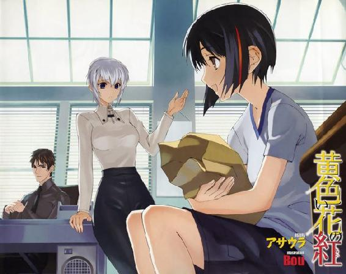

| 黄色い花の紅 | |
| アサウラ | |
| 集英社 (2013) | |

黄色い花の紅
アサウラ
この本は縦書きでレイアウトされています。
また、ご覧になる機種により、表示の差が認められることがあります。

主要登場人物
府津羅紅花（ふつら・べにばな）
府津羅組組長の一人娘。
白石奈美恵（しらいし・なみえ）
工藤商会正社員。現在は事務職についているが、昔は前線にいた。
黒田真玄（くろだ・まさはる）
工藤商会副社長。会社の運営を実質的に担っている。
工藤晩翠（くどう・ばんすい）
工藤商会社長。現在は海外を放浪中。
河合透佳（かわい・とうか）
工藤商会事務職。虚弱体質のため頻繁に入退院を繰り返している。
関山あづみ（せきやま・あづみ）
和風居酒屋を営む奈美恵の幼なじみ。
長田（ながた）
紅花の専属護衛。
中島紫炳（なかじま・しへい）
警察官、らしきもの。
府津羅庵治（ふつら・あんじ）
府津羅組組長。
イラスト／Ｂｏｕ
序幕
彼はマグカップに注いだ酒を口に運ぶ。度が強いだけの安い酒だ。舌にその味を滲ませ、喉を跳ねるように転がり、胃の中で短く燃え上がる。
酒は未ださしてうまいとは思えず、むしろまずいとさえ感じる。だが初仕事の後、主から労いの言葉とともに酒を与えられて以来手放したことはない。
彼は酒を飲む。かつて味わったあの強烈な刺激と心地良さから離れて久しい。
怪鳥の鳴き声に似た高音を上げて部屋の扉が開き、現れた男が部屋の中に短く言葉を放り込む。出番だぞ、と。
マグカップの中の物を飲み干すとゆっくりと席を立った。薄暗く、火薬と薬品の臭いに溢れた部屋で彼は自らの体に強固なアーマーを装着し、さらにその上を防弾スーツで覆っていく。
硝煙と血の香りを纏っていく。
無数のマガジンパウチが取りつけられたコートを羽織り、そして最後に両目の部分だけがくりぬかれた仮面を被る。
視界が狭まる。汗の臭いがする。
彼は何も想わない。いつもの仕事。いつもの作業。ルーチンワーク。
木棚から銃を取り出す。それは彼自身が時間をかけて手を入れた毒蠍。
いくぞ、化け物。その言葉に促され彼は部屋を出る。
これから行く先で自分は銃を撃つ。人を殺す。傷を負う。
しかしどこに行くのか、誰を殺すのか、何故自分が戦わなくてはならないのか、彼は知らない、訊かない、考えない。
必要がないのだ。ただ呼ばれたら仲間以外の者に銃を向ければいい、殺せばいい、それでいい。それが彼の出番だ。出番のない時は銃の手入れをし、自らの体を鍛え、そして酒を飲むだけでいい。特別言われることがなければ、それでいい。
彼は名も知らぬ仲間の後をついていく。名前どころか顔も知らぬ仲間達。何年もの間ともに銃を撃っているはずだが彼は知らない、訊かない、憶えない。
食事をもらい、命令をもらえるのなら、それでいい。
自分にとって戦うこと、それが全てなのだ。だから必要がなかった。何故戦うのか、考える必要はなかった。戦え、というのなら戦うまで、つまりはそういうことなのだ。
今日は一段と酒臭いな、そんなに酒が好きか。前を行く男が振り返り顔をしかめて言った。
彼は何も応えない。
何故好きでもない酒を飲むのか、今はもう忘れて久しい。
第一部
０
事務所、デスクの電話が鳴る。黒田が取った。
ソファで横になって雑誌を読んでいた私に彼はお前も電話を取れ、と手振りで伝える。
私はテーブルに置かれていた子機を耳に当てた。
黒田が落ち着いた声で告げる。
「工藤商会です」
電話から男の声、そしてその後ろでは銃声と複数の怒号。
『府津羅組の長田だ』
「これは長田さん。いつもお仕事を回していただき......」
『挨拶は置いておこう。本題だ。別荘が襲われている、手を借りたい』
その淡々として落ち着いた言葉に黒田は小さく舌打ちした。
「別荘というのはあの、山の中の？」
『そうだ、そこだ。状況は知っているだろ。お嬢の子守を頼みたい』
「了解しました。契約について話している時間はないようですね。状況もまずい。仕事代はこちらで考慮しますが、よろしいですか？」
『仕事をこなせるのなら構わん、早く来てくれ』
黒田め、うまいことやるものだ。
「大丈夫ですか？」
『いささかまずいな』
「しかしさすがは長田さんだ。その状況の中でも落ち着いている。大したものだ」
『世辞はいい。もらっても嬉しくはない。......なんとか逃げ道と車は確保したが途中で封鎖でもされていたら終わりだ。どうにかしようとは思うのだが』
何やら向こうで悶着しているようだった。黒田はそれを耳にふむ、と落ち着いたままだ。
「了解しました。白石と若いのを行かせます。あとはお任せください」
『頼む』
電話は切れた。
「まったく戦闘前に連絡してくれれば楽なものを......まぁいい、割増しだ。奈美恵、上で寝てる山吹、碧山を連れてお嬢を迎えに行ってこい。お得意様だ、しくじるなよ」
「あの子に会うのは二カ月ぶりになるわね。最近はゴタゴタしすぎよアイツらのトコ。もうずっとお祭り騒ぎじゃない」
「今夜は花火祭りのようだ。見とれて近づきすぎるなよ、火傷じゃすまないぜ。処理はやっておく、全力で行ってこい」
１
アクセルを深く踏み、急発進。バックミラーを見やれば山吹のアルファロメオが派手なエンジン音を響かせて私の車にピッタリとついてくる。
私達は街の中央部を迂回するようにコースを取り、制限速度など忘れ去った速度で駆け抜ける。しばらくして街外れの山道に入り込んだ。街灯も少なく道は暗い。ライトを遠めにする。
いくつかのカーブを抜けると前方に赤い光。近づくとそれは横転し、炎上している車だと知れた。その後方には玉突き事故でも起こしたように黒塗りのセダン数台が路肩にその身を擦り合わせて止まっており、それらに囲まれる形で一台の白いベンツが沈黙していた。
現場を通り過ぎる時、横目で白いベンツの中を見るが人影らしきものはない。
大きなカーブを一つ曲がった所にエンジンをかけたままで車を止める。その後方に山吹の車も停止。ジャケットの懐からハンドガンを取り出す。マガジンを抜き弾数確認後、すぐさま挿し戻しセイフティ解除。
本体に装填されているものと予備マガジン三つで計三十九発。弾数は十分だろう。
愛銃の名はブローニング ハイパワー。正式にはＦＮ ハイパワーだが通称の方が有名な現代オートマチックの基礎とも呼ばれる銃だ。弾はハンドガンでは標準的な９ミリルガー、それを十三発腹に抱える。多少古い型の銃だがその長年培われた性能、信頼性においては比類ない。特に私のＭｋⅢモデルでは幾つもの改良を受け今日でも他の銃に引けを取ることはない。
グリップを握り、表に出て辺りを窺う。とりあえず目につく範囲に敵の姿はない。
早春の夜風は湿り気を帯び、緑とガソリンの燃える不快な臭いをかき混ぜて運んでくる。後方、エンジン音の鼓動で夜を震わせるアルファロメオから降りてきた、ミリタリージャケットを羽織り、頭を見事なまでに金髪に染めた男、山吹とデニムの上下に身を包んだ男、碧山がそれぞれの得物を手に近寄ってくる。
準備はいい？ と視線で私が訊くとどこか幼さの残る山吹が横目で苦笑いする碧山を見た。どうかしたのかと思ったけれど、奴の手に握られた銃を見て納得がいった。
スタームルガー ＧＰ１００だ。
「碧山、アンタなんでＰ85じゃなくて趣味の方の銃持ってきてんのよ!?」
「今、ちょうどメンテ中で......バラしてたんで......」
奴はどこぞの地方訛を含ませて言う。
普段仕事時はセミオートマチックのスタームルガー Ｐ85を愛用している碧山だがこいつが今回持ってきたのはサブで使ってる３５７マグナム用リボルバー、スタームルガー ＧＰ１００の４インチ。
コストパフォーマンス、耐久性の高さなどからいって私もいい銃だとは思うが、それは趣味のリボルバーとして見た場合であり、実戦での使用においては六連発という少弾数の時点で不安要素を内包している上に、マグナムという無駄にパワフルな弾丸を採用しているガンを持ってくるのはどうだろう。
「しかも悪いことに......クイックローダーが一つしか......」
「は？」
「いやぁ、慌ててたから......」
「......何やってんのよ......バラでは持ってきてないの？」
苦笑いする碧山の顔を見て、私はあきれてため息を漏らした。
クイックローダーはスイングアウト式のリボルバーの弾薬を一気に装填させることができる器具である。これはオートマチックに比ベリロードが遅いリボルバーには非常に有効なものなのだが、これが一つってことは銃に装填されているのと合わせてもわずかに十二発。ハイパワーのマガジン一個分にすら満たない。馬鹿にも限度というものがある。
山吹の方を見ると彼は三つッス、と言った。こいつのベレッタＭ92ＦＳはワンマガジン十五発入るから十分だろう。まぁコイツの場合ワンマガジンには十三発しか入れない主義だから実際は五十二発といったところか。
「山吹が先頭で私と碧山で後方を固める。いいわね」
彼らが頷き、私はハイパワーのスライドを引いた。
状況開始。私達は山吹を先頭に間隔を少し狭めにとったデルタの形を取って道路横手の山林に入る。遮蔽物のない道路の真ん中を走る英雄気取りはここにはいない。
......いつも何も考えていない碧山一人だったら行ったかもしれないけど......。
足下の草は邪魔になるほど生えてはいないが背の高い木々の密集は濃く、この暗闇では走り抜けることは難しい。小走りがせいぜいだが音を立てないためにもこの方がいいだろう。
湿った草木をスニーカー越しに感じながら道路に沿うように進行する。
果たして木々の向こう側に煌々とした炎が見え始める。現場だ。木々の隙間から目を凝らせば先ほどは気がつかなかったが、車の周りには数人の男達が倒れているのが確認できた。
「私が行く。バックアップ」
道に出た途端に撃たれる可能性があるが碧山の馬鹿はともかく、ここで今回の主力である山吹を失うわけにはいかない。二人が警戒に入り、私は道に飛び出す。
燃え盛る炎に照らし出されたその光景は酷いものだ。恐らくセダン同士の衝突でやられたのか、エアバッグに顔を埋めたままピクリともしないドライバーやら、道端で日本刀片手に血にまみれている者、二丁拳銃で万歳してぶっ倒れている者などなど。
死体の数が多い。事態は思っていたより切迫しているのかもしれない。
あの子はまだ無事だろうか。急ごう。
とりあえず目標の白いベンツをのぞいてみる。先ほど見た通り誰も乗っておらず、扉が半開きになっている。すでに逃げた後のようだ。
近くに倒れていた男に駆け寄ってみるとそいつは胸に数発の弾丸を喰らっており、すでに虫の息だ。府津羅さんとこの若いのだろう。ワイシャツを力任せにはだけさせて傷跡を露出させる。胸に喰らった三、四発の弾丸が肺を貫いているようで、傷穴から血とともに弱々しくプシュプシュと空気が吹き出ている。意識もなく、すでに助かる見込みはなさそうだ。
銃創からいって９ミリだろうか。二発も当てれば十分無力化できただろうに仕事が執拗だ。
通常肺に撃ち込まれれば人は持って十五分、しかしこれだけ撃ち込まれればそう時を経ずして逝くだろう。まだ生きているということはそう時間は経過していない。敵も近くにいる。
辺りに注意を払ったその時、かすかなうめき声を耳が拾った。
男の上着で手についた血を拭き取り、その声のもとへ駆け寄る。横転したセダンの助手席だ。窓から伸びていた腕を掴み、萎んだエアバッグに顔を沈めていた男を引きずり出す。
仰向けに寝かせ、傷を見るとそれほどダメージはない。だが胸部を触ったさいの微妙な感触からして肋骨が何本かいっているらしく、その破片が内臓に突き刺さっていないとは言い切れない。また同様に首、頭を打っている可能性もある。なんにせよこれ以上素人が動かしていい状態ではなさそうだ。
「......く、工藤んとこのか......」
「工藤商会の白石です。依頼を受けてやってきました」
弱々しい腕で男は下り方向の森林を指さす。親指が犬の尾のようにダラリと垂れていた。
「お嬢はこの方向の林の中に......行くのを見た。何人かついていたが......敵もすぐに追いかけた......強いぞ......連中......化け物を......」
「化け物？」
男は激しく咳き込むと荒い息のまま意識を失ってしまう。このまま放置しておくのは危険かもしれないが、しかし私達の仕事に彼らの救助は含まれていない。彼らもまたそれを知っているし、それを望んでいるはずだ。
私は男の指さした林に向けて走る。後ろから山吹と碧山が無言でついてくる。森林の中に飛び込み、小走りで突き進む。道から遠ざかるにつれて街灯のその力も弱まり、深い闇がひっそりと降りてくる。今では木々に削られた弱々しい月明かりが頼みの綱だ。見通しは十メートルを切った。
銃声だ、と後ろの碧山が言う。足を止め、耳をすませば確かに数発の銃声が聞こえた。
その中に混じって私の耳がおかしな音を捉えた。ズバババという銃の連射音だ。
日本ではフルオートは当然、バースト機能すら搭載された銃は禁止されているのだが......。
どうりであの男、胸に数発喰らっていたわけだ。連射機能を有した銃での攻撃なら頷ける。
こっちはセミオートのハンドガンで、敵はフルオート機能を有する銃での武装。銃種は知らないが音からしてこちらが二発撃ち込む間に向こうは四〜七発といったところ。分が悪い。弾数で勝負が決するなんていうのは互いに素人じゃない限りはまずないけれど、それでも正面切っては戦いたくないのが心情だ。
ん？ と碧山が何かに気づき、森の奥に行くので私達も続く。奴の足が止まる。こちらを見、指を二本立てて進行方向を指さす。二人いる、という意味らしい。目を凝らしても私にはそれらしき姿は見あたらないが、まぁ奴には見えているようだし大丈夫だろう。私は頷く。
碧山が二発放つ。マグナムの強烈なマズルフラッシュで十五メートルほど先にいた敵をかろうじて確認。私達に背を向けていたのは防弾ベストを着込んだ男達だ。
片方の男の後頭部に初弾が喰らいつくももう一人にはベストにヒット。グゥエ！ と、踏みつぶされた蛙のごとき悲鳴を上げながらも身をひねり、手に持っていた銃をこちらに向ける。だが、敵がそれを放つよりも先に山吹のベレッタがそつなくその男の眉間を貫いた。
マズルフラッシュでチカチカする目を細めながら倒した男達のもとに行き、奴らの得物を見る。一人は暗くてよくわからないが小型のハンドガン。もう一人は......これはスコーピオン？
スコーピオンはハンドガンよりやや大きめのサブマシンガンだ。通常ならば当然フルオート機能を有し、またその反動に対応するためにワイヤーストックが標準で搭載されている。確か７・65ミリと威力不足を補うために後に作られた９ミリのバージョンがあったが、状況から考えて９ミリ弾仕様であろう。
危険な玩具だ。ろくに訓練もされていない奴がこんなのと対峙したらとてもじゃないが対等に戦うなんてできやしない。
「銃声がまだ聞こえる。奥に、まだ」
碧山がうなるように呟き走り出す。私達もそれに続く。
木々の密な香りの中に硝煙の香りが濃厚に漂い始めると前方が開け、幅二メートルほどの細く浅い川に出た。
碧山、山吹が川の上り、下りそれぞれに銃を向けて警戒し、まず私が川を飛び越える。
私が着地したその瞬間、無数の銃声とともに放たれた弾丸が足下の土を堀り下げる。
ヤバイ、狙われている、そう判断するや否や川の中に飛び込む。数度身を転がしつつ浅い川を飛び出し、後方の木々の間に逃げ込んだ。水気を吸った衣服が重く、動きが鈍くなる。
「馬鹿！ なんでちゃんと警戒してないのよ！」
焦った私は思わず声を張り上げる。久々の戦闘でどこか緊張していたのかもしれない。
「山吹、おめぇの正面だ、狙え、撃て、早く！」
碧山が叫んでも、山吹は敵を見つけられず、銃口を正面に向けているだけでトリガーを引けない。そうこうしているうちに山吹の場所が敵に知れたようで彼にも銃撃が襲う。だがそのさいのマズルフラッシュで敵の位置が見えた。川の向こう側、木の陰。
飛び来る弾丸を地に伏せてかわし、そのままの姿勢で山吹のベレッタが火を噴く。それは正確に敵の体に喰らいつくが、倒れない。
さっきの奴と同様ボディアーマーを装備しているようだが、それがなんだ。
私と碧山が続けてトリガーを引き、９ミリとマグナム弾の雄叫びが重なる。
鼓膜を貫く発射音が木々に跳ね返って木霊のように響き渡り、そして敵が地面に伏した。
たとえ弾が貫通しなくとも９ミリ、そして３５７マグナムのパワーは肋骨をへし折り内臓を破裂させるだけのパワーを有している。死なないにしても戦闘はできまい。
「誰か来る」
碧山がそちらへ銃口を向けると、確かに人影らしきものが川の下流方向から走ってくる。私もそちらに銃口を向け、山吹はバックアタックに備えて反対に上流へ向ける。
「止まりなさい」
「俺は敵じゃない。府津羅組の者だ。よく来てくれた」
影は立ち止まり、腰から伸びる日本刀を抜いた。それで身元を証明しているつもりなのかもしれないが、人によっては攻撃態勢に入ったようにも見える。ふむ。まぁこのわけのわかんないところがいかにも日本のヤクザ者らしい。
私は銃を構えたまま影に近づいてみる。黒いワイシャツの上に赤いネクタイを締めた中年の男。見知った顔ではないが、敵ではなさそうだ。銃を下ろす。
「紅花はどこ？」
「ついてきてくれ」
男は日本刀を抜き身のままで川を小走りに下り始め私達はそれに続く。山吹はまめに後方へ注意を払う。
「今、何人残っているの？」
「お嬢の他には俺を含めて三人だ。あとは別荘に残ったのと道路の上でやられちまった」
男は苦々しく言うと、川沿いから離れ、林の中に入る。しばらく進むと大きな木の陰で数人がうずくまっていた。ガタイのいい男達に挟まれているのは小さな、本当に小柄な少女、府津羅紅花。
その名に相応しく紅色を地に黄色の花が描かれた着物を身に纏い、それはこの暗闇の中でも鮮やかに見て取れる。漆黒の髪は肩の所で綺麗に切りそろえられ、着物と相まってまるでかわいらしい日本人形のようだ。
私はハイパワーの撃鉄を上げたままサムセイフティをかけて懐にしまい、彼女をそっと抱きしめる。
「紅花、元気だった？」
「お久しぶりです、奈美恵さん」
抱きしめたせいでこの子の着物が濡れてしまったが紅花は一切気にした様子がなかった。いい子だ。その気遣いに甘えるわけじゃないがあえてそれには触れずに力任せに抱いた。
「二カ月ぶり、かな。元気だった？」
襲撃を受けてこんな所に逃げてきている娘に元気だった？ とは我ながら間の抜けたことを......。しかし彼女はそれを気にする素振りもなく普通にはい、と一言返してくれた。
そう、本当に普通に。
ハグを解くと紅花は柔らかい笑顔を向けてくれる。この状況下で何と健気なことか。命を狙われ、こんな暗闇に逃げ込み、そして今もなおどこから飛んでくるかわからない弾丸のプレッシャーを押しのけ平然としている。少なくともそう見える。肝が据わっているのか、もう慣れてしまったのか。
紅花は府津羅組というヤクザ、その組長の一人娘である。呼び名こそヤクザと旧来のそれと同じではあるが実体はかなり変化している。
近年、海外からの移民増加に伴い国内の血と文化が入り交じったことでそれまで薄れつつあった日本という存在価値が再認識され、今一度自らの祖国と民族の誇りを意識して組織を立て直したのが府津羅組のような連中である。体裁はそのままヤクザだがその基本行動理念は国内における日本と日本人に害を及ぼす存在の排除であり、それまでのような私利私欲を貫くだけの暴力集団とは似て非なるものであるといっていいだろう。とはいえ当然公にできないことを平然とやり続けているのも事実であり、ゆえに義賊という名称で語れるほどの高尚さはなく、肩書きは据え置きだ。
公務として動く警察と違って令状やら逮捕やらの概念がないため、敵視はほぼ敵対であり即ちそれは戦闘という手段に速やかに移行し、はじき出される結果は殺傷であるのだから敵側としてはたまらないだろう。
今回も府津羅組はまたどこぞの連中と抗争中だったそうだが、敵の矛先が紅花に向いたらしい。危険を感じて別荘に身を隠したのだろうが、情報が漏れていたのかもしれない。
何にせよこんな女の子を執拗に追いかけるなんていけ好かない連中だ。くそったれどもめ。
「で、どうするんだ？」
紅花を守っていた男の一人が訊いてくる。正直なところ敵を殲滅すると言ってやりたかったが、私達の仕事は紅花を守ること。そのうえ敵は重装備となるとここは逃げの一手が最善だ。
「紅花を連れて、逃げます」
「わかった。よろしく頼む。で、俺連は囮にでもなればいいのか？」
「そうしてくれると助かります。けれど、それは」
かなりの危険が伴います、という言葉を口にする前に目の前の男が奇妙なダンスを踊る。まるで電流にしびれたように震え、そして鮮血を迸らせながら墜ちる。そしてほぼ同時に凄まじい銃声が辺りを駆け抜けた。
私は瞬間的に紅花を強く抱き寄せ、地を転がる。
碧山と山吹が木の陰に身を隠すと同時に、弾が飛来した方向にトリガーを引く。
こういった戦闘に慣れていないのか、府津羅組の男ら二人は倒れた男のもとに駆け寄り、もうあきらかに絶命しているというのに仲間を木の陰まで引きずっていく。
情けはしかし彼らの命取りとなる。再び行われた掃射は二人の男をなぎ払う。三人は重なり合うように倒れ、そして死んだ。
私は紅花を抱き上げ、木の根本で腰を下ろす。彼女は私の腕の中で震えるでもなく泣くでもなく、ただ二本の細い腕で私の体にしがみついている。よくできた子だ。ここで叫ばれたりしたらいい的になってしまう。
ハイパワーを取り出し、ちらりと敵の方向を見る。何やら動く気配があるが、はっきりとは居所が掴めない。とりあえずセイフティを解除。
敵は散発的に牽制弾を放つ碧山と山吹の二人に集中的に多量の弾丸を放っている。この二人を囮にして、今のうちに紅花を連れて離脱するのも手だ。
そう思い、腰を浮かした瞬間銃声が急に寂しくなる。あの馬鹿、碧山の弾が切れたな。もともと弾が少ないってのに考えなしに撃ちまくるから......あぁもう！
「碧山、この子連れて山吹と一緒に逃げなさい。私が食い止める」
腕の中の紅花を見る。大丈夫だ。震えてもいない。強い子だ。
頭を少し強めに撫でると腕を解く。彼女がわずかに寂しがるような瞳を私に向け、何かを言おうとして口を開いたが結局何も言わずに口を閉じた。
すぐに碧山が彼女を抱き上げ、一気に走り出す。山吹が牽制弾を放ちながらそれに続く。
そして、私と敵だけがこの場に残った。
てっきり敵もすぐに追いかけると思ったが、どうやら私を倒してからということらしい。それともアイツらが向かった先にも仲間がいるからと余裕をかましているのかもしれない。
仮にそうでも山吹がいれば多少の障害は何とかなる。今は、近くにいる敵に集中しよう。
耳をすます。カサ、カサ、と敵は雑草を踏みつつゆっくりと近づいてくる。静かというより、ただただゆっくりだ。警戒しているわけでもなさそうだ。のそりのそりとまるで縄張りを見回りにきた熊の足取り。
何かあるのか？ それともやっぱりただ余裕をかましているだけとか？
考えたところでわかるものではない。こういう時は思い切りが大切だ。状況が不利を示している場合は特にそう。
深く息を吸い込み、そして吐く。グリップを握り直した。
木の陰を飛び出し、まず適当な所に二発放つ。すぐに敵の応射、連射撃。私は飛び出した時の勢いをそのままに別の木の陰に隠れるようにスライディングする。
マズルフラッシュの具合から敵の位置を確認。姿勢を下げたまま銃弾を三発一気に撃ち込んだ。ボシュボシュボシュという着弾音。手応えあり。
......だが、何かおかしい。敵が倒れない。こいつもボディアーマーを着込んでいるのか。
敵からのさらなる応射。ダメージを受けていないかのように反応が早い。私の横にあった木の根元を粉塵を巻き上げてえぐり取る。こんなのを喰らったら一瞬でお陀仏だが、しかしそれほど精密な射撃ではない。
スコーピオンに限らず小型の銃でのフルオート射撃などまともに的を狙えるものではない。吐き出すのがエアガンのプラスチック弾ならともかく、鉛弾に骨をも砕くガス圧だ。両手にしても、標準装備のワイヤーストック使用でも、辛い。そもそもあの手の銃は照準にそれほどのウェイトを置いてはいないのだ。
まだ対処しようはある。足音、銃声からして恐らく敵は一人。スコーピオンのフルオート？ あんな銃、ただ弾をバラまくだけの銃じゃないか。
この暗闇で遠距離からの当てずっぽうでは火力で圧倒されるが、相手を視認できる距離であれば何とかなるはずだ。
身を太い木の陰に隠しつつ、腕だけ伸ばして牽制弾を三発。ちょっと間をあけてからさらに四発。木に背を預けチェンバー内に一発残したままマガジンをリロード。
そこに敵の掃射。横一文字のようになぎ払われる弾丸は背中にした木を震わせ、振動が背を通して腹に響く。
敵の銃が黙るのと同時に私は飛び出した。
さっきの射撃の着弾から敵のおおよその場所はわかっている。
見えた。敵は障害物に隠れようともせず、ただ闇の中に仁王立ちしている。驚くのはその巨体だ。かなりデカイ。
黒色に統一した全身の装備は闇に対して有効な迷彩効果を生んでおり、うっすらと体の輪郭線だけが見えるのみ。だが近づくにつれてその細部が見えてくる。
そいつはスコーピオンを右手に、そしてリロード中だったのか左手には替えのマガジン。驚くことにコイツはストックを使用していなかった。
どんな銃でも連続で撃てば大抵は弾着が散るものだが、先ほどの射撃などは精度こそ欠いていたが反動によるブレは感じられなかった。コイツほどの体があればストックなしでもあれぐらいの芸当はやってのけるということか。
私は走りながら銃を前に突き出し、撃つ、撃つ、撃つ。
三発を撃ち込むが倒れる様子はなく、わずかに身を震わせるだけで弾丸を全て受け止めてみせる。おまけにそいつは悠々とリロードをやってのけ、スコーピオンの銃口を私に向ける。
「クソ！」
もう一発を喰らわせてから、私は全体重をかけて跳び蹴りを打ち込む。９ミリを平然と受け止める奴に対して私の蹴りが有効かどうか自信はない。
だが、蹴りが直撃する直前に敵が片手で射撃。その反動と蹴りが効いてか敵が後方に倒れ、私もその上を転がる。ゴツゴツとしたボディアーマーの感触が体を叩く。
すぐさま私は飛び起き、握られたままのスコーピオンを足で踏みつけ顔面を狙う。
木々の間から月明かりがスポットライトのように差し込み、初めて奴の顔が見えた。
黒く丸みをおびた仮面。両目の部分だけがくりぬかれ、それが月明かりをも吸い込み完全な闇と化していた。
背筋にゾクリとする冷たいものを感じつつ私はトリガーを引く。カキュンという甲高い音を立てて面が弾をはじいた。
「な!?」
面は全体的に丸みを帯びているので弾が滑ったのかもしれない。もう一発。
と、トリガーを引こうとした時、足下のスコーピオンが吠える。上に乗せていた足が取られ、私は尻餅をついてしまう。
その隙をついて仮面野郎が体勢を立て直す。月明かりのスポットライトに奴の姿が不気味に浮かび上がった。二メートルはあろうかという長身。さきほどまで見えなかったがコイツ、鎧のようなボディアーマーを着込んだ上にさらにマガジンパウチが大量につけられた黒いコートを着込んでいるため、やたらとデカく見える。まるでフランケンシュタインだ。
銃口が倒れたままの私に向けられる。
即座に私は座ったままの体勢でハイパワーを構える。ボディや顔面はダメだ。狙うはスコーピオン。
高音が私の耳元をかすめるのと私がトリガーを引くのはほぼ同時だった。ハイパワーから放たれた弾丸はスコーピオンを叩き上げ、連射された弾丸は空へと散った。
体勢が崩れたのを見計らって飛び起きた私は逃走に移る。こんな化け物相手に９ミリだけでは話にならない。
化け物、と言ったあの男の言葉がふと頭をよぎった。確かにその名こそが奴には相応しい。
私は逃げながらも奴に牽制弾を送り続ける。一発、二発、三発。
それにお返しとばかりに無数の弾丸が後方より迫る。私は土の上にヘッドスライディング。
頭上をかすめる弾丸。狙いはほとんど適当だ。さっきと同じ横一文字。もう向こうは私の位置を捕捉していないのかもしれない。ならばこれ以上銃撃せずに逃げた方が得策だ。再び逃走に移った私は牽制射撃を止める。
そういえば奴の攻撃はことごとく精密さ、機敏さを欠いている。弾丸数とフルオート機能に頼り切った物量攻撃だ。
そうだ大したことはない、限定された空間内ならともかくこの状況なら安易に逃げ切れる。
そう暗示のように心で反芻させ、自分に言い聞かせた。
水に濡れたスニーカーで地面を蹴り、邪魔な小枝を手で払う。道がこれであっているのかどうか、それを確かめるより先に足を動かす。
木々の間から街灯の明かりを見つけた。私は森林を抜けて、道路に出る。
しまった、とすぐさま思う。てっきり自分の車の所だと思って飛び出してみたが、焦っていたせいか場所を間違えた。炎上するセダンと自分の車のちょうど真ん中だ。再び森林に戻ろうと踵を返すとそこを銃弾が襲った。反射的に身をひねり、かわす。
銃撃は森林からだが連射してこない。さっきの仮面野郎ではない。
私は森林に戻るのをあきらめ牽制弾を放ちつつ道路を走った。後方からの銃撃が大きなプレッシャーとして心臓の鼓動を高める。
途中でさらに牽制弾二発。マガジンを捨て、リロード。これが最後のマガジンだ。
振り返ると敵も道路に出てきた。得物はハンドガンか。距離が開くと当たらないと判断したのかそいつは単独で私を追いかけ始めた。
走りながら撃てば狙いは乱れる。止まっていてさえ当たらなかったのだ、今さら当たるまい。
私は射撃をやめ、とりあえず走るのに専念した。カーブを曲がる。自分の車まであと少し。
山吹の車がないのを確認し、自分の車に駆け寄ると反対側に回り込む。屋根の上に両手を乗せ、銃を頂点とした二等辺三角形を作るように両手を伸ばす。
敵は私が停止したことでいけると思ったのか銃を乱射するのだが、その弾丸は明後日の方向に飛んでいく。よほど腕が悪いのか、それとも銃が悪いのか。いや、単に頭が悪いのかもしれない。
敵との距離は約二十メートル。
荒れた呼吸を正すため息を深く吸い込み、そして吐き出す。
ハイパワーのリアサイト内にフロントサイトが納まり、敵の男に重なる。
すぅっと一呼吸分の空気を肺に吸い込む。
静かに、そっと、しかししっかりとトリガーを絞る。９ミリ弾の衝撃が手首、肘、そして肩へと流れ、腰をクッションにしつつ足から地面へ逃がす。
六条のライフルマークが刻まれた弾頭が火薬片を振りまきつつ空気の層を貫き、男の頭に喰らいつく。丸みを帯びた弾頭は強固な頭蓋骨を安易に砕き、男が断末魔の叫びすら上げずに昏倒。
胸がすくような耳に残る銃声と手の中の反動。
何万発の射撃を経験していても理想的なまでに決まった一撃というのは独特の手応えがある。快感に似ている何か。人を死に至らしめたとしてもなお、それはある。
ハイパワーの撃鉄を下ろしてセイフティ。ショルダーホルスターにしまって車に乗り込む。ギアを入れ、一気にアクセルを吹かす。タイヤの跡をアスファルトにこすりつけて車が飛び出す。カーブを曲がり、燃えさかるセダンのわきを通り抜けようとすると、街灯の下だというのにそこだけ切り抜かれたように真っ黒な影が銃を構えているのが見えた。あの仮面野郎だ。
奴のスコーピオンが火を噴く。
反射的に頭を下げる。この車のガラスは防弾ではない。バキャキャキャという音を立てて一瞬にしてウィンドウに蜘蛛の巣が張られる。
車は仮面野郎に迫る。このまま轢くか？ あんな巨体にぶつかってこの車が持つだろうか。低燃費のエコカーは低トルク、低重量、低強度、低税金、そして案外高価格。どう考えてもこちらの被害は大きくなるが......しかしやるしかない。
飛び来る弾雨の中、顔を上げて仮面野郎に狙いを定めてアクセルを吹かす。
さすがに仮面野郎もヤバイと判断したのか射撃をやめて横に飛ぶ。だが、のろい。
車が逃げようとする仮面野郎をフロントの先で捉える。急ブレーキに似た衝撃が私を襲う。ハンドルに打ちつけられそうになるのを歯を食いしばり、腕に力を入れて体を支える。
衝突の反動で制御を失った車は燃えるセダンにその身を擦る。車内に衝撃が走り、側面のウィンドウにヒビが走るもハンドルを切って何とか安定を得、そのまま走り抜ける。
仮面野郎はフロントライトを粉々に砕いてボンネットの上を転がり、そして私の視界から消え失せた。どうなったのかとサイドミラーを見ようとしたが、左右ともにあるべき場所にそれはなかった。奴とぶつかった時、そしてセダンと擦ったさいに持っていかれたらしい。
バックミラーもヒビ割れた状態でぶらぶらと垂れ下がっており、後方は確認できない。
アクセルを踏む。加速した。車は何とかまだ走れた。
後方から銃弾は飛んでこない。
ため息を吐いてハンドルを握り直す。
とりあえず、危機は抜けたようだった。
２
シャワーに濡れた髪を張りつけた自分が鏡の中にいた。なんともまぁ疲れた顔だ。ちょっと前までは一晩や二晩徹夜したところでどうということはなかったのに、今ではすぐ顔に出る。
私、白石奈美恵は再来月で三十になるのだ。いよいよ三十路。
たかが三十。されど三十。昔と違って三十代の独身女なんて全然普通だし一般的にはまだまだこれからという時期といえるのだが我が社においてはそうはいかない。
ウチ、有限会社工藤商会はボディガードなどをメイン業務としているものの、基本的には武力を有した便利屋みたいなものである。銃砲刀剣類所持等取締法が緩和、改変されて少し気合いを入れれば多くの人間が銃の所持を認められる現在において、このような業種は結構需要があり、依頼は子供の通学警護から貴重物品の保管まで多岐にわたる。
そして今回のようなヤクザの娘の保護も、だ。
こういう会社に所属する場合、資本は常に己の肉体にそのウエイトが置かれるのが当然であり、その能力値は年齢という二桁の数字と反比例するのは致し方のないことではある。
ここが他の会社と違うところだ。歳を取れば必然的に経験では埋め合わせられない能力の低下を強いられるのだ。まったく嫌になる。
しかも年々衰える私を尻目に、私が銃を教えたガキどもが次々にその肉体のポテンシャルを解放していく。後輩に抜かれるのはムカツク。それが自分の教え子とくればなおさらだ。社長の工藤さんは、普通喜ぶもんだと言うが私は気にくわない。腕が上ということは、実力がものを言うウチの会社においては地位が上ということになる。そういうのが嫌なのだ。今まで犬コロのように扱ってきた奴と立場が逆転するなど。
なめるなよ、そう易々とやられてなるものか、ってことで早々に現役を退いて事務職に落ち着いたのが二年前。事務になればどちらが上ということもないのだ。
とはいえ完全に事務のみ、というわけではなく緊急時は今回のように前線に立つし、普段も車を持っていない奴などを輸送する雑務、また新人の教育などもこなす。あとは客が特別な事情で女性を指定してきた場合は我が社の男女比の関係から私が駆り出されることもしばしばだ。当然そういう時は体がものを言うのだから事務職とはいっても歳は取りたくない。
当然一人の女としても、だ。
曇ってきた鏡を手でこする。また現れた自分の顔をじっと見つめてみた。居酒屋を営んでいる友人が言うには私の肌は非常に若いらしい。普段から手入れはほとんどしていないのだが、若い頃からロクに化粧らしい化粧をしてこなかったのが逆に良かったらしい。友人とはいえ客商売だからお世辞を言ったのかもしれない。よくわからない。これが三十の標準だっていう顔は誰も見たことがないのに何を基準に皆は若いとか言うのだろう。自分と比べて？ だとすればアイツ、かなり謙虚になったものだ。
私は自分を見つめ続ける。そしてアイツの顔を思い浮かべた。
「......ふん」
やっぱりお世辞だったようだ。私は濡れたショートの白髪をかき上げた。
私は鏡の前で笑顔を作る。傍目からは元気そうな顔にしてからシャワールームを出て新しい服に着替える。今まで着ていたのは洗う気が失せるほど汚れきっていたのでゴミ箱行きだ。
仕事柄会社に泊まり込むことも多く、衣服はいくつもストックしてあるので問題はない。ジーンズと厚手のトレーナーを身につけ、ハイパワーを収めたショルダーホルスターを纏う。その上にジャケットを羽織った。
ドライヤーを使おうかとも思ったが、バスタオルで水気を取ってそれをそのまま首にかけるにとどめる。まだ仕事中だ。ゆっくりはしてられない。
ウチの会社は地上三階、地下二階の一見は小さなビルに納まっている。三階は社員のための仮眠室、シャワー室、洗濯室、あと物置からなっており、二階は事務所、待機室、給湯室と名のついた結構立派なキッチン。そして一階には工藤さんの友人である星さんが経営するガンショップが入っている。いや、正確には星さんの所有するビルに私達が入っているのだ。使ってないから、という理由だけで格安で二、三階を借りている。
また地下一階は星さんの管理運営する射撃場、地下二階は銃弾などがたっぷり納まったガンショップの倉庫兼星さんの作業室となっている。
二階の事務所の防音扉を開けると、先にシャワーを浴びて私のセーターを着た紅花が笑顔で迎え入れてくれる。まるでただ遊びに来ていた少女のように。
事務所は接客用のテーブルを挟んで向かい合った革張りのソファがワンセット。そして副社長黒田真玄、私、そしてもう一人の事務員である河合透佳の三つのデスクがあるだけであとは質素なものだ。壁際には資料の納まった三台の本棚、反対側には今はカーテンで隠れているが大きく取った防音用の二重窓。それだけだ。ちなみに長時間椅子に座っていられない社長工藤晩翠には専用デスクはない。
彼女の正面に座って面と向かうのもどうかと思ったので、私は彼女の横に腰掛け、壁に掛けられた時計に目をやった。早朝四時二十分。カーテンの隙間からはようやく顔を出し始めた太陽が空を染色し始めているのが見えた。
「眠くない？ 大丈夫？」
「私は大丈夫です。それより奈美恵さん達にお怪我とかは？」
彼女は本当に何事もなかったように平然と気を遣ってくる。
「これでもプロだからね。あの程度なら慣れたものよ」
当然嘘である。あんな銃弾飛び交い、不死身の化け物が横行している戦場に飛び込むなど普段の業務ではありえない。危険すぎるうえにこの手の仕事は本当なら法的にも受けられない。
我々のような職業は『戦闘行為に至ることが確実な状況下においてはこれを受けることはできない』とされている。これはつまるところ戦うことが前提の仕事を受けるな、ということである。確かにこれがなかったら殺し屋を認めることになってしまうからだ。
現在の法律では敵意を持って実銃と思しき物を向けられた時点で正当防衛がなり立ち、射殺したとしても簡単な審問と書類提出でことが済む。
これはフロリダ州のスタンドユアグラウンド法をさらに日本が独自に発展させたもので、もとのそれとは違い、正当防衛云々以上に銃を持つ者に対して不用意な使用を抑制する意味合いが強い。銃を抜けば命のやりとりを覚悟しろ、というわけだ。
ただ今回のように自ら銃口の先に立つような真似をしたところで、銃を向けられたので正当防衛のもとに戦闘行為を行い、不本意ではあるものの幾人かを射殺するに至った、と言い訳を口にしたところでその正当性は皆無である。紅花を保護するというのが目的であっても、だ。
紅花が私の顔を横目で見てくる。強がりがバレたのだろうか？
「えっと......詳しくは知らないけど、オヤジさん結構面倒なことになってるらしいわね」
取り繕うように慌てて別の話題を振ると、紅花はどこかその笑みに自嘲的な何かを含ませて、私から視線をそらした。
「そう、らしいですね」
紅花ははっきりとしない口調だった。
「今回は結構長い間争っているようです。珍しく別荘に連れていかれましたから」
府津羅組がここしばらくの間、どこぞのマフィアと泥仕合を演じているというのはこの辺りではもっぱらの噂だった。今まで派手なドンパチはなかったのだが、最近になって死傷者を出す事件が頻繁に起こるようになったらしい。
「学校は行ってるの？」
「今、春休みなので大丈夫です。でもそうでなくても出してくれなかったと思いますけどね」
「大切な娘だもの、当然よ」
「そうでしょうか。籠の中の鳥みたいな感じでしたけど、それでも、そうでしょうか？」
「まぁちょこちょこ出歩かれたんじゃ別荘に避難させた意味がないからね。あれよ。まさに箱入り娘っていう......」
紅花は自嘲的な笑みを消してほとんど無表情になる。
どうやら私のジョークは外れたらしい。黒田の冗談よりは面白いと思うのだが......慣れないことは言わない方が良さそうだ。
「あ〜......そうそう。私が子供の時はよぉく親父と喧嘩したものよ。あのクソ親父、プロレスが好きだったから何かと関節技極めてきたわ。アンタはいいわね、大切に育てられているのよ。幸せに思いなさい」
紅花はそうですよね、とそっけない。
最後にこの子と会ったのが二カ月ほど前だが性格が変わったような気がする。何かと敏感なお年頃というやつだろうか。
「軟禁されていたのが辛かった？」
「そういうわけでもないのですけど。ただ、その......有無を言わせない感じで......その......」
「今回の敵はちょっとやっかいな相手みたいだし、仕方ないわよ」
私は紅花の頭を撫でる。綺麗に手入れされた艶やかな髪だ。
「あなたが無事で何よりだったわ」
紅花は朝顔が強い日差しに負け、その花を萎めるようにゆっくりと表情を崩してしまう。
「でも代わりにいろんな人が傷を負いましたね。死んだ人も大勢いるでしょう。私は......」
紅花につき纏っていた暗いものは自分の代わりに犠牲になった人達に対する罪悪感か。確かにやりきれないだろう。己を助けるために目の前で死んでいった者達の魂、それは重い。
まだ何か言おうとした紅花を遮り、私は言う。
「今は自分のことだけを考えなさい。悲しむのも悔やむのも後からでも間に合うわ」
子供はまだ自分のことだけでいい。そういう重みは代わりに背負ってあげるべきなのだ。
私達、大人が。
「違うんです」
彼女は再び首を振る。
「私の護衛についてくれた人は皆、父を敬い、そして父もまた信頼している人達ばかりだと聞きました。しかし私にとっては長田さんを除けば見知らぬ彼ら。その彼らが守っているのは父の所有物です。それはこの身であって、私ではない。だからあれだけ大勢の人が目の前で傷つき、死んでいったのに悲しくも何ともない。全部がまるで他人事のようにしか感じられなかった。私を襲ってきたそのこと自体がまるで他人事。今でさえ、これまでのことは父達が勝手にやっている馬鹿騒ぎにしか感じられない。彼らはこの身を守りはしても私を守ってくれはしない。私はいつも、部外者......」
紅花から放たれた思いがけない言葉に驚き、私は目を瞬かせた。
彼女の口元が歪み大きな両眼に潤みが増す。
「......紅花」
名を呟き私は彼女の肩にそっと腕を回す。
うつむいた紅花の小さな頬を涙が一筋尾を引く。泣いている、というよりは涙があふれた、そんなふうに見えた。その一筋でさえ紅花はぎゅっと瞼を閉じて断ち切る。開いた目から再び涙は流れてこなかった。
「私は違うわ」
一言呟き、私は紅花を抱き寄せる。
少しだけ震えていた。泣くのを必死にこらえているようだった。
彼女が私に体重を預けてくる。とても軽い。
私は勘違いしていた。そうだ、まだこんな小さな女の子なのだ。これまでの全て、襲い来る化け物、目の前で次々に死んでいった男達、それら全てを受け止め平然としていられるだけの器なんて、たかだか十四歳のこの子にはない。
幸か不幸か、全てが他人事でしかなかったのだ。たとえそれが己の命を左右することであっても。だからあの銃弾の中で怯えもせず、目の前で死にゆく男達を目にしても震えることもなかった。そうでなくてはことの重みに潰れてしまっていたかも知れない。
でもそれは辛い。とてつもなく、辛い。
彼女自身の意志も何もかもが無視されて、親や、周りの大人達の勝手に振り回され、傷つき、泣かされ、その泣き声でさえ大人達には届かない。
そんな中で彼女は何を想っていたのだろう。
今私の腕の中で震える少女は、これまで一人でずっと泣くのを必死にこらえて膝を抱いていたのか。それはどれだけ辛かったか、それがどれだけ寂しかったか。私達には知りようもない。ただ彼女の細い肩から感じるしかない。
私は彼女を強く抱きしめる。震えが少しでも治まるように。
「少なくとも私は自らの意志であなたを守る。父親の所有物でもなんでもない。紅花、あなたを。何もなくたって私はあなたを守る。大切な......」
大切な......なんだろう。妹、娘、恋人、友人......そのどれでもない気がする。
私にとってこの子は何？ 大切で守りたいと思ってしまうこの子は私にとってどんな存在？
わからない。でも間違ってもこの子の父親がどうとか、仕事だからとかではない。
じゃあ私にとってこの子を守るのはどんな理由？ 薄っぺらな正義感？ 違う。同情？ そんなんじゃない。
ではなに？
お節介焼きな性格のせいかもしれない。きっとそうだろう。でもそれだけじゃない。この子が、紅花が、私は好きだからだ。嫌いな人を守りたいなんて思うほど私は博愛主義者ではない。
では、何故好き？
彼女は私の前で涙を流してくれる。何も隠さずに私を頼ってくれる。私を好いてくれる。それは凄く嬉しくて、たまらなく嬉しくて、思わず力一杯に抱き締めたくなるほど愛おしくて。
でも、人を好きになるというのはそんな単純なことじゃない、とも思う。
不思議なほど自然に、そして絶対的に惹かれるのだ。何があるから好きだなんていう安っぽいものじゃない。この子が紅花だから......だから好きなのだ。全部ひっくるめて好きなのだ。
守ってあげたいと、大切にしたいと、そう思うのだ。
「大切な......あなただもの。紅花」
私の腕の中で彼女は小さく、本当に小さく嗚咽を漏らし、そしてまた涙を流した。
それは小さな容器から水が溢れるように、そっと。そして、ほんの少しだけの涙。
私はただ彼女を抱き続ける。
かすかに震える細い肩。私の肩に乗せた小さな額。華奢な娘。
私はあなたを守る。
仕事でなく、建前でなく、自らの想いに従い、大切なあなたを。

３
三十分ほど私達はそうしていただろうか。いつしか紅花の涙もおさまり、ただ眠る赤子のように静かに私に身を預けていた。
ピッと、デスクの上に置かれていた時計が朝の五時を知らせる。
紅花がそっと私の胸を離れ、そして目元を擦りながら、すみませんと小さく笑った。
「なんか、急に泣き言みたいなこと言っちゃって。普段はこんなことないんですけど」
「いいのよ」
私も微笑んで首にかけていたタオルで彼女の頬についた涙の跡を少し乱暴にこする。紅花は笑った。
「もう、大丈夫です」
「うん」
その時、ガチャリと防音扉が開かれる。事務所に入ってきたのは黒いスーツに黒いジャングルブーツという妙な組み合わせの男、黒田だ。手には近所のスーパーの袋と妙にかわいらしいカバンが下げられていた。
おはようございますと紅花が律儀に立ち、深々と頭を下げる。まるで先ほどまでのことが夢だったかのように、いつものあの子に戻っていた。
「不用心だな、ちゃんと鍵かけとけよ」
そう言って黒田が鍵をかける。おや？ 透佳がいない。さっき電話で打ち合わせた予定では警察に偽装書類を提出してからこっちに戻る途中で拾ってくるはずだったのだが。
「透佳は？」
「チャイム鳴らしても出てこなかったから合い鍵で入ったんだが、案の定パソコンの前で血を吐いて倒れていたよ。途中で病院に放り込んできた」
「透佳さんも相変わらずですね」
紅花がクスリと笑う。いつもの彼女に戻ったその姿を見ながら、私もいつもの調子で苦笑しながら言う。
「相変わらずって......こちらとしては変わってほしいんだけどね」
「アイツが変わるとすれば、死体になる時だろうな、きっと」
透佳は昔から驚くほど体が弱く、毎月のように入退院を繰り返している。特に何もしていないのに意識を失うのは日常茶飯事で、時折心臓までも止まるのだから手に負えない。原因は依然として不明。さすがの医師もさじを投げその場しのぎの対処でやり過ごしているらしい。
そんな奴なので黒田、私、工藤さんの三人が合い鍵を持ち、音信不通になったら万が一に備えて様子を見に行くことになっていた。
しかし、困ったな。アイツが来ないと紅花の服がない。私の服ではサイズが違いすぎてブカブカなのだ。透佳は今年で二十三になるが、体型は今の紅花とほとんどかわらない。いや身長はむしろ透佳の方が小さいかもしれない。
ちらりと紅花を見る。見ようによってはそのちぐはぐな感じがこの上なくかわいらしく見えるのだが、やっぱりちゃんとした服の方が何かと便利だ。特に靴はサンダル状態だし。
店が開く時間になったら適当に買ってくるとしよう。
黒田が紅花にかわいらしいカバンを渡す。
「着替えだ」
「あれ？ 透佳、用意してたんだ」
「いや適当に俺が見繕ってきた」
「ちょっと待ちなさい」
「なんだ」
「アンタ、女性のクローゼットを勝手にいじくってきたわけ？」
「タンスだった」
「そこ問題じゃない！ アンタはプライバシーって言葉知らないの!?」
黒田はやれやれと言った様子で応える。
「俺は平等主義者でね。老若男女差別しないんだ」
奴は少し得意げに鼻を鳴らし、上着を自分のデスクに放り投げると腕をまくる。
腰と脇の二カ所にホルスターを装備しているのが見える。恐らく奴が愛用するグロックシリーズが納まっているのだろう。普段はグロック17をメインアームとして脇に、サブとして銃身とグリップをコンパクトにまとめられたグロック26を腰に下げている。
私はあまり好きではない銃だ。
グロックの黒一色の無骨なデザインをなす強化プラスチック製フレームは、どうも苦手。古い考えなのかもしれないけれどやっぱり銃には金属の力強さが欲しいと思ってしまう。それにデザインも少しつまらない。
黒田はそのまま事務所と繋がっている給湯室に入っていく。
「最近はこの辺りにも二十四時間営業の店が増えて助かる。朝食は食ったか？ 何か作るぞ」
「それよりビールが欲しいわ」
「まだ仕事中だ、やめとけ。コーヒーを淹れよう。山吹達はどこ行った？」
「私の車を持っていったわ。放っておいたら炎上しそうだったから」
「そうか。それじゃ三人分でいいな」
給湯室から包丁で何かを切る音。弁当でも買ってくればいいのに、マメな男だ。
「紅花、今のうちにシャワー室で着替えてきなさい」
「はい。......あの、黒田さん。長田さんは大丈夫なのでしょうか？ 別荘に残って最後まで戦うと言っていたので。長田さんに限ってそんなことはないと思うのですが......少し心配で」
長田さんは何かと私らに仕事を回してくれるお得意様だ。彼は組長である紅花の父親から命令を受け、適切であると判断した部下に仕事を任せるが、組の者では手に負えない、または手が足りない時にはウチに仕事を回してくれる。少々違法なものが多いという難点はあるが。
また彼だけが紅花の専属の護衛でもある。だから長田さんが仕事の話をするさいに紅花は事務所までついてきて、よく一緒にお茶したものだ。
「電話で話したよ。委細よろしく頼むとさ。これから会議だとか言っていたし、ピンピンしているんだろう」
紅花がほっとした表情で防音扉から出ていくのを見送ると黒田はふむ、と呟き砂糖とミルクを持ってくる。
「府津羅のところだけで二十人弱ってとこらしい」
「そんなに？」
「死傷者数だ。死体は警察が確認したところではそれほどでもない。森の探索はこれかららしいから、恐らくもう少し増えはするだろうが」
「敵の死体は確認取れているの？」
黒田は砂糖、ミルクをテーブルに置くと再び給湯室に戻っていく。
「俺が行った段階では別荘で二人、路上に脳天ぶち抜かれた男が一人だけだ。組員の被害状況と比べると手練れだったようだな」
そうね、と呟く。そして少しだけ間を置いてから、訊く。
「大男はいなかったの？」
「電話で言ってた仮面野郎か？ そんな面白い奴がいたら真っ先に署内で噂になる。見つかってないんだろう」
私の車程度で撥ねても大したダメージではなかったのだろうか。ボディアーマーで身を固めているとはいえ、貫通しないというだけで９ミリ弾の衝突時のエネルギーが体を直撃しているはずだ。死に至らないにしても戦闘不能ぐらいにはなっているだろう。
「しかし９ミリを数発喰らっても平然としている化け物とはな。クラスⅡ以上だろうが、よほど質のいいボディアーマーを装備していたとみえる」
「冗談みたいな奴だったわ。私のハイパワーがあそこまでコケにされるなんて」
「まさに化け物か。強敵だな。面白い」
フン、と黒田は小さく鼻で笑い、楽しそうに言った。
「それより、紅花はいつまでここに置いておくの？」
給湯室からはコンロに火をかける音が聞こえる。
「長田と金の交渉した後、一応府津羅にも確認を取った。とりあえず事態が一段落するまでってことらしい。もしかしたら長期の仕事になるかもしれん」
その言葉を聞いて内心私はホッとした。
「そう、今しばらくは手元に置いておけるのね」
紅花に言ったのだ、私が守ると。最低でも今回の件が落ち着くまでは私はあの子の側にいて、あの子を守れる。
「仕事料はそこそこ満足のいくものだったが面倒な仕事になるのは間違いない。あと警察は今は黙っているが、事がこれ以上派手になるなら動き出すかもしれない、だとさ。まぁ頼りにならない筋からの情報だがね。俺達の方に影響はないと思うが、一応頭に入れておけ」
「というか今までよく動かなかったわね。普通に考えてすでに動いていても良さそうなものだし。何より府津羅さんや長田さんにしても一人娘が襲われたってんだから私達よりも警察に行かせるのが妥当な気がするんだけど？」
「まぁな。ただ今回の抗争、単に府津羅組が外国組織の壊滅のためにやっているわけじゃないんだ。警察も一枚噛んでいる。簡単に言うとだな......」
黒田が言うには、府津羅組が以前より売っている特殊な薬――一応毒薬らしく一般には販売されていない――を皮膚に吹きつけるとその部分が炎症を起こして一時的に新しい性感帯を作る。強力なその手の薬と例の敵側の組織が大量にバラまいている混合物たっぷりな粗悪なドラッグとの相性がとてつもなく悪いらしい。府津羅の薬を用いた後でそのドラッグを服用すると炎症が過剰反応を起こし皮膚組織を壊死させるというのだ。
セックスにそういった薬を用いるような奴はドラッグも一緒に使いたがる。特にちゃんと商業登記されていないような違法店では普通に客に売っていることも多々あり、その際は安いドラッグが好まれているのが現状だと聞く。
今回のドラッグの件以外でもその組織はいろいろとやっているらしく警察も多少動いてはいるらしいのだが、法に縛られている以上アクティブには動けず末端連中とトカゲの尻尾切りを続けていたところに今回の府津羅組との抗争が勃発。そこで警察は府津羅組の行動には眼を瞑り、府津羅組は束縛を受けることなくある種の治外法権状態で戦っている、ということらしい。
つまりだ、と黒田はまとめた。
「今回の件は警察にとっては都合が良かったのさ。もともと府津羅組は日本と日本人の害になる連中のみを敵対視する組織だから悪い関係でもなかったしな」
わかってはいたが楽しい話ではなかった。誰も彼も、自分らの利益を守るための戦いじゃないか。くそったれども。
しかもことの発端がドラッグなんていう汚塵だっていうんだから本当に救いようがない。あんなもの、使う連中も売る連中もみんな死んでしまえ。
「警察としては府津羅組を応援するものの表立った行動は控えたいらしい。あまりにも明確な手助けをすると後々問題になるだろうし、何より紅花を保護して敵組織の攻撃対象にはなりたくないんだろう。何もかもから眼を瞑るっていうわけだ。さすがに末端まで統制が取れているわけではないだろうから助けを求めれば一応は対応されたんだろうが......。まぁ長田もそれを了承していたから俺達に連絡してきたんだろうな、きっと」
奴の話を聞いていて胃がむかついてくるのがわかった。
「つまり府津羅さんや長田さんはあの子よりも警察との関係を優先してるってことね」
私の苛立ちの籠もった言葉に黒田はため息交じりに返す。
「組織を運営するっていうのはそれぐらい大変なんだよ。お前も一度やればわかる」
「だからって!?」
「俺達もそうだが、この手の業界じゃなめられたら終わりだ。府津羅にしてもいくら自分の娘とはいえ、それで警察に泣きついてみろ。組織のアキレス腱を公表するようなもんだ。そうなりゃ次からは確実にそこばかりが狙われる」
黒田の言いたいこともわかる。一度でも弱みを見せれば次からはその部分、紅花が狙われるのだ。それを考えれば致し方ない、これもまた娘を想ってのことだ、と言いたいのだろう。しかし、しかしだ。納得できるわけがない。
本当に娘を大事だと想っているのなら一度たりとも危険に晒すものか。
「余計なことは考えない方がいい。自分の仕事に集中しておけ」
「私の今の仕事はあの子を守ることよ。だから」
「だから何だ？ 他人の親子関係にまで口を挟むのか？ やめておけよ。つまらない結果になるのがオチだ。正義感や手前勝手な考えを押しつけていいものじゃない」
「だからって！」
顔をしかめた黒田がコーヒー片手に私の前までやってきた。
「では訊くが、十年前お前はどうした？」
頭に一気に血が上った私はソファから立ち上がり、思わず黒田の胸ぐらをつかもうとして手が前に出てしまう。だが、それを直前で押しとどめた。腕を下げ、黒田から視線を外す。
「それとこれは関係ないでしょう!?」
「あの時、俺達がやると言ってもお前は自ら銃を持った。ご丁寧にもお前は一から射撃を学んだ。何故だ？」
あの時の忌々しい記憶がじわりじわりと滲むように浮き出てくる。早く消えろと、頭を振って私は再びソファに体重を預けた。
「他人がどうこうしようが結局最後は自分でどうにかするしかない、お前がそうだったように。俺が言うのもなんだがそういう問題は多々あるものだろう。親子問題なんてその典型じゃないか。本人達で結論を導いてこそのものだ。お前にだってわかっているだろう？」
頭の中にあの十年前の一件の後、人からかけられた言葉が頭をよぎっていく。
ごめんなさい、ごめんなさい、ごめんなさい......。忘れよう、時が癒やすよ。今の日本じゃよくあること。銃よりもスニーカーを買うべきだ。大丈夫、大丈夫だから......。
......何も役に立たなかった。同情も哀れみも慰めも、優しささえもあの時は邪魔だった。
結局最後は自分がどうするか、だった。
わかってる、わかっているんだ。親しいといっても三年やそこらのつきあいの、私のような第三者が割り込む余地などないはずだ。わかってる。
それでもあの子に何かしてあげられないだろうか。そう思っているお節介な自分もいるのだ。頭ではわかっていてもそいつが何もしないではいられないと胸の中で騒いでいる。
「そもそも紅花がそれを望んでいるのか？ お前が一方的な自意識過剰と自己満足から首を突っ込もうとするのを、向こうが迷惑していないなんていつ確かめたんだ」
私はそれに対して何も言えない。確かに私はこれが普通の反応だと思っていたけれど、あの子のことだ、本当に迷惑に思っていてもそうは口にしないかもしれない。うまいこと私に悟らせないようにしているのかもしれない。でも......そうじゃない、と思いたい。
「仕事だ。深く考えるな。深入りするな。不必要に動くな。やるべきことをやり、やらなくてもいいものは放っておけ。遊び気分で仕事をするな」
黒田は手にしていた湯気の立つコーヒーをテーブルの上に置き、給湯室に戻っていった。
仕事か。仕事だろうか。私にとってこれは仕事？ 仕事じゃない。では何だ？
「......くそったれ」
戦闘後で疲れている。そんな気がしてしょうがなかった。
黒田が置いていったコーヒーを手に取る。会社の経費で落とした良質な豆を使ったコーヒーから放たれる香りが鼻孔を満たす。温かい。
私にだけ先にコーヒーを出したのは黒田なりの慰めかもしれない、ふとそんな気色の悪い考えが浮かんだ。
一口すすり、カップをテーブルの上に置くとそれを待っていたかのように黒田の声が届く。
「今は仮面野郎をどうにかする方が重要だ」
確かに、そうだ。何をどうするにしても今は目の前の障害をどうにかせねばならない。頭を切り換えなくては。
「奴の装備をぶち抜けるライフルを使うなら警察関係に結構な根回しを必要とするし、銃も足のつかない場所から仕入れてこないといけない。少し時間がかかる」
ライフルを国内で所持するのは極めて面倒かつ難しい。もともとは拳銃所持こそ最も難しいとされていたのだが自衛手段としての銃という大義名分のもと、法の緩和、改正以後の所持は比較的安易に設定し直された。しかし逆にライフルに関しては昔と比べ、素人でも扱える簡易性と精度の向上などから社会的危険性がより高まっているとして所持がより難しくなっている。
要は今回の件で使えば、目立つのだ。一応偽造書類云々の建前として、私達は合法的に紅花を守っている過程でやむを得ず戦闘しているわけなので拳銃の使用も警察には簡単な根回しでことが済む。しかしここに禁制といってもいいライフルが出てくると上だけではなく現場の人間のほとんどにまで手をまわさないと必ず問題になる。
黒田が心配しているのはそこだ。
「できることなら手持ちの銃だけでどうにかしたい。本当に９ミリじゃ無理そうなのか？」
「だから私のハイパワーを何発も撃ち込んだし、顔面を狙ったら弾いたんだって」
「そうじゃなくて、どこかあるだろう。全身をすっぽりと着ぐるみのようにボディアーマーで包んでいるわけじゃないはずだ」
「ほとんど月明かりだったし、何とも言えない。ただ９ミリ程度じゃ駄目なのは確実よ」
あのフランケンシュタインのように大きな体にマガジンパウチが所狭しとつけられたコート、そして丸みを帯びた仮面。そればかりが印象に残っていて手足や急所でありながらカバーの難しい喉元などの状態が思い出せない。
どれだけ立派な装備であっても股間、頭などはどうしても本能的に守ってしまうのだが奴はそれすらせず、堂々と隠れることなく戦っていた。防弾性能に絶対の自信があるのだろう。
どう贔屓目に見ても私のハイパワーでは話にならなかった。少し、いや、かなりくやしい。
黒田が給湯室からまた顔だけ出し、私の顔を見てニヤリと笑う。
「お前の顔がそんなになるなんて、本当に相当な奴だったんだな」
黒田が心配している？ いや馬鹿にしているんだろう。黒田にそうされるぐらい私の顔はひどかったのだろうか？ 冗談ではない。
私は目頭をもむ。さっきからどうもおかしい。単に疲れているのだとは思うのだが。
ひょっとしたら紅花の涙を見たせいで気が高ぶっているのかもしれない。
「まぁそう深く考えるな。今の話、半分は冗談だ。恐らくは次が出てくるより先に府津羅が手を打つだろう。餅は餅屋だ。うまくやるさ」
「......そう願いたいわ」
ふと、紅花の父親は誰のために手を打つのだろう、と考える。娘のためだろうか。己のためだろうか。それとも組織のため？
「俺達もうまくやろう。お嬢、紅花か、アイツに万が一のことがあればこっちの身が危ない」
黒田は冗談とも本気とも思えぬ表情、口調で言い放ち首を引っ込めた。
防音扉が開き、紅色のセーターにデニムのロングスカートを身につけた紅花が入ってくる。黒田が選んだ服にしてはそれなりだろう。
私はコーヒーを口に運んで、先ほどまでの会話を頭の片隅に追いやり、何もなかったように装うことにした。
紅花はきちんと扉に鍵をかけてから、少し照れた様子で私の前でくるりと回ってみせる。
「どうですか？」
「かわいい娘は何を着ても似合うわ」
近寄ってきた紅花の頭を少し乱暴に撫でて、私達は笑う。
黒田が淹れたてのコーヒーのカップ二つをテーブルに並べ、そして次に三人分の綺麗な焼き色のついたホットサンドを持ってくる。
紅花が再び私の横に座り、早めの朝食を摂る。
「そういえば工藤さんがいらっしゃいませんね」
紅花がホットサンドを小さな口に運びながら訊いた。
「あの人は三、四カ月前から海外を放浪しているわ。今どこだっけ？」
「あぁ、そういえば手紙が来ていたな」
黒田が自分のデスクの引き出しからエアメールを取り出す。乱暴に開くと数枚の写真と紙が一枚。黒田が一読するとふむ、と頷いた。
「今は、いや、この写真の時はエジプトに行っていたらしい。見ろよ」
渡された写真にはターバンを頭に巻き、現地人と肩を組んだ工藤さんの姿があった。モジャモジャの天然パーマに黒縁の四角い眼鏡、筋肉の鎧の上に脂肪を纏った中年太りな体型、どこの国に行ってもこの人は変わらない。他にはラクダにまたがってＡＫ47を構えているものや、極太マジックで『これぞ本場』と書かれたシャツを着て何故かフライドチキンをかじっているものなどもある。
「そろそろそっちに戻る。生還パーティには期待している」
黒田が短い手紙を読み終え、苦笑しながら写真を見る。
「相変わらず、意味の分からない記念写真を好む人だ」
ピルルル、と電話が鳴る。私の携帯だ。ジーパンのポケットから取り出す。山吹だ。
『車、整備工場に置いてきたッス』
「ご苦労さん。で、何？」
『今コンビニにいるんスけど、なんか買っていきます？』
黒田達に伝えると、いらん、とのこと。
「朝食も今食べてるし、特にいらないわ」
『ラジャー。あぁ、そうそう。ネエさんの車、修理費結構かかりそうッスよ。エンジンに何発か喰らっていました。買い換えた方がいいかも、だそうッス』
「あぁ......うん、まぁ覚悟はしてた。一応訊くけど修理するとしたらどれくらいかかる？」
その時、重い防音扉がガチャリと開かれる。ちらりと横目で見やると、そこには天井に頭が届きそうなほどの大男。
当然のように、黒い仮面、黒い体、そして手にはスコーピオン。
黒田が叫ぶ。
「何故鍵をかけてない!?」
かけてあったはず、そうだ、紅花は確かに鍵をかけている。それは私も見ているのだ。
ピッキングされたか！ っていうかそんなこと言ってる場合かっての。
電話を放り投げ、私は眼を丸くして硬直している紅花に飛びつき、床を転がる。その際黒田がグロック17を抜くのが見え、そして銃声が上がる。
グロックの連射の後、スコーピオンの桁違いの猛烈な連射が迸り、銃声が室内をはね回る。強烈な頭痛のごとき銃撃音が脳みそを震わせる。耳が痛い。
黒田が給湯室に飛び込むとスコーピオンもそれを追跡し、床も壁もありとあらゆるものを砕く。銃声が止むのを待ち、黒田が身をわずかに乗り出しグロック17を右手に、そしてグロック26を左手に二丁拳銃で仮面野郎を狙う。ほとんど映画や漫画でしか使い道のない二丁拳銃だが、ポイントブランクレンジ――確実にヒットする距離――での弾数勝負なら効果はある。
黒田は撃ちまくるがしかし、スコーピオンの猛射が再び始まると身を隠す他に手がない。
仮面野郎がスコーピオンを撃ちながら、テーブルの下に倒れている私達に歩み寄ってくる。
私は腕の中の紅花を意識しながら、ホルスターからハイパワーを抜く。そしてセイフティを解除、撃鉄を起こす。
深い闇を思わせる奴の面につけられた二つの穴。その奥の目玉が動き、私達を一瞥した。
仮面野郎の後ろから数名の、昨晩見た奴と同じボディアーマーを着込んだ男達二人が続く。私達を見つけると何事か仲間内で呟き、寄ってくる。銃口こそ向けられていたがすぐには撃ってこない。紅花を生け捕りにするつもりか。
私はテーブルを一気に蹴り上げ近寄ってきた男にぶつけると、立ち上がり、仮面野郎の後ろに続いていた男に向けてトリガーを引く。一人の脳天を二発の９ミリで破壊し、直後テーブルの下敷きになって倒れた男に向かって二発。
仮面野郎がゆっくりとこちらに首を向けたが、銃口は常に黒田に向けたままだ。奴はゆっくりと給湯室へ向かう。狙いは黒田一人か。いや、生け捕りにする以上、私が紅花に近すぎてヘタに攻撃できないのだ。
黒田は咆哮を上げ続けるスコーピオンに抵抗できず、射撃がやんだわずかな時間にだけグロックを撃っている。それでも結構な数の弾丸を喰らわせているのだが仮面野郎はこれまたさして気にした様子もなく、平然とリロード。
「紅花を連れて表へ行け！」
黒田が叫ぶ。もちろんそのつもりだ。こんな狭い部屋でスコーピオンなんて反則技だ。おまけに９ミリをいくら喰らっても倒れないなんてほとんど無敵な相手に何ができる。
紅花の頭を腕で抱き、小さく固まっていた手を掴む。
「行くわよ」
見上げた紅花は口を真一文字に結び、私に向けた瞳が怯えたような潤みを持っていた。
彼女の手首を引き、仮面野郎の脇を抜け事務所を出る。扉を抜けると同時に目前に迫る黒い塊。それが握り拳であるというのは、顔面に衝撃が走り、後頭部を床にぶつけてからわかった。頭が真っ白になる。その瞬間左手に握っていた細い紅花の手首がするりと抜けた。
異国の言葉で男が何かを叫んだ。
「奈美恵さん！」
悲鳴のような紅花の声と、遠ざかっていく複数の足音が聞こえる。
痺れたように重い瞼を開く。ぼやける視界に映ったのは敵、そして銃口。
飛びそうな意識の中で、これはトカレフ、いや中国製の劣悪なトカレフコピー、五四式拳銃だ、すでに後継のマカロフ系に世代交代しているはずなのに今さら......などと妙に冷静に判断している自分がいた。
五四式が火を噴く。その瞬間、身を横に転がしてかわし、ハイパワーを握ったままの右手を意識する。倒れた姿勢のまま五四式野郎に二発。ボディアーマーと首に直撃。男は声にならない叫びを上げて大量の血を吹き出す喉を押さえる。致命傷だが、即死じゃない。まん丸く見開いた眼で私を見つめ、道連れだと言わんばかりに銃をこちらに向ける。
遅い。私はそいつの頭にさらに一発ぶち込む。奴は後ろに倒れる。
手をつき、立ち上がる。私の鼻から滴る血が床に広がる男の血に混じった。
仮面野郎以外の敵と紅花がいない。やられた。
連れて逃げる気だとすれば下しかない。事務所の外は狭い通路、そしてすぐに階段だ。飛び降りるようにして追いかける。
開け放たれたエントランスからすでに青くなりはじめた空が見える。表に出るとエンジン音。薄汚れた白い直方体に似たワンボックスカーが猛スピードで走り去っていく。
「畜生！」
自分でも驚くほどヒステリックに私は叫んだ。
何かないかとビル前の駐車場を見ると黒田のジープとあの仮面野郎を運んできたらしき中型のコンテナトラックが止まっていた。黒田のジープは窓だけとはいえ、防弾加工が施されているが四つのタイヤがすでに潰されている。ダメだ、使えない。そもそも車の鍵はないのだ。
トラックの運転席にいた男が私に気づき五四式を向けてくる。撃たれる前に黒田のジープの陰に身を隠すとそこに数発の銃撃が放たれるも、それら弾丸は車体が受け止めてくれた。
こんな所でもたもたしている時間はない。危険は伴うがジープから飛び出して一気にカタをつける他にない。
飛び出そうと足に力を入れた瞬間、遠くから銃声。慌てて身を縮こまらせて頭を抱えるが、弾丸は飛んでこない。
弾はトラックに向かって飛来していた。
見ると派手なエンジン音を轟かせて山吹の車が走ってくる。その右側の助手席から身を乗り出して銃を撃っているのは碧山だ。
撃ちまくるスタームルガー Ｐ85がようやく男を捉え、ドライバー席を赤く染めた。
目の前に甲高いタイヤの音を立てて山吹の車が止まり、すぐさま後部座席に滑り込む。
「白いワンボックスよ、急いで！」
山吹は状況を即座に理解したようで無言で車を出す。
鼻から滴る血をぬぐってハイパワーのマガジンを抜く。さっきの戦闘で七発使った。チェンバー内も含めて残りは六発。予備はない。
「碧山、弾」
「いったい何が......？」
察しの悪い碧山はデニムのジャケットからＰ85のマガジンを一本取り出す。私はそれから弾を抜き取り、ハイパワーの方に移す。
クソ、コイツの弾シルバーチップか。ホローポイント系は人を撃った時グロくなるから嫌いなのに。......えぇい言ってられるか。
弾を込めながら碧山に手短に紅花を連れ去られたことを教える。満杯にしたマガジンを装填し、あまった弾はポケットに入れた。
まだ朝も早いため車は少ない。山吹はそれをいいことにマシンの限界まで飛ばし続けた。
「いた、アイツッスね」
見ると前方に薄汚れた白いワンボックスカー。向こうも全速力なのだろうが、いかんせんエンジンパワーが違う。
碧山が狭い窓から上半身を半分ほど出し、ワンボックスカーを撃つ。
な、何をするんだ、この馬鹿は!?
弾はワンボックスカーの後方に喰らいつき、二つの穴を空けた。
「撃つな！ やめろ、馬鹿！ やめなさい！」
言ってもきかない碧山の後頭部をハイパワーの銃把で殴りつける。
「紅花が乗ってるって言ったでしょうが!? 万が一当たったらどうする気よ！」
「ご、ごめん」
「でもどうするんスか、連中のアジトまでついていったら返り討ちにされるのがオチッスよ」
山吹が慌てた様子で言う。
「なんかあるでしょう！ 横からぶつけて、ガードレールとかと挟んで止めるとか、前方に回って力ずくでブレーキかけるとか」
「どっちも車がオシャカになるじゃないッスか!?」
「イタ車なんて壊れて当然でしょう!? 一台や二台潰す気で行きなさい！」
「嫌ッス！ オレの相棒が潰れるのは嫌ッスよ！」
「アンタの相棒は碧山で十分でしょうが！」
「冗談!? 比べる価値もない！」
「それは酷いべや！」
「アンタは黙ってなさい！ 話がややっこしくなるから！」
「それにコイツ、まだローン残っているんッスよ！」
「内装はポロポロ取れるわ、ブレーキはろくに効かないわ、エアコンは飾り同然だわ......そんなどうしようもない車やめて日本車にしなさい！ ちょうどいい機会じゃないの！」
「それイタリアの車に対するただの偏見ッスよ！ いつの時代の話ッスか!?」
「それじゃ何がいいのよ!?」
「遊びと芸術が融合したデザインに、運転の楽しみを如実に伝えてくるシート越しのパワフルなエンジンの鼓動、最高じゃないですか!?」
「エンジンの鼓動!? ケツが感じるの、アンタは!? 車とヤってろ変態め！」
「これがホントのカーセッ――」
「だまれバカ！」
碧山の頭を再び殴りつけた。
「オレの車を潰さずに連中をぶちのめして、安全に彼女を奪還できる方法はないんスか!?」
「そんな都合いい方法はない！」
まったく車の一台ごときでピーピー言うとは何と女々しい奴だろう。人間、それも女の子となれば何を犠牲にしても助けるのが常識だろうに。
私達が言い争っている間に敵の車の助手席から腕が一本伸びる。その手にはスコーピオン。
「なんか出てきてる!? 碧山撃ちまくれ！ あの手をもげ！」
慌てた山吹がアホなことを口走り、ご丁寧に碧山はそれに従い窓から腕を伸ばす。
「だから撃つなって言ってんでしょうが！」
当然、撃たせるわけがない。碧山の後頭部を殴りつけると、山吹がヤバイと判断したのか急ハンドル。車は対向車線へと移る。
対向車線は敵の助手席側からなら死角になるので撃たれはしない。車が少ないことが幸いして正面から向かってくる車も少なく、来たとしても驚いて路肩に逃げてくれた。
連中は街の中心部には向かわず、隣町に続く道を選んでいるようだ。
「タイヤを撃つっていうのはどうッスかね？」
「時速百キロ越えてる車がスピンして事故る直前に中に飛び込んであの子を助け出す根性があるなら、許可しましょう」
「そんな無茶な」
「車一台でかわいい女の子一人取り返せるんだから、安いもんでしょ？ それに紅花はアンタのロリコン変態趣味にピッタリでしょ？」
「ヤクザの娘に手を出すほど根性ないッス！ それに別にロリコンってわけじゃ......」
「だったらアンタ年上抱いたことあるの？ もしくは十八以上」
うっ、という呻きを山吹は漏らして沈黙する。わかりやすい男だ。馬鹿は碧山の代名詞だが、案外こいつにも適用されるのかもしれない。
「さぁやりなさい、早く、今すぐに！」
山吹が舌打ちをし、アルファロメオの速度を上げる。車は吊り橋に突入し、道路脇の看板が隣町に入ったことを知らせた。
「くそぉ！」
山吹のあきらめが交じった吐息と同時に車は車線を変更、ワンボックスカーの前に出てフルブレーキ。タイヤが絶叫する。
ブレーキングの衝撃で前のめりに転びそうになるのを前席の背に手を伸ばして体を支える。振り返ると後部に猛スピードのワンボックスカーが迫る。
ガン！ という鋼鉄が弾ける音とともにケツを思いっきり蹴り上げられたような衝撃が走り、車内に後部ウィンドウのガラス片の雨が舞い散る。
だが、まだ止まらない。重量から考えても向こうの方がパワーがあるのだ。
私は腰をひねって銃を後方に向け、トリガーを引く。二発放ってハンドルにしがみついていた運転手の頭を破壊。助手席のスコーピオンも処理しようと一発放ったが車内の揺れに負けて腕がブレ、弾はどこかへと飛んでいった。助手席の男は衝突の際、体勢を崩していたのでとりあえず後方からすぐに掃射されることはあるまい。
速度が緩む。
止まるかと思ったが連中の車はアルファロメオを対向車線に押しやって先に進みゆく。すでにドライバーは処理したので慣性で進んでいるのだろう。速度はもうそんなに出ていない。
アルファロメオのタイヤが路面を滑って車体が回転する。
「後輪、撃て！」
私の声に応じて碧山が窓からＰ85を握る右手を伸ばし、回転する車内から的確にタイヤを射抜いた。タイヤはバーストしホイールがアスファルトに触れて火花を散らす。それがトドメのブレーキとなったのか、車の速度が低下、方向を失いガードレールに正面から衝突して停止。
私達の方も二回転半ほどのスピンで停止、ジェットコースターに乗ったような軽いめまいと衝突の際の尻の痛みを感じながら車を飛び出す。
車は二十メートルほど離れていたが初めから銃を構え、小走りに車の後方に近寄る。
私の後ろから二人がスコーピオンで一掃されないだけの一定距離を開きつつバックアップにつく。手信号で山吹を車のやや後方に待機させ、碧山とペアで助手席側後方へ。
車は不自然なほど沈黙を保っていた。中に何人の敵が納まっているのかわからないが、少なくとも助手席のスコーピオンは生きているはずだ。
ゆっくりと後方から横手に回りスモークガラスとなっている後部席の窓を見る。紅花さえいなければ迷わず窓から撃ち込むのだが、さすがにそんな無茶はできない。日本語が通じるかわからないが、とりあえずおとなしく出てくれば攻撃しないと口にしてみるが当然向こうの反応はなかった。
やるしかあるまい。私は碧山、山吹と視線を交わし、行動に移る。
私は車内からは死角になる車体の斜め後部に体を密着させ、碧山の行動を待つ。碧山が威嚇も含め助手席に数発撃ち込むと、お返しとばかりに後部座席の窓を突き破って猛烈な掃射が浴びせられる。碧山は悲鳴を上げてアスファルトを転がり無様な格好で逃げまどう。
敵が碧山に集中したその一瞬の隙に私は姿勢を低くしながら車体を舐めるように移動し、スライド式の後部扉に手をかけた。そして力任せに一気に扉を開け放つ。
車内後部は座席が取り払われており、そこに三人の男。ハンドガン二、スコーピオン一。紅花は半裸の状態で俯せになり、その上にスコーピオンの男が膝を乗せて押さえ込んでいた。
碧山を狙っていたスコーピオンがこちらに銃口を向ける。しかし私の方が一瞬早い。
その刹那で私は車内に飛び込んだ。アドレナリンが爆発するように溢れ、血が沸騰する。心臓が胸を突き破らんがごとくに高鳴る。
飛び込んだ勢いを銃把に込めてスコーピオンの男をぶん殴り、のけぞった瞬間に紅花の手首を掴んで力ずくで引きずり出し、胸に抱く。ハンドガン男がこちらに銃口を向けてくるのを目の端で捉えると今度はそっちに蹴りを繰り出す。それはハンドガン男の腕に当たり、天井に向けられた銃が暴発。車内に木霊する銃声に鼓膜が震えた。
もう一人のハンドガン男が蹴りのためにバランスを崩した私に銃口を向けてくる。が、しかし、勢いよく開けられた、私とは対向の扉の音に反応して視線をそちらに移した。
新たに開けられた扉から山吹のベレッタがハンドガン男の背中に一撃喰らわせる。直撃するもなお抵抗の意志を消さずに撃ち返す。だがそれは撃ったというよりも撃たれたショックによる暴発に近く、弾は山吹をかすりもしない。山吹は素早く後方にステップ、そして車の後ろ手に回って敵の視界から消える。
この隙に私は紅花をしっかりと胸に抱き、車から飛び降りると同時に彼女に覆い被さるようにして身を伏せた。
「撃て！」
私の叫びに呼応して後方に逃げた山吹、そして体勢を直した碧山の制圧射撃が始まる。ありったけの弾丸がワンボックスカーという外しようのない的に向かって放たれた。
窓は砕け、白い車体に次々と黒い穴が生まれ、叫び声が上がる。
それでもなお弾丸は容赦なく車体に撃ち込まれる。次から次へと、給弾の間さえもったいないと言わんばかりの速射が続く。小刻みに車体が震え続けた。
そして叫び声さえ消え果てるのをもって、銃撃は終わりを迎える。
逃げようのない狭い車内が今どのような光景となっているのか知りたくもない。ぐったりとしている紅花を抱き上げて急いでアルファロメオに向かう。
後方からドサ、という音。振り返ると開け放たれた後部座席から血みどろの男が転げ落ちていた。手にはまだハンドガンが握られ、どう見ても致命傷を負っているのに、その男は銃口をこちらに向ける。
女を狙うカスとはいえその根性だけは驚嘆に値する。一寸の虫にも五分の魂か。
私は無言のままハイパワーで奴の頭を貫く。男は電池の切れた玩具のように崩れ落ちた。
山吹の車に乗り込むと、妙なギア音を上げつつも何とか車は発進する。
「......紅花？」
腕の中に抱いた彼女を見る。着ていたセーターは拉致された際に破れたのか今やただのボロ切れとなって肩から垂れ下がり、下着ももはやその役割をこなしていない。
右頬には殴られたような痣があり、恐怖からか、どこかで嘔吐したらしく口から黄水が垂れ、それがデニムのスカートまで広がっていた。
私は着ていたジャケットを脱ぎ、彼女の肩にかける。
「紅花？」
再び彼女の名を呼ぶも反応がない。彼女の両目はどこか宙を泳ぎ、乳児のように首に力が入っていない。頬を軽く叩き、顎をやや乱暴に掴んで無理矢理視線を私に向けさせる。
「紅花！」
彷徨っていた両目の焦点が私の顔に定まると、彼女は悪い夢から覚めたように眼を見開く。
「......奈美恵さん」
かすかな、震える声が小さな口から漏れた。するとその細い腕を私の首に回して、弱々しいながらも彼女の精一杯の力で抱きついてくる。
そして、堰を切ったように大声を上げて泣きはじめた。
私もまた紅花の背に手を回す。
「怖かったね、辛かったよね」
紅花は小さく頷いた。
今まで他人事のようにしか感じられなかった事象が有無を言わさずに彼女に直接叩き込まれたのだ。恐らくはこの子が生まれて初めて味わった暴力と死の恐怖。
痛かったろう。辛かったろう。苦しかったろう。
畜生め。くそったれめ。クズどもめ。
小さな女の子を私はギュッと力を込めて抱き締める。
「殺そう。アイツら全員、殺そう」
一匹たりとも逃がすものか。女に拳を振り上げ、銃を突きつける男は全員死ねばいい。殺してやる。
私が、ぶっ殺してやる。
泣き声が木霊する車内、運転する山吹も、そして警戒しているのか未だ銃を手にしたままの碧山も口は開かなかった。
走り行くにつれて事務所にいた仮面野郎のことが思い出された。すでに決着がついているのならともかく、そうでないのならこのまま戻るのは危険だ。
「山吹、事務所から少し離れた所で私を降ろして。様子を見てくる。その間お前達が紅花を守ること。できるわね？」
紅花が、え？ と涙と鼻水でグシャグシャの顔を私に向ける。
「いや、それならオレが」
碧山は言うが、これは私がやるべきだ。
私は少しだけ微笑んで、紅花の頭を撫でる。
「悔しいけどね、今じゃ私よりもこの馬鹿と変態の方が頭の回転はともかく腕は上なのよ」
車が事務所近くの民家の前に止まる。歩いて五分とかからない距離にあるこの二階建ての古めかしい家は、実は碧山の実家である。
私は最後に紅花を力強く抱きしめ、ダンボール箱に捨てられた子犬のような顔に後ろ髪を引かれるも車を降りる。
「気をつけて」
山吹の声に私はアンタらもね、という言葉で応じて走り出した。途中でハイパワーを抜く。耳をすますとどこかからの車の排気音、そして雀の鳴き声ぐらいしか聞こえない。ただの朝だ。銃声はすでにない。ことは済んだのか？ だがそれで事務所に敵がいないとは限らない。あの状況では黒田がやられている可能性の方が高い。
ようやく私達のビルが見える所まで来ると、風に乗って何かが焦げたような臭いがしてくる。ビル前の駐車場を見るとすでにコンテナトラックの姿はなく、タイヤを潰された黒田のジープだけがそこにあった。
そのジープの脇、潰れたタイヤによりかかるように男が一人座っていた。黒田だ。
私は周りを警戒しながら小走りに近寄る。駐車場は一面にガラス片が散っており、踏み出すたびにパリパリという音を立てた。
黒田は脇腹を押さえながら傷だらけの顔で私を見上げる。
「お嬢は取り返したんだろうな」
「当然よ。そっちは？」
彼が顎で上を指すのでそれにならって上を見上げると二階の防音窓が粉々に吹き飛び、三階の窓にもいくらかヒビが入っていた。
「あの仮面、お前達が行った後すぐに撤退したよ。二発のグレネードを置き土産にしてな」
「そのアンタの顔は？」
黒田の顔には細かな無数の裂傷が走り、鮮血が今も涙のように幾つもの赤い道筋を作ってボロボロになったワイシャツを染めていた。
「グレネードに感づくのが少し遅かった。給湯室の窓を割って飛び降りようとしたんだが爆発の勢いの方がわずかに早くてね。頭から窓を突き破って路地裏に吹っ飛ばされた。落ちた時に肋と左腕をやったよ。指は動くから骨折まではいかなかったが、しくじった」
受け身は取ったんだが、と言い訳っぽく黒田はつけ足した。
「それはご愁傷様」
作り笑顔にため息を混ぜながら言って、またビルを見上げる。蒼みを増した空にそびえる灰色の無骨なビル。夜明けの太陽の光を浴び、散乱したガラス片が煌めく。
ったく、こんな日に限って晴天だ。
どこか遠くの方からパトカーのサイレンが聞こえる。誰かが通報したのだろう。さすがに何十発もの銃撃にグレネードの爆撃は朝の目覚ましには刺激が強い。
奈美恵、と黒田が呟く。
「やるぞ。一匹残らず地獄の釜に重しつけて沈めてやる。今度は俺たちの番だ」
私とて、そのつもりだ。
女に拳を振り上げ、銃を突きつける男は死ねばいい。
一人として逃がしはしない。全員ぶっ殺してやる。
４
黒田は病院送りになり、私はその後やってきた事情を知らぬ警官らに保護されて警察署まで連れて行かれることとなった。
最初こそ若手やら中堅らしき警察官が出てきて親身な言葉をかけてきてくれたが、昼前になって私らの実情が上から知らされたらしく急によそよそしくなり、取調室ではないが何やらこの手の人間が入れられるらしい個室に押し込められてしまった。ハイパワーが没収されずに私のホルスターに納まったままのところを見るととりあえず犯罪人扱いは受けていないようだ。
個室はソファにテーブル、日差しの入る南側の窓があるだけでこれといった調度品もほとんどなく、強いていえばテーブルの上に置かれた白い灰皿程度だ。全体的に余裕のある作りに加えてちゃんと掃除などは行き届いているようなのでなかなかに快適だ。
ただ綺麗な室内の割にどこかカビ臭いのは最初気になった。
その部屋でしばらく待っていたが誰も来ない。恐らく上層部の判断待ちなのだろう。どの道話を訊かれてもダンマリを決め込むつもりでいたので面倒がなくて助かったが。
結局その日一日のほとんどをその部屋で過ごすこととなったのだが昨夜は徹夜していたので、日溜まりの中、ソファでゆっくりと寝かせてもらえたのはありがたかった。ジャケットを紅花に渡したままだったので毛布の一枚でもあれば文句なしだったが贅沢は言うまい。
動きがあったのが夕暮れ時。お電話です、という女性警官の声に眼を覚ました。彼女はまるで汚いものを押しつけるように電話機を渡してくるので、寝ぼけ眼で受け取るといそいそと出ていってしまう。関わり合いはとことん持ちたくない、ということらしい。
耳に当てると電話の向こうからは奈美恵か？ という聞き慣れた黒田の声。
『今からそっちに中島という質の悪い警官が事情を聞きに来るはずだ。そいつには事実を述べてくれて構わない。そういうのが担当の男だ』
「ちょ、ちょっと待ってよ。そういうのはアンタの仕事でしょう？」
この手のやりとり一切は黒田が仕切っており、私らにはその詳細が知らされることはない。そうやって己の優位を維持している嫌な奴なのだが......珍しい。
『細かい作業はやっておくさ。ただ、今そいつに会うのだけは避けたい』
「なんでよ？」
『聞く必要はない。気をつけろ奈美恵、これから行く奴は女運が悪いうえに女癖が悪いっていうどうしようもない奴だ。女であれば何でもいいっていう野郎だから年増だろうがなんだろうがケツを見せると飛びかかってくるぞ』
「年増は余計よ。失敬な」
『とにかくだ。油断のできない最悪な奴だってことは憶えておけ。人類全体にとって害だ。何なら撃ち殺してくれても構わない。処理はしてやる。気を抜くなよ。一見は普通の男だが腹の中はタールのように黒い』
黒田にここまで言われる警官というのはいったいどんな奴なのだろう。黒田の言葉を吟味すると警官なんて職業はやっていられないような人種だと思うのだが......。
「わかったわ。アンタに接するようにすればいいんでしょ」
私の言葉に黒田はしばしの沈黙をもって不服を訴えてきたが、しばらくすると、それでいい、と小声で言って珍しくあっさりと折れた。何か逆に嫌な感じだ。
『よく注意しろよ、奈美恵。奴の言うことは常に疑ってかかるように......』
と黒田が何か続けようとしたがその時、唐突に扉が開かれてコートを羽織り、右手をポケットに入れた男がドカドカと入り込んでくる。
「電話、黒田？」
思わずキョトンとしてしまった私が、ええ、と呟くと同時に電話がブツリと音を立てて切れる。その子機を文字通り私から左手で奪い取ると、耳に当て忌々しく舌打ちして男はテーブルに放り投げた。
「病院やら何やら回ってみたがそれでもまだ捕まらない。逃げ足が速すぎる」
男は後頭部を掻いた後、くそーと子供のような声で言った。
「えっと......中島さん？」
中島は呼びかけにようやく私の存在に思い至ったようにこちらを見る。
「これは失礼。奴の代理だそうだね？ いや申し訳ない。奴を笑おうとするあまり必死になりすぎた」
笑おうとする......？ 意味がよくわからないが、とりあえず一筋縄ではいかないような人間であるのは一瞬で理解できた。
コートのポケットに左手も突っ込み、彼は私とテーブルを挟んだ対面のソファに腰を降ろした。タイトな紺のスーツの上に生地が丈夫そうなコート。
コート、スーツともに前ははだけているがだらしない雰囲気はない。ただ左脇の銃器と思われる膨らみが無言の威圧感を周囲に放っていた。
「さて、とりあえず僕のことはどこまで聞いているのかな？」
まじまじと中島という男の顔を眺めてみるとこれがなかなかどうしてかなりの美形だ。髪を伸ばして化粧をすれば女としても通用しそうな中性的な全体の作りに加え、小洒落た眼鏡の向こうには二重まぶた、それが人の好さそうな笑みで柔らかに細くなっている。黒田から聞いた話とは一八○度違う雰囲気。
「一筋縄ではいかない相手だと」
黒田から聞いた情報を口にするのはいささか躊躇われたので自分の感じた最初の感想を素直に述べてみると、中島は片方の眉を持ち上げてみせた。
「奴から聞いた話は一通り嘘だと断言しよう。忘れた方がいい。あんな怪しい男の言葉を信じるなんて馬鹿だ」
目の前の男は柔らかな微笑みを見せる。それには年頃の娘のハートをあっという間に持っていきそうなほどの魅力があった。
黒田が女癖だの女運だの言っていたが本当は女の方から寄っていっているだけなんじゃないだろうか。ひょっとして黒田の昔の女を取られたとかそんな愉快なエピソードがあって、そのせいであんなことを言っていたのかもしれない。
「えっと中島さん？」
「中島紫炳です。紫炳とでも呼んでもらえれば幸いです」
「えっと、中島さん。とりあえず用件をお願いします」
初めて会った警官にいきなり下の名前で呼んでくれ、と言われるのは不気味かつ不愉快なのであえて突き放してみたが、彼は特にそれを気にすることもなく口を開く。
「とりあえず現状を教えてもらいたい。大体の経緯と事後の詳細は知ってるんだけど要所要所がポッカリなんだ。奴に訊こうとしても姿をくらましてしまってね。怪我したんだろ？」
「肋と腕をやったそうよ」
「是非とも見てみたい。死ぬほど笑ってやるんだけど」
表情を一切動かさずにさらりとこの男は言う。
私は今朝の簡単な経緯と、自分らの利益を優先する警察など有害ですらある、と懇切丁寧に教えてみたものの、それでも中島は最後まで微笑みを消すことはなかった。いや、それどころか一切の表情、唇も動かさなかった。それはまるで木偶の坊に説法しているような錯覚を受けるほどに。
黒田が言っていたのとは違うが、何か嫌な感じを受けるのは確かだった。
「なるほど大体は理解できたよ。ありがとう」
私の最後の付け足しには一切触れずに、彼は言った。
「ちなみに、こちらからの質問はいいのかしら？」
「どうぞ」
「アンタと黒田はどういう関係？」
取引相手そして敵、と中島は即座に答えた。
「具体的に言うと？」
「詳しい内容は企業秘密だけれど、仕事だから取引している。それだけの関係さ。ただ、ホラ、アイツ、ムカツクだろう？ 人として。好き勝手グロックぶっ放して目の前の人間を皆殺しにして、それで平然としている時点ですでに人として疑問を持たざるをえない。そんな人類の底辺を生きるような屑と僕のような真っ当な人間はどうしても対立してね。それに奴の腹黒さといったらもう食事中に思い出そうものなら反吐が出るほどだ。あらゆる意味で世界の害悪だ。いずれ僕が殺そうと思っている。あぁ、何なら君が次に会う時に殺してくれても構わない。処理は当然こちらがするから」
どこかで聞いたようなことを目の前の男は口にした。表面上こそ大分違うが、どこかこの男から黒田に近い何かを感じるのは気のせいだろうか。
「もう一ついいかしら？ 黒田はアンタのことをこういうのが担当といっていたけれど、アンタ、いったい何者？」
この質問には彼は少し間を置き私の目をじっと見つめてくる。これだけ美形の男に見つめられるといささか錆びつきつつある私の乙女心でさえさすがにピクンと震えた。
自分にこの手の男の趣味があるとは少し意外だ。昔から私の好みは少し線の太い男ばかりだったのだが......。いかなる女とて美しいものには惹かれざるをえないというやつだろうか。
彼は逡巡した後、そうだね、とようやく口を開いた。
「君にも知っておいてもらった方がいいかもしれない」
彼は左手をポケットから抜くと、指の間に名刺らしきものが挟まれていた。
「持っておいてくれ。あぁ、気安く他人には見せないでおくれよ」
もらった名刺は『中島』という名と携帯の番号だけが書かれているだけで役職も、そもそも警官であることも、下の名前さえ記載されていないやたらとサッパリした代物だった。
「僕達は警察における非合法捜査、及び非合法手段による武力行使の担当官、といったところかな。正式な役職名はない。書類上における建前としての役職ならあるが、君達にはどうでもいいことだよね？ うん」
「つまり、ヤバイの専門ってわけね」
「君達が犯した非合法のコロシを、直接的に偽装しているのも僕らだ」
そういえば中島は黒田とは仕事だから取引している、と言っていたが殺しの事実を消す、または正当防衛と偽装するにあたり、黒田はいったい彼に何を見返りとしているのだろう。きっとろくでもないものに違いない。
「法に縛られた正当なる警察的行為のみではどうにもならない事態は、銃器が自由化した現在となっては一般市民が思うよりもはるかに多くの頻発傾向を示し、これを打開する手段なくして治安の維持はありえない。僕と同じ役割を担った者達が日本の比較的人口密度の高い区域ごとに数名程度派遣され、その業務をこなしている」
「光ある所に影あり、か。市民のためとはいえ、随分と怪しげなポストがあったものね」
「光が光としての在り方を維持するために影がある、といった方がこの場合正確だろうね。日頃から残虐な犯罪が横行するようじゃ警察という組織の存在意義を問われかねない。まぁ結果的には市民のためになっているから間違いではないけど。あ、当然コレ、極秘な話だから内密にね」
警察が警察としての立場を守るための業務、というわけだ。
中島が口にした話はなかなか面白い。彼の言葉を信じるなら日本の至る所に非合法業務を請け負った警察官――といっていいのかわからないが――がゴロゴロしているというのだ。
何とも嘘くさい話だ、と思うのは私だけではあるまい。実際にそんな役職が存在するのなら、そしてそんな業務内容であるのなら多少なりとも情報が漏れていても良さそうなものだ。
しかし実際に彼が我が社の暗部の業務内容を知っていることと黒田との言動と合わせて考慮するなら、この色男が確かに殺しの事実をどうにかしてくれているのはほぼ間違いないわけだから、まるっきりの嘘でもないのだろう。だが全部真実か、となるとそれは違うはずだ。彼が警察にとって何の価値もない私にこんな話をすること自体が怪しさを醸し出している。碧山でなし、そんな重要なことをほいほいと人に教える馬鹿はこの手の職を担うに値しない。
黒田が電話の最後に何を言おうとしていたのか、今さらながら気になってきた。
さて、と中島は続ける。
「他に質問はあるかな？」
「私に今の話をした理由は？」
彼は無邪気な子供のように微笑む。
「君が黒田を殺した際に連絡しやすいようにだよ。君たちがどう思っているのかは知らないが奴はなかなかどうして......死ににくいのさ。僕が殺す気で引き金を引いたのは一度や二度じゃない。まぁ向こうもだけどね」
......黒田とは私が入社してからもうすぐ十年、そのほぼ毎日顔をあわせているわけだけど、現場の仕事以外で傷を負って帰ってきたことなんてなかったはずなのだが。
ひょっとしたら黒田と中島、二人で私をかつごうとしている可能性もあながち否定できないが、私をからかったところで何か出てくるわけもない。
なんだかこの男の何もかもが怪しく思えてくる。
目の前の優しげな笑みでさえ腹の底の何かを隠すための精巧な張りぼて、言ってみれば仮面にすぎないのではないか、そう考えずにはいられない。
黒田もこれと似たように無表情の仮面を普段からつけているが、それでも人間である以上時折、眉や口端に心情が浮かぶ。しかしコイツのは本物の仮面のように見えて、しかもひどく綺麗だからマネキンのようでどこか不気味だった。最初はただ純粋に綺麗だと思えたのに。
「他に質問は？」
「連中はかなりの火力を有しているようだけど、それでも警察は動く気はないのかしら？」
「別に警察とて指をくわえてことの成り行きを見守るに徹しているわけじゃないよ。直接的な行動こそ控えているが、情報収集及び提供など状況の早期終結に向けて日々暗に動いている。
少し彼らについての話をしようか。特に彼ら、粗末な薬をばらまく小規模組織がいかにして武力を全面に押し出した強行組織へと変貌したのか」
「ふむ？」
「彼らの本来の生業は合法の枠を一歩はみ出した風俗店をいくつか営み、それと同時にろくでもない低純度な薬を密輸入、販売するだけのチンケな組織だった。この時点ではまだ府津羅のところが見向きもしないほどショボショボでね。警察が尻尾切りに奮闘しつつ何か決定打がないものかと模索していた時、事態が一変したのさ」
「府津羅組が売り出している薬との相性の悪さが露見したってわけね」
「少し違う。それまで彼らが扱っていた薬自体には相性の悪さはなかった。ただその輸入元の在庫が底をつき始めた頃、本国つまり彼らの地元、中国よりコストパフォーマンスに優れた新たな合成麻薬が大量の銃器、弾薬、そしてアマチュアだが一応の戦闘訓練を積んだ男達とともにこの国に密輸入されてきた。いや、銃器で武装した男達が持ってきた、といった方が正確かな」
「それが今回の引き金......ってちょっと待って。何でわざわざこの国にやってきたわけ？」
「国際経済から話さないといけないのかい？」
さすがの中島もため息を吐いた。
「経済成長の波は比較的早くに中国を追い越しロシア、インド経由でヨーロッパ方面に向かってしまったわけだけど、あそこの当局はがんばりやさんでね。今経済レベルはある程度の水準で安定しているから次は過去の日本のような安全神話を作りだし、また所得の平均化をなすために国中の開発と治安の向上に力を入れている。それによって経済活動だけでは得られない人間らしい豊かな生活を作り出し、先進国以上の人間らしい営みを目指しているんだけど......」
「素晴らしい発想ね、今の日本も見習うべきだわ。特に治安とか」
治安を守るべき警察である中島にそう言ってみるものの、奴にはまるでどこ吹く風だ。
「まったくだ。まぁとにかく、その際の大掃除でいぶし出された組織が無数に存在したであろうことは安易に想像できるだろ？」
「まぁね」
「行き場を失った彼らは駄賃としてのドラッグを大量に持ち、そしてこの国へやってきた後、先に居着いていた同郷の組織と手を組んだ......というか下についたんだ。右も左もわからない新天地では当然の判断だし、もとからいた奴らにとっても兵力と薬はこの上なく魅力的だったろう。そして彼らが意気揚々と盛大に薬をばらまいていたら府津羅組が出てきたが、潰されるを良しとしなかった彼らは薬とともに手にした兵力を行使して対立。あれよあれよという間に状況は拡大するも互いに決定打を欠いたまま睨み合いを続け、ついには組長の娘にまでその手を伸ばしたというわけだ」
「ついには、か。てっきりそのやり口が奴らの常套手段かと思っていたわ」
「偏見だよそれは。僕たちも彼らも何も変わらない。女や子供に好きこのんで手を出す変態でなし、特に直接関係のない娘をもターゲットにするなんて稀なことだろう」
「でも手を出した」
左手の親指で綺麗に整えられた眉毛を掻き、中島はそれはだね、と呟いた。
「確かにその行為には辟易せざるを得ないけど、このような状況にことを持ち込ませたのは府津羅組の中途半端な叩き方に原因があるといっても間違いではないんだ。彼ら、府津羅組は物量的にみて確実に優位であったものの、総力戦になった場合の被害を恐れて短期にことを運ばなかったんだ。逃げ道はなく、かといってやられるに任せるわけにもいかず、ただ損耗し続ける日々。相手側が何かしらの行動に出るのは当然といえる」
「何もしない警察よりましよ」
「機動隊を出動させて隊員に死亡者が出た場合、遺族に支払われる金額は馬鹿にならないし、何よりお偉方が苦しむ。しかも連中、組織の上の方の奴らは法的な逃げ道を十分に確保しているから本当の意味で彼らを殲滅させることは現状の警察では難しい。それなら情報及び活動資金の提供によって血の気の多い府津羅組の背中を押してやった方がはるかに得策だ。敵組織は壊滅し、府津羅組は自らの威勢をさらに高め、警察は安全かつ安価に治安を守れ、そして組織間のパイプラインはより良いものになる。誰もが満足できる結果だ」
「女の子が一人ぐらいどうなっても？」
「それをどうにかするのは君達の仕事だ。警察があまりに勤勉じゃ君達も困るだろう？」
その言葉に私は何も言えなくなる。私の仕事は確かに治安が悪いからこそ成り立つものであり、警察の不甲斐なさと今の社会状況は喜ぶべきものなのかもしれないが、違う、とも思う。
私は助けを必要とする人、困っている人を助けてあげたい、力になりたい......そういう想いから工藤商会に入ったのだ。もし世界中から暴力が消えるのなら私は喜んであの会社を辞めてやる。だから、少なくとも私はこの状況を喜ぶなんてことはできない。
中島は急に黙った私を見て、フン、と微笑みのままに鼻を鳴らす。
「自信がないわけじゃないんだろう。君が脇に下げているガンは飾りかい？」
そうじゃない、と言おうとするも言葉を紡ぐより先に、空気がピンと張りつめた。
なんだ、と思うよりも早く体中に無意識に緊張が走る。
この男、何をどうしたのかわからないが微笑みはそのまま、身体の一切すら動かさずに漂わせる雰囲気だけを一変してみせた。まるで戦闘直前の雰囲気に。
何をさせる気かわからないが、銃を抜かなくてはまずい、そんな空気だ。
しかし私のハイパワー ＭｋⅢでこの状況はヤバイ。今のハイパワーはチェンバーに弾こそ入っているがサムセイフティをかけ、撃鉄を下ろしている状態である。
シングルアクションであるハイパワーではすぐには撃てない。こんな時ばかりはトリガーを引けば即座に弾を撃ち出せるグロックなどのダブルアクションのガンが欲しくなる。
中島は左手をゆっくりとテーブルの上の灰皿に伸ばし、それを独楽のように回した。
灰皿はグワングワンと小さな唸りを上げて長方形のテーブルの上を動き回りつつも、徐々に端へと移動する。
中島の右手は未だポケットの中、奴の銃が撃鉄を起こさなくても即座に撃てるダブルアクションであると仮定してもポケットから手を抜き、それを懐に滑り込ませるタイムラグを考えると、私が銃把を握り、抜きつつハイパワーのセイフティを外して撃鉄を起こす時間とはほぼ五分と考えていいだろう。
ギリギリだ。
灰皿は依然として回転を弱めることなく回り続け、そしてテーブルの端からついにその身を空中に投げ出した。
灰皿に向けていた視線を中島に向けると、じっと私の顔を見ていた彼の視線と交わった。
まだ腕は動かさない。呼吸をその瞬間に備えて浅く吸う。
カツンという音を立てて灰皿が床をノック。開始の合図。
筋肉がうなりを上げんばかりの速度で反応し、指先がホルスターに納まるグリップに向かう。指先がグリップを滑り抜け、手の平でその感触を得る。
悪くない速度。だが、遅かった。
手がようやくグリップにたどり着いたものの、私の眼前に突きつけられた銃口はハイパワーをそれ以上動かすことを許さなかった。
速いとかそういうレベルの話じゃない。奴はショルダーホルスターから銃を抜いていない。そう、奴の右手はコートのポケットの中ですでに銃を握っていたのだ。
「いいね。普通は手がグリップまでたどり着かない」
中島は、本当に仮面でも被っているかのように先ほどから一切の表情を変えずに言った。
彼はこの部屋に入ってきてから銃を抜く直前までの動き一切に右手を用いず、常にポケットの中で眠らせていた。それはつまりいついかなる時でも素早く銃を抜き取るための準備だった、ということか。常日頃からそんなことをしているのか、この男は。
私の中で先ほどの話が少しだけ現実味を帯びてきた。
中島が私から銃口を外す。
私は硬直していた腕から力を抜き、手をグリップから放す。
彼の持つ銃に目をやるとそれはＳＩＧ Ｐ２２９であるとスライドに刻まれた字で知れる。
値は張るが高性能にまとめられたその銃は９ミリのＰ２２８を基本として強装弾などの強力な弾薬使用を目的にスライドを強化されたモデルだ。基本口径は40Ｓ＆Ｗという10ミリの弾。
これは自前の銃だろうか。多くの制服警官は時代遅れ、威力不足と散々非難を浴びながらも未だ38口径リボルバー、ニューナンブＭ60かその後継であるＳ＆Ｗ Ｍ37 エアーウエイトを腰に下げているし、私服警官はＳＩＧ Ｐ２３０ＪＰ、また最近ではＳ＆Ｗ Ｍ３９１３を広く採用し始めている。彼の左胸の膨らみがそれらの支給された銃なのかもしれない。
中島は銃をポケットの中にしまい、ソファを立った。
「それだけ反応が良ければヤクザの娘一人ぐらい守りきれるさ。黒田だって何とか殺れるかもしれない。期待している。試すような真似して悪かったね」
私は何も言えなかった。
「失礼をした詫びとしていいことを教えよう。彼らの戦闘用員は実際にそれほどは多くない。別荘を襲ったり君たちのもとから娘をさらったりした連中の中にはもともと日本にいた連中も含まれているはずだ。そいつらはほとんど戦闘訓練なんてしていないだろうから敵をよく見て、戦い方を適切に選択すれば少しは楽にことを運べるだろう」
何も言えない私を残し中島は綺麗な顔でがんばってくれ、とだけ言って部屋を出ていった。
脱力感が体を満たし、私はソファに身を深く沈める。
あれだけのことで私の戦闘時のスペックなど測りようもないだろうが、しかしこの感じは何だろう。決定的なまでに感じる力の差、これは何だ？ 奴はあらかじめ銃を握るというイカサマをしでかしており対等な勝負ではなかった。
だがこれが実戦なら私はホルスターからハイパワーを抜くこともなく、40Ｓ＆Ｗが頭を貫いていたのは間違いない。実戦ではイカサマも何もない。どれほど姑息だろうが、どれほど小賢しい真似をしようがとにかく生き残らなくてはならない。
「......クソ！」
忌々しく呟き、恨みを込めてテーブルを蹴り飛ばす。それは対面のソファを巻き込んで盛大な音とともに吹き飛んだ。
今度は抜くより先にテーブルを叩きつけてやる。
次は、負けない。
５
部屋に残されていた電話で山吹に連絡を入れるとそれを待っていたかのようにして私は警察署からほっぽり出された。どこからか部屋の様子を見られていたのかもしれない。
日は暮れ、街灯がようやくその役割を果たすべく腑に力を入れ始めた頃に私達は今朝の戦場となった事務所に戻ってきた。警察の現場検証などはすでに終わった、あるいは終わらされたのか立ち入り禁止のテープもなく、警察が残していったものといえば死体のあった場所に引かれた白いラインだけだ。
グレネードの爆発を受けたという事務所内はすでにウチの下っ端が後片付けをしている最中だったが、それを差し引いても思ったよりダメージは少ない。
私が穴を空けたテーブルとボロボロになったソファはオシャカ。パソコン類もモニター関係はほぼ全滅だがパソコン本体はデスクの下に置くようにしていたので中身のデータにはダメージはなかったそうだ。
初めてグレネードというものに触れたが、イメージしていたものよりも案外あっけないもので、それまでイメージのもととなっていた映画とかの爆炎巻き上げて周囲一帯を吹き飛ばす破壊力はやはり演出だったようだ。弾種にもよるのだろうが、何だか少し拍子抜けした。
照明関係は全滅し、割れた窓とビリビリに引き裂かれたカーテンの代わりに今現在はブルーシートが窓にかけられているため街灯の明かりも入ってこない。室内は暗かった。
「黒田は今どこにいるの？」
懐中電灯を頼りに掃除している若い男に訊く。確かこのやたらと身長の高い若造、カトウダとか言ったかな。新入りなのでよく憶えていないが、たぶんそんな変な名前だったはずだ。
「星さんに土下座してから、あの、ヤクザ、えっと府津羅組でしたっけ？ あそこで打ち合わせをしてくるとか。あ、あと壊れた備品の買いつけとかもやってくるって言ってました」
「他に何か言っていなかった？」
「え〜っと、確か使える奴は総動員で派手にやるぞとかなんとか。凄いやる気で、味方なのに怖いぐらいでしたよ。はい」
「グレネード喰らったのがそんなに腹に据えかねたとはね。面白い奴」
カトウダは、あぁそれは、とライトを手に給湯室に向かい、私もそれに続くと黒田のやる気のもとがよくわかった。
我が社自慢のシステムキッチン、決して安くはない食器の数々、泊まり込み連中の胃袋を満たし続けてきた業務用大型冷蔵庫まで、給湯室を構成していた全てが見るも無惨にオシャカになっている。破損具合からして恐らく一発は直接給湯室に放り込まれたのだろう。事務所に比べて給湯室は三分の一もない狭さだから影響が大きかったに違いない。
給湯室周りは黒田が私物化しているので、それがこの状態では奴の怒りも当然か。
「上はどうだった？」
「三階はなんとか無事ですけど、どこかでコードがやられたみたいで電気が使えません」
「そう。掃除はほどほどで切り上げていいわよ。こんなに暗いんじゃ大変でしょう？」
「いや、でも、明日朝一で窓と清掃の業者入れるからそれまでに大まかな掃除と、使えそうなものはまとめておけって言われてますんで」
まったく行動が早い奴だ。悪いことじゃないけど。
「そういや紅花とかいいましたっけ？ あのヤクザの娘、いないですけどいいんですか？」
カトウダと一緒に清掃していた若い男が言う。コイツ、名前何だったかな。新人は出入りが激しいのである程度仕事をこなした奴でないと私はあまり憶えないようにしていた。
「今から行ってくる。マガジンを取りに来たのよ」
私は自分の鍵の掛かったデスクの引き出しを開け、外見に比べて中身がほとんど無傷なのを確認してから予備の空マガジン三本と、９ミリルガー五十発入りのケースを取り出す。
カトウダ達に手伝わせてマガジンをいっぱいにするとそれをホルスター横についているマガジンパウチに二本押し込み、一本はポケットに入れた。
んじゃ行ってくる、という言葉を残して私はビルを出る。外は完全に日が落ち、冷たい風が舞っている。星さんのビルは街の中心部からはやや離れた所に立地しており、周りは民家や昔ながらの古びた料理店、怪しげな探偵事務所やら何やらが入ったこれまた星さん所有の雑居ビルが数棟程度で閑散としているため、日が落ちてしまえばその静けさはより増し、ほとんど人気も消えてなくなる。そのため夜の通りには街灯が寂しく立ち並ぶだけ。
静かでいいけどね。
駐車場に散らばっていたガラス片も、先に掃除したのか今では一欠片も見あたらず綺麗なものだ。そこにカトウダ達が乗ってきたらしき軽とケツが潰れた山吹の車が止まっている。
山吹お気に入りのアルファロメオもこれでは形無しだ。
車の助手席に乗り込むと煙草の臭いがした。あ、すんませんと彼は火を消す。
「別にいいわよ。黒田じゃないんだから」
「吸わない人の前じゃ気をつけるようにしているんスよ、これでも」
「特に女の前では？」
山吹は苦笑しながら車を出す。
「紅花の様子はどうだった？」
「今はそこそこ元気ッス。あのあと少し寝て、碧山の妹のオモチャにされてました」
確か碧山にはあまり似ていない妹が一人いたが、アイツか。
「オモチャって？」
「着せ替え人形ッスね。いかにも女の子な服着せられたり化粧されたり、いろいろやられていたっスよ。そんなことやっていたらブルーになる暇すらなかったらしくって、何だかんだで大分持ち直しているッス」
てっきり落ち込んでしまっているかと思ったが、ただ事務所から近いというだけで選んだ碧山の家にして正解だったようだ。
確か碧山の妹はデザイナー系の学校に通っているはずで、その学費を何故か碧山がほぼ全額払っているというのだから笑える話だ。
ここに奴がロープライスと頑丈さを売りにしているスタームルガー社の銃を愛用している経緯がある。恐らく給料のほとんどを自由にできるのなら奴のことだ、ＧＰ１００を同クラスのパイソンあたりに買い換えていることだろう。
パイソンはカタログで見ればＧＰ１００のほぼ倍額とはいえ、命をかけるものに対する初期投資としては安いものだろうと思われがちだが、現代日本においては少々ことが違ってくる。
問題は税金だ。一銃一許可制であるがために銃ごとに許可を得る必要があり、今の法では毎年それを更新しなくてはならない。その時に納める額は各銃ごとに指定されているのだが、基本的にそれは詐欺まがいの額な上、おかしなことにもとの銃の値段に比例する傾向が強い。
有名メーカーの銃、高性能な銃、特殊な銃に目がいってしまうミーハーが多い日本ユーザーの足下を見た結果なのか、今後増えていくであろう国内銃器メーカーへの配慮なのかはわからないが、ともかく安易に高価な銃を手にすると後で痛い目を見ることになるのだ。
「で、アンタらは何してたの？」
「碧山はビクビクしながら家の周りをずっと見回りしてたッス。オレは軽く寝て起きた後は事務所戻って副社長のジープのタイヤ替えたり、コイツの掃除したり、あと窓を張ってたッス」
ポンポンとハンドルを叩く山吹が言うように、確かに粉々に砕け散っていた後部ウィンドウの場所には厚めのビニールシートがかけられていた。......逆に見苦しい気がするのは私だけ？
碧山家の前に停車させ、私達は玄関に向かう。インターホンを押すと銃を手にした碧山が恐る恐る出迎えてくれたのだが、その手には何故かＧＰ１００。本人曰く、仮面野郎対策だそうだ。９ミリでダメならマグナムってことらしい。
マグナムはデカイ酒瓶という意味を持ち、その名から連想される通り発射薬を増量した少々質の違う火薬を用いて同口径の弾薬よりパワーを増した弾薬、またはそれを扱う銃そのものを指す。基本的に３５７マグナムの保有エネルギーは９ミリルガーを上回るが......。
「一応訊くけど、弾は？」
苦笑いを浮かべる碧山の顔からきっといつも使ってる被甲なしのホローポイントだろうと予想がついた。このガキは都合が悪くなると苦笑いでやり過ごそうとするからわかりやすい。
ホローポイントは弾頭の先端に円筒型や楔型などのくぼみを持ったもので、これが着弾するとラウンドノーズよりも先端が潰れやすく、いわゆるマッシュルーミング現象が円滑に起こるように工夫されたものだ。よって弾頭が保有するエネルギーは貫通力ではなくその多くがストッピングパワーに変換される。碧山は装備の貫通ではなく衝撃圧でのダメージを期待しているのだろうがいくらマグナムとて私や黒田が無数の弾丸を喰らわせても平然としていたあの姿を思い出すとその効果のほどは疑わしいと言わざるを得ない。
それにコイツの顔を見る限り特別強装弾とかいうわけでもなさそうだ。
「......まぁいいわ。紅花は？」
「居間です」
家は外見通り中も少し古くさい感じの作りで、廊下を歩くと床がキュウキュウと鳴いた。この家の居間らしき場所の扉を開くと茶色の髪をポニーテールにまとめた女性、碧山の妹だ。そしてこれまでのイメージからかけ離れた、どこかの民族衣装と普通のファッションが混ざり合って、わけのわからない様子にコーディネートされてしまっている紅花の姿があった。
奈美恵さん、と言う声とともに駆け寄る紅花の姿は別に悪くはないのだが、どうも浮いている感じがする。それは紅花という女の子だからなのか、それともこのいささかボロがきている家の中だからなのか。
特に目立つのはローブのようなマントだろうか。どこか南米の民族衣装のような深紅とオレンジの太い横縞が走り、それが全身を覆うほどの大きいものが首から下を隠している。同じようなデザインのスカーフらしきものが額と両の手首と手足に巻かれているのだが、とりあえずそこをのぞけば一般的な服......いや、やっぱり全体的に変わっているかもしれない。
「ずいぶん様変わりしたわね」
「ワタシのデザインなんです、イイっしょ？」
碧山の妹が自信ありげな笑みをもってして訊いてくる。兄とは違い口調に訛はなかった。
駆け寄ってきた紅花も私の評価が気になるらしく、私から一歩距離を置いてマントを広げて見せたりしている。
うーむ......これはどう言ったらいいのだろうか。別に悪くはないと思うが、日本ではちょっと......南米の田舎辺りなら......いやそれだとマントの中の服が少しおかしいか。
とにかくどこにいても違和感を醸し出すような衣装には違いない。しかしそれを素直にそのまま言うのは目の前の二人の期待を裏切るようで口にしづらいのだが......どうしよう。
何か、ないだろうか。
「あら、髪にも手を加えたのね」
肩の所で綺麗に揃えられた髪に深紅のメッシュが入っていた。
「本当は少し乱雑な感じにすいてみようかと思ったんですけど、あんまりに綺麗に切りそろえられていたのでちょっと躊躇っちゃいまして。でもそのまんまだとやっぱ髪の部分だけ重い感じになるんでメッシュでアクセントを加えてみました」
何とか話題をずらそうとしたが、彼女らが私の意見を求める視線は変わらない。参ったな。
「......似合ってるわよ」
嘘ではない。似合ってはいる。ただ少し浮いているけれど......。
「そういえば碧山、親御さんは？」
彼女らが何かしらの反応を見せる前にこちらから先手を打った。
私が訊くと、待ってましたと言わんばかりに碧山が嬉々として答える。
「親父達に見つかる前に、できればその......もう少ししたらウチ、夕食なんで、呼びに来るかもしれないんで......」
早く出ていってくれ、ということか。親御さんは碧山がこんな危ない仕事をしているのは気に入らないらしく常日頃辞めろと言われているらしいので、山吹のように昔からの友人でもない私がいると何かとマズイのだろう。
しかし紅花はどうやって誤魔化したのだろう。妹のモデルとでも言ったのだろうか。
「わかったわかった。んじゃ、行きましょうか」
「あ、じゃ服......」
紅花がマントを取ろうとするのを碧山の妹は慌てて止める。
「いいっていいって。他に服ないっしょ？ 後で返してくれればいいから」
「お言葉に甘えさせてもらいましょう。またボロを着たらこのロリコンが興奮しちゃうから」
私が山吹に視線を送ると、あからさまに彼は慌てた。
「だ、だから違いますって......ネエさんが変なこと言うからそんなイメージが......」
クリーニングしてくれたらしいジャケットを返してもらい、私達は山吹をおちょくりながら碧山の家を出る。碧山は昨夜から寝ていないらしいので置いてくることにした。
かかりの悪くなったエンジンと格闘しつつ山吹が言う。
「で、どこ行きます？」
そう訊かれるとふと、行き先がないことに気がついた。事務所はまだ掃除中だろうし三階は電気が通じないらしいし......。さてさてどうしたものか。山吹の家はコイツも実家で暮らしているから家族に迷惑かけるようで申し訳ない。無難に私のアパートに連れていくしかないか。
「じゃ、私のアパー......あ〜......食べ物がないなぁ」
そういえば私が今日口にしたものといえば、早朝に黒田が作ったホットサンドを少しかじったぐらいでほとんど何も食べていない。お腹がすいていた。
夕食食べた？ と訊くと二人は首を振る。
「そうね。んじゃ、あづみの店に行きましょう。山吹、場所はわかるわね」
アイアイサー、という声とともにようやくエンジンがかかり車が走り出す。暗い車内にすれ違う車のライトの光が入り込んでは出ていく。私達を照らしては消し去っていく。
「紅花、もう大丈夫なの？」
横に座る紅花の横顔が外部の明かりに照らされ一瞬だけ見えるも、すぐに暗闇がその顔を塗りつぶす。そして再び顔が照らされた時、彼女は私を見て弱々しい笑みを向けていた。
「奈美恵さんがいるから、大丈夫です」
私が肩に腕を回して抱き寄せると紅花は躊躇なく私の方に体を傾けてくれる。その彼女の体の重みが、何ものにも代え難い安堵感に似た温かなものに感じる。
信頼されている。改めてそれを感じられて、嬉しかった。
「そう、ありがとう」
６
あづみは小、中、高、そして短大に至ってはルームメイトとしてともに暮らした古くからの友人だ。私が工藤商会に入ると彼女は寂しくなったからと言って早々に結婚し、事務所のとなり町で旦那と小洒落た和風居酒屋を営んでいる。
ほっそりとした顎に、少し細く見えるけれど本当は大きい両の瞳、キリッと決められた化粧、普通にしていればそこから感じる凜とした美しさは白い水仙のそれを連想させるが、一度口を開けばそれは生命力に溢れたひまわりだ。陽気な雰囲気で場を盛り上げるのを得意とし、現実性とバイタリティに溢れるその様子は典型的なＯ型気質......本当はＢ型だけれど。
とにかくその性格も手伝ってか、彼女の店『関山亭』は繁華街から外れているにも拘らず客足は悪くないらしい。
開店前に入れてもらったこともあり、私と紅花しかいない店内で、カウンターの隅に陣取り、あづみの亭主が作った料理を頬張る。ヘタな小料理店よりもうまく、そして安い。
私達しかいないため、あづみはカウンター越しにつきっきりだった。
「え？ この後奈美恵の部屋に行くの？」
紅花の紹介がてら、今の状況を説明し終えるとあづみは大げさに驚いたように言う。すると、紅花が何を驚いているんだろう？ といった様子でキョトンとする。
あづみめ、あの話をする気か。
「いやね、アタシ短大の時、コイツと一緒に住んでたんだけどその時ちょっと噂になってさ。女はアタシ達の部屋に来るとヤられるってね」
「は？ えっと......そうな」
「嘘よ」
私は紅花が何か言う前に否定に入った。
あづみは声を出して笑う。
「まぁ噂よ、噂。コイツさぁ、今は歳くって中身も丸くなって顔つきも普通になっちゃったけど、若い頃は触れたら切れるような感じのそりゃもうかなりの美人で、おまけに男を寄せつけない感じでさ。そんな雰囲気とか、羨ましいぐらい綺麗で長い黒髪や肉食動物みたいなキリっとした目とか、とにかくもう女から見てもうっとりするような感じだったの」
「そこから出た、噂ってわけですね」
「そうそう。あんなに美人なのに、男の気配がまったくないっていうんで生まれた噂よ。まぁ本当は彼氏いたんだけど海上自衛隊の潜水艦乗りでさ、数カ月にちょっとしか陸に戻ってこないから傍目からは、ね。それにアタシが一緒に暮らしていたのがトドメかな。同居じゃなく、同棲なんじゃないのって」
どちらかと言えば当時それっぽかったのはあづみの方だ。今と似たような雰囲気ではあったが今ほど溌剌とした感じではなかった。もともとイイトコのお嬢様なので高校まではその水仙のような雅やかな雰囲気そのものだったが短大入って親元離れ、私の影響か彼女のもともとの質なのか、徐々に今のような感じになっていった。最初の頃はいかにもソレっぽく、時として女友達に言い寄るような冗談を口にし、酒が入れば後輩の唇を奪うというキス魔だったし。
「大丈夫よ、紅花。私にその気はないから」
「でも初めての接吻は女性だったけれどね」
うっ......コイツ、古傷を......。
「中学の時、コイツ、先輩にトイレに連れてかれてさ。アタシも一緒に行ったんだけど、もういきなりだわ無理矢理だわでさ。コイツ目を白黒させて面白かったわよ〜」
紅花達は笑うのだが、私は笑えない。
「それでさ、アタシがうっかりこのことクラスの子に喋っちゃって、なぁんかおかしな感じで伝わって大変だったのよ。もうアレよ、学年関係なしに女の子からラブレターや告白がちょくちょく来たりしてさ」
そうなのだ。コイツのせいで私の学生生活は一般路線から脱線し、どこへ向かうかわからないミステリーツアーの日々。断っても断っても、一カ月後には『それでもまだあきらめられません』とかわけのわからないことを言って何度も何度も来るものだからウザイウザイ。あづみはその間ず〜っと笑っているだけで助けようともしなかったし。
「キスした先輩とつき合ったとか、そういうのはないんですか？」
紅花が、犬飼っていなかった？ と訊くようにスラリと言いのける。この子、ジュースで酔っているわけではあるまい？
「あるわけないでしょ、そんなもの」
私が言うと、えぇ〜と紅花は先ほどのあづみのように大げさに嘘っぽい驚き方をする。
「こういうのはやっぱり、その、最後までいっちゃうっていうのがオチじゃないですかぁ」
これはいったいどうしたことか。良くも悪くもあづみの精神に影響されだしたのだろうか。
「いかないいかない。いってたまるかっての」
彼女らは笑った。私も一応笑った。酒が飲みたかった。
わかっている。仕事中だ、飲むわけにはいかない。しかし人生こういう時に限って誘惑が多いもので、そういえばとあづみは店の奥から一升瓶を持ってきた。初亀 中汲み大吟醸という結構いい酒らしい。静岡の親戚から貰ったのだけれど、飲まない？ と裏にイタズラ心をたっぷり込めた優しげな微笑みで私を誘う。
勘弁して、と苦痛の声を上げると、あづみと紅花の二人は声を出して笑っていた。
そんなふうにして、ひとしきりの話が終わる頃には私達の他にも数名の客がやってきて、にわかに店内が忙しくなり始めたのでおいとますることにした。
先に注文しておいた夜食用の弁当を受け取ると私達は席を立つ。
「紅花ちゃん、また来てね」
別れ際に投げかけられた言葉に紅花ははい、と元気な声で返事をした。
「面白い人ですね、あづみさん」
店を出ると開口一番に紅花は笑顔で言った。
「まぁ、あづみはね」
話の内容は面白くなかったけど。あづみめ、私を目の敵のようにネタにしやがってからに。
店の前に停車している山吹の車に乗り込むと煙草の臭いがした。
「アンタ、吸わない人間の前じゃ火を消すんでしょ？」
狭い店内で襲撃されたらたまらないので山吹は店の前に止めた車の中でお留守番になっていたのだが、様子がおかしい。それまでのノリで軽く言ってみたが、山吹は何も応えずにくわえ煙草のまま車をゆっくりと出す。
コイツめ、留守番にしたことを怒っているとか、そんな子供じみたことでこの態度なのか？
「山吹さん、ごめんなさい、あの、お弁当......」
紅花も私と同じように思ったのか関山亭の弁当を包みから取り出そうとするが、無言のままの山吹に違う何かを感じ取り、その手を止めた。
ネエさん、と、唐突に山吹は口を開く。
「やっぱり見つかったっぽいッス。つけられています」
ピクっと反応した紅花が後ろを見ようとするのを私は頭を押さえてやめさせる。こちらが尾行に気づいたとわかると相手はすぐに行動に出てくる可能性がある。
いつから？ と訊ねると山吹は煙草を灰皿に押しつけた。
「ネエさん達が店に入って三十分ぐらいした時ッスかね、同じ乗用車が店の前をウロチョロしてまして、しばらくしたら後ろの方に距離取って止まっていましたよ」
落ち着いて考えてみればケツの潰れたアルファロメオなんてそうあるものではない。目立たないわけがなかった。紅花を取り返したことでどこか気が緩んでいたのかもしれない。
「撒ける？」
「今は無理ッス。ダメージで速度が上がらないし、カーブで制御する自信がないッス」
「相手の人数は？」
「バックミラーからではちょっと。ただ助手席に人影は見えるんで最低二人」
さて、どうしたものか。このパターンの撃退方法のセオリーとしては仲間に連絡を取り、待ち伏せをしてそこに敵を誘導、あとは数にものを言わせて殲滅するという手法だが......。
「尾行があからさますぎます。まるで素人ッスよ。わざと誘っているのかもしれませんね」
もしくは中島が言っていたもともと国内にいた奴らというのかもしれない。
山吹の携帯を借り、黒田にかける。すぐに出た。
『状況はわかった。事務所に人員を集めておく。途中で攻撃が始まったら構わん、人込みの中に紛れてしまえ。周りの被害は気にするな。後からどうにでもしてやる』
了解、と言おうとした時だった。私達の車のエンジン音が失せる。
「なに？」
「ヤバ、エンジンが......」
止まりやがった。タイミングが悪いぞこの車。道は川岸と空き地に挟まれた寂しげな場所、周りも車の往来は時折あるだけときてる。襲撃かけるには持ってこいだ。
『どうした？』
「エンジンが止まった。周りに人気はなし」
『まずいな。場所を言え。迎えに行かせる』
私が場所を告げると電話は早々に切れた。
山吹は即座にニュートラルに切り替え、それまでの慣性で進む。車はウインカーを出し路肩に止まった。
どうせ今さらどうこうなるものでもないので後ろを見るとあの車もまた二十メートルほどの距離を置き、アホみたいに街灯の真下に停止した。もはや尾行していますと積極的にアピールしているようなものだ。
山吹が再度エンジンを始動させようと鍵をひねるもキュイイインという音を立てるだけでかかるに至らない。
「紅花、頭下げていなさい」
今、後部ウィンドウはただのビニールだ。玩具の銃でも簡単に貫通してしまうだろう。
紅花を座席シートの下に俯せに寝かせ、私は懐のハイパワーを抜く。すでにチェンバー内に弾薬は納まっている。セイフティを外した。
後方を見ると街灯の下のせいか車内で何やらゴソゴソと動きがあるのが見える。何をやっているのかと目を凝らすと助手席の男が銃らしき物のスライドを引いたのが見えた。
来る気か？
「やるんスか？」
エンジンをかけようと何度も鍵をひねる山吹が言う。エンジン音はあと一息でかかりそうな音を出すのだが、かかっちゃくれない。所詮はイタ車か。
「囲まれたら終わりよ。それならこっちから行くわ」
山吹も鍵から手を放し、懐からベレッタを取り出す。
「アンタは紅花と一緒に車内にいて。できればエンジンかけて離脱してちょうだい」
私は銃のハンマーを起こし、その状態でセイフティをかける。中島の一件もある。普段は少し不安な感じがしてあまり行わないコックアンドロックでホルスターに収めた。
「エンジンかかったらすぐに、よ？ 私はここに残していっていいから」
私は扉を閉め、街灯が照らし出す乗用車のもとへと歩き始める。
自然と高鳴っていく私の鼓動は体が自動的に戦闘態勢に入っていくことを知らせてくれる。
目をこらせば助手席の男が右手に銃らしきものを持ち、それを懐に隠したのが見えた。
向こうも近づいてくる女に緊張を走らせているようだが出てくる気配はない。ビビって出て来られないわけではあるまい。何か考えているのか？
後ろから未だにエンジンがかからず、苦しそうに呻きを上げるアルファロメオ。ダメか。
やるしかない。
私は即座に攻撃に移れるように右手の筋肉を緊張させる。
連中の車がすでに手で触れられるほどの距離になってようやく車内がはっきりと見えてきた。後部座席に影はない。運転席と助手席の二人だけだ。服も防弾装備は一切しておらず普通のジャンパーを羽織るにとどまっている。二人とも三十〜四十ぐらいの普通の男。
一般人のようにも見えるが、よくわからない。
私が助手席の所まで来ると中の男達が緊張した面持ちで私を注視する。よく見れば額には脂汗らしきものが浮かんでいるのがわかった。
本当に一般人？ いやそんな馬鹿な。それだったら私達を尾行する理由がない。
私は街灯を背にして助手席の男と窓を挟んで視線を交わす。男はまるで万引きが見つかった哀れな失業者のように怯えた目で私を見、懐に突っ込んだ右手をプルプルと震わせていた。
参ったな。銃を持った敵がいるとして、訓練を積んだプロは脅威だが、何をしでかすかわからないド素人もまた脅威だ。
銃を持てばいかなる者とて一撃必殺の攻撃力を有する。ある程度訓練されていれば動きを予想できるがド素人は本当に思いもよらない行動に出ることが多々ある。
できることなら有無を言わさずに二人の脳天に９ミリを撃ち込んで終わりにしたいものだが、本当に一般人だったら問題どころの話ではないし、何より私の良心が持たないだろう。
事実がどうであれ、とりあえず、いってみるか。
左手で窓をノック。
中で男達が言葉を交わした。
右足でドアをキック。
助手席の男が恐る恐るドアを開けた。
車内ライトで男達の顔がはっきりと見える。綺麗に整えられた黒髪、怯えの色が浮かぶものの優しそうな両目が印象的な男達。頬が少し痩けているが体は鍛えられているように見える。
「こんにちは」
私の嫌味な笑顔の挨拶に助手席の男は柔らかい日本語で何の用だ、と問い返してくる。それはこっちのセリフだ。
私達の間に妙な緊張が走る。互いに相手がどう動くか様子を見ている、いやこれはもう戦闘に入るきっかけを待っているのだ。それは即ち、間違いなく敵だということを証明する。
視線は助手席の男からそらさずに、視界の端のドライバーの男にも注意を払う。奴は両手でハンドルを握っているので、動いたとしても余裕を持って撃ち込めるだろう、問題はない。
重い沈黙。私達の所だけが街灯で照らされているせいだろうか。まるで舞台上でスポットライトを浴びる大根役者みたいに安っぽい状況に思えてくる。
アルファロメオの唸りが続く。
何度目の唸り声だろうか。まどろっこしい音の直後、ブォンというエンジンの吐息が響く。
かかった！
アクセルを吹かす音、そしてタイヤが地面に喰らいつこうとして甲高い悲鳴を上げる。
ドライバーがあっ、と声を上げたのが合図となった。
助手席の男が懐から抜いた腕を伸ばす。
私は即座に左足を一歩後ろに下げるとともに右手を持ち上げ、グリップを握りつつセイフティを解除。相手が中島なら良くて相打ちのタイミングだがこいつは素人も同然。いける。
銃口を男に向けると一切の躊躇なくトリガーを絞る。ハイパワーから吐き出された９ミリは拳銃を握る男の右手に直撃し、血とともに肉片を飛び散らす。
男が聞くに堪えない悲鳴を上げ薬指、中指の二本の指を失った手から拳銃が地面に落ちたのを見、私は即座にそれを車の下に蹴り飛ばした。
続けて第二射。９ミリの切れの良い反動を手に感じつつうめく男の心臓に弾丸を撃ち込む。
弾頭が上着を、皮を、肉を貫きシートにまで喰らいつく。十分すぎるキルパワーを有する９ミリは盛大に血飛沫を上げさせる。
生温かい鮮血が私の腕から胸にかけて赤い豹柄のように付着。
男はガラスを引っ掻く音にも似た悲鳴を上げ、胸に空いた穴を手で押さえて前屈みに倒れる。胸、背中それぞれの穴から血が勢いよく噴き出した。
アルファロメオのエンジンが一際力強く雄叫びを上げて急激に遠ざかる。発進したのだ。
ドライバー席の男がそれを追いかけようとしたのか、それとも私から逃げようとしたのかアクセルを吹かす。
ここで置いていかれるわけにはいかない。私は慌てて助手席の男の襟首を左手で掴んで車外に引きずり落とすと頭から車内に飛び込んだ。
車が走り出す。
サイドブレーキが胸に喰い込んで鈍く痛みが走ったがそんなもの気にしていられるか。むしろドライバーの男の膝の上に頬を乗せてしまったことに嫌悪を感じる。気持ち悪い。
ドライバーは私を押しのけようと髪の毛を掴んで力を込める。かなり痛い。髪は女の命なんて私は言うつもりはないが、それにしたってこれは痛い。
銃を握る右手は運転席と助手席のシート間に差し入れて体を支えているので、これを射撃のために抜くとなると体が車から振り落とされてしまう。銃は撃てない。
ドライバーは髪を放してその手を拳に固め、私の頭に振り下ろす。一発、二発、三発。
車外に出ている足に扉がバンバンと当たり速度が出始めているのを感じさせた。
左手で四発目を振り下ろさんとする男の手首を左手で掴む。男が振り払おうと滅茶苦茶に腕を振るい、私の肩の関節が悲鳴を上げた。
私の手から男の手が抜ける。しまったと思うよりも先に後頭部に強烈な一撃が叩き込まれ、鼻血が噴き出た。視界が歪み、意識が飛びそうになる。
さらに男が拳を振り上げる。もう一発喰らうのは、ヤバイ。
空いた左手が何かを掴む。ハンドルだ。思わず引く。
車の急激な左ハンドルにタイヤが女の絶叫のような叫声を上げる。歩道の段差にタイヤが接し、衝撃が走る。体を支えていた右手の力が思わず抜けた。体が助手席のシート上を滑る。爪を立てるようにして助手席のシートに両手で喰らいついて体を支えるも、下半身が完全に外に出、スニーカーのかかとが流れるアスファルトで削られる。
足から感じるアスファルトの感触は速度を如実に私に伝えてくる。かなり速い。
ドライバーが慌ててハンドルを切り、安定させようとするがタイヤはかろうじて路面に喰いついているような状況だ。左右にふらつき、車のケツが振られる。
一か八かだ。
一発撃てる機会があれば、それでいい。
私はシートを掴んでいた手をほどき左手をサイドブレーキに伸ばし、これを掴むと同時に一気に引き上げる。
ロックされた後部タイヤが地面を滑る。不安定だった車体は完全に操作を失い、スピン。
支えを失った私の体が車から離れ、宙に浮く。
その浮遊感の中、右手のハイパワーを男に向けた。
ハイパワーが雄叫びを上げる。
射撃の反動も手伝い私は空中に放り出され、黒い深海のようなアスファルトが目前に迫る。思わず伸ばした左手が一瞬にして地面に弾かれた。
落ちる。
「ぐがっ！」
直後に全身を引き裂くほどの衝撃。目の前が真っ暗になり、頭の中が空っぽになる。
一瞬か、十数秒か。空白の間の後にまず感じたのは口の中に入り込んだ砂の不快感。そして強烈な電流が全身を駆け抜けたような痺れにも似た痛み。
どうなった？ そう自問自答するが解答は自分の中にはなかった。
目を開く。横転している車が見えた。奴のだ。
最後に放った弾丸は果たしてどこに当たったのだろう。そんな疑問が頭に浮かんだ。
自分がどうなったのかよりもそっちの方が気になる。かなりデタラメな撃ち方をしてしまったのでどこに着弾したのかなんておおよその見当もつかない。
......確認しなくては。まず、あそこまでいかないと。
頬のひんやりとしつつもザラザラとした感触で自分が俯せに倒れているのだとわかった。立ち上がろうと腕を動かすも、熱病に冒されたように体が重く、頭の中が朦朧としている。それこそ引きずるように腕をつこうとする。だが左手に力が入らない。わけがわからないが、左手はあきらめ、右手だけで体を支え上半身を持ち上げる。体が重い。一気に立ち上がるのは無理そうなので、何とかアスファルトの上に尻餅をついて座る。
そして肩から下がる左腕を見れば、手首がおかしな方向に曲がり、ベロリと皮がむけた手の平が無表情に空を向いていた。痛みこそ今はないが、折れたのだ。
「ん？」
そういえば右手にハイパワーがない。
どこに吹っ飛んだのだろうと辺りを見渡すと車と私の間ぐらいに黒い塊がポツンと寂しげに落ちていた。
腰を上げようとするとまた痺れたような感覚が走ったがまだ我慢できる範囲だ。もう少しして落ち着けばきっと相当な痛みが走るのだろう。全身打撲かな。
よろよろと赤子のようにぎこちなく歩く。一歩が重く、一呼吸が苦しく、瞬きすら億劫だ。
やっとのことで銃のもとにたどり着く。拾い上げるといつもよりもハイパワーが重く感じた。
壊れていないだろうか。
左手はぶらりと垂れ下がったまま、指はかろうじてかすかに動くだけでほとんど役に立たない。片手でチェックは無理だ。外見上は細かな傷ができただけで弾は出そうな雰囲気。
横転した車はそこからさらに二十メートルほど離れた対向車線にあった。遠く感じる。
一歩踏み出した時だった。もう当たり前のように聞き慣れた、タイヤの甲高くこすれる音が耳に飛び込んできた。
振り返ろうとした私の視界に強烈な光が撃ち込まれる。
頭の中で危険信号が明滅する。
走れ、転がれ、飛べ......逃げろ！ 本能が命令する。
だが体は動こうとはしなかった。動けなかった。体があまりにも重いのだ。
光が迫る。それが車のフロントライトだとわかったのは驚いた顔をしてハンドルを握る見知らぬドライバーの顔を確認した時だった。
もうダメだった。苦笑した。
「......畜生」
ゴミクズのようにはね飛ばされ、再び私は真っ黒なアスファルトの海に沈む。
紅花、ごめん。
あなたを最後まで、守りきれなかった。
幕間
久々に朝日を浴びた一日だった。仮面越しに見上げた空はまるで偽物のようだった。
彼は椅子の背もたれに体重をかけ上を見上げる。そこに空はない。古びた木製の天井があるだけだ。しかしこちらの方が落ち着く。物心ついた時もこんな場所にいたような気がする。ずっと、こうだった気がする。
その天井は、床でもあった。誰かが上を歩いていく。その足音がノックのように薄暗い室内に響いた。気になったのはこの部屋を割り当てられた当初だけですぐに気にならなくなった。どこでも良かった。どこであっても変わらなかった。
何もかもが昔から変わっていない。ずっとこうだった。ならば、ずっとこうなのだろう。
腹がかすかにうずく。車との衝突、そしてビル内での戦闘で受けた何発もの弾丸、それらは貫通こそ防いだが衝撃は装備だけで拡散しきれずに彼の臓腑に鈍い痛みを負わせていた。
しかし痛みは彼にとってみれば仕事をした証でもある。あって当然、なければおかしい。
そう、自分は仕事をしたのだ。命令を実行したのだ。子供をさらう間、敵を引きつけろという任は見事に遂行したのだ。天井から聞こえる話し声で今回の計画自体はしくじったと知れたが彼には関係ない。どうでも良かった。ただ己は仕事をなし得たということだけが大事だった。
新しくもらった酒をマグカップに注ぎ、口に運ぶ。この国で作られた酒だという。
それは舌と喉にへばりつくようにして胃に落ちていった。度数はそれほど強くない。ただ妙に重い感じがする。まずい。この種の酒がまずいのかこの酒がまずいのか、彼にはわからなかった。しかし飲み続けた。
体にアルコールが回ったのが体温の上昇でわかった。彼はテーブルの上に工具と己の身を包んでいた装備を並べ、作業を始める。損傷したセラミック部を交換し、引き裂かれた防弾スーツは大きめにカットして交換、補修していく。スムーズなエネルギー拡散を期待するには一体のものの方が望ましいがそんなわがままは言わない。言えない。許されない。
だから言う気など初めから起きはしない。たとえ装備がなかったとしても、行けと言われれば行くのだ。だから、いい。
時間をかけて修復を終えるとすぐに銃の方に取りかかった。
そして油のついた手でマグカップを口に運ぶ。さして旨いとも思えない酒で喉を湿らす。
昔主からもらった酒がひどく懐かしい。あれはどんな味だっただろうか。ひどく強烈な刺激、そして体の芯を溶かすような心地良さ。味はあまり思い出せないが、そんな酒だった。今飲んでいる見知らぬ仲間から投げ渡された酒からはほど遠い。
酒を飲む。飲めば飲むほどあれから遠ざかっていく気がする。
あれ、あの頃、あの人......我が主。
もう、主の顔も朧気にしか浮かばない。もともと多く顔を合わせることもなかったがこの国に来てからは住居が分かれ、船を出て以降会っていない。会いに来ることもない。会いに行くこともない。
それはきっと会う必要がないからだ。だから彼は会いたいとも思わない。思う必要はないのだ。必要な武器と命令、食事と酒は与えられている。
彼は酒を飲む。何もかもが遠ざかっていく。
作業を終えた彼は部屋の隅に置かれたベッドに横になる。瞼を閉じる。一日が終わる。そして次に瞼を開く時、また新たな一日が始まるのだ。
自らを鍛え、装備の手入れをし、命令を受ければ誰かと戦う。そんな一日がまた始まる。
彼は何も想わない。いつもの日常。変わらない毎日。ルーチンワーク。
ずっとこうだった。ならば、ずっとこうなのだろう。
第二部
０
父と、そして彼を取り巻く男達は革靴の乾いた音を鳴らして歩き、襟に皺をつけるのを嫌うかのように振り返らず、そしてまた足下に踞る私を見ようとはしなかった。しかしそれは生まれながらそうであった私にとっては何一つ問題のない、極めて普通なこと。必要なものは全て与えられていたし、どうすればいいかと思い悩むより先に彼らは私に答を教えてくれた。
ただ私はいつの間にか始めていた習い事をこなし、部屋の隅に生けられた花のごとくに慎み深くありさえすればいいのだと、小さい頭に常識として憶え込んでいた。
そしてまた自分には母がいないということも、同様に。
初めて母についての疑問を持ったのは小学校に入学した時。私立の少しばかり規律の厳しい所ではあったが、当然入学したばかりの子供達にとっては大して変わらず血の繋がらない他者に興味を持ち、知ろうとした。好きなもの嫌いなもの、ペットや服、友達や兄弟、そして親。
あなたにはどうしてお母さんがいないの？
思いやりも何もありはしない残酷な言葉だけれど、常識を疑えるほど懐疑的ではなかった私はそれに傷つくでもなくただ素朴に、どうしてだろうと疑問に思ってしまった。
そしてその日の夜に父に母のことを訊いた。たぶん生まれて初めて、そして最後となった一回だけの母への疑問を私は口にしたのだ。
けれど、あの人は何一つ語ろうとはせず、彼の取り巻きもまた口をつぐんだ。だからそれは訊いてはいけないことなのだと子供ながらに納得した私は、それ以来母のことを口にするのをやめ、母というものを知ろうとすること自体をタブーとした。
それで良かった。別に今までいなかったのだからどうということはない。
そう思っていた。あの日の夏の夜までは。
お酒を飲んでいた父が一言だけ、何気なく、唐突に漏らしたのだ。気の強い女だった、と。
その短い言葉に、私は胸の中に虚ろな母の姿を描かずにはいられなかった。
そして次の年の初夏。私は奈美恵さんと出会う。
彼女が組の若い者達に銃器を用いた戦闘のレクチャーを行いに屋敷にいらっしゃった時だ。一週間ほどの泊まり込みの仕事。
あの頃の奈美恵さんは黒い髪をしており、今よりも少しだけ鋭い目つきをしていて、特に初めてお会いした時には組の者達が無礼を働いたらしく少々不機嫌な様子だった。
自分よりも大きな男達にも物怖じせずに声を張り上げ、何人が周りにいようと変わらぬ口調でものを言っていた。その姿を私は今でもはっきりと憶えている。
廊下で何度かすれ違ったことはあったけれど実際にお話をしたのは二日目の夜。先生が屋敷にいらして舞踊を教えてくださっている時に仕事を終えた奈美恵さんがお見えになったのだ。
幼い時から習っているものの一つとはいえ、まだまだ甘い私の舞をお客様に見せるのは少しばかり恥ずかしかったけれど、先生も人に見ていただいてこその舞だからと背中を押されるのでいくつかの演目をやらせていただいた。流派の会の方や組の者以外の方に見ていただいた経験は数えるほどしかなく、緊張のためか少し固い踊りになってしまったけれど奈美恵さんは長い演目の間もじっと観賞してくださり、そしてまた終わった際には拍手もいただいた。
何とか舞を終え、そして褒めていただいたことで力が抜けていたのかもしれないけれど、その後奈美恵さんが親しげに接してきてくれたのを私は何の抵抗もなく受け入れてしまっていた。いや、正確には奈美恵さんに受け入れてもらった、という方が正しいのだろう。
いつもなら接客用の笑顔の下に警戒と世辞作法、そしてどこからか生まれる無関心を隠しているのにこの時に限っては裏も表もなく、ただ笑顔でいられた気がする。
今ならわかる。
私は父の漏らした一言と、奈美恵さんを結びつけている。
私は奈美恵さんに、母を見ている。
１
一報は私達よりも先に工藤商会の事務所に着いていた。黒田さんのお知り合いらしい警察の方から奈美恵さんを収容したと連絡があったのだそうだ。
事務所を出ようとしていた黒田さんに出くわし、話が聞きたいと言われた私は文字通りジープに放り込まれ、病院へと向かった。
私の知る限りの顛末を話しても、黒田さんは何一つ反応を見せず淡々と耳を傾けていた。私を責める雰囲気も、かといって奈美恵さんを心配する素振りもなく、ただ淡々と怖いほどに感情を発していない。話し終えてもそれは変わらず重い空気が車内を満たしていった。
黒田さんはテーピングで固定された左手でハンドルを繰りつつ、右手でギアチェンジ。その音を聞くたびに私の心臓はビクリと震える。
息苦しさを感じた私は窓の外に目を向けた。日が落ちて久しい寒々とした街並みが、ヒビの入ったウインドウの中を流れていくのが見えた。等間隔に並ぶ街灯はまるで出口のない迷路であるかのように無言の圧力をかけてくる。
胸が苦しかった。それが何から来る苦しさなのか、あまりにもいろいろとありすぎてわからない。ただそれら全ての原因が私にあるのだということだけはわかっていた。
黒田さんの運転するジープは大通りを外れ、いくつか曲がると大きな駐車場に進入する。
病院だ。
その白い建物は闇に侵された墓石のように不気味に聳え、圧迫感にも似た焦燥感を私に与えてくる。息苦しさを押しつけてくる。
黒田さんはほとんどガラガラの駐車場の中をぐるりと車を回らせ、照明から外れた隅っこに車を止めた。
降りようとする私の体を黒田さんの声が止める。
「そのまま少し待ってろ」
シートベルトを外し、ハンドルによりかかる黒田さんは言葉通り誰かを待っているように車外を目玉だけキョロキョロと動かして窺っている。
私も同じように視線を動かしてみると、暗闇の中に赤い点がゆらりゆらりと揺れているのが見えた。その点が駐車場の照明の下まで来るとそれは人がくわえた煙草なのだと知れる。
その人はヨレヨレのスーツの上にコートを羽織った初老の男性だった。手には革のカバン。
彼はジープに近寄ると窓越しに私を見、後部座席に乗り込む。煙草の煙が車内を漂った。
「君にしては可愛い彼女だ。車も銃創でお洒落になったね」
それは皮肉混じりではあったが、とても柔らかい口調だ。
「まずは火を消してくれ。話はそれからだ」
「ふむ。そうだな、無駄はやめよう」
彼は煙草を、ポケットから取り出した携帯灰皿の中に押し込む。
「あの、先に奈美恵さんの所に......」
「もう少し待ってからの方がいい」
初老の男性が静かに言った。
「なに、心配することはない。担ぎ込まれた時は意識不明だったそうだが、すぐに覚醒したそうだ。左上腕部骨折、左足脹脛及び足首骨折、肋骨が両方ともに数本のヒビと骨折。全身を強打。そして擦り傷、切り傷多数。内臓破裂の兆候は見られないがより詳しく調べる必要ありとのこと。ＣＴ、ＭＲＩで頭部、腹部を検査した後、処置を施すとのことだ。今頃ようやくギプスをはめ込まれた頃じゃないのかな」
「そう、ですか」
命に別状はないと聞いてはいたが、具体的な怪我の内容を聞かされると胸が痛かった。何せ、私が工藤商会に転がり込まなければ決して負うことのなかった傷だ。私のせいで事務所は破壊され、奈美恵さんは傷ついてしまったのだ。その全ての責任は、私にある。
「骨折といっても開放性でもないし重要器官が損傷したわけでもない。大丈夫だ。私としては彼女を撥ねた女性の方が心配だよ。凄い取り乱しようでね、今は鎮静剤を処方してもらって落ち着いているが、最初は事情も聴けないほどだった」
「かわいそうに。無関係なんだろ？」
そう言う黒田さんの口元にはかすかに笑みが浮かんでいた。
「そうだ。たまたま通りかかった善良な一般市民という奴さ。運のないことだ。状況が状況なんだ、あまり酷な慰謝料を請求するのは勘弁してやれ」
「奈美恵の入院費だけもらえるのなら十分だ。保険も下りるだろう。それより、敵は？」
「二人とも今頃現世の行いについての審問を受けているはずだ。まぁ閻魔様のやっかいになるのは間違いないだろうね」
「俺もアンタもいずれそうなる。そっちの方はいつもの通りよろしく頼む」
彼はうむ、と頷くとジープを出た。ドアを閉めようとする動きが止まる。
「あぁ、忘れるところだった。現場で拾ったハイパワーだ。彼女のだろう？」
彼はカバンの中から透明なビニール袋に入った拳銃を取り出した。私が受け取るとそれはずっしりと、重い。
「待て、ナカジは今どうしている？」
彼はポケットから取り出した新しいタバコに火をつけながら、小さく漏らすように笑った。
「紫炳か。さすがに病院でドタバタされちゃたまらんからね。連絡はとっていない。だがあの耳のいい小僧のことだ。朝になるまでにはどこぞから聞きつけてくるだろう」
「気遣いに感謝する。助かる」
彼は右手を上げ、そして夜の帳の中へ消えていった。
「今の方は？」
「警察、らしきものだ。気にするな。それより見せてみろ」
黒田さんは室内灯をつけ、テーピングで手首が固定されているものの、左手の指先で銃を受け取る。袋から取り出し何やら操作し始めた。何をしているのかよくわからないけれど、怪我した腕でも非常に手際がいい。
「表面に大分細かい傷がついたようだが、それ以外は大丈夫そうだな」
黒田さんはスーツのジャケットを肩に羽織る。銃は脇につけていたホルスターから自分の銃を抜き取り、代わりにそこに収めた。
「よし、行くか」
ジープを降りると冷たい風の一陣が辺りを舞い、マントを揺らす。ゾクリと震えた。
そういえばこのマント、結構派手な色をしている。少し寒いけれど、病院内でこういうのは失礼になるのでマントは車に残していくことにした。
面会時間は終了しました、という看板が立つ病院の受付で黒田さんは奈美恵さんが勤める会社の上司であることを説明し、私は親戚の子だと嘘をついた。何やら書類にサインをすると、看護師さんが不気味なほど静まりかえった暗い通路を先導してくれる。非常灯の明かりが濃い。
しばらく歩くと急に明るい通路に出た。事故などの急患を収容したりするために、オペ室等に近い病室の一角は深夜でも明るくしてあるのだそうだ。
案内された病室には名札入れが一つしかないところを見ると個室らしいが、その名札入れにはまだ名前が入っていなかった。
扉に手を伸ばそうとした黒田さんの懐から携帯電話らしきバイブレーターの振動音が聞こえる。黒田さんが看護師さんの顔を見やった。
こちらへ、と看護師さんが黒田さんを案内していき、私だけが病室の前に取り残されてしまった。遠ざかっていく黒田さんの背中に孤独を掻き立てられ、そして緊張がこみ上げてくる。
扉はスライド式だ。さして重そうでもない。手を伸ばせば取っ手に手が届き、体重をかければ簡単に開けることができるだろう。でもそれはとても高い位置にあるようで、とても重い扉であるようで、思わず怖気をふるう。
しかしここで立ち止まっているわけにもいかない。
「......し、失礼します」
思わず声が裏返る。
中から返事はない。このまま返事を待つのもちょっと変な気がしたので、無礼を承知で私は取っ手に手を伸ばして力を入れる。ガラガラというローラーの音を立て、見ため以上に軽やかに扉が開いた。
室内は照明が落とされており、ベッドの上の壁に取りつけられたスタンドが唯一の光だ。そしてその黄色くフワリとした柔らかな明かりの下に奈美恵さんがいた。
奈美恵さんは白い病室着を着、薄い掛け布団をかけられていた。閉じられた瞼が隠れそうになるほど額に厚く包帯が巻かれ、左頬にも大きくテーピングされている。
包帯に、白い髪、血の気の失せた白い肌......それは魂の抜け殻のように見えた。まるで触れるとさらりと砂のように崩れてしまうのではないか、そんな空想に足がすくんだ。
その奈美恵さんの瞼が動き、白いだけだった顔に二つの黒点が生まれ、私を射た。
「紅花、一人？」
黒田さんも一緒です、と言おうとした。けれど震える唇は言葉を紡がずにただ動いただけでヒュゥという空気を吐く。喉が使えない。
足が震える。踵を返し、どこかへ逃げ去ってしまいたい。そんな衝動に駆られてしまう。
「どうしたの、おいで」
奈美恵さんの声は柔らかな毛布を思わせるほど温かい。けれど、耳から感じるそれは私の胸ではまったく違うものに、まるでガラスの破片のように姿を変えて心を突き刺す。
......何で、この人はこんなにも優しい声で私を呼んでくれるのだろう。そんな姿にしてしまったのは私が原因だというのに......。私のせいで、こんな......。
奈美恵さんのベッドまでは数歩とかからない距離だ。すぐに行ける、けど行けない。
......でも、私は行かなくては、ならない。
震える右足を前に。それから左足。まるでロボットだ。踵が床につくと体がグラリと揺れる。膝に力が入らない。カタカタと鳴りそうな奥歯を噛みしめる。
逃げ出したい。さっきから私の胸が繰り返し叫んでいる。でも逃げ出せるわけがないじゃないか。逃げたいけど、どこに逃げるというのだ。
私がようやくベッドの脇までたどり着くと、奈美恵さんはゆっくりと無事な右手を私に伸ばしてくる。そこにつけられた点滴の管が痛々しい。
私はうつむき、ぎゅっと目を瞑った。
ごめんなさい、と言おうとしたけれど唇は空回りするだけで、空気が漏れるだけで、それは言葉にはなってくれない。
胸がしゃっくりをするように苦しくなる。
瞼の裏に涙がたまっているのがわかった。
手をぎゅっと握りしめる。
言わなきゃ、言わなきゃいけない。謝らないと......。
でもそう思えば思うほど、息を吸うことすら難しくなっていく。もう吸っているのか吐いているのかすらもわからなくなる。
奈美恵さんの手が私の頬を撫でた。
思わず両目を開くと涙が一気にこぼれ落ちる。
歪んだ視界の中で奈美恵さんは痛々しいほど優しげに微笑んでいた。
全身の力が抜け、私は崩れ落ちるように、泣いた。
２
記憶の箱をひっくり返して底の方にあったものから全部調べてみる。肉体的な痛みや、苦しみなどで泣いたのはそれなりだけれど感情によって泣いた記憶は少ない。ほとんど、ない。
数えるほどの涙の記憶には、いつも奈美恵さんの姿があった。
奈美恵さん、この人は、優しい人だ。何の条件もなく彼女は『私』を受け止めてくれる。そして抱きしめてくれるのだ。その温かい腕で、その温かい胸で。
だから私は甘えてしまう。一人でいる時なら辛くとも涙を流すことはないのに、でも奈美恵さんが近くにいてくれるのなら私はそれを求めずにはいられない。
それは菓子のように甘美で、初夏の風のように穏和で、春の眠りのように中毒的で。
しかし、泣くたびに私は思うのだ。果たしてこの人は迷惑に思っていないのだろうか、と。
何故、こんなにも『私』を受け止めてくれるのか、と。
膝をつき、ベッドの縁に顔を埋めていた私は顔を上げる。奈美恵さんの手がまだ頬にあった。両目を瞬きさせて涙の歪みを取る。
奈美恵さんは微笑みながらもこちらを心配するような、そんなふうに私を見ていた。
この人は本当に、私をどう思っているのだろうか。
気になるけれど、訊くのは怖い。もし、拒絶されたら......そう考えると訊くことなんてできるわけがない。たとえ嘘でも、それに騙されていたいと思う自分がいる。
また涙が滲み出てきた。泣いても泣いても涸れるということを知らないように。
私は瞼をギュッと瞑ってそれをこらえた。
「誰と一緒に来てくれたの？」
「......黒田さんと、です」
私が言うとそれを待っていたかのように扉が開き、黒田さんが現れた。
「ん、邪魔したか？」
奈美恵さんが野暮な男ね、と呟き、うっすらと口元に笑みを浮かべた。
彼女は私の頭を撫で、一度深呼吸するようにため息を吐いた。そして一度瞬きをすると彼女の瞳の色が違って見えた。口調が堅くなる。
「奴らは？」
「死んだ、と思っていい」
「アイツら、中島とかいう男が言っていたようにほとんど素人のようだったわ」
奈美恵さんは今日のお昼にあった中島という人から聞いた話というのを、黒田さんにゆっくりとした口調で話すと瞼を閉じた。
「ふむ。わかった。......痛むのか？」
「鎮痛剤のせいで眠りそうなの。あんまり痛みはない」
「そうか。用事も入ったし、そろそろ行くとしよう。透佳は集中治療室から一般病棟に移っているらしいから、暇になったら探して様子を見てやれ。意識は一応戻っているらしい」
奈美恵さんはそれを聞いて苦笑していた。
「私より、何もしてないアイツの方が重傷っぽいわね」
それから、と黒田さんは言いホルスターから銃を抜いてそれを奈美恵さんに手渡す。
「忘れ物だ。軽く動かしてみたが試し撃ちはしていない。まぁ出るだろう。ちゃんとしたメンテナンスが必要なら一度持って帰るが、どうする？」
「悪いわね。メンテはいい。自分でやるわ」
「わかった。よし、紅花、行くぞ」
もう少しここにいたかったけれど、私がいればまた敵が襲ってくるかもしれない。そう考えると一刻も早くここを出るべきだった。
「また、来ます」
「うん。何かあったら碧山か山吹あたりに命令しなさい。大体は面倒みてくれるから」
はい、と私は頭を下げ病室を後にした。
私達は病院を出、ジープに乗り込む。黒田さんが先ほど抜き置いた銃をホルスターにしまうと、ハンドルに手を伸ばし、そのまま動きを止めた。エンジンをかける様子もなく、どうしたのかと視線を向けると、彼はどこか遠くを見るように、ふむ、と一言呟く。
「紅花、お前はどうしたい？」
「......どう、とは？」
「質問を変えよう。今、お前に襲いかかってきている敵が憎いか」
質問の意味がよくわからない。確かに敵は憎い、奈美恵さんをあんなふうにした連中は許しがたい......けれど、その根本的原因は私であり、父なのだ。
だとすれば敵とは誰のことだろう。襲いかかってきた連中だろうか。自分の娘を守ってくれない不甲斐ない父？ それとも自分の身すら守れない非力な私自身？
......しかし、そのどれであろうと私は、憎い。
「はい」
私の返事に黒田さんはそうか、と短く呟きエンジンをかける。ジープが走り出す。
車は来た道とは違う道を行く。黒田さんが標識を見ずに運転しているところを見ると、行き慣れた場所なのだろう。
「何かあるんですか」
「そう遠くない。すぐに着く」
車外は暗闇で街灯も少なく、よく見渡せないが特に何にも見えない。そう、何もないのだ。物寂しい感じのするただの林。人気などありはしない。
ジープは道を曲がり、林道なのか舗装されていない道に乗る。しばらく揺れていると道がやや開け、倉庫のような粗雑な作りで窓がない大きな建物が見えた。わきにはいくつもの黒塗りのセダンがあり、ジープもその近くに止められた。
古びた木柱からくすんだ照明が下げられ、ほんのりと明るみを降らしていた。
「あの車はウチの、ですか」
「降りろ」
今度は上着を持たずにホルスターを晒したままで黒田さんは降り立つ。倉庫の入り口まで行くと男の人が立っていた。
「お嬢......？ 黒田さんこいつぁ......」
「いいんだ」
「しかし」
「いいんだ。開けろ」
男の人は釈然としない様子だったが、言われた通り扉を開ける。明かりが溢れた。
ダンボール箱やら木箱などの荷物が並べられた倉庫内の真ん中ほどに群がっていた数人の男の人達が一斉にこちらを向く。その誰もがどこかで見た顔ばかりだが、はっきりとは思い出せない。恐らくは組の者達。
「どこまでいった？」
この中で一番偉そうに見える、両手に指輪をジャラジャラとつけた男が黒田さんと額同士をぶつけるほど顔を近づけてガンを飛ばした。
「黒田、おい、黒田。こりゃどういうことだ。何でお嬢がここにいる」
黒田さんは男のことなど気にすることもなく涼しい顔だ。
「守るのが仕事なんでね。近くに置いた方が安全だろう？」
「何で連れてきたんだと聞いているんだ！」
「コイツがいないでどうする。コイツこそが当事者だ。お前らとは違う」
「ふざけるな！ 黒田テメェぶち殺すぞ!?」
「ろくに扱い方も知らずにマグナム振り回していた奴は言うことが過激だな。低能な証拠だ」
その黒田さんの一言に指輪の男は厳つい表情を崩しそうになったが、それをすんでのところでこらえたようだ。
「黙れ、昔のことだ」
指輪の男は顔を離した。
黒田さんが私をちらりと見、群がる男達を顎で指す。あっちを見ろという意味だろうか。
立つ男達の隙間から何かが見え隠れしている。椅子に座った誰かがいるようだ。
私はその男達に向かって歩きだす。不思議と鼓動が速くなっていく。なんだろう。体が何かに対して緊張している。まるでそこに何があるのか、すでに予感しているかのようだ。
少し若い男が私の前に出て中腰で少しおどおどした様子で言う。
「見ない方が......」
振り返って黒田さんを見る。彼はため息混じりに、全員離れろと言った。指輪の男は何も言わなかった。
男達がゆっくりとその場を動き出すと何を見せまいとしていたのかよくわかった。人だ。椅子の足に両足を、手は後ろで縛られ、顔には麻袋が被せられた、人だ。
ワイシャツに血が斑模様を描き、至る所にできている傷を見ると何かしらの拷問を受けた後のようだった。
「誰、ですか」
「見れば後悔しますよ」
言いながらも指輪の男は椅子の人物の後ろに回りこんで麻袋を掴み、それを取り去った。
最初は誰だかわからなかった。うつむいていたせいもあるけれど、何よりボコボコの顔が私の知っているその人のそれとは違って見えた。
彼の眼が動いて私を見る。その瞳、私は知っている。ずっと知っていた。昔からずっと私の面倒を見ていてくれた人だった。
「......長、田さん」
思わず後ろによろけたのを若い男が支えてくれる。
「な、なんで長田さんが......？」
「病院に行った時にちょうど電話をもらってね。敵と内通している奴がわかった、今話を聞いているところだから、良かったら来ないかって誘いをもらったんだ」
「黒田のトコもやられたと話を聞いて、恨みもあるだろうと思ったんだが、失敗だった。まさかお嬢を連れてくるほど機微のわからん奴とは思わなかった」
黒田さんの言葉に指輪の男が苦々しく言う。
「長田さんが......内通者？」
「そもそもお前達が別荘で襲撃を受けた時点で内通者の可能性はあった。知っている奴は多くなかったとお前の親父は言っていたし、まぁそれでも単に情報が漏れただけの可能性もあったが、しかし間髪をいれずにウチの事務所を襲ってくるなんて真似は内通者なしじゃ難しい」
「ど、どうして......」
わけがわからなかった。何故よりにもよって長田さんなのか。長田さんは組の者の中でも最も信頼できる一人、父の右腕的な人だ。ずっと昔から私の面倒を見ていてくれた人だ。どう考えても椅子に縛りつけられるような人じゃない。
「どうして？ だそうだ。俺の耳にも直接聞かせてくれ」
黒田さんの肩を乱暴に指輪の男が掴んだ。
「話なら後で聞かせてやる。何もお嬢の前でやることはない」
「さっきも言ったがコイツは当事者だ。お前らのように別にいてもいなくてもいいエキストラっていうわけじゃない。舞台袖に消えるべきはお前達の方じゃないのか？」
「てめぇ！」
「そのゴチャゴチャした指で腰のスーパーレッドホークを抜くか？ 撃ち抜けるか、俺を。左腕は少々不自由だがリロードぐらいはできるんだぜ」
黒田さんのそのふてぶてしい言葉で、もともと重かった場の空気がさらに重く張りつめる。
「何故聞かせるわけにはいかないんだ？」
「裏切り者とはいえ、必要以上の恥をかかせるつもりはない。それにお嬢は......まだ子供だ」
子供か、と呟いた黒田さんは私を見る。
「十四だったかな？ 別に早いことはないだろう。何より俺は老若男女差別しない主義でね」
指輪の男は苦虫を噛みつぶしたような顔をして、幾ばくか逡巡した後ようやく口を開いた。
「......勝手にしろ。組長もじきに来る。責任はお前が取れ」
「だ、そうだ。お許しが出た。長田さん、聞かせてもらいましょう。どうしました、歯を折られて喋れませんか？ それとも紅花の前じゃ言えませんか？」
長田さんが血混じりのツバを床に吐き捨てると頭を上げ、黒田さんを真っ直ぐに見据えた。
その視線を受け止めながら黒田さんは床を転がっていた木箱に腰掛ける。
「何を気にしているのです。気にすることなど何もない、違いますか？ あなたにはもう守るべき人間も、忠義も、そして己自身の未来すらない。あるのは痛めつけられるだけの時間だ。何を期待して口をつぐむのです？」
長田さんはただダーツで的を狙うようにじっと黒田さんを睨むだけで口を開く気はないようだった。それを黒田さんも感じ取ったのか、落胆にも似たため息を吐き出す。
「あなたが何故組を裏切ったのか、私には理解できない。あれほどあなたは組長に忠義を誓っていた。失礼かもしれないが馬鹿と言っていいほどだ。他の組員は裏切ってもあなたは、あなただけは残る、そんなふうに思っていたのは私だけではないでしょう。あれほどの忠義、どこに置き忘れてきましたか？」
その問に、長田さんは血だらけの口をようやく開いた。
「......ここにある。今でもな」
「ふむ。買収ではないでしょう。連中に脅されでもしましたか」
「......取引さ、黒田。お嬢の居場所を教える代わりに一つ、条件を出した。......必ずやれと。殺すか、連れ去れ、と」
黒田さんは頭をボリボリと掻き、あきれ顔だった。
「どうして、ですか」
黒田さんが何かを言おうとするのを遮り、私は言った。口に出さずにはいられなかった。
長田さんは瞳を黒田さんから動かさない。口は堅く一文字に結ばれている。まるで私の言葉が届かなかったみたいに。
「わからないね、長田さん。何故わざわざ自分が守らなくてはならないものを襲わせる？ 何の益が出る？」
椅子に縛りつけられたその人は瞼を閉じ、そして次に開いた時にその瞳は黒田さんではなく、どこか彼方を見ていた。
「昔は良かったんだ。組が小さく、まだ人手が足りない時が。あの頃に戻りたかった。ただそれだけなんだ」
「わかるように言ってくれませんか。夜は長いが有限だ。時は流れる。浪費は好きじゃない」
「黒田、お前は思わないか。常々俺は思うんだよ。俺は今何をしているんだ、俺はこんなことをするために......と。俺は戻りたかったんだ。あの頃に......銃と刀だけで敵のど真ん中に飛び込んでいった、あの頃。ひどく懐かしい」
しばし黒田さんは長田さんを見つめていたが、彼の言葉を理解したのか、なるほどと呟く。
「......そういうことか。部外者の俺達ならいくら被害が出たとしても痛くも痒くもない。だから電話を......。ウチも舐められたものだな」
「毎日、後悔の念にかられる。どこでしくじったのか、どこで道を間違えたのか......俺は、ガキの子守がしたくてヤクザになったわけじゃねぇんだ！」
それは鐘の音のように、頭の中に響いた。言葉が頭の中で反響する。
「わかるか!? 何が悲しくて俺は......毎日毎日小娘の護衛につき、今や飾り同然になっちまった刀を磨いているのか。刀は武器だ、殺傷兵器だ。人を斬るためにある。人を斬るために生まれた。俺もそうだ。俺はヤクザなんだ！」
自然と両手が固く握られる。
長田さん、私が過去を振り返れば必ず側にあなたがいた。私の側にはあなたがいた。父よりもずっと長く一緒にいて、父よりもずっと一生懸命に私の面倒を見てくれた。あの時に見せてくれた笑みの全ては作りものだったんですか？ あなたがかけてくれた言葉は全てでまかせ？
「......長田さん......そ、それじゃ長田さんにとって私は......何だったんですか......」
あなたの膝下で過ごした長い時間、あれはいったい何だったんですか？ ねぇ長田さん。
私の震える声に、長田さんはようやくこちらを見、眼が合った。
「......別に。何でもなかった」
そのとても人間とは思えぬ冷たい声は私を貫く。
何でもなかった、とは、いったい何？ 私にとってあなたはこんなにも大きな存在なのに、あなたにとっては『何』ですらなかったというのですか、私は。
「苦役だった。クソのような、反吐のような」
下唇を噛みしめる。握った手に爪が食い込み、かすかに血の流れる感触が指を這う。
昔の思い出はいい思い出ばかりではないけれど、悪い思い出ばかりでもない。
私にとっての思い出の数々は、それらは目の前の男のたった一言でもろくも崩れていく。あの時の嬉しさも悲しさも、何もかもあなたの虚妄から生まれたというのですか。
なんですかそれは。なんなんですか、この間の抜けた私は。
あなたの真意の一片も嗅ぎ取ることができなかった私はどこまで愚かなのですか。あなたの言葉を、あなたの笑顔を疑ったことのない私はどこまで馬鹿なのですか。
「俺がどれだけ耐えてきたかお前にはわからないだろ？ 他の奴らが勇んで出ていくその背中を見つめなくてはいけない俺の気持ちはお前にはわからんだろ？
担当が変わっても他の奴らじゃお前の面倒は見きれない。すぐにもとに戻された。いちいちだ、いちいち全てに対して指示を出さなくてはならないこちらの身にもなってみろ。お前の代わりに考え、お前の代わりにやり......お前の代わりに面倒を被る。気がつけば俺は子守専門のヤクザだ。お笑いだ、なんだそれは。馬鹿にしやがって。
俺はお前の何だ。お前の代わりに考える頭か何かか？ だったらお前の首についているものなど、もいでしまえ！」
その男の言葉が胸を押しつけるような圧力を持ってのしかかってくる。
「た、確かに私は何もしてない、何も考えないでやってきたとは......私自身......そう、思います......けれどそれは......」
声がどんどん小さくなっていくのが言いながらわかったが、どうにもならない。肺の中に空気が入っていないように、いくらお腹に力を入れても声が出ない。
くやしい。でも言い返せる言葉がない。言われた通り私は今まで何もしていない。何か考えて行動したことは、ない。するべきことは目の前にあり、そしてそれは必ず与えられていたもの。何もかも。
私に言い返せる言葉はない。言う通りだ。
泣きそうだ。でも、泣きたくない。この人、この男の前で泣きたくない。
「......そうだろ、お嬢？」
今、あなたはなんて眼で私を見ているんだ。なんだその見下す眼は!? 心の中ではいつもそうやって私を見てきたというのか。笑顔の仮面の裏に隠したそんな眼で私を見てきたのか。
ちくしょう！ ちくしょうちくしょうちくしょうちくしょう！ 悔しい、悔しいよ......死ぬほど悔しいよ。何なんですか、あなたは。何なんですか、私は。
迷惑だったら言ってよ。邪魔だったら殴ってよ。好きなようにすればよかったじゃない。何で、何で今の今まで黙っていたの。言えばわかるよ、何で我慢するの、あなたは。
私の知らないところで勝手に何もかもを決めて、事が起こって、終わってからその次第を聞かされても私はいったいどうしたらいいの。原因が私だったら、それで私はいったいどうしていたらよかったの？ 今、私はどうすればいいの？
わからないよ、もうわけがわからないよ。いったい、どうして......。
潤んだ視界の向こうで、氷のように冷えた瞳が見える。こちらを見ている。前はあんなに馴染みのあったそれは、まるで別人のようだ。蛇、そんなイメージがそれにはよく似合った。
その眼が、見開かれる。
バァン、という乾いた炸裂音が、そして男の悲鳴が倉庫内の空気を震わせた。
椅子の男の左腕から鮮血が吹き出す。漆黒の銃を手にした黒田さんが男に歩み寄る。
「とりあえず俺の分はこれで終わりだ」
黒田さんが右足を振り上げ、その分厚いブーツの底で男の脇腹を凄まじい勢いで蹴り飛ばす。男は悲鳴も上げることができずに、心臓を吐き出そうとするかのように大きな口を開けて吹っ飛ぶ。椅子が粉々に砕け、地を転がると勢いよく反吐を吹き出した。
自転車に轢かれた芋虫みたいだった。
「紅花、あとはお前の分だ」
黒田さんが私に銃を手渡す。その漆黒の銃は表面がプラスチックのような質感で、少しオモチャのようだったが、その重量感と銃口から漂う火薬の香りが人を死に至らしめる武器であることを主張していた。
「引き金を引けば弾が出る。好きに殺せ」
見上げれば黒田さんからかすかに苛立ちが感じられた。
視線を再び渡された銃に落とす。そっと取っ手に手を当て、引き金に人差し指をかける。私の手が小さいのか、右手だけだと銃を支えきれない。左手を添える。
勝手に動いているような、まるで違う誰かが操っているように、私はその銃を、反吐を出して、ぜぇぜぇと荒く息をする男に向けた。
指輪の男達がざわめく。何か怒気を込めて叫んでいるようでもあったけれど、何を言っているのかわからなかった。
視界が急に狭くなる。すぐ横にいるはずの黒田さんさえ見えなくなる。まるで私の目の前から銃口が狙う男の場所までを切り取ったかのようだ。
引き金を引けば弾が出る。そしてあの男が死ぬ。
それは胸から溢れんばかりのこの悔しさを消し去ってくれるだろうか。
それでこの馬鹿な私が少しでも利口になるのだろうか。
どうだろう、わからない。
ただ一つだけはっきりしていることがある。引き金を引けばとりあえず終わるのだ。何かが。
鼓動が聞こえる。ドク、ドクと大きな音。
銃の先がふらつく。握る力が弱いのかと思ったが、違う。腕そのものが震えているのだ。膝も震えているのがわかる。
それはいったい何の震えだろう。恐怖？ 憎悪？ 悲しみ？ 自分に訊いても返答はない。
地に伏せる男が口から反吐を垂らしながらこちらを見る。
「......くそ......こんな......」
眼の端から涙らしき水を流し、何やら男が喋った。
なんなんだ、この男は。
あなたのその顔、その悔しそうな表情はいったい何だ!? 本当に悔しいのはこっちの方だ！
私は右手の人差し指に力を入れる。
「銃を下ろせ、紅花」
その太い声にビクリと体が震え、思わず手から銃が離れた。カシャンという軽い音とともに銃が床を転がる。
「いつからここは射撃場になったんだ、えぇ？ 工藤商会」
コツコツという乾いた革靴の音を鳴り響かせ、二人の供を連れて現れたのは白いスーツに、ごま塩のオールバック、顔に深い笑い皺、左手には通常よりやや長い日本刀を携えた男。
府津羅組組長、府津羅庵治。私の父。
彼は私の頭に大きな右手をポンと置いた。撫でるでもなく、ただ置いた。私はうつむき、固まった。動けなかった。
「フン。紅花、ずいぶん奇天烈な服だな」
そう言うと父は頭から手を下ろし、床の黒田さんの銃を拾い上げる。
「く、組長......」
芋虫がうめきながら言った。
「救えねぇな、長田。ガキ一人守るのが苦痛か？ え？ 救えねぇよ、お前」
「......組長！」
「信頼しているからこそコイツを任せたんだ。こんな仇で返されたんじゃな。まったく」
「お、俺は......」
「聞く気はない」
父は拾ったその銃を握ると特に狙うでもなく男に向けて引き金を引いた。黒田さんが言った通り、確かに引き金を引けば弾が出た。そして男の眉間に穴が開いた。
血とともに半透明の液体をまき散らしながら男は、黙る。
あまりにあっけない、最期だった。
誰かが舌打ちした。
「グロック17か。軽い銃だ。オモチャのようだ」
父はその銃を黒田さんに投げ返す。
「今の一発はサービスにしておきますよ」
「はっ！ ビジネスマンめ。こまけぇな」
黒田さんは受け取った銃をホルスターにしまうと、ちらりと死体を見やる。
「さて、我が社との契約はどうしますか。契約した当の本人が無様にくたばってしまったわけなんですが」
「継続だ。契約はおれが引き継ぐ。今は人手が足りん。特に紅花の身辺の世話をしていた奴がいなくなっちまったんでな。料金は割増しでいい」
「ありがとうございます。では全力を尽くします......いくぞ、紅花」
さっさと倉庫を出ていく黒田さんの背を見、そして父を見上げる。
「どうした？ さっさと行け」
笑い皺に沿った笑みで、父は言った。
笑い皺は笑うからあるのではなく、皺があるから笑顔になるんじゃないか、そんなおかしな考えが頭に浮かんだ。
父の目はまるで魚の眼のようにまん丸く、大きく、そして頭の中を覗くように私の目に焦点を合わせてくる。
息苦しくなって私は顔を伏せた。背を向けて黒田さんの所まで走る。
父もあの男も何も変わらない。私は彼らの真意を嗅ぎ取れない。
３
結局、本当に、原因は私だった。
何人もの人が死んだのも、黒田さんの怪我も、そして奈美恵さんのあの姿も、全て私のせいなのだ。あれほど父を慕っていた長田さんがあんなくそったれになったのも、全て。
全部、私のせい。
もう、消えてしまいたい。
私が何をしたというのですか。私はどうしていればこんなことにはならなかったのですか。
私はどうすればいいんですか......誰か教えてくださいよ。
悔しくて、辛くて、そして寂しくて、どうしようもなかった。
奈美恵さんの、あの人の温もりが恋しい。今すぐにでも抱きしめて欲しい。肺がしぼむほどに骨がきしむほどに、強く強く。
ジープに乗り込むとすぐに涙がこぼれた。さっき奈美恵さんの所であれほど泣いたというのに、まだこんなにも出てくるのかと思うほど涙が出た。
私はシートベルトを堅く握りしめてむせび泣く。
「しくじったな紅花」
ジープが走り出す。
「ケジメをつけるためにもお前はあそこでアイツを殺すべきだった」
その言葉に思わず声が上がった。
「だったら何ですか！ だったらいったいどうすればいいんですか！ 私は何もしていない！ 何もできなかった！ 何もさせてくれなかった！ そんな中で私はどうしていたらよかったんですか！」
八つ当たりもいいところだ。なんで私は黒田さんにこんなことを言っているのだろう。なんであの男には言えなかった言葉を、私はこの人に向かって叫んでいるのだろう。
黒田さんは舌打ちをした。父があの男を殺した直後に聞こえたのと同じ音がした。
「後悔すら人に頼るのか紅花。どれだけ長田や他の連中に甘えてきたんだお前は」
「だから、だから、だから私は......どうしていたら、どうすればいいんですか......」
辛くて辛くて、涙が止まらない。
どこで間違えたのか、そして今私はどうすればいいのか、もう何もかもがわからなかった。
今私の側に奈美恵さんがいてくれたらどれだけ幸せだろう。あの人の腕に抱かれれば私はどれほど安らかになれるだろう。あの人が恋しい。あの人の温もりが死ぬほど恋しい。私を受け止めてくれるあの人が......。
でもいないのだ。少なくともここにはいない。私はどうしようもない。ただ泣くことしかできない。それしか、私にはできない。
黒田さんのため息が聞こえた。ジープの速度が上がる。
「泣きたければ泣けばいい。どこかの薄暗闇に隠れて声を上げずに泣けばいい。それとも街中で泣いてみるか？ 誰かが優しい声をかけてくれるまで延々と。え？ 紅花」
私は答えない。何も考えられなかった。何も答えたくなかった。だから、泣き続けた。
ジープが急ブレーキ。シートベルトが胸に食い込み咳き込んだ。
「降りろ」
涙で濁った眼で辺りを見ても、特に何があるというわけではない、ただの道路の路肩だった。車の往来もなくただ黄色い街灯が立ち並ぶだけで物静かな何もない場所。片側は林、そしてもう片側には......病院の駐車場の入り口が見える。
黒田さんが車を降りて、助手席のドアを開けて脱力したままの私を、まるで死体を扱うように首もとを掴んで引きずり下ろす。硬いアスファルトの上に落ちた膝が痛い。
「仕事を受けた以上お前の身は守る。だがお前のご機嫌取りまで承った憶えはない。行けよ紅花。奈美恵の部屋番号は覚えているだろ。好きなだけ泣きついてこい」
彼は苛立つでもなく、ただ無表情に私を見下ろして唇だけを動かして言った。
「俺にお前の面倒は見きれない。早く行け」
病院が見える。さっきより窓から漏れる明かりの数が減った病院が見える。
「......な、なんで」
「お前が一緒にいると俺も長田と同じになってしまう。だが奈美恵は違う。アイツは無意味かつ無駄に世話焼きだ。甘えてこいよ、飽きるほど。全部終わったら誰かに迎えに行かせる」
彼はそれだけ言うと、ぷいっと顔の向きを変えて歩き始め、運転席に乗りこんでジープを発進させた。私を残して。
早春の夜風は切るように冷たく、それが私を飲み込もうとするかのように覆い被さってくる。マントを外したままの半袖の私には辛かった。アスファルトの上で座ったまま自分を抱いた。孤独がひどく重い。
どうしよう、どうすればいいのだろう。
......決まっている。奈美恵さんのいる病院はすぐそこにある。行って扉を開ければあの人に会える。さっきまであんなに恋しかったあの人に抱いてもらえる。何を迷うことがある。
私はよろよろと立ち上がるとグズリながら病院へと歩を進める。足に力が入らなくて、また膝をついてしまいそうになる。大きな駐車場の中を通れば病院までは二百メートルもないはずなのだけれど、それが凄く遠くに感じられる。
何で黒田さんは私をこんな所に置いていったのだろう。降ろすにしても病院の前まで行ってくれたっていいじゃない。そんな時間さえ私と一緒にいたくなかったのだろうか。
......そうかもしれない。私はあの人を怒らせてしまった。八つ当たりで声を上げてしまったのだ。失礼にもほどがある。黒田さんが怒るのも無理はないのかもしれない。何で私、こんなに馬鹿なのだろう。人に迷惑ばかりかけて、人を怒らせてばかりなんだから、邪魔者扱いされたって文句は言えない。嫌われたって仕方ない。
きっと黒田さんだけでなく、いろんな人からずっと嫌われていたんだろう。組の者達だって私のことなど無関心どころか大嫌いで、それでも仕事だからと我慢してくれていたのだ。
世界中の人はどうやって誰かに好かれているんだろう。生まれたばかりの赤ちゃんから、長い髭をたくわえたご老人まで、世界中にはいっぱいの人がいて、私と同じように駄目な人もいるだろうけれど、それでも好かれている人は多いはずだ。そんな人達が知っている何かコツがあるに違いない。私は誰にもできるだけ失礼のないように生きてきたつもりなのに、こんなにも嫌われているのだから、きっと私の知らない何かがあるのだ。きっとそうだ。それを知らないから私は......。
「......わかってる、わかってるよぅ」
ふいに声が出た。
こんなところで開き直ってどうするんだ、この馬鹿は。そんなものあるわけがないじゃない。もしあるとすれば生まれながらに人は必ず持っているようなものだ。生まれてから手に入れるものであれば赤ちゃんはいったいいつ、誰に教えてもらっているというのだ。
私は出来損ない。人として出来損ないだ。誰からも嫌われる出来損ないなんだ。
奈美恵さんだけ。受け入れてくれたのは、受け止めてくれたのは。
みんな笑顔の下で顔をしかめている中で、私に笑顔をくれたのはあの人だけなのだ。
あぁ、早く会いたい。あの人に早く会って、そして抱きしめてほしい。肺がしぼむほどに骨がきしむほどに、強く強く......。
駐車場を抜けると夜間用の小さい出入り口が見え、そこから漏れる柔らかな明かりに安堵の声が出そうになった。
私は涙をぬぐった。
重いガラス戸を開けて明るい玄関に足を踏み入れ、夜間用の受付窓を見ると中では制服を着た若い警備員が電話をしていた。
さっき来た時とは違うその人は私に気づいたらしく電話を切った。
「どうしたんだ、お嬢ちゃん。そんな眼を赤くして」
「......あ、あの」
さっきまで泣いていたせいか胸が詰まる。
窓越しに首を傾げる彼の顔には優しげな笑み。......本物かどうかはわからないけれど。
「お、お見舞いに」
「ウチの面会はね午後七時半までなんだ。明日じゃダメなのかい？」
「......はい」
「う〜ん、まいったなぁ。あのね、入院している人はみんな怪我や病気をしてるわけなんだ。そういう人達には薬もいいけど、ゆっくり休むのが一番なんだよ。だからさ」
追い返されそうな空気を感じながらも私はなおも喰い下がる。
「でも、でも会いたいんです。今すぐに」
なんで、なんでこの人は私の邪魔をするのだ。別に通してくれたっていいじゃないか。静かにするし、関係ない所には行かないのに。なんで通してくれないの。
彼は困ったなぁと呟くとどこかへと電話をかけ始めた。
「あ、すみません、今村さんいます？ あ、どうも。今受付にですね......」
何やら話をし続けるも、最後にわかりましたという言葉で彼は電話を切った。
「やっぱりダメだって。事故とかの急患の場合以外はこういうのはやっぱ受けつけられないんだ。一人でも例外を出すとそれに甘えていっぱいの人が来ちゃうからさ」
そうだ。奈美恵さんは今夜事故に遭ったのだ。さっきだって黒田さんと私はそれでここを通っているのだ。ならばそれを言えば......。
「あの、今夜事故に遭った方なんです。その人に......」
「事故？ そういえば急患が一人入ったような話は聞いたけど......ちょっと待ってね」
彼は受付窓のすぐ横の棚からノートを取り出して、開いた。
「アレ？ 軽傷だから入院せずに退院って書いてあるなぁ。うん、間違いない」
そんな馬鹿な。どんなヤブ医者だってあれを軽傷とは診断するはずもないし、何よりすぐに退院できるような体ではないのは素人にも一目瞭然だ。
「でも、だって......あ......」
そうか、改ざんされたんだ。敵がどこからか情報を聞きつけて奈美恵さんを攻撃しないとも限らない。事情を話せば病院側もそれなりに対処してくれるのかもしれない。可能性はある。
「お嬢ちゃん一人？ この辺に住んでいるの？」
まずいと私は感じた。このままでは警察に通報されてしまうかもしれない。そうでなくても延々と詰問されて何か喋ってしまえばいろんな人が隠してきたことが台無しになってしまう。
「すぐそこに住んでます。また明日来ます」
私はそれだけ言うと夜の街へ走り出す。後ろから男の人の声が聞こえたが、風が耳を覆って何を言っているのかわからなかった。
とにかく逃げなければ、そう思いながら足を進め、気がつけばジープから降ろされた所まで戻ってきてしまった。そこはさっきまでと何も変わらず何もない。誰もいない。
いったいどうしたらいいのだろう。
これから、いや、それ以前に私は今、何をすればいいのだろう。
私は歩道の段差に腰掛けて肩を抱く。寒い。
このままここに座って、夜が明けたら奈美恵さんの所に行こうかな。それならきっと大丈夫......のはず。
こんな時に限って、またあの疑問が心の中で頭を擡げてくる。
いろんな人から嫌われる出来損ないの私に、何であの人はあんなにも優しくしてくれるのだろう。何でこんな小娘を抱きしめてくれるのだろう。血の繋がりもない赤の他人である私を。
本当は嫌がっているのを我慢して......。奈美恵さんに限ってそんなことはない......と信じたいけれど、もしかしたら、ひょっとしたら......。今はそう思わずにはいられない。
そうだ、なんで私はあの人の笑顔だけは本物だと思いこんでいたんだろう。何一つ確証なんてありはしないのに、ただ私の願望がそう思いこもうとしていたに過ぎないのでは？
私が泣きつくたびにあの人は苦痛を感じているかもしれない。もし今私が泣きついたら、あの人はその傷ついた腕だろうと構わず抱きしめてくれるだろう。あの温かな胸に顔を埋めさせてくれるだろう。しかし、その時あの人はいったい何を想うのだろう。
私は今まで一生懸命に戦い、傷ついた人にさらに負担をかけようとしている。たとえ、仮に、もしかしたら、本当に奈美恵さんが私のことを嫌っていないのだとしても、それでもそれはさらなる重荷を背負わせるのは間違いない。
そう思うとあの人のもとに行くことなんてできやしない。
これ以上、あの人に迷惑をかけたくはない。
奈美恵さんが好きだから、好きな人にこれ以上苦しんでほしくない。だから、あの人のもとになんて......行けやしない。
唯一心から頼れた奈美恵さんのもとに行けない、そう思うと自分で言ったことだというのに私の心は暗翳に隠れ、夜風に晒された両の腕よりも寒気を憶えた。気分が、落ちこんでいく。
自分で自分の首をゆっくりと絞めている、そんな気がしてくる。
気分を変えようと奈美恵さん以外の誰かを想い出そうとして、一瞬だけ長田が出てきたのを私は頭を振って心から追い払った。またあの眼に見下されたようで、屈辱だった。
私には奈美恵さんをのぞけばあの男以外に誰もいなかった、嫌われ者の私の相手をしてくれていたのは二人だけ。それを改めて思い知らされたような気がする。
今まで何故それに気づかなかったのだろう。どうしていたら気づくことができたのだろう。どうしていたらよかったのだろう......？
今の私には質問を受けてくれる人すらいない。
後悔すら人に頼るのか紅花。
黒田さんはそう言っていた。別に頼りたかったわけじゃない。ただわからなかったから訊いただけ......訊くことも人に頼るというのなら、そうなのかもしれないけれど。
それに私は誰かに頼り切って生きてきたわけじゃない。生きるのに頼らざるを得なかっただけ。そうしろ、従えと物心ついた時にはそうやって決まっていた。周りの人達がみんなそういうふうに私に強制したから......。
誰かに言われたことだけをやってきて、後は何もしない。確かにそんな日々だった。
父に言われ、あの男に言われ、誰かに言われ、それに従ってきた日々。大人の言葉に従えばそれはいつだって正しくて、そしてそれは私にできることばかりで......これでいいんだとばかり思っていた。
だから、何もしてこなかった。
――何もしようとはしなかった。
そうだ。私は何かをしようと思ったこともない。自分で考えて行動したことがないどころか、考えたことすらない。でも、何かをしようとしても結局は駄目だっていうのがわかっていたから、だから......だから何もしようとはせず、何かをしようとも考えなかった。本当に駄目かどうかなんて一度だって確かめたことなんてないのに、私は初めから......。
それが私の、甘え......？ あの男をあんなふうにしてしまった原因？
何かをしたいと強く願ったことのない日々。
何もしなくてもよかった日々。
このままここにいて夜が明けたら奈美恵さんの所に行く。そうすればきっと今までと同じ日々が続くのだ。今回の敵も父や黒田さんがどうにかしてくれて、終われば屋敷に帰り、舞踊の練習と学校に行くだけの日々だ。今までそれなりに満足していた日常に戻るのだ。何も変わらない日々。それは魅力的では？ 今日という日が明日も続く、それは贅沢では？
だが、それは何なのだ？ それはただ父の所有物に戻るだけだ。籠の中の鳥。鳴いてエサを貰い、水を飲み、時折使えなくなった両の翼を思い出したように広げるだけの存在。外敵はいない、エサは確実に貰える。
しかしそれは生きるという最低限を保証されただけではないか。空を飛ぶために両手を捨ててまで得た翼を今度は安泰のために飾りとするのか。
それも確かに一つの道。決して間違ってはいない道。私の道だった。
この道を外れることにどれだけの意味があるのか。
意味なんてない気がする。でもそのまま籠の中に居続けるのは本当に何もない気がする。
今日という日が明日も続く。魅力的でひどく贅沢で、たまらない......たまらないほどの、苦痛。
明日が今日と同じなら、明日なんて意味がない。今日があれば十分。明日なんて必要ない。
ではどうしたいのだ？ これまでの日々に戻ることをやめてまで、私は、今、何をしたい？
「......わかってる」
私は今、奈美恵さんに頼りたくて仕方がない。けれど同時にこれ以上あの人に迷惑をかけたくないと思っている。あの人はあんな姿になるまで戦ってくれた。もうあの人を傷つけたくない。それは本当の気持ちなのだ。
でも敵は襲ってくる。あの声一つ発しない兵器のような仮面の男はやってくる。
だからといって父達に頼るのも嫌だ。父の所有物ではいたくない。またあの男と同じ者が必要になる。またこんなことになる。私はまた......。
敵は来る。否応なく現れて、銃を撃つ。
......それでも、私は、嫌なのだ。あの男にあんなふうに言われたくない。あんな目で見られたくない。もうあんな惨めな気持ちは、嫌だ。
また誰かに頼り、誰かに言われたことをこなすだけの毎日。そんなのは、もう嫌だ。もうそんな自分でいたくない。何も言い返せずにうつむくだけの自分でいたくない。
ならどうすればいい？
私は答えを探す、そんなものはないのかもしれない、しかしそれでも探し、そして、一つだけ、見つけたのだ。
敵が襲い来るというのなら......自分で戦えばいい。
そう、自力で、戦い抜くのだ。
たとえそれがどんなに無茶だろうと、これ以上奈美恵さんを傷つけないで済むのなら、あの男と同じ者が現れないのなら、私は、やる。やってやる。
誰かに頼らなくても生きていけるほどに強く在れるように、私は戦う。
馬鹿だと笑われてもいい。無謀だとけなされたっていい。私なんかがとうていかなう相手じゃないのは百も承知だけれど、それでもいいのだ。
そう、死んだって別にいい。今日という日が明日も続く、そんな毎日を送るぐらいなら今日を生きて、明日死ぬ。それでいいじゃないか。それでいい。何の問題がある。私は戦いたい、戦いたいのだ。
それだけで、私はもう、過去の自分ではなくなる。何もしようとしなかった自分とは。あの男が見下した自分とは。
戦おう。敵と。あの男と。そして、うつむくだけだった自分と。
馬鹿でいい、笑われていい、それでもいい、なんでもいい。構わない。
両の手を握りしめ、立ち上がる。
あれほど冷たいと思った夜風を浴びてもなお、私は震えなかった。
４
これからどうしようかと考えた時、このままここに座って朝を迎え、そして奈美恵さんの所に行くという選択肢はもはや私の中にはなかった。
どこに行こうかな。今、私を咎める人はここにはいない。どこへでも行ける......徒歩だけど。
人の多い所に行けばそれだけ目立つだろうし、かといって人気のない所に行けば敵に襲ってくださいと言っているようなものだ。どちらにせよ、いつどこで誰が見ているかわからないから、ずっとフラフラしているわけにはいかない。とりあえず落ち着ける場所を探さなくては。
屋敷、別荘......父達のもとへ戻ったらきっとまた今までと同じだ。誰かに預けられて、それで終わるまで籠の中の鳥だ。そんなことやっていられるか......と言ったところであの人達はきっと力ずくででも軟禁するだろう。
では......日本舞踊の先生の所にでも行ってみようかな。でも、ここからだと相当な距離になるし、行ったところで結局父達のもとに戻されてしまうのがオチだろう。
そう、父と面識のある人の所に行ったら結局は同じなのだ。
私の行動範囲はなんて小さいんだろう。私と関わりのあるところはみんな父が仕切っているところばかり。どこに行ったって同じ。あの人の手の平の上。籠の中。
......いや、一つだけあった。父の仕切りではない所がある。
工藤商会。
あそこは父達から仕事こそ受けているが父や組とは直接的な主従関係があるわけではない。
でも、私は行けるのだろうか、あそこに。黒田さんにあれほど言われたのに。
お前の面倒は見きれない。そう言われてまだ一時間も経っていないのに......その人の所に私は行こうとしている。向こうにしたらそれはきっと泣きついてきたのだと思うことだろう。
行ってしまっていいのだろうか。でも、それしかない気がする。
答えが出ないというのに私の足はすでに動き出していた。この道を行けば大通りにぶつかるから、道沿いに十キロも歩けば事務所の近くの通りに出るはずだ。徒歩では何時間かかるかわからない、けれどそれは考える時間がそれだけたっぷりあるということだ。悪くない。
行って、なんて言おう。
なんて言ったらいいのだろう。何を言ってもいいような気がするけれど、何を言っても駄目な気もする。
黒田さんは私の面倒は見きれないと言った。ということは面倒をかけないのであればいいということではないだろうか？
何となく揚げ足取りのような気がするけれど、でも間違ってはいないと思う。
面倒。世話とかそういう意味なんだろうけれど、でも何か違う。落ち着いて考えてみれば黒田さんは私があの時、銃を撃たなかったことを怒っていたように思える。そして私が泣いてしまって......いいや、もっと根本的なところまで戻って考えてみれば、敵が襲ってきたのでさえ私のせいなのだ。私が馬鹿だったから、そして工藤商会に逃げ込んでしまったから。
せめて、自分の身だけでも守ることができるのなら......。
戦うと決めたけれど、どうやって戦うのか、どうやって身を守るのか、その手段に関してはまだ何も決めていない。そこも考えないと。
考えなくてはならないこと、決めなければならないことがいっぱいある。こんなこと、今まであっただろうか。今のように行く先を決めようなんて思ったことが一度でもあっただろうか。
はっきりといえる。なかった。今まで当たり前のようにレールの上を歩いていた。あの男や父達が敷いた、その上を。こんなふうに不安だけれどどこか探検しているような、そんな感覚を味わったことなんてありはしない。
私はどうしようもないぐらいに、あの男の言う通りだったのだ。
その時私は大通りにさしかかった。大通りと名こそついているが実際は田舎に近い街、太い道路に街灯がニョキニョキ生えているだけで店なども深夜になればほとんどが明かりを消してしまって物寂しい。飲み屋などの深夜営業の店の多くは大通りより一本ないし二本向こうだ。
大通りを歩き始めてすぐ、私は道路脇に止まっている車を見つけてギョっとしてしまう。
路肩に止められた黒いジープ。シャッターが閉まっている店頭横の自動販売機の明かりを受けて、黒スーツの男性が手に缶ジュースを持ち車によりかかっていた。
私の足はすでにそちらを向いて歩き出しており、どうしようと考える間もなく私はその彼、黒田さんの所までやってきてしまった。
「どうした、奈美恵に追い返されたか？」
彼は自動販売機に視線を向けたまま、私の方などちらりとも見ずに言う。
「あぁ、すでに奈美恵の記録が消えていたのか。ずいぶん仕事が早いな、あのジジイ。今電話して入れてもらえるようにしてやるよ」
彼がポケットから携帯電話を取り出そうとするのを私は遮った。
「や、やめてください。もう奈美恵さんに迷惑をかけたくないんです」
そしてようやく彼が私を見た。無表情に、興味がない抽象画を見るかのように。
「それじゃ、お前はどうする気だ？ 俺には面倒を見る気はない、さっきも言ったはずだ」
まずい、まだそこを考えていない。まだ時間はたっぷりあると思っていたせいで全然......。
どうしよう。何も言わないのは一番駄目だ。何か言わなきゃ。
でも何て言えばいいんだろう......いや、私は今どうしたい？ 何を言いたい？
うつむいてしまいそうになるのを必死に堪え、黒田さんの目を見る。
「私を連れてってください。迷惑はかけません」
「長田が消えたとはいえ恐らく敵は構わずお前を狙ってくるだろう。......意味がわかるか？」
言え、言ってしまえ。無理だとわかっていてもいいんだ、呆れられようがなんだろうが構うものか。それを口に出してみよう。これ以上軽蔑されたってどうということはない。これ以上嫌われたところで何があるというわけでもない。もうそんなことはどうでもいいんだ。
黒田さんの視線が痛い。
胸が苦しい、また涙が浮かんできた。さっきまでの興奮が冷えていくのを感じながら、それをもう一度燃やすように私は無理矢理、自分に言い聞かせるように言った。
「戦います。私が自分で戦います！」
思わず声を張り上げて言ったそれに黒田さんはフンと小馬鹿にしたように小さく笑った。
「相手が本気なら一瞬だ」
「そ、それでも......！」
彼はやれやれといった様子でため息を吐き出すと私に背を向けた。
「吐いた言葉は守れ。乗れよ紅花。連れてってやる」
「......は、はい！」
私が助手席に乗り込むと黒田さんも運転席に乗り込み、そして涙の浮かぶ私の顔を見た。
「次に泣いたら有無を言わせず追い出す。面倒はかけないんだろ？」
「は、はい、面倒はおかけしません」
滲み出ていた涙をこぼさぬよう帰路につくジープの天井を見上げる。確か天井は灰色だったけれど今は夜が漆黒に染め上げていた。
ジープが走り出す。
「時には泣くのもいいだろうさ。しかし泣いたところで事態は好転なんかしやしない、泣くぐらいなら憤れ。誰にでもいい。俺でも親父でも長田でも誰にでもだ。怒りは次への力になる」
どれだけその天井を眺めていたのか、憶えていない。黒田さんはそれ以上何も言わずただ淡々と車を走らせていたようだった。行き場が出来て安心してしまい、いつの間にか寝てしまっていたのかもしれない。漆黒の天井を見ていたはずなのに、その闇は瞼の裏のそれに代わっており、瞳を開くと工藤商会の仮眠室のベッドの上にいたから、たぶん、そうなのだ。
自分でここまで歩いた記憶もないので黒田さんが運んでくれたのかもしれない。
......すでに面倒をかけてしまった気がする。でも追い出すのならいちいち仮眠室にまで運ぶだろうか。そう考えるとやっぱり自分の足で来たような気がしないでもない。でも......。
いつの間にやら夜は明けており、二段ベッドが並ぶ仮眠室はカーテン越しにも日の光が入り込みうっすらと明るい。
ボサボサになっていた髪を手で撫でてとりあえずおとなしくさせてから、けだるい体をひきずるようにしてベッドからはい出る。ベッドの下に並べられていた靴を履いて部屋の外に出、階段を下りてみるとビルは静けさで満ちていた。狭い階段を下りる私の靴音だけが木霊する。まるで誰もいないかのような、そんな雰囲気だ。そういえばこのビルは基本的には防音になっている、と以前奈美恵さんが言っていたような気がする。特に事務所は仕事柄ほぼ完全に音を断っているのだとか。
事務所。そうだ、誰かいるかもしれない。
二階の事務所の前は大きなダンボール箱や机がまるで引っ越しか大掃除でもしているかのように並べられていた。爆弾を投げ込まれたその後の処理をしているのかもしれない。
私のせいで投げ込まれた爆弾。私はいったいどれだけ人に迷惑をかけるのだろう。迷惑をかけることでしか生きられないのなら、そもそもいない方がいいのではないか。
奈美恵さん達に怪我を負わせてまで守ってもらう価値のある命なのだろうか、私は。
いいや、こんなことはもう考えまい。過ぎてしまったこととして開き直るわけではないが重要なのはこれからだ。もう誰にも......。
「アレ、もう起きたのか」
その声に思わず体がビクリと反応する。振り返るとレジ袋を手に下げた山吹さんがいた。
山吹さんは階段を上ってきたようだったが、まったくといっていいほど足音や気配というものを感じなかったから、かなりビックリしてしまった。
「副社長なら事務所にいるよ」
彼はするりと私の肩に手を回し、重い扉を開けそのまま事務所の中へ入れてくれる。
中はほとんどの物が外に出されてしまったためか、何もない。掃除道具とゴミが入っているらしいビニール袋がいくつかあるだけだ。
事務所の窓は完全に取り外され、朝のひんやりとした風を室内に運ぶ。そしてそれを受けるようにして黒田さんが窓の外を向いて立っていた。左手をテーピングで固めた黒田さんはゆったりとした黒いボトムにＴシャツという初めて見るラフな格好だ。腰に銃の納まったホルスター、そして何が入っているのか小さなポーチをいくつかつけている。
彼はこちらを見、右手につけた時計に視線を落とした。
「なんだ、紅花、まだ六時だぞ。寝ていろよ」
「慣れないベッドじゃ眠れないんッスよ、きっと。弁当、どこで食います？」
「碧山はどうした？」
「玄関先で見張らせているッス。弁当はもう渡しました」
「よし、星さんももう来てるだろうから下で食おう。あの人の分も買ってきたんだろう？」
「ウィッス」
うっ......昨晩のことを謝っておきたかったけれどあっという間にそのタイミングが流れていってしまった。黒田さんは特に気にしている様子ではないけれどやっぱり言っておいた方がいい......と思う。
「あの、黒田さん」
歩き出していた黒田さんを呼び止める。
「なんだ」
「昨晩は、その、すみませんでした」
「言ったことを守れ、それでいい」
「は、はい」
「ん？ 何がッスか？」
状況がわからない山吹さんの頭にクエスチョンマークをつけたまま、私達は一階の星さんが経営するガンショップに向かう。そこに行くには一度ビルを出、別の入り口から入る必要があった。
入り口の扉は古めかしい木造の枠に、中は分厚いガラス、そして『ＣＬＯＳＥ』と書かれた板がかけられていた。まるで古い西部劇にでも出てきそうな雰囲気。
扉を開けると、取りつけられていたカウベルが乾いた音を立てる。乾燥した粉っぽい空気とともに少ししわがれた、人の好さを窺える声が飛び出す。
「ん〜黒田か？ あ、紅花ちゃ〜ん、久しぶり〜」
このヒョロリと線の細い人が星さんだ。歳は刻まれた皺などから黒田さん達よりもずっと上だと思うけれど雰囲気がとても若々しい。
彼はヨレヨレのシャツに、ファッションではなく本当に着古したであろうダメージジーンズ姿で、手には雑巾。お店の掃除をしていたようだ。
あの爆弾の影響でホコリが舞ってしまったせいだろうか。細かい砂のような塵が床や棚をうっすらと覆っていた。
店内は本当は広いのだろうけれど、所狭しと物が置かれており異様に狭く感じる。銃用のケースらしきものからナイフ、帽子やサングラス、ジャケットに非常食らしきものまで陳列している。一見するだけでは何屋さんなのかちょっとわかりにくいが、カウンターショーケースの中に並ぶいくつもの威圧的な銃器がここが銃砲店であると力強く主張していた。
お久しぶりです、と私が言うと星さんはうんと頷いた。
顔中に笑い皺が深く刻まれている星さんはその皺を柔軟に使って笑った。父とは違い、変な威圧感もなく、嫌な感じもしない好意的な笑い方だ。
私達は来客用の椅子をカウンター前に並べて腰掛け、星さんはカウンターの奥の仕事用らしき木製の椅子を使い、ちょっと早い朝食を食べた。
山吹さんが買ってきたのは幕の内弁当や、おにぎりなど四人分にしては多めの量があった。私はあまり食欲がなかったので、おにぎりを一つだけもらった。星さんが出してくれた淹れたての温かいウーロン茶がとてもおいしい。
「ほ〜、んじゃ工藤の奴、ようやく帰ってくるのかぁ。だいたい四カ月か。ってことはアイツ用の弾薬また作っておかないとなぁ」
「社長、あんだけバカスカ撃つくせに自分じゃリローダーに触ろうともしないから星さんも大変ッスよねぇ。
あ、そうそう、星さん。オイルあります？ ベレッタのガンオイル。そろそろ家に置いてあるの切れそうなんで一個欲しいんッスけど」
「あるよ〜。けど、何もＭ９使ってるからってこれにこだわる必要はないと思うけど。もっと安いのもあるし、どう？」
「いいッスよ。使い慣れたのが一番ッス」
「そういや、鷹見社が自社製のオイル売り出すとかなんとか言ってませんでしたっけ？」
黒田さんが言った。
「あぁ、出るね。この前聞いた話だと物は良さそうだけど値段がやっぱ高いってさ。オイルなんてどこの物使ったってそんなに変わるもんじゃないんだけどねぇ。ま、一応国内販売はするけれど、本格的に気を配る軍か警察、あと競技におけるライフル専用みたいな感じになるだろうって。やっぱとことんライフルに拘りたいんだろうね、あそこ」
「会社が有名になるにはイメージは大切ですからね。何でもかんでも手を出して中途半端になるぐらいなら、一つの分野に特化していた方が不況の時なんかも生き残りやすい」
「でもまだメジャーになりきれてない感じがあるよね、あの会社。ようやく法改正後初の国産セミオートマチックタクティカルライフルを国内外で売り出したってのに、あんまり売れてないし。性能は悪くないけど、いかんせん高いんだよなぁ」
「ボルトアクションに引けを取らない安定感、次期ポストＰＳＧ―１、なんて散々言われていたッスけど蓋を開けてみたら案外こんなもんなんッスねぇ」
「問題は実戦経験があまりに少ないってとこだろうな。シューティングレンジの成績がいくら良くてもさすがに実績がないと導入には消極的になってしまう」
なんだかよくわからないことを三人はずっと喋り続ける。たぶん銃のことなのだろうというのは何となくわかるけれど何かの名称が出てくると本当にわけがわからなかった。
「でもＰＳＧ―１も値段は......」
「アレは優秀なＧ３系の流れだから信頼は初めからかなり高かったんだよ。でも、おれ的にはあれ買うぐらいならＭＳＧ90にするかな。マズルフラッシュも抑えられているし耐久性も高い。そして何より軽い、おれなら断然ソッチだね」
何が何やらわからない。目の前の川、そんな感じがした。岸に立つ私のことなど気にかけることもなく水は流れ、流れ、流れ、そして新たな水がやってきてそれもまた流れていく。私はそれを見てるだけ。よくあることだ。私に話しかけないのは特にその必要がないからだ。水が流れていくのを見ていればいい。当然のことだ。
けど、今日は何故か何かが違う気がする。当然を当然と思えない。何だろう、この胸のもやもやは。何か寂しい、何か悔しい。疎外感。こんな感じ初めてだ。何でだろう？
「あの......」
何を言おうとしたのか自分でもわからないけれど、私は口を開く。けれど漏れた声は乱暴なカウベルの音にかき消された。
「星さ〜ん！ いる〜？」
店内にカバンを下げたスーツ姿のちょっと大柄な人が笑顔で入ってきた。狭い店内をまるで自分の部屋のようにすり抜け、カウンターの前までやってくる。
「あ、クロちゃ〜ん、元気？ なに部下？ 息子と娘じゃないよね？ あははは！」
まだ早朝だけれど、まるでお酒でも飲んでいるかのように楽しげな人だ。その独特のオーラに威圧されたのか山吹さんが小さくなっている。
「今日は早いねぇ」
星さんが残っていたお弁当の中身を掻き込んで咀嚼しながら言うと、スーツの人はカバンをカウンターの上に置き、手をパンと鳴らして星さんを指さした。
「実はさ、昨日外回りのついでに寄ったんだけど警察がほら、封鎖していて近づけなかったのさ。アレでしょ、一戦あったんでしょ？」
すると黒田さんが楽しそうに応じる。
「相手は何だったと思う？ ９ミリのスコーピオンだったんだぜ」
「Ｖｚ61！ あ、Ｖｚ64？ ともかく当然フルオート機能が残ってたままなんでしょ？ かーっ！ 見たかったなぁ。撃ちてぇなぁ！ 一丁ぐらい奪い取ったりとかしていないの？」
星さんが口の中のものをウーロン茶で流し込む。
「無茶言うなって。それよりこんな時間に来たってことは一発やっていくんだろぅ？ まったく硝煙の臭いつけたままよく会社に行けるよなぁ」
「俺、もう不良社員ってことで有名だから。白い目とかもう挨拶代わりですよ。むしろ快感？」
そして笑う。とても楽しそうに。
黒田さん、星さん、そしてスーツの人の三人がとても楽しそうに喋り続けていると、またカウベルが鳴る。入ってきたのはまたスーツの人だ。
「星さん、開いてるかな。あ、大久保さんじゃん！」
そうしているとまたカウベルが鳴り、人が入ってきて、そしてまたカウベルが鳴る。最初のスーツの人がきてから二十分と経たずに店内は多くの人で溢れた。年齢は多岐にわたり、山吹さんぐらいから星さんぐらいの初老の方まで、いろんな年代の男の人が店頭に『ＣＬＯＳＥ』の板が下げられているのに、特にそれを気にするでなく入ってきた。そして誰とでも楽しそうに喋っているところを見ると全員馴染みの客だと知れた。
「んじゃ、オレ開店準備あるから黒田、頼むわ」
「ビル傷物にしちゃいましたからね、働きますよ。山吹、碧山と代わって休ませてやれ。あと少ししたら業者が来ると思うが素直に入れてやれよ。話はついてる」
「あ、ついでに店、もう『ＯＰＥＮ』にしておいて」
「ウィッス」
山吹さんは店を出ていき、星さんがカウンターの奥につけられた大きな壁掛けモニターの電源を入れると地下室らしい、窓のない大きな一室が映し出された。射撃場だ。
「持ち込みの銃と弾のある人は出してくれぃ」
星さんが言うと十人ほどのうち、半数がカバンや脇につけていたホルスターから銃を取り出す。それを星さんと黒田さんが素早い動きで動かしたりして、たぶん動作確認みたいなことをしているようだ。それが終わると今度は何やら書類のようなものを各自に手渡し、皆当然のようにそこにペンを走らせた。
「ＯＫ。黒田、持ち込みの人から先にやっちゃって。レンタルの人はその間に選んじゃって」
カウンターの裏からダンボール箱を取り出すと、そこから眼鏡や大きなヘッドホンみたいなものを取り出す。それをお客、黒田さんに渡した。私にも。
眼鏡をかけ、ヘッドホンのようなものはサイズを調整して耳に当ててみた。周りの人々の声が急に遠ざかるような、こもるようなそんな感じがする。とりあえず外して首にかけた。
黒田さんを筆頭にぞろぞろとカウンターの奥の階段を抜け、地下一階らしい場所に向かった。そこは白い照明で煌々と照らされた広い部屋だ。幅一メートル半ほどごとに壁で仕切られたスペースがいくつか並んでおり、そのブースにはそれ以上先に行けないようにするための役割も果たしているらしいテーブルが備えつけられている。どこか狭いボウリング場のような感じだが、区切られているのは手前だけで、テーブルの向こうは区切りはなく広々としている。
よく見れば天井の方にブースごとに手前から最奥まで続くレールのようなものがあった。
アレ、と私は思う。気のせいだろうか。ここの空間、ビルを飛び出しているような気がするのだが......。確かにビルの中は部屋で区切られているから全体の広さはよくわからないのだけれど、何となくここは広すぎる気がする。でも、隣の小さいビルも確か星さんが所有しているビルらしいから、そっちと地下で繋がっていたりするのかもしれない。
ブースの後方には全体を見渡せる大きなカウンターがあり、そこに黒田さんは陣取る。
「銃は人に向けない、撃つ直前までトリガーに触れない、撃ち終わったら安全な状態にしておくこと、その他もろもろアホなことしない。守れない奴は俺と一戦かますことになる。以上を憶えておくように。んじゃ始める人は始めて、弾が欲しい人は......」
黒田さんがまるでカジノでポーカーのディーラーのようにお金を受け取ったり、カウンターの下に取りつけられた鍵つきの引き出しに入った弾薬を渡したりと、テキパキとその手を動かす。
私の居場所がなかったので、カウンター横の緑色のベンチに腰を落ち着けることにした。
「紅花、イヤープロテクターつけておけ」
黒田さんは言うと自分用のヘッドホンのようなもの――イヤープロテクターを装着する。
私もそれに倣い、首にかけていたのを耳に当てた。
その瞬間だ。どこからかバァンという空気を震わせる大きな音が鳴り響く。思わずビクっとして足が地面から浮いた。一番奥のブースであの大久保さんという人が銃を撃ち始めていた。
まるでそれが合図であったかのようにブースの中の人達が次々と轟音を鳴らし始める。
空気を突き破る威圧的な銃声の波、そしてそれにアクセントを加えるかのように空薬莢が床に当たり、リズミカルに甲高い音を立てた。
一発の銃弾が発射されるたびに私の胸をノックされるような感覚がある。振動によるものか、音によるものか、解らないけれどそれは不快なものではない。胸がすく、そんなどこか気持ちのいいものだった。
しばらくしていると階段からぞろぞろとイヤープロテクターを装着した、先ほど店内に残っていた人達が降りてきた。
彼らは私の座っているベンチに腰掛け大声で喋り始める。何を言っているのかはよくわからないけれど、とても楽しそうだ。
銃声が奏でるリズムを耳でなく体で感じる。それは長い時間だったのか短い時間であったのかもよくわからない。次々と鳴らされる銃声が私の体内時計を狂わせたのかもしれない。
最初にブースに入っていた人達が空薬莢を片づけると笑顔でブースを離れる。するとベンチで喋っていた人が代わりに空いたブースに入って銃を撃った。
そんな光景をどのくらい眺めていたのかわからない。階段と部屋を繋ぐ扉の上に時計が備えつけられていることに気がついたのは全ての人が一通りの射撃を終えた時だった。時計の針は八時を回っていた。
最後の人が出ていくのを見送ると黒田さんはイヤープロテクターを外した。
「あの人達はここの常連でね。みんな硝煙の臭いを散々スーツにつけた上、腰にガンを下げたまま平然として一般社会に出ていくようなつわものばかりだ。たまにあぁして出勤前に射撃してくんだ。まぁ今日はあの仮面野郎の話を聞きついでだったんだろうがね」
黒田さんは部屋の片隅にあったロッカーからモップを取り出し、掃除を始めた。
「イカレ野郎だと思うなよ。彼らは俺なんかと違って趣味でこうして時折射撃場で撃つだけだ。確かに彼らは笑うように銃声を上げ、酒を飲むように硝煙を嗅ぐ。俺もその手合いだが、男の子なんだ、みんな。こうして趣味でガンを持つ連中は良くも悪くも少しばかりの幼児性を持ってる。好きな物に没頭できる腕白坊主なんだよ」
そう言う黒田さんはどこか楽しそうだった。
「みんな銃が好きだ。強力な力が好きだ。銃は力だ。悪でも善でもない、ただの力。それを扱うというのは言ってみれば支配欲を満たすのに近いもので、詰まるところ幼い少年が飛行機のパイロットや電車の運転手に憧れるようなものなんだ。あれも強力な力、大きな物を支配したいという願望を身近な存在に対して未熟な形で表現したものの一つで......」
そこでふと何かを思い出したかのようにモップの動きをとめ、まじまじと私を見る。
「銃、撃ってみるか？」
「え？」
「お前は自分で戦うと言ったがまさかフォークとナイフで戦うわけにはいかんだろう。素手ならなおさらだ。銃はそれが誰であろうと持つ者に一撃必殺の力を与える。お前が奴らと戦うというのなら銃はその助けをしてくれるのは間違いない」
「えっと、その......」
確かに昨晩戦うと言っておきながらその実、いったいどうすればいいのか皆目見当がついていなかった。
銃、か。
組の者が撃つのを昔から何度も見たことはあるけれど自分で撃ったことはないし、昨晩のあの時まで銃なんて握ったこともなかった。
人を死に至らしめることのできる道具。殺傷兵器。それを使いこなせるのなら、なるほど確かに自分の身ぐらいは守れるかもしれない。敵を倒せるかもしれない。
私にも戦えるかもしれない。
「別に今すぐ銃を持って殺し合えと言っているわけじゃないさ。撃ち方を知っておいて損はないだろう。何より的を撃つ限り射撃はスポーツだ。アーチェリーと何も変わらない」
私は迷わなかった。
「はい、お願いします」
「よし掃除、簡単にやってしまうから少し待ってろ」
黒田さんが掃除を終わらせると私達は上へ向かった。店内にはもう誰の姿もなく星さんが掃除の続きをやっていた。黒田さんが事情を話すと星さんはいいねぇ、とニンマリと笑い、再び雑巾を片づける。
「やっぱね、銃は屈強な男が持つよりかわいい女の子が持つもんだよ。うん、絶対。で、何撃つ？ 初めてはやっぱリボルバーだろ。口径はいくつがいいかな」
星さんは嬉々として奥のロッカーを開けて、次々と銃を取り出しカウンターの上に並べる。
銀色や黒色の塊が展示販売されているかのように整然と並ぶ。綺麗だけれどどこか使い込まれた感じがあるこれらは、射撃場に来た人へのレンタル用の銃なのだと黒田さんが言った。
銃にはみな、引き金の部分に鍵がついていた。防犯用だろうか。
「普通に38口径のスペシャルでいいでしょう」
「紅花ちゃんの体格で考えると22口径の方が良くないか」
「あんなんじゃ撃ったかどうかなんてわからなくないですか？ 下手に反動の少ない22口径を撃たせて銃なんてこんなものか、なんて思われたらいずれ危ないことになりかねない」
「あ、んじゃコレでいこう。Ｓ＆Ｗ エアーライト。22口径、八連発ダブルアクション。やたらと軽いから反動だけはデカイ」
「いやいや、星さん。だったら素直に38口径でいいじゃないですか。Ｍ64とかは？」
「Ｍ64はちょっとブサイクだって。やっぱ女の子にはカッコイイ銃の方がいいだろ」
二人はあれやこれやと、ずっとよくわからない議論を続けていたが、結局結論が出なかったようで二人同時にため息を吐いた後、好きなのを選べと言った。
「やっぱ銃は自分の好みが一番だよな」
「ですよね」
二人は苦笑した。
並べられた銃を見ると、所々違う箇所があるようだが、基本的に何が違うのか門外漢の私にはさっぱりだ。しょうがないので直感で一つ手に取ってみる。ズングリした感じだけれどお尻の部分が丸くなっていてちょっとかわいらしい小型の銀色の銃。
「Ｓ＆Ｗ Ｍ36 ボディーガード、エアーウェイト、二インチのスナブノーズ。38スペシャルの五連発だ」
星さんがどこからか鍵の束を持ってきて、それで銃の鍵を外しつつ本を朗読するように明瞭に言った。ガンロック、という安全錠だと黒田さんが教えてくれる。
「日本の警察が使ってるニューナンブＭ60のモデルにもなった銃で、もともとは普通に撃鉄が出てる銃なんだけど、これはより携帯しやすくするために軽量化をしてポケットなんかにいれても引っかからずに取り出せるようにハンマー部分をフレームで覆ったタイプ。よく見ればわかるけれど、ハンマーの頭は一応出てるからシングルアクションでも撃てるよ」
星さんは銃の説明をしてくれたようだけれど後半にいくにつれて何を言っているのかよくわからない。専門用語が多すぎた。
「とりあえず握ってみろ」
銃の柄に手を這わせ、引き金に指を置いてみる。鉄の塊、という見た目ほど重くはない。
星さんが、あ〜......、と何かを言おうとしたけれど最後は口をつぐんだ。
「いや星さん。こういうのは最初っからいきましょう。紅花、初めてだから仕方ないが引き金に指を置くのはマナー違反だ。弾が入っていようがいまいが、撃つ直前までは人には向けず、引き金に指をかけない。そして空撃ちするにしても安全な方向に向けてトリガーを引くこと」
「は、はい」
私は引き金に置いていた人差し指を伸ばし、残りの指と左手で銃を支えた。銃口の向ける先を壁にかけてあった姿見に映る自分に定める。
ふと、自分と鏡越しに一緒に映る黒田さんが目に入った。
二つの姿を比較すればよくわかる。私はなんて貧弱そうな子供なのだろう。身長は黒田さんの胸までしかなく、肩幅も全然敵わない。纏う空気がそもそも違うのだ。
守られる側と守る側、戦えない者と戦う者......そういう空気の差があった。
いかに誰かに頼って生きてきたか、どれだけ甘えていたか、どれだけ迷惑をかけてきたかよくわかる。あんな戦いの中で、こんな私一人じゃ何一つできずにされるがままだったろう。奈美恵さんに助けてもらわなければ、今頃自分はどうなっていたかわからない。
今までほとんどそんなことを考えたことすらなかった。組の者や、長田は困ったことがあれば必ず助けてくれた。不自由はなかった。それはつまりあの男の自由を奪ってこそのものだったということだ。私にとってはそれが普通。ずっと続いていた当たり前のこと。
そんな私の相手だ。彼らにしてみればきっとたまらなかっただろう。
あの男の言い分も少しわかるような気がする。今さらだけど。
銃口が自然と姿見の私の頭を狙い、私は引き金を引いた。鈍い抵抗の後、それがスッと消えるように軽くなる。カチリと撃鉄が鳴る。
全身の力が抜けて脱力感が体を埋めた。銃の重みで手がだらりと下がった。弱々しく、湿っぽい息が漏れる。
「星さん、シューティンググローブと弾を四、五十発ほどください。叩き込みます」
黒田さんは無表情に、姿見ごしに私を見つめながら言った。
私は雨に濡れた捨て猫のように彼に連れられて射撃場に再び降り、そして一番奥のブースに立たされた。すぐ後ろに黒田さんが立つ。
「銃を手前のテーブルの上に置け。安全を示すために弾を抜いてシリンダーオープンの状態で、だ。まず基本的な名称を教える。一度で憶えろ。ここじゃ俺と奈美恵、星さんがインストラクターの資格を持っているが教え方は人それぞれだ。俺は星さんや奈美恵ほど悠長じゃない。人間には相性というものがある。合わないと思ったら言え。星さんに代わってもらう」
黒田さんは淡々と引っかかることもなく次々と言葉を紡ぐ。かなりテンポが早く、頭にその一語一句を刻みつけるのが大変だ。思わず必死になる。
頭の中で黒田さんの言葉を反芻しつつ、ふと思う。黒田さんはあえてこんなふうに教えてくれているのではないか、落ちこむ暇をなくすために。
そう思うとちょっと嬉しかったが、なんとなくまた迷惑をかけているような気がして申し訳なかった。
「とりあえずはそれだけだ。憶えたか？ 今回のような名称はうろ憶えでいいとしても銃のような危険物を扱う場合、操作手順の理解は徹底しろ。中途半端な自信は必ず後悔になる。
手袋をして銃を持て。今回構え方はウィーバースタンスでいく。お前右利きだな？」
テーブルの上に置かれた回転式拳銃、一般にはリボルバーと呼ばれる銃のグリップを右手で握る。銃がお腹の部分に抱え込んでいる丸く、五つの穴が空いている蓮根みたいなのがシリンダーで、これが今は銃の本体から外れて――といっても本当に外すのではなく、射手から見て左側にコロっとずれている感じだ――弾の出し入れを行える状態になっているのをシリンダーオープンというのだそうだ。シリンダーを本体に押し込む。
黒田さんがお手本となる構えをしてくれ、それを見よう見まねでやってみる。右足を一歩後ろに下げ、グリップを両手で握り込むようにして構えた。
「右手は軽く伸ばし、左手は少し引き寄せるような感じに。また銃自体は主に左手で支え、右手はあんまり緊張させない。無闇に力を入れるとトリガーを引く際に銃口がブレる。
よし。それじゃ的に狙いをつけ、できる限り動かさずにトリガーを引いてみろ。馬鹿、この近距離で片目を閉じるな、両目で目標を捉えるんだ。......この弾を込めないで引き金を引くのをドライファイア、または空撃ちといって、モデルによって内部のファイアリングピン、あ〜......日本語で言えば撃針だが余計わからないか。まぁ薬莢のケツを叩いて弾を発射させる針のようなもんだ。モデルによってはそれがダメージを受ける場合があるから、特にレアな銃なんかを借りた場合は持ち主の許可を取るなり空撃ち用のカートリッジの使用が好ましい」
神経を銃に向けながら黒田さんの聞き慣れない言葉を覚えるのは凄く大変だ。集中力がいくらあっても足りない。
「ちなみに銃の前後についている出っ張りの名前はなんだ？」
突如として質問され、頭の中のノートのページを慌ててめくる。
「えっと、前のがフロントサイト、後ろのがリアサイトです」
「よし。これらは近距離における戦闘においてはあまり使用しない。いざという時にそんな細やかにはやってられんから多くはフロントサイトと手首の感覚だけで狙いをつけることになる。まぁ今はゆっくり狙ってみろ」
私は数メートル先に天井から下げられた白い板の上に黒い円――ブルズアイと言うそうだ――が描かれた的の中心を狙う。
右手の人差し指に力を入れると心臓がドクドクとうるさく鳴り、右手が震える。引き金をゆっくりと引いていくと銃口が右にちょっとずつずれていく。真ん中に戻そうと意識すると今度は左にずれ過ぎた。そこでトリガーの抵抗が消えハンマーが小さく金属音を鳴らす。銃口は的の左、空を捉えていた。
その後何度か繰り返し、ようやく安定してトリガーを引けるようになったところでカートリッジを一発だけシリンダーに詰めろ、と黒田さんが言った。
銃は通常の状態になっているので、これをサムピースというグリップの上につけられているスイッチみたいなものを前に押して、シリンダーオープンの状態に持っていく。
大丈夫、何とか憶えている。
弾を装填し、その分だけ重量を増やしたＭ36をウィーバースタンスで的の中心部に向ける。
落ちつけ、さっきまでと同じ感じで引き金を引けばいいのだ。
人差し指に力を入れる。トリガープルと呼ばれる引き金の抵抗を受けながらも銃身をブレさせないように慎重に絞る。そしてまたトリガーがスッと軽くなってハンマーが落ちる。
それまではカチリと音が鳴るだけだった銃は凄まじい爆音を上げて私の両手を蹴り上げた。花火のような黄色く強烈な光に思わず目を閉じ、後ろによろけて黒田さんの体にぶつかる。
悲鳴を上げる間もなかった。
凄い反動、凄い光、そして凄い力。
手に衝撃の痛みがじんわりと広がる。
これが、銃。何もかもが初めて知る凄まじさ。
再び目を開けると銃が天井に向けられた状態で、視界が自分の腕で隠れていた。腕を下ろして着弾ポイントを探すと、それは中心部から右上にだいぶずれた所にあった。ドライファイアでは狙いを中心部に固定したままトリガーが引けていたのに、なんであんな所に......？
「ふむ。初めてでスナブノーズじゃこんなものか。ちなみにスナブノーズは銃身の短いリボルバーのことを指す。憶えておけ。あと反動はちゃんと押さえ込むなり流すなりして、いちいちふらつくな。次からは五発、満杯に弾を込めて慣れるまで撃っていけ」
黒田さんは必要以上には手は出さなかった。ほとんどは口だけで説明してあとは私がやる。
きっと私が勝手に思っているだけなのだろうけれど、なんとなく連帯感みたいなものを感じて少し楽しかった。
私は満杯にした銃を的に向ける。銃はちょっと重くなっている。
今度は真ん中に当てるのだ。ゆっくり、慎重に。さっきよりも手に力を入れて銃を握る。
ズバァンというけたたましい音とともにまたあの反動。しかし今度はさっきより銃は上に行かず、体も一歩下げた右足で踏ん張った。結構うまくいったと自分では思う。
着弾はどうだろう。目を凝らしてみると今度は的の下、ぶら下がっている的のギリギリの部分だ。黒い円から外れて白塗りの板の部分だ。
「フリンチングだ。銃の反動に備えようとして力が入ったり、無意識に銃口を下に向けたりするとこうなる。初心者はもちろん、ベテランでも強い弾薬などを使った直後なんかにはたまにある。まぁまったくフリンチングしないっていう輩もいるが。工藤さんや碧山がいい例だ」
「直すには......？」
「体に無駄な力が入ってるんだ。力を抜け、リラックスしろ。そして何より初心者は慣れることが重要だ。次、撃て」
「はい！」
私は銃を構え引き金を引く。狙うはブルズアイ、大きな牛の目。
銃声が鳴り響き、空気が震え、的に穴が空く。
撃って、撃って、撃った。撃ち続けた。
果たして何発放っただろうか。
手は衝撃を、一歩引いた右足は反動を床に逃がす方法を憶えた。あれほど強烈だと思っていたマズルフラッシュにも目は慣れてきた。
それでもあまりに外し続けていたので、黒田さんにその原因を訊くと撃つ寸前に目を瞑っていると言われ可能な限り目を開けておくように努力した。強く意識すればなんとか目を細めるだけで着弾まで目を開けていられるようにもなった......けど目を開けていようと意識するとどうも手がブレるらしく、着弾まで見ている時に限って命中率が悪い。しかし撃ち続けるに従い、ようやく中心部に集まり始める。といっても最初のと比べてで正直うまいとは言えない。
穴だらけになったブルズアイは途中で二回変えた。ブースの左手側の仕切りにつけられたパネルを操作すると的の位置がずれ、板を変えるたびに距離を変え、徐々に離していく。今は七ヤードだから、六メートルと少しといったところ。弾はこの距離でもようやくブルズアイの黒い部分にある程度納まるようになったが、まるで節分の豆を投げたかのような散らばりだ。
「筋がいい。憶えも早い。いいぞ、紅花」
褒めてくれたのは嬉しかったけれど、お世辞のようにしか聞こえない。せめてもう少し何とかならないものだろうか。
「お前何かスポーツはやってたのか」
「えっと、スポーツはやっていませんが。日本舞踊を少々。何故です？」
「いやなに、大の男ならともかくお前のような子供の場合、面白がって最初は撃っていてもすぐに疲れが出るもんだ。まぁいい。一度銃を置け。休憩だ」
私は反動にしびれたような両手を下げ、銃をテーブルに置こうとして、後ろからの視線に気がついた。慌ててサムピースを押し込み、シリンダーオープン。湯気が出そうなほど熱せられたシリンダーから空薬莢を捨て、シリンダーオープンのままテーブルの上に置いた。
「よし、いいだろう。上に行くぞ。銃を持ってこい。次はセミオートマチックだ」
ブースを離れ黒田さんは階段を上る。その後ろ姿を見ながら私は安堵のため息を吐いた。危ない危ない。
銃の反動に耐え続けた右手親指のつけ根辺りを左手でもみながら的を見る。よく見れば黒い円のほぼど真ん中に二つの穴。
思わずにやけてしまう自分が少し、おかしかった。
５
上に着くとすぐにセミオートマチックという拳銃の説明を受けた。
本当はもっと細かくやるんだが、と前置きをした上で黒田さんからオートマチックとリボルバーの違い、主要な部分の名称、簡単な扱い方のレクチャーを受ける。
とりあえずわかったことはオートマチックというのは弾薬を発射するさいの反動――火薬爆発時の圧――などを利用して排莢、装填を自動で行うシステムのことらしい。
オートマチックハンドガンは一部を除きグリップの中にボックス型のマガジンを装填するのでリボルバーよりも多数の弾薬を収めることができ、しかもその入れ替えも素早く行える。
これだけ聞くと断然オートマチックの方が優秀なように感じるけれど長年生き続けたリボルバーも捨てたものではない、それはリボルバーには絶対的な信頼感があるから......らしい。
「......と、まぁ、説明は全然足りていないがこんなところかな。大丈夫か？」
一応、今黒田さんの言った言葉は全て頭に叩き込んだ。大丈夫だ。私は頷く。
「んじゃ、銃は何使う？ ９ミリだろ？ 45口径は紅花ちゃんにはちょっとキツいよな」
星さんがさっきのリボルバーの時と同じように今度はオートマチックの銃をカウンターに並べていく。見た目はリボルバーの時よりも個々の個性がはっきりと見て取れる。デザインだけでなくサイズまでも様々だ。遠目に見ればほとんど一緒だけれど......。
「日本でも40Ｓ＆Ｗが大分標準的になりましたが、まぁ無難に９ミリでいいでしょう。紅花、こっちの中から好きな物を一つ選べ」
そうは言われても何を選んでいいのか、やっぱりわからない。さっきは小さくてお尻が丸くて他と比べてかわいらしかったから、というだけの理由だ。しかし今目の前にずらりと並んだオートマチックの数々はみな、かわいげの欠片もない。何を基準にしていいのやら。
「えっと、あの、オススメとかってありますか？」
「う〜ん、まったくの初心者にはやっぱわからないか。こういうのは犬を飼う時と同じでさ、フィーリングっていうかそういうので選んでしまうのが一番なんだけどね。まぁ仕方ないか。無難にＭ９あたりかな。あ、でもダブルカアラムのガンは紅花ちゃんの手で大丈夫なのかな」
「ダブルカアラムというのは......？」
訊くと黒田さんはホルスターからグロックを抜き、弾が入ったマガジンを渡してくれた。
「見ての通りダブルカアラムは弾薬がジグザグにマガジンに納まっていて装弾数が多くなっている。一列に入るシングルカアラムはだいたい十発に満たないがグロック17には十七発収まるってことを考えてもらえればそれがいかに有用なシステムかがわかるだろう」
多いことは良きことなり、というわけだ。先ほどリボルバーで何十発も撃ち、そして何十発も装填を繰り返しているからそのありがたみはよくわかった。
「だけどね、シングルカアラムにも利点はある。銃自体が小型になりグリップも細くなるから日本人の小さい手にはよく馴染む。あとダブルカアラムマガジンは弾を押し上げるバネの負担が大きく、ジャムが起こりやすいんだ」
ジャム、それは装填、排莢などの銃全体の機能不全全般のことを指す言葉。
「ジャムが起こりやすいといったって心配するほどのものじゃない。現にダブルカアラムが主流となった現代銃社会を見ればそれは自明の理だろう。それに普通に考えた場合ジャムの原因となるのは整備不良などの問題の方が遥かに多い。それに、どうしても心配なら山吹のように二発か一発抜くかすればかなり滑らかになる」
納得した私はマガジンを黒田さんに返そうとすると、彼はマガジンを受け取らずに私の手をまじまじと見つめてきた。
「お前、結構指が長いな。これだけあれば別にダブルカアラムの銃でも問題ないんじゃないのか。よし。ベレッタＭ92Ｆでいってみるか」
星さんがガンロックを外す。
「扱いやすいし、まぁ初心者にはベターだよね。
Ｍ９の名で米軍が採用した実績やムービーなどの露出度の高さから人気は根強い。とはいえ昔、米軍で訓練中にスライドを破損し、後方にパーツを吹っ飛ばしてガンナーを危険に晒した輝かしくない経歴から耐久性を疑問視する声もないわけじゃない。安全性を向上させた山吹のＭ92ＦＳもあるけど、通常使用する分には心配はいらないよ。
あ、でも黒田、九ミリオートならＳＩＧのＳＰ２００９とかどうかな？ あれなら......」
「ベレッタで十分です。いくぞ紅花」
急に苛立ったように言い放ち、黒田さんはベレッタと弾薬を抱えて階段を下りていった。
星さんは苦笑いして肩をすくめる。
「アイツの知り合いにさ、ＳＩＧを愛用している奴がいるんだけど仲がちょっとね。そいつはそいつでグロックを嫌ってるし。まぁそういうことだから気にしないで。ＳＩＧ自体は基本的にちょっと値段は高いけど凄くいい銃なんだ」
いつも冷静な黒田さんにもそういうところがあるのだとわかったらなんとなく微笑ましい。思わず笑みが浮かんでしまった。
下に降りると先ほどのブースのテーブルの上にはもうベレッタが置かれていた。
今回は上で簡単なレクチャーを受けているので、黒田さんは、やってみろ、と一言口にしただけで後は何もせずに私の後ろに立つ。
銃はスライドが後退しきった状態でテーブルの上に置かれている。この状態がスライドオープン、要はシリンダーオープンの状態だ。
まずは全体をチェック。マガジンリリースのボタンを押して空のマガジンを抜きとり、エジェクションポートからチェンバーの中も確認。問題なし......たぶん。
一度銃を置き、今度は先ほど抜いたマガジンに弾薬を一発だけ込める。これを本体に装填、銃の横についているスライドストップ解除スイッチを押すと上辺のスライドがバネ仕掛けのオモチャのように動き、カシャっと銃本来の姿に戻る。確かこれだけで初弾はマガジンから本体の方に装填されており、ハンマーも起きている。つまりあとは引き金を引くだけで弾が出る。
人差し指は真っ直ぐに伸ばしたまま、構える。
アレ？ 何かおかしい。銃が手から落ちそうなのだ。手を動かして安定する場所を探すけれど、ダメだ。グリップが大きい、というか太い。黒田さんは指が長いから大丈夫だろうと言っていたけれど、さっきのリボルバーとは比較にならない。グリップを握る手に力を入れ、無理やり安定させると新しいブルズアイに向かって銃口を向ける。そして人差し指をトリガーへ。
空撃ちをするべきだった、と今さらながらに後悔した。実弾を込めてからうろたえるのは危ないはずだ。
落ち着けるために少し深呼吸。
一発目なのでサイトでじっくりと狙う。銃が重い。さっきの倍はありそうだ。
トリガーをゆっくりと引く。バンと火を吹き、弾が飛び出す。銃の側面、エジェクションポートから真鍮の薬莢が空を舞った。銃はスライドが後退したままで止まる。
アレ？ 大きい銃なのに、反動がさっきとは違って非常にまろやかだ。さっきは細い棒で叩かれるような衝撃が手に走ったのに、これは手全体にボンという感じで衝撃が走るというか広がるような感じだ。射撃後の腕の位置も先ほどよりも上がっていない。そうか、銃が重いせいで反動を吸収してくれ、さらにグリップが太い分、衝撃が分散するんだ。
着弾は？ 凄い！ 中心も中心、本当の真ん中だ。狙った通りの場所に、まるで初めからそこに穴があったのではないかと思うほど綺麗に貫いている。七ヤードの距離なのに！
「いいな。次はマガジン一杯まで詰めてやってみろ」
「はい！」
スライドオープンの銃からマガジンを引き抜き、それに弾を込めていく。リボルバーは頭からするりと入ったのだけれど、これはヨイショヨイショという感じで押し込んでいく感じ。数が多い分ちょっと面倒だ。
十五発入れ終わると本体に装填して、ずっしりとさらに重くなった銃で早速射撃開始。
バン、バン、バンと撃ち続ける。するとどうだろう。さっきまでのＭ36とはケタ違いに安定した射撃だ。最初の一発ほどではないにせよ、弾は吸い込まれるようにブルズアイの中心部に向かって飛んでいく。
あ、外れた。調子に乗りすぎて連射するように素早く撃ってしまったせいだろう。一度深呼吸して気を取り直し、一発一発を大事に再度挑戦。
オートマチックはいい。五発ごとに一々装填しなくてもいいし、ダブルアクションのリボルバーと比べるとシリンダーを回し、トリガーを持ち上げる作業がないだけ、トリガープルが軽く、安定している気がする。弾が装填、排莢、そして後方に動くスライドがハンマーを起こしてくれるのだ。実によく考えられたシステムだ。
十五発全弾撃ち終えた。結果は凄いことになっている。信じられない。さっきまであれほど散らばってしまっていた穴は綺麗に中心部に集まっている。思いっきり上に外れた一発を除けば広げた両手の平で隠れてしまいそうなほどだ。このベレッタＭ92Ｆは凄い、凄い銃だ。
「どんな感じだ」
「凄いです、この銃、本当に」
「まぁこの銃がどうのというよりは、比較対象がスナブノーズだからだろうがな。よし次だ」
再び弾を込め、そしてまた撃った。慣れてきたのかさっきよりも弾道は安定している。
途中、射撃姿勢やマガジンを抜く際の銃口の方向などに注意を受けつつ、私は数十発の弾丸を放った。手と体はベレッタを、オートマチックの反動を覚えた。
最後の一発を放ちスライドストップ。銃を下ろすと黒田さんがブルズアイを見ながら言う。
「とりあえずはこんなところか。さて紅花」
射撃は一旦中止らしい。空のマガジンを抜いて、ベレッタをテーブルに置く。
「どうする？」
思わず、え？ と言ってしまう。どうする、とは？
「多くの場合、何かをなすためにはそれ相応の強さ、他者を押しのけるだけの力が必要だ」
彼は置かれていたマガジンを手に取り、ゆっくりと弾薬をこめ始めた。
「お前は昨夜、戦うと言った。自分でもわかっていると思うが、お前は戦うにはあまりに非力すぎる。お前には力がない。泣くことはできてもそれでどうすることもできないほどに弱い。本当にそのつもりがあるのなら俺はお前に銃を与える。人を指先一つで殺し得る道具をだ」
ただし、と彼は空のマガジンに弾を込めながら続ける。
「昔から言われるように、剣を待つ者は必ず戦う。銃を待てば必ず撃つ時が来る。それは即ちお前か相手、どちらかが殺傷されることを意味する。戦う気がないのならこんなものは必要なく、逃げやすいようにスニーカーでも買うべきだ......お前はどうする、紅花」
彼は私を見つめる、何かを試すように、何かを期待するように。
もう迷うことなどなかった。私は戦いたい。銃を持つことで戦うことになるのなら望むところだ。来るなら来い。戦う覚悟はできている。
「構いません。私は戦いたい。他者を押しのけられるほどの力を得られるというのなら、私は銃が欲しいです」
その言葉に黒田さんは無表情だった口元にかすかな笑みを作ると、満杯になったマガジンをベレッタに装填、スライドストップを解除、弾薬がチェンバーに送り込まれる。
「銃は力だ。しかし力だけだ。それをどう扱うかは射手が全てを握っている。屑が銃を持っても屑は屑だ。わかるな、紅花」
私は頷いた。
「いいだろう。違法だが好きなのをくれてやるよ」
彼はベレッタを手渡す。
「今は撃て。まず銃に慣れろ。戦い方はそれからだ」
ベレッタのグリップをしっかりと握りしめ、ブルズアイを狙う。
私はトリガーを引いた。
６
姿見の前に立ち、自分のなりを眺める。
底の厚いタクティカルブーツ、白い生地の丈夫なカーゴパンツ、そして黒いシャツの上にややサイズの大きい紅い革のスラリとしたジャケット。
まるで男の子になったような印象を受ける。結構好きな感じだ。
「いいんじゃないかな」
山吹さんは笑顔で言うと、カードで支払いを済ませた。この私の服も経費なんだそうだ。
店を出ると、星さんから借りた乗用車に乗り込む。運転席には碧山さんがいて、私の服を見ると、いいと思うよ、と言ってくれた。
「副社長の言った動きやすい服っていうのはこんなトコだろうけれど、後なんかいるかな？」
ジープが走り出すと碧山さんが腹減ったからマックで何か買っていこうというので事務所に戻る前にドライブスルーで、大量のハンバーガーとポテトを購入。
星さんのビルに着くと、私は早速ガンショップのカウンターの椅子に腰掛けて本を開く。
黒田さんがいろんな銃に慣れるのもいいが、愛銃を見つけてそれを徹底的に使いこなす方がいい、とおっしゃるので今は愛銃を決めるためと銃の基本知識を学ぶために三日もこうしている。目は本を、耳はモニターで延々流れる星さんオススメガンアクションやミリタリー系の映画の音に傾ける。銃声が聞こえた時だけ目をモニターに移した。
訪れたガンショップのお客さんが苦笑いしながら言った、これは洗脳だね、という言葉が自分のことながらおかしかった。
カウベルを鳴らし、平日の昼間だというのにスーツの人が数人訪れ、銃を撃ちたいと言った。
シューティングレンジでは許可を持った監督者が必要らしく、星さんが行き、その間は私と外でビル前を張っていた山吹さんと碧山さんが交替で店番をした。
私はひたすらに本を読み続ける。星さんと黒田さんがチョイスした幾つもの本はページをめくるたびに新たな事柄、新たな銃が目まぐるしいほどの情報量で掲載されていた。
一般的な知識はこの三日間で徹底して頭に入れた。一応ライセンス用の勉強も、触りの部分とはいえ、叩き込んだ。
あとは各銃の情報だ。本によって評価はまちまちだったり、何々は軽くて小さいけれど精度が悪い、というようなこっちを立てればあっちが立たないという具合でどうしていいのかさっぱりだ。しかも同じ銃でも生産時期、製造地域によって結構差が出るらしいのでさらに悩む。
黒田さんの言葉を借りるなら、銃は道具。道具は使えてナンボ。使う、ということは戦うことなのだろうけれど、問題はどういう使い方をするのか、ということだ。また携帯するとなると大きい、重い銃は大の男でも結構苦痛だそうだから、それも考慮しなくてはいけない。......でもそれを苦に性能を犠牲にするのはさすがにどうかとも思うし......難しい。
「あんまり根詰めてやっても疲れるだけだべ？ 適当にやればいいよ」
碧山さんが独特の訛で言いながらカウンターの上の冷えたポテトを食べ始める。
「碧山さん達はどうやって自分の銃を決めたんですか？」
「どうって......スタームルガーのは壊れにくいし......あと一体型のグリップが細くて」
「正直に言えよ。Ｐシリーズの中でも古いモデルの、しかも中古なんて金銭面の理由もなしに普通買わないっつぅの」
山吹さんの言葉に碧山さんは不満げに口を尖らせてその先にポテトを一本くわえた。
「碧山のように値段を最優先で愛銃を決めるのは珍しいよ、実際。自分の銃ぐらいいいのが欲しいからね。......オレ？ オレのベレッタＭ92ＦＳは......カッコイイだろ......？ あぁいや、ちゃんとした理由もあるんだって。米軍採用の経歴があるっていうのは、言ってみればお墨付きっていう意味でさ、それだけ優秀、少なくとも過去の銃やその時トライアルに出されていた他の銃より優れていて、おまけにみんなそういうのをわかってるから民間でも大売れするし。ってことは関連パーツが大量に発売されるっていうことだし......実際オレのベレッタは結構パーツ交換してあるし......」
「そしてイタリア製だからだべ？」
「お前は黙ってろ」
ベレッタ社は確かにイタリアの会社だ。そういえば彼の愛車、アルファロメオもイタリアの会社。イタリアが好きなのだろうか？
「ミーハーなだけだべぁ！」
「違うっての！ たまたま車と銃の生産国が一緒だっただけだって前から言ってるだろうが」
少しもめそうな空気だったので、あえて声を少し大きくして質問してみる。
「あの、私が銃を選ぶ時は何を見て選んだらいいんですかね？」
二人は軽く咳払いをすると椅子に座り直しポテトを口に運ぶ。
「そうだなぁ、オレ達の場合、会社から支給される弾薬が９ミリルガーだけっていうことから制限されたけど、特にこだわらないなら大抵は好きか嫌いか、じゃないかな。よっぽど性能が悪ければ別だけど」
「あとは映画とかで使われていたから、っていう人も結構多いべ？ 星さんも００７シリーズが好きだからワルサーＰＰＫ持ってるし」
「十八作目以降はＰ99になってるのに、あえてっていうところは星さんらしいよな」
う〜む、あんまり映画で使われている銃とか記憶にないから参考にはならなそうだ。
カウベルが鳴る。山吹さんがいらっしゃい、という言葉を言い切る前に、俺だ、という声。見ればいつものように黒いスーツに身を包んだ黒田さんだ。
「紅花、事務所に使いの女が来てるぞ」
「あ、はい、すみません」
本に栞を挟み、流れていた映画を止める。私は黒田さんとともに事務所に向かった。
今や襲撃の跡など微塵もない事務所は以前とほぼ同じ姿に再現されていた。キッチンの方も綺麗にはなっているようだが、黒田さんがあれが足りないこれが足りないとさんざん言っていたところを見るとまだ完全には元通りではないらしい。
使いの者はソファに腰掛けコーヒーをすすっていた。
「あ、お嬢様」
彼女は私に気がつくとカップが音を立てるほどあわててコーヒーを置き、立ち上がった。
「用件は何ですか」
「替えの衣類と一通りの生活雑貨などを......えぇっと、申し訳ありません。次はちゃんとした服をもう少し多めに持ってきますので今しばらくは」
「ありがとうございます。しかし、服は結構です」
「しかしそういうわけにも」
「結構です。別にこれは間に合わせの服というわけではありません」
彼女は困ったように黙ってしまう。
私は不愉快だった。まるで今着ているこの服が見すぼらしいとでも言いたげな口調に辟易する。動きやすく丈夫なもの、と言われはしたが、私が自分で選んだ服だ。文句を言われれば......そりゃ腹が立つ。
「私の車でよければお送りしましょうか？」
事務所のところで扉を開けていた黒田さんの顔は、相変わらず何を考えているのかわからないような無表情だったが、口調が早く帰れと暗に伝えていた。
「いえ、タクシーを拾います。お気を遣わないでください」
「そうですか、ではまたいつでもお越しください」
黒田さんの言葉が出ていけ、という意味だということに彼女にもようやく気づいたようで、私に何か言って欲しげにこちらをちらちら見ながら事務所を出ていった。黒田さんは扉を閉めると、ワザと音を立てるようにして鍵を閉める。
「そう腹を立てるな。彼女とて良かれと思って言ってるんだ。あれじゃ可哀相じゃないか」
「そうは言いますけれど、実際に追い出したのは黒田さんですよ」
どうかな、と黒田さんは口元に笑みを浮かべると、彼女が残していったコーヒーを手にキッチンに入っていった。
私はソファに座って、ふぅ、と一息ついた。
「ところで、銃は決まったか？」
「いえ、ちょっとまだ。やっぱり難しいです。黒田さんは何故、グロックなんですか？」
色が黒だからとか言われそうだな、と思ったが彼は、そうだな、と一拍おいてから予想とは違うことを言った。
「ポリマーフレームゆえの耐久性の高さや錆が発生しにくいというのも魅力的だったが、やはり一番は攻撃性、だな。マニュアルセイフティもないくせに、チェンバーに弾を送り込めば後はシングルアクション並みに軽いトリガーを引くだけ。そんな即応性を持ちながらハンマー露出型でない外見からは静かに寝ているのか、それとも誰かを殺そうと虎視眈々とその隙を狙っているのか見分けがつかない。日常生活においてそれは良くも悪くもプレッシャーになる」
その言葉を聞いて、自然とグロックと黒田さんがイコールで結ばれた。黒田さんはたとえ攻撃の意志があろうともそれを黒スーツと無表情で隠してしまっている。その姿は今説明されたグロックとよく似ている気がした。
「銃は持つ人間の何かを表す。自身の姿だったり、理想とする姿、足りないもの、憧れ、そういうものだ。これは人は多かれ少なかれ、自己の個性を周りに発しようとするという心理に関係しているのかもしれない。
つまりだ、銃は道具であると同時に自己表現の一種でもあるわけだ。特に携帯する人間は。
ただし、性能だけで選ぶことが多いのもまた銃だ。なにせ道具だ。その間のシーソーゲームでどうするかを多くの人間は悩む。実用性を取るかそれとも自分の理想とする銃を選ぶか。扱いやすい９ミリオートマチックか、それとも実用性、携帯性のかけらもない強力なマグナムリボルバーを選ぶか、とかな。ボーナスシーズンになると、星さんの店じゃシーソーに乗る大人達で溢れかえるんだぜ、見ていると面白いぞ」
ウィンドウ越しにトランペットに憧れる少年のようだ。現代の少年はカウンターウィンドウ越しに銃を見るらしい。もと少年と言った方がいいのかもしれない。そういえば趣味で銃を持つ者には、良くも悪くも少しばかりの幼児性があると黒田さんは以前言っていたっけ。
何となくかわいらしい、と思ってしまう。黒田さんや山吹さん、碧山さんも昔はシーソーに乗っていたのだろうか。
黒田さんはキッチンから二つのカップを持ってくると私に対面するようにソファに座った。
カップには紅茶、漂ってくる香りは柑橘系。アールグレイだ。
「とりあえずコレっていう銃が見つかるまではいくつかの銃を撃ち、そして知らないことにはどうしようもないから知識を蓄えることだ。いずれは必ずこれだ、っていう銃に出会えるさ。
ただ何度も言うが銃は道具だ。ある程度は使うことを前提としなくてはいけない。特にお前の場合はだ、紅花。最低限自分を守れるだけの能力が必要だ。
現在、銃は国内においてはまだそれほど普及はしていないから、一般人が持つなら大口径マグナムとかでもない限りはだいたいのことは足りる。ヤクザや俺達のような人間に囲まれているお前にはピンと来ないかもしれないが、割合としてはギターでレッドツェッペリンの『天国への階段』をミスなく弾ける人間ぐらいの割合しかいない」
黒田さんは何やら聞き慣れない言葉を口にした。
「今のは冗談だ。ただそれぐらいに所持者は多くない、間違ってもバイクや車ほど普及はしていないってことは憶えておけ」
黒田さんの冗談は、時として冗談に聞こえないのと面白さがわかりづらいのが難点だ。ここ数日でそれがよくわかった。最後に、冗談だ、とつけ加えなければそういうものなのかと普通に信じてしまいそうになる。
「法が緩和された当時はアホみたいに買う奴らがいたが、ボッタクリ同然の税金と手数料は各々の銃にかかってくるため、多くは金銭面の問題から手放さざるを得なかった。
また維持にも手間がかかるから、それを理由に手放す場合もある。高温多湿の日本じゃ常に銃のメンテナンスを必要とするし、今の法では年に一度免許の更新をしなくてはならない。そしてそのさいには銃本体も徹底的に調べられる。違法改造はもちろん、錆びていたり、動作不良を起こすような状態だと、稀だが程度によってはライセンスの剥奪だってありえる。
つまりだ。今の普及率からいって揉め事に巻き込まれた際、片方に銃があれば一方的な状況になりうる。結果ろくに使えない銃を屑が持っていてもことが足りる場合が多い。
だが当然お前の敵は銃を持ち、そして訓練された連中の一人だ。屑じゃない。慌てふためいてアイソセレススタンスをとって、射撃の反動を受けきれずに尻餅をつくようなことはないだろう」
「えっと、どういう意味なんですか？」
「アイソセレススタンスは敵に向かって正面、両足を肩幅ほど開き、両手を真っ直ぐに正面に向けて二等辺三角形を作るように伸ばす。銃は頂点の部分で構える。無意識に構えようとすると一般人は自然とこの形になりやすいんだ。統計学的にも証明されている」
「その構えはダメなんですか？」
「いや、別に悪くない。普通の撃ち方の一つさ。むしろウィーバースタンスよりも反動に対して強固になる傾向があり、マズルジャンプも押さえやすいし、左右に展開する複数の目標に素早く対応ができる、とまぁ一般的には言われているかな。ただ海外ならともかく、俺は狭い日本の建物内だとあの構え方は少し気になる。
ただし、銃は人によって意見にかなり差が出てくるから、俺の言葉を鵜呑みにする必要はない。実際奈美恵の奴も本気で狙う時はターレットスタンスという、片足を一歩下げたアイソセレススタンスの形になるようだし、社長の工藤さんに至っては、構えなんて初めから無視して戦い、それで今まで生き残ってきている」
確かに銃の評価、扱い方は人によっては大きく違うのは、先ほどまで目を通していた多くの本から感じていた。
「何が正しいかは俺にはわからない。ただ自分で経験して、納得して、信じるものを良いとしているだけだ。絶対はない。お前も自分がベストだと思えるスタイルを探すべきだ」
黒田さんは紅茶を一口すする。
「あぁ、だからといって工藤さんみたいにはなるなよ。あんなデタラメが通じるのは、あの人だからだ。あの人は人類の規格外だからな。最強なんだ」
「どういう意味です？」
「......この工藤商会を起ち上げる直前の話だ。俺とナカジという男が、工藤さんの誘いで海外に連れていかれたことがあった。フルオート射撃をやりに行こう、ってね。今にして思えばあきらかにおかしな点が多かったんだが、当時は俺もナカジも若くてね。ウキウキしながら船に乗ったまでは良かったんだが、たどり着いたのが射撃場ではなく紛争地域だった」
「......なんとなく、昔あった拉致事件みたいな印象を受けるのですけれど......？」
「実際そんなもんさ。俺達が唖然としている隙に荷物のほとんど、パスポートまでも工藤さんは奪い取り、それをはるか数百キロ先の国の銀行に郵送で預けちまった。あり金も何もかもをだ。つまり無一文の状態でいくつもの紛争地域を乗り越えてその遥か彼方先の国にたどり着かないと日本に帰れないっていう状況に陥れられたわけだ。たまらなかったね、アレは」
「それで、行ったんですか？」
「行った。たどり着かなかったら俺は今ここにはいないよ。どうやってそこまで行くんだと激昂したらあらかじめ現地に用意されていたＡＫ47と大量の弾薬を渡された」
ＡＫ47。シンプルな構造からくる耐久性と生産性の良さ、誰にでも扱えるシンプルな操作性などで民族紛争などの小規模、低予算の戦闘においては、必ずといっていいほど登場してくる歴史上もっとも多く作られ、もっとも多くの血を吸ったとされる大傑作アサルトライフルだ。
その後に、より生産性の強化、軽量化を果たしたＡＫＭという改良型がシリーズの代表作となっている。昔の話とはいえＡＫ47となるとこれは結構な年代物だろう。この銃の耐久性の高さと、そんな銃を使わざるを得ない現地の状況が窺い知れた。
「これで自らの道を切り開けってさ。あきれてものも言えなかったね。本人はＲＰＫとニコンの一眼レフを持って喜び勇んで密林に飛び込んでいき、俺達はそれについていくしかなかった」
ＲＰＫ。ＡＫ47を歩兵の主力とした場合の分隊支援火器として製造された軽機関銃。外見もＡＫ47と同じようなスリムなボディに大きなバナナマガジンとよく似ており、パーツ部分によっては互換性もある。
大丈夫、今の私なら話についていける。
「道中、村に立ち寄り数日間傭兵稼業みたいなのをやって食料と弾薬をもらい、また密林を突き進み、そこで見つけた村でまた同じように傭兵稼業をやる毎日だった。工藤さんの人柄か、単に運が良かったのか、うまいこと半分ぐらいまではサクサク進んだよ。問題はそれからだ」
黒田さんは紅茶を飲むと、紅茶には合わない話だ、コーヒーにするべきだったかな、と呟いた。どちらにしても合わなかった気がする、と口から漏れそうになったのを私は飲み込んだ。
「どこの組織と決めずに傭兵やっていたもんだから、時間が経つにつれて変な噂が広がってね。スパイだの盗賊だの、敵味方の区別なく殺しまくる三人組、とか誇大表現まみれの噂は俺たちの足より先に周囲の村に届き、最終的には全ての組織から狙われる存在になっちまった。
そこからは完全な盗賊集団だ。村に行けば撃たれるから夜襲をかけて食料と弾薬を奪い、日が昇る前に密林に逃げ込む。そんなのを何日も繰り返していたら、いよいよ俺達を狩るための部隊が編制され、追撃を受け始めた。さらに複数の組織から似たような部隊が来るもんだから最後の二週間は凄かったぞ。四方八方から昼夜問わず弾薬が飛び交い、食料の補給が難しくなったから野生の物を食った結果、体内中の水分を全て絞り出そうとするかのような強烈な下痢と嘔吐。脱水症状からくるめまいと頭痛。まともにトリガーも引けやしない。普通に考えればいつ死んでもおかしくないような状態なんだが、何故か工藤さんだけはピンピンしていた。
そしていよいよ弾薬がつきた後は丸一日密林と荒野を走り抜けることになった。銃を、空の水筒を投げ捨て、とにかく身を軽くして国境まで走り続けた。最後の十数キロはどうやって走ったのか憶えていないぐらい壮絶だったよ。しかも最後は密入国ミッションのおまけつきだ」
「......凄い、経験ですね」
「二度としたくないね。だから工藤さんとだけは絶対に海外には行かないし、可能な限り一緒に仕事もしないことにしている。悪いことは言わない、何にしても誘われたら絶対に断れ」
私は苦笑するしかなかった。平然と話しているけれど、落ち着いて考えるととんでもないことだ。きっと道中で数え切れない弾を撃ち、数え切れない傷を負い、そして数え切れないだけの人間を殺したに違いない。
カップを持つ彼の指先。その一捻りで消えゆく命。不毛な殺戮。銃と、それを持つ者はいとも簡単にそれを成し遂げる。
それに由来するのだろうか、銃に対して無意識に持ってしまう悪いイメージは。
銃は力、善でも悪でもないと黒田さんは言っていた。確かに銃は武器であり、道具である。使うのは全て人。人が悪く使わなければ銃は決して悪事に荷担することはない。そうわかっているのだが、それでもそのイメージをぬぐい去ることは難しい。銃には潜在的な悪が眠っているとでもいうのだろうか、あの鉄とプラスチックからなる塊の中に。それとも銃を扱う人間、それ自身に潜在的な悪が眠っている？
どちらにせよこれから銃を持とうとする私にそれは何とも悲しく思えた。
黒田さんは席を立つとデスクの引き出しから幾枚かの写真を取り出し、私に見せてくれた。数十枚の写真は最初、笑顔でＲＰＫを掲げる工藤さんを中心に、少し若い黒田さんと眼鏡をかけたまるで女性みたいに綺麗な顔をした男性がＡＫ47をだらりと下げ、引きつった笑顔を顔に貼りつけていた。写真をめくっていくと段々三人の衣服がボロボロになっていき、そして肌も日に焼けて黒くなっていくのがよくわかった。そして後半にいくにつれて黒田さんとナカジさんという人が急激に衰弱していくさまが克明に写されている。ほとんど精気がなくてまるでゾンビといったところだが、さらにあと数日日光に当てたら今度はミイラになりかねない顔つきだ。ただ、工藤さんの笑顔だけは最初の一枚目から変わっていない。
工藤さんは恰幅がいいというよりは、ボディビルダーのような筋肉の上から脂肪でコーティングしたような体型、モジャモジャのクセっ毛などもまったく変化がなく、横の二人と見比べると、彼らの精気を吸い取っているように見えるから面白い。
「見て解るように途中から俺とナカジは尋常な状態じゃない。実際まともに戦っていたのは工藤さん一人だろう。普通には考えられないことを平然とやり遂げてみせる。アホみたいな体力と強力な運をも持ち合わせ、どれほどデタラメな手法であってもあの人がやるとそれが最善だったかのようにことが運ぶ。......そういう人なんだ、あの工藤晩翠という人間は」
黒田さんは紅茶を一口すすり、一拍置いた。
「まぁだからこそ、近くにいれば危険と引き替えにいろんな経験は積める。確かにな。
あれ以来どんな状況になってもこれに比べたら余裕に思えるようになった。軍隊においてもそうだが、過酷な日々はいざという時の自信に繋がる。俺の場合はそれを三カ月で徹底的に学んだよ。知識と経験は決して裏切らない」
「知識と経験、ですか」
「そうだ。......どれ、下に行って撃ってくるか。確か今日は山吹がメンテナンスのためにマテバ２００６Ｍ持ってきてたはずだから使ってやろうじゃないか。３５７マグナムはまだ撃ったことなかっただろ？ 経験を積もう」
「はい！」
マテバ社は特殊なリボルバーにこだわった変わったメーカーだ。例えば通常リボルバーはシリンダーの一番上の部分の弾薬が発射されるが２００６Ｍはシリンダーの一番下の部分から発射される。ちなみにマテバはイタリアの会社でもある。
私達は地下に降り、山吹さんと一緒に３５７マグナム弾を何発か撃たせてもらうことになった。９ミリルガーと比べるとスラっと細長い印象の弾薬で弾頭は鉛が剥き出しだ。機構がシンプルなリボルバーではこれで問題なく、オートマチックの場合は柔らかい鉛が剥き出しだと内部に破片がこびりつき、ジャムが起こるため全て弾丸はメタルジャケットである。
そしていよいよ射撃。トリガーを引くと初めて経験する強烈なマズルフラッシュが噴き出し、反動が肩に響く。銃口がやや上を向いた。これが通常のリボルバーであった場合、力学的にいって銃口はもう少し上を向くはずだと山吹さんは言った。なるほど確かにバレルの位置が低い、つまり手に近い部分であるため通常のリボルバーよりも反動はストレートに伝わるのだろう。マグナムはこれが初めてなので比較できないのが残念だが、それでも面白い銃だ、そう思えた。
一通り弾を撃った後、山吹さんが手慣れた様子で射撃後のクリーニングを始めたのでそれを終わるまでじっくりと見させてもらった。こういうのも勉強だ。
それが終わると私は再び星さんの所で本と映画を見続ける。時折訪れるお客さんとも銃について会話できるようにもなった。楽しかった。いろんな人と喋るのが。そして知識が増えていくのが。今まで謎だった言葉の意味を理解し、ついていけなかった話に参加できることはたまらなく楽しくて、嬉しい。それは純真たる学ぶことの喜び。
何も起こらない。誰も襲ってこなかった。
朝食は黒田さんが不自由な左手ながら手料理を作り、昼食は山吹さんか碧山さんの選んだジャンクフードを食べ、本と映像で銃の知識を蓄え、疲れたら気分転換に射撃する。夜もまた黒田さんの手料理をみんなで揃って食べた。
そして夕食が終わった頃には奈美恵さんから電話がきて、その日一日何があったかを話す。
平穏な、いや、平穏に幸せをプラスした日々。このまま過ごしていけたら、なんて思ってしまう自分がいる。
でも、それは今までと何も違わないのではないだろうか、ただ迷惑をかける人間を、長田の代わりを見つけてそこに納まろうとしているだけではないか。
結局私は何をやっても同じなのではないか、ずっと誰かの手の上にいることしかできないのではないか、そしてそれを自分もまた望んでいるのではないか。
あの時、戦いたいと言ったのはただ強がってみただけでは？
私の心の陰湿な部分が執拗に疑問を浴びせてくる。思わずうめきをあげたくなるそれらに、私は下唇を噛む。右手にかすかに残る３５７マグナムの余韻が負けそうになる私を支えてくれる。今の私は、これまでの私ではない。
でも全ての疑問に自信を持ってＮＯとまだ言えない。言いたいのだけれど、言えるだけの何かが私には欠如している気がする。
あぁ、力が欲しい。このうやむやな自分と、うやむやな気持ちを全てなぎ払うだけの力が欲しい。銃は力。銃を持てば力が手に入るのなら、私は銃が欲しい。
私の一部であり、私の理想であり、私の憧れであり、私自身である愛銃が欲しい。
私は銃が欲しい。陰湿な私をぶちのめすだけの力が欲しい。
戦えるだけの力が欲しい。自分で戦えるほどに強くなりたい。そう、ありたい。
「紅花ちゃん、電話だよ〜」
はっとして目を開けるとガンショップのカウンターだった。いつの間にやら本の上に突っ伏して寝ていたようだ。額が少ししびれたように痛かった。
「え、あ、はい！」
席を立つと星さんが携帯電話を渡してくれる。相手は奈美恵さんだった。
『あ、紅花？ あのさ、病院食にも飽きたから今晩あづみの所行ってさ、弁当持ってきてくんない？ 向こうには言ってあるから六時ぐらいに行けば、たぶんすぐに渡してくれると思う』
「は、はい」
そういえば奈美恵さんは自分の愛銃をどうやって決めたのか、私はまだ訊いていなかった。いい機会だし、今訊いてみようかな。
『黒田か山吹に言えば車出してくれると思うから、んじゃこれからまた検査だから切るわよ』
「はい、あの......」
『ん、なに？』
電話の向こうから白石さん早くしてください、という看護師の人らしき声が聞こえる。
「あぁいえ、後でいいです」
『そう？ んじゃまた後でね』
後でも訊ける。別に無理して今訊く必要もない。
壁の時計を見るともうすぐ五時だ。どのくらい眠っていたのだろう。
何か夢を見ていたような気もするが、よく思い出せなかった。
７
のれんをくぐるといらっしゃーい、という明るい声に迎えられ、店内の照明を浴びる。以前奈美恵さんとともに来た時と同じ黄色く柔らかい明かりはそれだけで心が和む。
「あ、紅花ちゃん、一人？」
まだお客のいない店内で、カウンター席に腰掛けていたあづみさんが立ち上がった。
「いえ、黒田さんが外で待ってます」
「それもそっか。まだお弁当できてないから、カウンターにかけてちょっと待っててね」
カウンターにかけるとすぐにお茶が出され、あづみさんは隣の席に座った。
「何か食べてく？」
「あ、いえ。病院が七時までに受けつけしないと面会できないんですよ。七時半になれば追い出されますし。ゆっくりはできませんので」
「そっか。ところでさ、どうしたの？ イメチェン？」
あづみさんは湯飲みを持つ私のシューティンググローブをつけたままの手をチラリと見た。
「えっと、あははは......その、まぁそんなところです」
あづみさんはまるで心のうちを読み取ろうとするかのように私をじっと見つめ、微笑んだままその綺麗な瞳に何かを浮かべた。寂しさに似た、何か。
「こう言っちゃ失礼だけど、アタシは前の方が好きだなぁ」
うっ......二人もの女性にそう言われるとさすがに心にグサリとくる。ひょっとして本当にセンスの悪い格好なのだろうか。割と自信があった分、ダメージが大きい......。
「変、ですかね......？」
「ううん、そうじゃなくてね。女の子は女の子らしくするのが一番だと思うのよ。男の子っぽい格好は男の子がやるべきよ」
センスがどうの、というのではなく女の子らしさとかそういう方面での話だったので私はちょっと安心した。
「あ、でも奈美恵さんはあんまりそういうのはしていませんよね」
彼女はどこか寂しげに微笑んだ。
「そうね」
再びあづみさんは私の目を見つめる。まるで何かを懐かしむように、そんな目で。
昔、アタシの友達にね、とあづみさんは寂しげな笑みを消して神妙な面持ちで喋り始める。
「凄く綺麗な娘がいたわ。綺麗で長い髪、溌剌とした性格にキリっとした眼。男の子はもちろん同性からも恋いこがれるほど綺麗だった」
「それって」
あづみさんの細く長い指が私の唇に当てられ、言葉を遮った。
「その子とアタシは一緒に暮らしていたのだけれど、ある夜、いくら待っても帰ってこなかったの。それまでどこかでお泊まりなんてしない娘だったし、何かで遅くなるにしたって電話の一本ぐらいは絶対に入れてくれていたのに、今日はどうしたんだろう？ そう思いながら、アタシは寝ないで夜遅くまで待っていた。目の前に並べた料理が冷めるのをずっと眺めながら。
彼女は夜が明け始めた頃になってようやく忍び足で帰ってきた。アタシを起こさないように気を遣ってくれたのかと思ったけれど、本当は違ってた。ビックリさせようとアタシの方から玄関の扉を勢いよく開けたら、そこに彼女はボロボロになって立っていたの。服も破れ、長い髪もボサボサになって、そして男の体液を体中につけたまま」
あづみさんは苦笑した。
「忍び足だったのはアタシに気を遣ったんじゃなくて、アタシに気づかせないためだったのよ。きっと私がベッドで寝ていたら、彼女はシャワーを浴びて、服を捨て、何事もなかったかのようにして一緒に朝食を食べようと思っていたのかもしれない。きっと、そう。その子優しくて、負けん気の強い子だったから。見せたくなかったんでしょうね、そんな姿を。
けれどアタシは彼女が必死に隠そうとしていたその姿を、見てしまった。彼女は何も言わずに顔をぐちゃぐちゃにして泣き崩れ、アタシもまた知らなかったこととはいえ扉を開けてしまった罪悪感と彼女のその姿に胸が張り裂けそうで一緒に泣いちゃった。ホント、人ってこんなに泣けるんだなって自分でビックリするぐらいね。その子がかわいそうでかわいそうで、そして馬鹿な自分が悔しくて悔しくて、ずっと抱き合って泣いていた。シャワーを浴びても、日が昇ってもそれでも、ずっと」
あづみさんはまるで遠くを見るような目で私の瞳を見る。
「気がつけば夜になってて、私は床で毛布にくるまって眠ってしまっていた。目を覚ました時、すでに彼女の姿は部屋になく、代わりに『心配しないで』っていう書き置きだけ。その夜アタシはまた待ち続けたけれど彼女は結局......そのまま帰ってこなかった。
探しに街を歩いても彼女の足跡も見つけられないアタシには、ずっと待ち続けることしかできなかった。何日も何日も、彼女の分の料理を作って、そして彼女が好きなテレビ番組も全部録画して、ずっと待ち続けた」
心臓が杭を打たれたように苦しい。
「......それで、その......帰ってきたんですか」
あづみさんはゆっくりと頷く。
「一カ月の失踪の後、彼女はアタシ達のアパートに帰ってきた。長かった自慢の髪を切り、体中からオイルと火薬の臭いを漂わせて。そう、まるで今のあなたのようにね」
そう言うとあづみさんはその細い両手で私をそっと抱きしめた。ゆっくりと、でもぎゅっと彼女の持てる力のほとんどを使って、強く抱きしめた。
奈美恵さんとは違う、繊細な香水の香りがした。
「その一カ月の間に何があったのか、いくら訊いても彼女は教えてくれなかった。ただ今までと同じ笑顔を私に向けていたわ。
何があったのか、アタシは今も知らない。でもね、彼女が帰ってきてすぐ、近くの川の底から四人の男の射殺体が引き上げられた。一人に何発も撃ち込まれた形跡がある死体。警察は若者の喧嘩ということで処理して、新聞はそれを小さな記事にまとめた。彼女はそれを笑うでなく、泣くでなく、ただゆっくりと読んでいたのをアタシは今でも克明に憶えている。忘れたくても忘れられないほどに」
耳元で喋るあづみさんの声が湿り気を増していく。
服越しに伝わるあづみさんの落ち着いた鼓動に私の鼓動は追いつめられるように高鳴っていく。私の両手は抱きつかれた時にだらりと垂れ下がったまま、力が入らなかった。
「どんな理由があったって、女の子が戦う必要なんてどこにもないわ。自分で戦うことにどれだけの意味があるっていうの？ そんなことは全部男の人に任せればいいのよ。女の子にはそれが許される。戦いなんてかわいい娘には荷が重すぎるもの......違う？」
耳元の囁きに私は返す言葉を失う。
私は重くなった両の手を意識して持ち上げ、あづみさんの肩を押した。
私の胸に届いていたあづみさんの鼓動が遠ざかる。
あづみさんは私を見つめる。私は瞳を閉じ、ただ首を振った。
胸が苦しくて、何を言ったらいいのかわからなくて、でも......それでも私は言った。
「少なくとも、わ、私は、何もできない女の子でいたくないんです。いつも誰かに守ってもらって、いつも誰かを頼って、誰かに迷惑をかけ続ける、そんな弱い自分でいたくない。女の子とか子供とか、そういうんじゃなくて、もっと......私は自分で......その......」
あづみさんの白魚のように繊細で柔らかな両手の指先が私の頬を滑り、手の平が顔を包んだ。そしてそのまま顔を持ち上げられ私と彼女の視線が交差する。そしてあづみさんは私の唇に封をするように自分のそれを重ねた。初めての柔らかな唇は優しくも強く、私を愛撫する。
私の鼻先があづみさんの香りを吸う。その途端に体から力が抜けた。
時間の感覚が完全に麻痺し、いったいどれくらいあづみさんの唇が重なっているのかわからない。一瞬でも十時間でも、そのどちらでも納得できるような気がする。
そっと、あづみさんの体が離れていく。そして再び私は抱きしめられ、とろけるような甘い囁きを耳に受ける。
「無理はしないで。絶対に」
「......は、はい」
私は絞り出すようにして唇からその短い返事を漏らした。
「できたぞ」
カウンターの奥の調理場からこの店の主、あづみさんの旦那さんの声が聞こえた。あづみさんは私から体を離すと、調理場から白い布に包まれた重箱を持ってくる。彼女は何事もなかったかのように、以前来た時と同じように、笑っていた。
「はい、これ」
私は無言でそれを受け取り、店の戸口に向かって歩いた。
「奈美恵によろしく。また来てね」
あづみさんの声に私は振り返り、頭を下げた。
ジープの助手席に乗り込みお弁当を膝の上で抱いた。できたてのお弁当は温かい。
頭の中を何かがグルグルと走り回っている。胸が苦しい。でもなんだろう、嫌な感じではない。ただ目が回った時のように考えがまとまらない。
別に何か考えなくてはいけないことはない、だから何も考えないように重箱から漂ってくる香りを嗅ぎ、窓の外に目を向けた。
それなのに、何も考えないようにしているのに、自然と手が唇に触れた。
私は頭を振る。その様子に横から黒田さんの視線を感じて、慌てて平静を装った。頭と胸の中は未だにおかしなままだけど体裁を保つ。
病院は初めて来た時と同じく不気味な姿をして私達を迎える。でも今回は正面の入り口から私達は堂々と中に入っていく。黒田さんは先に透佳さんの所に行ってくるというので、私は一人お弁当を手に奈美恵さんの病室に向かった。
あの時と同じく、今回もまた不思議と病室の扉は大きく見えた。
「失礼します」
意を決して扉を開ければ、ベッドの上で読書をしていた奈美恵さんが迎えてくれる。
「ありがと〜。もうさ、病院の食事は妙に柔らかくて味薄くて、食べてらんないのよホント」
いつもと変わらない笑顔で、彼女は喋っていた。
「......どうしたの？ 何かあった？」
「いえ、何もありませんよ」
私もいつものように笑おうとしたけれど顔が引きつったのが自分でもわかった。奈美恵さんの表情が硬くなる。
「本当に何もない？ 前にも言ったけれど何かあったんなら男どもに言えばどうにかしてくれるから、それでもダメなら私に直接言って。こんな体でも少しは役に立てるはずだから」
「本当に、大丈夫ですよ。本当に」
奈美恵さんは怪訝な眼で私を見てくる。その視線に耐えられずに私は眼をそらした。
何か違う話題を、そう考えた時、自然とあの質問が漏れた。
「あの、奈美恵さんがご自分の銃を選んだ理由って何ですか？」
言いながら、私は自分の馬鹿さ加減に驚いた。悟られまいとしていたはずなのに、自分からボロを出すような質問をするなんて。
慌てて目線だけを上げて彼女を見ると、ふむ、とお弁当の包みをほどきながら何か言葉を選んでいるようだった。
「そうね。まぁいろいろ理由はあるわ。昔から改良を重ねられてきたその信頼性とか、グリップの握りやすさとか。でも、一番の理由になったのはその名前かな」
「名前、ですか」
予想もしなかった言葉に私は驚いて顔を上げる。
「うん。私が銃を持とうとした時......まぁ、その、いろいろあったんだけど、力が欲しかったのよ。何もかも、ありとあらゆるもの全てに対抗できるようなそんな力が私は欲しかった。
当然そんなもの手に入るわけはないし、銃がそれを与えてくれるなんていうのは子供でもありえないってわかるんだけどね。それでも『ハイパワー』という名を持つ、その銃こそが今の自分が望むものだ、そんなふうに思っちゃったわけよ。フフ、結構単純でしょ？」
彼女は微笑んだ。
その微笑みはひどく痛々しく見えて、私の胸を締めつけた。涙が浮かんでくるのがわかって瞼をぎゅっと閉じてそれを押し戻す。
「でも、銃なんてそんなものよ。これだって思ったらそれが正解なの」
「そう、なんですか」
「まぁアンタの場合持つのはこの一件の間だけでしょ？ それだったら適当に軽い銃を選んでおけばいいのよ。実際に戦うのは黒田達なんだから。というかそもそもアンタが銃を持たなくてもいいように私達がいるんだからね、大丈夫よ。まぁ山吹に何かされそうになったら使うっていうんなら、それ相応のものが必要かもしれないけど」
彼女は笑った。私も無理して笑った。彼女に胸の内を悟られないように。
そして、決めた。
「奈美恵さん」
「うん？」
「私も力が欲しい。何もかもに対抗できる、強い力が」
寂しげに微笑むあづみさんの笑顔が胸に浮かぶのを、私は振り払う。
８
「そりゃハイパワーはいい銃だよ？ でもね、基本設計自体は百年近くも前の銃だし、性能だけで見ればもっといい銃は多いし、今はもう人気も過去の栄光って感じの銃なんだよなぁ」
ガンショップの粉っぽい空気の中、星さんがホットウーロン茶をすすりながらぼやくように言い、ちらりと私の横で雑誌を読む黒田さんを見た。意見を求めたようだが彼はこれを無視。
「一番の原因はやっぱりハイパワーを超える大容量マガジンを備えたオートマチックが次々と発売され、しかもダブルアクションを備えていたことが大きな差だったのかな、うん。九一年からはダブルアクションモデルも発売されたけど、あんまりパっとしなかったしなぁ。
ハイパワーはさ、当時、装弾数がせいぜい七〜八発だった頃に十三発マガジンのガンとしてのインパクトがあったからこそ売れた、といっても間違いではないしね」
「でも、七発しか入らないガバメントはもっと古い銃なのに、今でも大人気ですよね？」
「うん。ガバは米国はもちろん、日本国内でも依然として人気は高い。またキンバーなんかのただのコピーに止まらない、より改良されたガバを出す会社もいっぱいあるから多岐なバリエーションも魅力的だよね。ってか、ガバはある種別枠扱いと言った方がいいね、実際。
コルトのガバに限っていえば、すぐに撤廃されたけど昔、法律の改変で、装弾数を十発までに制限された時に45口径で装弾数七発のガンにとって、魅力を再確認するのに都合が良かったってのもあるかな。男なら黙ってコルト ガバメント、って言われるぐらい逞しい銃だもの。そのスタイルからして自然と男は惹きつけられるよ。
物はね、性能は当然として、それと同等以上にイメージが大事なんだ。ハイパワーもガバメントほどのシンプルかつパワフルなイメージじゃないにせよデルタフォースのモデルにもなった最古にして最強と謳われるイギリス陸軍特殊部隊ＳＡＳでＳＩＧとともに供給されていた経歴からも何となくプロフェッショナルが扱うようなイメージがある。実際、ハイパワーはうまく扱ってやればかなりいい銃ではあるよ、確かにね。けれど他の銃だって......」
どうも星さんの言葉を聞いているとハイパワーを否定しているのか肯定しているのかよくわからない。どうしてだろう？
「でも、私、ハイパワーがいいんです」
そう言うと星さんはう〜ん、と唸る。すると黒田さんが雑誌をカウンターの上に置き、いいじゃないですか、と苦笑いするように言った。
「星さん、初めて持つ銃なんだ。好きなのを選ばせてあげましょうよ」
「いや〜、う〜ん......ぶっちゃけると今、在庫切らしてるんだよね」
星さんはアハハハ......と力なく笑う。どうやらハイパワーがダメだというのではなくて、単にこれが理由だったらしい。
「あるじゃないですか、ここに」
黒田さんはカウンターウィンドウの隅っこに置かれた一丁の銃を指さしていた。
「これちょっといじくってあるからさ、おれとしては初めての銃は新品か、何もいじっていない素のままのものにした方がいいと昔から思っているんだよね。だからどうもね」
星さんがウィンドウの鍵を開けて、中からその銃を取り出す。奈美恵さんの黒一色のハイパワーとは違う、スライドは黒だけれどフレームが白のツートンカラーのハイパワー。
星さんがガンロックを外しながら説明を加える。
「ハイパワー プラクティカルモデル。基本的には奈美恵のＭＫⅢと同じで、バリエーションの一つだね。汗なんかに強いクローム仕上げのフレームに、よりフィット感を上げるためにラバー製のグリップになり、ハンマーを扱いやすいリング型に替えて、あとはサイトに手が入ったぐらいかな。あ、当然、これシングルアクションだから」
あとは、と星さんはウィンドウの中で銃の下に置いてあった書類を手にとる。
「これは中古。前の持ち主はいくつかこの銃に手を入れている。まずはバレルをより精度の高いカスタムバレルにし、通常三キロちょいあるハイパワーのトリガープルをいくらか軽くしてある。初心者には少し危ないかな。あと見てわかるけれど、グリップがプラクティカルモデル本来のラバーからスタンダードモデルのプラのに変えられている。グリップは好みと相性だから一概にどれがいいって言えないけれど、何でだろうね。ラバーの方がほんの少しだけグリップ周りが太くなるからそれを嫌ったのかな。あ、製造は本家のベルギーか」
書類はこの銃の安全性と改造内容を記した証明書だ。銃の中古販売は古本などとは違い、一度政府の認可を得た専門の業者に銃を渡し、今後も実用に耐えられるか、違法改造がないかをチェックし、それを証明してもらって初めて売却が可能になる。
「でもそれしかないんでしょ、星さん」
「まぁね。不思議とハイパワーは日本じゃあまり人気がないから国内での絶対数からして多くないし、ここいらで素の状態のをすぐに手に入れるのは正直難しいと思う」
私の手が自然とカウンターに置かれたハイパワーに伸び、指を這わせる。フィンガーグルーブに導かれるように、自然と指先はグリップを握り取った。
凄い。ギリギリまでスペースを切りつめたのであろうグリップは細く、まるでオーダーメイドされたかのように私の手に馴染む。同じダブルカアラムのベレッタやグロックとは全然違う。アレらは取り落とさないようにして私はしがみつくように撃っていたが、これはどうだ。本当に無理を感じさせないフィーリングだ。
そして黒と白のコントラストも素敵で、無駄のない引き締まったラインがこの上なくスタイリッシュだ。スライドを引くとシャキッという軽やかな音がして背筋がゾクゾクと震えた。
「どんな感じだ、紅花」
「いいです、凄く」
「星さん、買うことを前提にするなら撃ってもいいですかね？」
「普段はやらせないけど、まぁ今回は特別。いいよ、やっておいで。メンテナンスは責任持ってキッチリやってあるから、そのまま何もしなくてもとりあえずはちゃんと撃てるはずだよ」
私はお礼を言うとスライドオープンにしたハイパワーを持って足早に射撃場に向かった。
鼓動がリズムを刻む。何故だろう、胸がワクワクして踊っているみたいだ。
黒田さんが用意してくれた弾をマガジンに詰め込む。十三発。初めからフルロードだ。
シューティンググラス、イヤープロテクターを装着しブルズアイを睨む。距離は十ヤード。
銃を構える。凄い、まるで違和感がない。意識せずに手は銃をホールドしている。
ブルズアイの中心にサイトを合わせる。銃にはそれぞれどうしても個性が出て私の方が銃に合わせる必要があったのに、このハイパワーは狙えばそれに従ってくれる、そんな気がした。
興奮している自分を落ち着けるため数度深呼吸し、人差し指をそっとトリガーに置く。ゆっくりと、そっと引く。すると急激に抵抗が増した。そこからさらに引き金を絞れば、それは気持ち良いほど鮮やかに、力強く、落ちる。
その瞬間銃口から弾丸が放たれ、高圧ガスを受けてスライドが後退、そしてシャープな反動が私の手に伝わる。
その射撃はまるでよく切れる包丁で林檎を二つに切ったような快感を伴うキレの良さ。
そして弾丸。それは吸い込まれるようにして的のど真ん中を貫いた。
不思議と銃口から漂う硝煙の香りが、芳しい。
恍惚感が私を満たす。これだ、これしかない。私の銃はこれしかない。
さらにトリガーを引き第二射、第三射、第四射......スライドオープンするまでトリガーを引き続けた。
穴は寄り添うようにブルズアイの中心に集まった。
後ろに立っていた黒田さんがふむ、と満足そうな声を漏らした。
「決まりだな」
私はまたマガジンに弾を込め始め、射撃を開始した。たまらなかった。
銃は力だ。
私は力を手に入れた。
ブローニング ハイパワー プラクティカルモデル。
私はもう、非力ではない。
９
硝煙の臭いをこびりつかせたハイパワーを枕元に、私はお昼近くまで寝てしまっていた。そして寝起きのアクビと一緒にお腹が鳴るという生まれて初めての経験もした。
そういえば昨夜の私はハイパワーが欲しいと子供のように駄々をこねていたせいで晩ご飯のことをすっかり忘れてしまっていた。夜遅くまでハイパワーを撃っていたのにお腹が空いていた記憶はないのだが、お腹だけは憶えていたらしい。
最初から最後までつき合ってくれた黒田さんには悪いことをしてしまった。
ベッドの上で半身を起こし、ガンロックをつけたままのハイパワーを手に取る。ベッドの足下にたたんで置いてあるジャケットのポケットから鍵を取り出し、ガンロックを外した。
グリップを握り、スライドを引く。エジェクションポートから濃厚な香りが漂ってくる。
スライドストップを解除、カシャンと軽快な音を立てて本来のハイパワーの姿になる。
私はベッドから降り、カーテン越しにうっすらと日の光が入り込む仮眠室で壁に向かってウィーバースタンス。ハンマーを起こし、トリガーに指を置く。引く。カチと小さな金属音。ゾクゾクっとくる何とも言えない高揚感。
昨日の射撃が夢ではないとその音が保証してくれる。
私の銃だ。私のハイパワーだ。私の、力だ。
それから満足いくまでハイパワーの手触りを楽しんだ後、ガンロックをかけ、ジャケットを羽織り、洗面所で顔を洗った。軽い足取りで事務所に向かう。
事務所の扉を開けると黒田さんがキッチンに立っており、おはようございますと言うより先に熱いコーヒーが出された。テーブルに銃を置き、おずおずとソファに座ると今度は厚めにカットされたフレンチトーストが出てくる。まるで私が起きる時間を知っていたかのように次は目玉焼きとウィンナー、そしてかわいらしく彩られた小さな器のサラダといった朝食メニューがテーブルに並んだ。
黒田さんは一通りのメニューを出し終わると自分のコーヒーを手にソファに座った。
「冷める前に早く食ってしまえ。もう昼近いが、寝起きだからこんなんでいいだろ？」
「あ、はい。凄く嬉しいです」
「別に俺の分のついでだ。悪いが先にもらった」
「あ、いえ、全然そんな。......それより昨日はつき合わせてしまって、すみませんでした」
私は昨夜のことを詫びると彼は、ん、とだけ言ってコーヒーをすすり、テーブルの下に置いてあった新聞を手にとって読み始めていた。
「食い終わったら星さんの所でホルスターを選んでこい。手に裸で持っていたら大変だろ」
「は、はい。いただきます」
私は急に嬉しくなってフレンチトーストにかじりついた。甘く、コクがあってとてもおいしい。サラダもみずみずしい千切りレタスとベビーリーフそしてトマト、さらにはアクセントとして細かく刻まれた大葉。卵の焼き加減も絶妙だった。
かき込むように食べ終えると皿をキッチンに運び、やっとくからいいぞ、という黒田さんの言葉を押し切るように自分で皿を洗った。できることは自分でしておきたい。
皿を全て洗い終わると私は手にハイパワーを持ち、ウキウキして事務所の扉を開ける。するとそこには紺のスーツにコートを羽織った人が扉が開くのを待っていたかのように佇んでいた。右手をポケットに突っ込み、左手は胸の所で植木鉢に入った小さな菊を抱えて。
顔を見上げると薄い眼鏡に女性のような端正な顔。優しそうな微笑みを浮かべた男の人。
「あの......」
声を出した瞬間、仮面の大男のことが脳裏をよぎり、体に瞬間的に緊張が走るも、そんな奴がわざわざ菊なんて持ってくるわけもなかった。
彼はソファに座り二杯めのコーヒーをすすっていた黒田さんを見つけると、プッと吹き出し、爆笑した。
「ぷはははあはははあはははあはははは！ なんだその腕は!? なんだそのひどいなりは!?」
彼は私を押しのけ、笑いながらドカドカと室内に入り込む。
「いっそ死ねばよかったのに。そうすれば百害あって一利なし、森羅万象を敵に......」
彼が言い切る前に黒田さんはいつもの能面を投げ捨て、眉間に皺を寄せつつ懐からグロックを抜き、一瞬も狙うことなくトリガーを引く。放たれた９ミリ弾は抱えてきた植木鉢を直撃し、中の土がまるで鮮血のようにコートの人に降りかかった。
コートの彼はすぐさまポケットから右手を抜き、そこに握られていたハンドガンで黒田さんのコーヒーカップを撃ち抜く。ＳＩＧだ。破片とコーヒーが散弾のように飛び散り、それを半身に浴びながらも黒田さんがソファから飛び、グロックをコートの人に向けた。二人の右手が交差し、互いの銃口が互いの頭を狙う。
コートの男も微笑みを投げ捨て激昂する。
「この僕が持ってきた見舞いの花をこんなふうにするなんて!? 何て奴だ！」
「黙れ非常識野郎！ 怪我人の見舞いに植木鉢に入った花を持ってくるとはどこまで常識がないんだ、しかも仏花じゃねぇか！ 馬鹿も大概にしろ！ この馬鹿！」
どうやら二人とも弾自体は直撃しなかったらしい......と、冷静に見ている場合ではない。敵襲......かな？ よくわからないが黒田さんが銃を抜き、それを向けている以上味方ではない。私ははっとして手の中のハイパワーを意識した。まずいガンロックがかかったままだ。
慌ててポケットの中のキーを探すと、手からハイパワーが落ちる。
「はぁ!? 何を言っているんだ？ 僕はお前のように馬鹿じゃないぞ。わざわざ！ あえて！ 仕方なく！ 選んできてやったんだ。千五百円も出したんだぞ、貴様ごときのために！」
「千五百円!? お前は本当に馬鹿だな！ お前はその持てる財産の全てを自然保護団体に寄付しろ。お前が犯し続けた罪を地球に償え！ 今すぐに、そして死ね！」
私はハイパワーを拾い上げ急いでロックを外す。と、そこで思い出した。弾がないのだ。
しかし銃だけでも脅しにはなるだろう。私は構えてコートの男に銃口を向ける。
一瞬頭の中を正当防衛云々の法律のことがよぎったが、この状況を呆然と眺めているわけにはいかない。黒田さんが危ない......ような気がする。
二人は今にもトリガーを引きそうな雰囲気を漂わせながら、その実まるで子供のような言い争いを延々と続け、互いにハァハァと息を切らしたところでようやくその応酬が終わった。
「......で、どうなんだ？」
コートの男が荒い息のまま言うと、
「順当に事は進めている」
と、黒田さんもこれまた普通に言った。そして二人はどちらともなく銃をホルスターと、ポケットにそれぞれ収めた。まるで先ほどの言い争いがまったくなかったかのような感じだ。
いったいなんだったんだろう。私も空の銃を下ろす。
黒田さんはテーブル拭きでソファの上のコーヒーを拭き、カップの破片を床に払い落とすとそこに腰掛け、対面にこれまた当たり前のように、肩についた土を払いながらコートの男もソファに座った。
彼はいつの間にやらさっきとまったく同じ微笑みを顔に貼りつけ、こちらを向く。
「えっと、なんて言ったかな。紅花、だっけ？ 君、扉を閉めてくれ。鍵も忘れずに」
落ち着いて彼の顔を見てみれば、その人はあの黒田さんが見せてくれた紛争地帯横断ツアーの写真に写っていた人だとわかった。確かナカジさんとかいう名前だったはず。
ということは、昔からのご友人であるはずなのだが......さっきのは一体？
私が言われた通り扉を閉め、鍵をかけるのを待ってから、さて、と黒田さんは口を開いた。
「お前がわざわざ来たのは何のためだ？」
「君を笑うためだ」
「殺すぞ」
「まぁ冗談だよ。半分はね」
「半分は本気か」
「当然」
「殺すぞ」
「まぁそれはまたの機会にしておこう。残り半分の用件を言おうか」
黒田さんがまたいつもの無表情の仮面をつけると、ナカジさんが微笑みの仮面ごしに言う。
「国内の華僑が介入したがっている」
華僑という名に黒田さんの仮面が早くも割れた。
「なに？ なんでそんなところが割り込んでくるんだ。今さら祖国の恥を回収するためなんてほざくわけじゃないだろう」
華僑といえば中国を出て外国で暮らす主に漢民族系の者達。東南アジアを中心に世界各国に広がりを見せ、中には強大な資金を持ち、またそれをバックに国を動かせるほどの政治力さえ持つ者もいるとされている......そう、学校で習ったような記憶があるが、理解が今一つなのが悔やまれる。
「動いているのは国内の達中なんだが、どうも大本をたどると本国のお偉方に行き着くらしい。やっかいだぞ、これは」
「どんな状態なんだ」
「この辺りの警察関係に圧力をかけまくっている。簡単にいえば、これから自分達が何かやるがそれには目を瞑っていろ、と、そういうことらしい」
「何故今なんだ？ いや、それ以前にあのチンケな組織が日本の警察に圧力かけられるほどの何かと関係してるってのか。それとも」
黒田さんは扉のところで聞き耳を立てていた私の方を見る。何か思い当たる節はあるか、と言っているようではあったが華僑については名称と少々の一般知識程度しか持たない私が重大な何かを知るわけもない。私は首を振った。
「府津羅組は恐らく関係ない。ここからは裏が取れたわけじゃないが、聞くだろ？」
当然だ、といわんばかり黒田さんは頷く。
「出張ってきた原因はお前が戦った仮面の大男さ」
あの仮面をつけ、スコーピオンをまるで無反動銃のように軽々と振り回し、何発もの弾丸を喰らってなお平然としていたあの大男。一言も喋らず、ただ命令に従うゴーレムのように、悠然と歩を進めていたアイツ。
「アレ、もともとは華僑の、その親元になるお偉方の持ちものだったらしい」
「なんだ？」
「同族が未開発の地に赴く際は多くの意味で危険が伴う。それを排除するために随伴させたとされる、ある種の生物兵器のようなものさ。中国の歴史は深く、暗い。科学という概念もなく情報をグローバルに公開する義務もない大昔、いってみれば何でもありの時代においてすでに独自の理論を展開した手法を見出したとして何ら不思議はない......黒田、蠱、って知ってるか？」
「コ？ あぁ、蠱毒とか言われるあれか。壺や穴の中にカエルやら蛇やらを放り込んで、最後まで生き残った一匹は数匹分の魂を喰らった最も強い一匹とされ、呪術の生け贄として使われたり直接毒物にしたとかいうアレだろ。ばあさんからガキの頃に聞いた記憶がある。日本の古いまじない......いや、起源は大陸の方だったかな」
「それの人間版だ」
私はもちろん、黒田さんさえ一瞬言葉を失った。
「くだらん馬鹿話だ。猫や犬ならともかく人間だと？ 今のご時世でそんなことができるわけがない。それとも何か、アイツは大昔からずっと生き長らえてきたご老体だとでもいうのか」
「最近作られたものだよ、アレはね。今のご時世じゃ金さえあれば何でもできるんだ。特に戸籍管理が厳重でない地域であるのなら、命の価格は革靴よりも安くなる」
「待て。だからといって数人の人間と戦い、それを喰らったとして実際的に強い者が残るとは限らない上に、そこまで命をかけて戦った以上その時点で何かしらのダメージを負っているはずだ。使いものになるのか、それで？」
ナカジさんは左手の親指で綺麗に整えられた眉毛を擦るように掻いた。
「恐らく最初は通常の蠱と同様の手法を用いられ、数人の人間が戦い、生き残った者が敵の血肉を、魂さえも喰らい己の糧とした。問題はそれからだ。彼らはその生き残った者を呪術には使わずに、可能な限り子を作らせ、同様の方法で生産された者の子らと戦わせ、そして生き残った者にまた子を作らせた。男子は戦わせ喰らうか喰らわれるか、そして女子は自分の兄弟を喰らったであろう生き残った男の子を産まされた。そして生を享けた一部の男子は実戦に使用され、残りの男子はまた優秀な遺伝子を残すために戦わされ、喰い喰われ、子を作った」
「それが今まで続いていたというのか。いや、それ以前にそんなことじゃ近親交配の繰り返しで最強の兵を作るどころか遺伝子欠陥を持つ病弱なガキができるだけじゃないか」
「これは想像だが恐らく新たな血は常時加えられていたんじゃないだろうか。中国の歴史は長いとさっきも言ったが、言葉が示す以上にあの国の歴史は底が見えないほどに深く深く、未だ表に出てこない歴史の真実は膨大な量であるということだ。大昔から途方もない試行錯誤と莫大な時間を費した結果、遺伝子工学なんて言葉が生まれるはるか以前よりその実態を実践的に理解していたのではないだろうか。
そうでもなければ君の言った通り数世代で虚弱遺伝子保有者が生まれ、結果的に滅ぶはず。しかし現実にはそうはなっていない。彼が積年の戦いの全てを血とし肉とし、そして力としてその身に納めているのが何よりの証拠じゃないかな」
むぅ、と黒田さんは唸る。私といえば唖然として口を開けてしまっていた。まるでブラックファンタジーだ。そんなことが本当に現代まで続いていたというのだろうか。
「まだ正式に調べがついたわけじゃないが、恐らく公にはそもそも彼と彼の一族は存在しないことになっているはずだ。やりたい放題さ。だが、近代化が進む昨今では個としての強力な兵力よりも銃で武装した集団としての兵力の方がいいと判断され、さらにはいずれ情報が漏れるのは必至であろうと予想されたことからその一族は処分されるに至った......はずだったんだが惜しいと思った一部がどうやら同胞にすら内密に製造を続けていたようだ。まぁ作っていた連中はすでに処分されたようだが、作られた側の最後の世代が行方不明に。いや、きっと直前に売りに出されたんだろうな。その方が自然だ。
ともかくそのうちの一匹が武装組織に拾われ、小さな島国までやってきて、目の前の黒スーツの男と一戦を交えた、というわけだ。
またこの時、少なからず一般市民と警官に大男の存在が漏れ、以前からおおよその見当をつけていた華僑、もしくはそれに与する者達は確信を得たことで一気に行動に出たと予想できる」
「探し求めていた者の情報、喜び勇んで、というところか」
「君らが必死になって奴を倒そうとするように、同様に向こうにもプライドがあるんだろう」
「ふむ、面白い話だ。だが一つ疑問がある」
「なんだ」
「何故お前がそんな裏の裏のような話を知っているのか、ということだ。しかもこいつは国内のじゃない、海外のだ。お前の耳は海を越えた大陸の風が聞こえるほど良くはあるまい」
ナカジさんは左手でネクタイを緩め、笑みをより深くする。
「裏の裏は表なんだけれど。ふむ。僕の父方の曾祖母が大陸の血を引く者と言ったら？」
「それが本当であったとしたら、日本にいる曾孫のお前まで知っているとなるともはや秘密でも何でもない。まさに表だな。どこまで本当だ？ いや、どうせ全部真実だと言うに決まっている。わかってるさ」
ナカジさんは、つまらないというふうに鼻を鳴らす。
「とにかくやるなら急げ、やらないなら飛び火が降りかからないよう対岸まで行っておくんだ。昔ながらの日本人らしい決断力の欠如から上層部もどう対応すればいいかわからずに右往左往しているが、そう時を待たずして圧力に対して愛想笑いで応えるのは間違いない。時間がないんだ、黒田」
黒田さんは手の平で口元を隠すようにして、上目遣いで睨むようにナカジさんを見る。
「三日......いや、あと二日でいい。どうにか持たせられないか」
「放っておいても連中は連中が処理してくれるだろう。......それでも、やるのか？」
黒田さんはその問いに何も答えず、頷きもしない。ただじっとナカジさんの目を見ていた。
「......だと思ったよ。ＯＫ、いいだろう。僕には権限はあっても権力はないからね。二日か、まぁやってみよう。詳細が決まったら連絡してくれ。待っているよ」
ナカジさんはスラリと立ち上がると私の頭を撫で、事務所を出ていった。黒田さんは何も言わなかった。
どうしていいかわからず立ちつくしていると、暫くして黒田さんが漏らすように言った。
「明日の夜だ。ケリをつけるぞ」
10
午後五時を過ぎた頃になると事務所は知らない人達で溢れていた。皆銃を収めたホルスターをアクセサリー、そして硝煙の匂いを香水代わりに当然のように身につけており、逆に余計な飾りを一切身につけていないという、どこか統一されたものを感じた。その数、十六人。中には女性も三名見受けられる。
広い事務所が狭く感じられる。それはスペースの関係だけでなく、部屋の空気がピリッとした緊張感で張りつめているせいかもしれない。
皆工藤商会の社員なのだという。てっきり私は奈美恵さん、黒田さん、透佳さん、工藤さん、山吹さん、碧山さんの六人しかいないものだと思っていたら実際はそれよりもずっと多いのだそうだ。多くは契約社員だが、それでも正社員だけで十数人はいるらしい。
私がこっちに居候してからも実はちょくちょく人の出入りはあったらしいのだが、基本的に仕事を請け負う時以外は事務所に来る人は少ない上に、用件の伝達が終わればすぐに仕事先に出向いてしまうので顔を合わせなかったのも無理はないのだという。特に正社員以外は別の仕事を持っている者も多いため、無闇やたらに事務所に長居はしないとのこと。私と一緒にキッチンの奥で小さくなっていた山吹さんが小声で教えてくれた。
私はホルスターの位置が落ち着くように、腰に巻いたピストルベルトを少し動かしつつ、事務所内を見渡す。知った顔があるかと思ったけれど、やはり皆見知らぬ顔ばかりだ。
防音扉が開かれ、黒田さんが現れると、空気が今まで以上にピンと張りつめる。
「カーテンを閉めろ。これから明日の夜、正確には明後日の早朝の作戦について説明する」
黒田さんが私を見つけると小さく頷く。私も少し頭を下げた。
彼は大型モニターの電源を入れ、デスクに座ってキーボードを叩くとモニターに何やらモノクロの地図が映し出される。
「すでに皆知っていると思うが今回の目的は単純かつ明快だ。この事務所に襲撃をかけた奴らを今度は俺達が襲撃する。敵総数は三十弱、及び大陸産の化け物が一匹。こいつが最大目標だ。またトカレフ系拳銃とフルオート機能を有したままの９ミリスコーピオンを多数所持しているものと思われる。また過去の戦闘においてほぼ全員が防弾装備を身につけていたことからも、他にもそれ相応の装備があるものと予想され、実際まだ何が出てくるかわからん」
モニターには一本の道を挟んで二つの建物が映し出されていた。
「敵は南北に走るこの道を挟んだこれら建物に分かれており、東側は本来地元に根づいていたヤクザなどのお偉方の部屋だ。ここと、出払っているお偉方は府津羅組がケリをつける手はずになっている。俺達が仕掛けるのは西側の建物だ。コイツは三階建ての倉庫で、これを改築し、連中は住まいとしているが依然として倉庫としても活用しているらしい。
出入り口は道路に面した大型のものと裏手の細い路地に通じる非常口が一つ、一階部にはセキュリティを考えてか窓がないという密閉度の高い作りだ。いってみれば出入り口を二つ押さえてしまえば確実に袋の鼠になる。......お互いにな」
モニターの画像が地図から現場であろう写真に変わり、灰色で重苦しく、そして古めかしい大きな倉庫が映し出された。正方形に近い姿をしたそれは二階と三階にポツポツと小さな窓があるだけで、他は全て粗々しくも強固なコンクリート壁が覆いつくし、まるで要塞のそれだ。
対して道路を挟んだ反対側は飾り気のない質素な雑居ビルが一つ建っているだけで特にこれといって特徴もなく、どこかの裏通りに立ち並ぶ小さなビルの一つといった感じだ。この星さんのビルの隣にあっても全然違和感がないほど、普通。
山吹さんが手を挙げた。
「内部の構造は？」
「予定日より早まってしまったせいで実は調べがついてない。北西の隅に階段があるのが確認されているだけだ」
「どこの情報なんスか、それ」
「隣のビルの連中以外にこんな仕事を引き受けるところはない」
隣のビルには怪しげな探偵事務所がある、と奈美恵さんが以前言っていたような気がするけど、探偵ってそんなことまでするのだろうか。
「出たとこ勝負という感じは拭い切れないが、奇襲である以上、事は優位に運べるとは思う。......それに一部を除いてはさして内壁は厚くないことは確認されているから、バールのようなものや、強装弾などでもその気になれば壊せないことはないと思う。まぁもともと年代が相当前の建物だからその気になればやってできないことはないだろう」
「それはつまり、困ったら自らの手で道を切り開けと」
誰かが言った言葉に事務所内に初めて笑いが漏れた。黒田さんが手で犬の頭を撫でるような、静まれというジェスチャーを行うと皆飼い慣らされた犬のように口を閉じた。
「まぁそういうことだ。......特に大口径マグナムなら簡単にぶっ壊せるだろうさ」
黒田さんの言葉に室内の空気が一変する。まるで見てはいけない亡霊を見たかのように、今聞いてしまったことを受け入れまいとするかのように皆表情を固める。見れば山吹さんまで。
誰かがまさか、と呟いた。
「そうだ。一昨日電話があった。帰ってくるぞ、ウチの社長が」
一斉にうわぁ、と困惑の声が上がり、室内がざわめいた。
「俺も嫌だがあの人が来れば負けることはない。仕方ないさ」
彼は苦笑いで言った。
「今、星さんが地下室でせっせと特性弾をこしらえている。帰国は明日の日暮れ。ぎりぎり間に合うかどうかというところだが、しかし、必ず来る。知っての通りあの人はそういう人だ。各員、生き残れよ」
みんながあまりに嫌そうな顔をしているので、山吹さんを横目で見るとそれに気づいたらしく一言だけ、始まればわかるよ、と言った。
「社長を除けば作戦行動は実質ここにいる人間が全てだ。開始後速攻で裏口と表口それぞれを封じ、残りは全て突入。さっきも言ったが最大目標は化け物であり、万が一奴が府津羅組の方のビルにいた場合を考慮して連絡要員を初めから組の連中と同行させる。柏木、お前がやれ」
髪にウェーブをかけた女性が頷いた。
「連絡には全員に無線機を渡すのでそれを使え。また同様のものを警察関係で一人、装備している。チャンネルは一つだけだから無駄な会話は一切禁止だ。ここまでで質問は？」
碧山さんが手を挙げる。
「バレルは？」
「今回は警察が噛んでいる以上、バレルはそのままのものでいい。ライフルマークのついた弾丸は検出されないことになっている。また供給する弾薬はいつも通りの各種９ミリだ。好きに使え」
続いて山吹さんが手を挙げる。
「あの〜、御禁制のＫＴＷ弾とかまではいかなくても、そういう通常弾以外に特別なものとかはないんッスかね？ あの化け物相手にいつもの９ミリじゃさすがに力不足ッスよ」
「俺は常々言っているだろう？ 決定的な戦力を有し得たとしても、戦略と戦術をもってして、これに勝利することほど美しいものはない、と」
「......初めて聞いたッス......」
「冗談だ。世の中には〝ウィンチェスターがアメリカを切り開き、コルトが人々を平等にした〟という言葉がある。これの特に後半が示す通り、銃は持つ者に一撃必殺の力を与え、攻撃力という一点においてのみいえば所持者の戦闘力云々を超越して全ての者にとって平等となる。
つまりだ。相手を倒すだけでいいのなら戦闘行為一切を行わずに、爆弾で周囲一帯ごと吹き飛ばしてしまうのがもっとも安全かつ確実な方法だが、俺達が何のために戦うのか、それを考慮した場合それでは意味がない。今回だけ特別な武装を用意して奴を倒したところでそれはその武装があったからであり、俺達の通常戦力での戦いじゃない。俺達の力で勝ってこそ意味がある。こいつは会社のプライドの問題だ」
山吹さんは肩をすかしてみせ、ため息を吐く。どんな理由であれ命をかける人間としてはたまらないだろう。
「よって、いつもの弾のみだ。それ以外の口径、弾頭は自費で揃えるように。化け物は技術をもってしてこれを叩く。安心しろ、個人的な恨みもある。俺がやるさ」
普段と同じ装備で、という割に自費ならそれ以外でも良し、というのは何となく予算をあまりかけたくないがために......と思ってしまうのは私だけだろうか。いや、邪推だ、きっと。
さて、と黒田さんが続ける。
「気づいていると思うが、荒事にはかかせないはずの田中の筋肉兄弟は仕事でニューヨークに行っていて今回は不参加だ。よって新人を二人使う。大山と河東田だ。面倒みてやれ」
隅っこの方で肩を寄せ合うようにしていた二人に視線が集まり、彼らは小さく頭を下げた。
「作戦はいつものようにツーマンセルで行い、片方が負傷した場合は死亡重傷構わずそいつを連れて二人ともに退避。必ずだ。厳命する。よほど軽傷でない限りは必ず退け。いいな？ 組み合わせは碧山と山吹、曽根と鳥田......」
黒田さんがコンビのメンツを読み上げていくと組まされた二人は確認するようにアイコンタクトを交わす。それだけだった。誰かが文句を言うわけでも喜ぶわけでもなく、それはまるであらかじめ決まっていたかのように自然な流れだ。
そして一通り言い終わった後、黒田さんはふむ、と一呼吸を置いて、私を見た。
「紅花、お前はどうする？」
「どうするも何も、ネエさんのトコとかに預けておくんじゃないんスか？」
山吹さんは言うのだが、黒田さんは何を馬鹿なことを、と言わんばかりに辟易したような眼で彼を見た。
「俺は誰であっても区別する気はない。本人にその意志があるのなら連れていく」
「でもこの娘の身を守るのが仕事ッスよ？」
「守ればいい。別にどこで守れという契約はしていない。......紅花、どうする？」
山吹さんが口を閉じると皆の視線が一斉に私へ向けられた。無言のプレッシャーに私は思わずたじろいでしまいそうになるのを体中に力を入れて踏ん張る。
私にはたじろぐ理由などありはしない。もう決めたのだ。戦う、と。
そっと右手が腰のハイパワーを求めた。腰にかかる重みと指先に触れる金属の力強さが私の背中を押してくれる。
「行きます。戦わせてください」
「行われるのは命のやりとりだ。平時において殺人という行為は絶対的なタブーとされている。その理由を法と秩序と道徳を用いて説明するのを今は省くが、俺達は今からそれら三つ全てを無視した行為をする。非難こそされ、誰も賞賛なんて贈っちゃくれない。悪事だ。そして俺達は極悪人の畜生だ。ポーテューズが口角泡を飛ばして叫んだとしても、数千人を殺したところで英雄にはなれやしない。一人殺せば人殺し、何人も殺せば殺人鬼だ。
加えて人殺しは映画のように綺麗なものじゃない。特に頭を撃った際は多分に地獄を見ることになる。頭蓋骨に直撃した弾頭は穴を空けつつ、脳漿を爆発させるが、通常の拳銃弾では盲管になりやすく、その場合、圧の逃げ場がないため突入口からシェイクが吹き出すこともしばしばだ。言葉で連想されるものと実際のそれは雲泥の差であるため、お前にこれ以上伝えることはできないが、とにかくキツイとだけ言っておく。
そしてこの時のインパクトは時として殺人者を完全にノックアウトすることもある。事実、ウチの新人が早い段階でこれを体験するとほぼ確実に辞めていく」
黒田さんは大山さんと河東田さんを見る。二人は少し青い顔で視線をそらした。
「話がずれたな。問題はそんなところじゃない。
人を殺すということは必ず残る。悪い意味で、必ず頭の中にとどまり続ける。わかるか？ 殺した人間の姿や殺した時の様子が、まるで白い壁についたドス黒い汚れのように、意識せずにはいられない。そしてそれが消えることは決して、ない。
殺されるリスクを負いながら、極悪人として人を殺し、反吐を吐きながらもそのことを一生引きずり続ける覚悟があるのか、紅花？」
黒田さんの刺すような視線が痛い。けど、ここで引くわけにはいかない。
「アイツらと黒田さん達が戦う根本原因を作ってしまったのは私です。当事者の私が行かないでいいわけがありません。......それに、私は戦いたい。誰かが終わらせてくれるのをただ待つのは、もう嫌なんです。たとえ敵があの仮面でも、何であっても」
黒田さんは口元に小さく笑みを作り、頷いた。
「いいだろう。紅花、俺の左腕分は働いてもらうぞ。奈美恵と親父には黙ってろよ」
黒田さんは最後に、と続ける。
「いつも言ってるがカッコつけほど無様に早く死んでいく。お前達は無様に長く生きてカッコよく死んでいけ。そして俺と会社が関係しない時に死ね。
今から二十四時間後にここで細かな配置を知らせる。コンディションを万全にしておけ。以上だ、解散」
11
いつの間にやら空に現れていた雲は午前零時を境に霧雨を降らせ始めた。細く、無数の雨粒はその文字通り霧のように街をしっとりと湿らす。春先、夜明け前の冷えた空気にそれはあまりに冷たい。外にいれば五分と待たずに震えがくるだろう。
私達は今、突入する敵の建物より二つ離れたレストランの中にいる。なんでも昨日この季節には不自然なまでに珍しい食中毒者が出たとかで営業停止をくらったあげく、店内を清浄するという名目で今夜一晩は強制的にクローズとなったそうだ。
いかにも、強引である。
窓から覗く外は街灯がぼんやりと光を放つだけで他のものは一切ない。メイン通りではないものの倉庫や立体駐車場などが並んでいるため、普段なら多少は人の通りもあるのだろうが、今は遅い時間と雨で人の出は皆無。猫すら道を歩いていない。
薄い照明に照らされた店内を見渡すと、今回の作戦に参加する人達が席について愛銃の最終的な手入れをしたり、瞑想していたり、碧山さんに至ってはどこからか見つけてきたハムを分厚いコンバットナイフで切って口に運んでいた。
人員の多くはフル装備だ。黒田さんを筆頭に、山吹さんや碧山さんなどは全身を黒一色のツナギのようなアサルトスーツに身を包み、その上をボディアーマーで固め、さらにそこからタクティカルベストを着込んでいる。綺麗に装着されているところを見るとアーマーとセットで用いることを前提とした作りなのだろう。また腰にはいくつものマガジンパウチやナイフ、無線機、ホルスターがぶら下がる。
彼らのような装備、いわゆるＳＷＡＴ装備の他には、マガジンパウチなどは豊富だが、薄手のボディアーマーの上にいささか無防備に見える普通のコートを纏っただけの者もいた。
かくいう私もこの手合いの一人である。シャツの上に軽量なスペクトラ繊維からなるスペクトラシールドを用いたボディアーマーを装着し、その上に前を閉じた深紅のジャケットを羽織っている。ただこうすると腰につけているホルスターから銃が抜きづらいのだが、抜き差しする機会はそう多くはないだろうと予想をつけ、これで良しとした。黒田さんからはジャケットの上から腰に巻いとけ、と助言をもらったのだが、そうすると走ったりした時に微妙に揺れ動くのが気になってしまいダメだった。
ホルスターと同様に後ろ腰には四つのマガジンパウチ、そして無線機を吊り下げた。マガジンを抜くさいにはジャケットをめくり上げる必要があるが、慣れてみればそれなりに早くできたので大丈夫だろう。
また外見からはわからないが膝当て、肘当ても装着し、少々の無茶が効くようにした。
私なりの戦闘装備である。本当はＳＷＡＴ装備が欲しかったのだが、当然といえば当然だけれど子供サイズのものはなく、タクティカルベストでさえ裾が腰を覆ってしまい、あまりに動きにくかったのであきらめた。まぁあんまりゴチャゴチャつけても動きにくくなるだけだろうし、これぐらいが一番いい......と今は納得している。
静寂を破って黒田さんの携帯が鳴る。彼は耳に当て、わかった、とだけ呟き電源を切った。
「組の連中が動いた。後十分ほどで開始される。各自無線機の電源を入れろ」
言われたとおりピストルベルトから下げた無線機のスイッチを入れ、ジャケットの中を通して片側のみのイヤホンを装着。マイクはない。どういう原理かわからないが無線機の送信ボタンを押しながら喋ると、このイヤホンがマイクの役割も果たすのだそうだ。
取りつけるとすぐにイヤホンマイクから男の人の声。
『あ、副社長、どうも、聞こえてます？ 曽根です』
黒田さんが無線機の送信ボタンを押す。
「聞こえている」
『はい了解、こちらも聞こえてます。こちらは準備ＯＫ、いつでもいけますよ』
私達のレストラン組の他に、目標建物を挟んで、そこから二つ離れた立体駐車場内に突入組の残りがそこに控えている。今の連絡はおそらくそこの人からの通信だろう。
「工藤さんは......間に合わなかったか。まぁいい」
黒田さんは一人呟くと、また通信ボタンを押した。
「こちら黒田、ナカジ、聞こえているか」
『あぁ、聞こえている』
「どこで待機している？」
『立体駐車場の屋上だ。全域がよく見えるよ』
この寒空の中、ナカジさん、大変だろうなぁ。
「なるほど。馬鹿は高いところが好きというのは本当らしい」
『そうなのか？ それならなんで君はそんな所にいるんだ？』
「そりゃお前......ッチ、時間がないな」
時計を見やった彼は苦々しく言い放つと、頭を切り換えるためにため息を吐いた。
送信ボタンを押したまま彼は言う。
「各自聞け。今回は開始後四十分で機動隊が周囲を包囲し、さらに五分後には突入及び制圧が始まる。つまりどんなに遅くても三十分以内に事を終わらせて脱出しなくてはいけない。迅速こそ奇襲の基本にして奥義だ。気合い入れていくぞ」
『中島だ。つけ加えさせてもらうと僕がいるとはいえ、機動隊の突入を早めることはできても遅らせることはできない。注意してくれ』
「まったく、使えないな」
『機動隊は通常通りの指揮官がその役割を担っているからね。今回僕は実質的にはお偉方と府津羅組とのパイプ役でしかない。ヘタに介入できないのさ』
ナカジさんの通信に被る形で女性の声。
『すみません、柏木です。府津羅組、もうすぐ現場に到着します』
皆、何も言わずに席を立ち、ホルスターから愛銃を引き抜くとスライドを引いてチェンバーに弾丸を装填。乾いた金属音が店内に響き渡り、緊張が急激に高まっていく。
私も腰からハイパワーを抜く。一晩かけて片手撃ちやサイトを使わずに手の感覚だけで狙いを定めるスナップショットなど、付け焼き刃だが基本的なプラクティカルシューティングで慣らしたグリップは、今では完璧に私の右手に馴染んでいた。
ハイパワーを両手で握り額に当て、そして祈るように目を閉じた。
別に何を祈るわけでもない。生きて帰れますように、なんて不思議なことにちっとも祈る気にはなれなかった。
ただ、こうしていると胸に高まる緊張がほぐれていく気がするのだ。馴染んだグリップにひんやりとした鉄の感触が心強い。大丈夫だ、と銃が言う。
出撃前に念入りにメンテナンスしたせいか、クリーニング液の香りが鼻をつく。今は嫌な臭いではない。
銃を下ろし、サムセイフティ解除、ゆっくりとスライドを引く。シャキ、という心地よい音。手を放せば今度はカシャ、という音とともに弾薬がチェンバーに装填される。
トリガーを引けば即座に人を殺しうる鉛を吐く。その兵器としての力を発揮する。
緊張からではない、ゾクゾクする何かが背筋を走った。
深呼吸。左手の親指でハンマーをしっかりと押さえ、トリガーをひく。ハンマーの固定が取れ、私はそれをゆっくりと戻した。デコッキング。撃つ直前まで安全な状態にしておかないと、馬鹿な私のことだ、暴発させることもあるかもしれない。
特に誰ともなく静かにエントランスに向かいコンビごとに肩を並べた。皆、手には銃、目には闘争直前の興奮を漲らせて。
エントランスの窓にはカーテンが降りており、その隙間から黒田さんが外をうかがう。彼は右の太ももに装着された、やや大きめのレッグホルスターから銃を引き抜く。それはいつも彼が使っているグロック17ではなかった。
グロック34。基本システムこそ同じだが、グロック17よりバレルを二センチ長くし、グリップなど全体的にマイナーチェンジしたモデルだ。その中で最も特徴的なのはそのトリガーガードより先のフレーム下部にオプションを装着できるレールが追加されたことだろう。そこに黒田さんはフラッシュライトを装備していた。
恐らく黒田さんはライトの明かりよりも、左手でがっちりホールドできない分、銃前方の重量を増加させることでマズルジャンプを押さえ込もうとしているのだろう。
彼の左腰に装備されたホルスターに納まっているのが恐らくグロック17。今回はサイドアームだ。そのグリップは前方に向かって伸びていた。左手で抜くのではなく、こちらも右手で抜くつもりらしい。あくまでもサブというわけだ。
私は黒田さんとのコンビなのでそっと彼の横に移動する。
彼が私の顔に目線を落とす。
「紅花、ジャック・ザ・リッパーの事件は知っているか？ あの時、疑惑をかけられたうちの一人の外科医が面白いことを言っている。医師が手術で腹を割くのに長けているとしても、路上の娼婦の腹を割くのはあらゆる面で安易ではない、と」
彼は小声で、唐突に場違いな話題を持ち出してきた。
「あの事件ではその見事な刃物さばき、そして暗闇の中でも的確に腹を割き、そして十九世紀の人間にとって腹の中という極めてグロテスクかつ未知の世界から内臓の一部を切り取るというその驚異の行為に警察は多くの医者を疑った。その時の言葉だ。たとえ行為として見ればほぼ同じでも、目的意識の違いや善意のものか悪意のものかによってそれらはまったく別のものだ、という意味だ。わかるか、紅花」
言葉はともかく私には何故黒田さんが今この話をしているのかがわからなかった。
「お前は戦うと言った。戦いたい、と言った。しかしそれは何も実際に銃を持って人殺しをすることに直結することではない」
どうやら今ならまだ引き返せる、という意味らしい。確かに黒田さんの言う通りだ。戦うといっても他にもいろいろ方法があるのかもしれない。ただ、それでも私は、少なくとも今は銃を持って戦いたいのだ。敵が私にそうしてきたように。
瞼を閉じる。浮かび上がるのは別荘を強襲してきた仮面の男。生物兵器。何を思うでなく、ただそうすることしか知らぬように銃を放ち、戦い続けていた。森の中で、事務所の中で。
別に恨みがあるわけじゃない。確かに怖かったけれど、彼自身が恨めしいというわけではない。ただただ瞼の裏に焼きついているのだ。猛然と、しかし悠然と私を狙い続けたあの男。
どうしてなのかなんてわからない。私はあの男と戦いたいと心のどこかで思っているのを微かに感じる。私なんかが敵う相手ではないのはわかっていても、それでも、そう思っている。
それはきっとあの夜、長田を殺せなかった、ケジメをつけることのできなかった私自身と、そしてうつむくだけの自分との決別のために。そう思うのだろう。
黒田さんは首を横に振った私に、後悔するなよと宣告のように告げるが、しかしその細められた目はどこか満足気だった。
外からのかすかなエンジン音を耳が捉えた。来たか、と黒田さんが呟きカーテンをめくる。私の場所からも外が窺え、あの雑居ビルが見えた。そこに一列に並んだ黒塗りのベンツ六台が道のど真ん中を突き進んでくる。
彼はフラッシュライトのスイッチを入れ、そして送信スイッチを押す。
「突入開始」
エントランスの扉が音もなく開かれ、皆無言のまま一斉に雨の中に飛び出す。私と黒田さんは最後尾につく。シャッターが降ろされた建物二棟を走り抜けた所で、先頭が路地裏に方向転換。私達は裏口の担当だ。正面から駐車場に控えていたメンバーが同様に走り寄ってくる。彼らが表口。
そして道の真ん中に並んだベンツから、次々とスーツ姿の男達が刀と銃を手に姿を現し、こちらを一瞥した後、雑居ビルの中に突入開始。その中で最後に車から降りた、白いスーツを着込み、長身の刀を携えた父の姿を見つけた。彼は笑い皺に沿った、まるでラバーマスクのような不敵な笑みでビルを見上げる。私の視線など気づく素振りもなく、彼は堂々たる足取りで中に入っていった。私はその背中から目が離せなかった。
「紅花、よそ見をするな」
黒田さんの声に意識を引き戻された私は路地裏に方向転換、湿って生ゴミのような臭いのする細い道を一列になって突き進む。
どこからか銃声。始まった。
『こちら柏木、府津羅組戦闘開始』
『表口、突入します』
私達の方も裏口に到着。木製の扉自体は頑丈そうだが、作りはぞんざいで上下ともに隙間が見受けられる。先頭を行っていた碧山さんが到着と同時にＧＰ１００で取っ手部分の上下に一発ずつ放って金具が吹き飛びかかった。そこに蹴りを入れるが、開かない。
「よく見ろ馬鹿、引き戸だ」
山吹さんが叫び、素早く碧山さんと場所を代わると半壊した取っ手の所に分厚いナイフを突き刺しテコの原理でこじ開ける。いつの間にか銃をＰ85に持ち替えた碧山さんが内部に飛び込み、即座に銃声。
『裏口、突入、一人倒した』
碧山さんの声がイヤホンマイクから聞こえる。
「いちいち報告するな、喋る暇があれば走れ。時間が経てば経つほど面倒になる！」
黒田さんの声に呼応するように、メンバーは次々に内部に突入を開始。私達も入る。
中はひどく質素で、床は朽ちかけた木材で作られており、明かりは剥き出しの蛍光灯がぼんやりと内部を照らしているにすぎない。通路も狭く、硝煙の匂いと汗の臭いがした。
黒田さんが送信ボタンを押す。
「通路が狭い、跳弾に気をつけろ」
裏口を守る二名を残し、私達は分散して奥に突き進む。
次々と鳴り響く銃声が建物内に反響する。すでに至る所で戦いが始まっているが、未だスコーピオンの猛烈な連射音は耳に入ってこない。奇襲が功を奏している。
『こちら山吹、階段を発見したッス』
黒田さんが応じる。
「立て籠もられる前に三階を取れ」
すでに通路には私と前を行く黒田さんだけだ。建物内部の情報がなかったにも拘らず皆綺麗に分散している。
通路前方に扉、黒田さんは走っている勢い全てを蹴りに込めて、吹き飛ばすように開けて中に突入。私も続くが室内は空だ。誰もいない。
黒田さんは無言のまま部屋を出て次へと向かう。呼吸が荒くなってきたが、私も離されまいとそれに続く。
狭い通路の先がＬ字型に曲がっており、そこから人影が飛び出す。上半身裸で手には何やらハンドガン。すかさずグロックが吠える。
９ミリルガーが男の腹部に当たるが、致命傷ではない。走りながら二発目を撃とうと黒田さんはトリガーを引く、が、出ない。さらに引いても出ない。
「不発!?」
敵は血を吹き出す傷口を片手で押さえながら銃をこちらに向ける。
こういう時こそコンビの力だ。私は銃口を敵に向ける、が、走りながらでは銃口がブレてとてもじゃないがまともに狙えない。しかしゆっくりと狙いを定めている余裕はない。とにかく外れてもいいから撃つしかない。私はトリガーを引く。
......が、私のハイパワーも弾は出ない。もう一度引く。やっぱり出ない。
何故......？ まさか二人揃って不発弾なんて、そんな確率......。頭がパニックになる。
そんな私を知ってか知らずか黒田さんはグロックを手放す。しかしサイドアームを引き抜くにはさすがに間に合わないと判断したのか素手で男に突撃。敵が撃つより先に懐に飛び込み、銃を握る手を掴み、右手一本でありながら背負い投げの要領で壁に向かって叩きつけた。敵の銃が暴発して床に穴を空ける。敵が壁に打ちつけられたまま床に落ちるより先に、黒田さんは強烈な回し蹴りを相手の胸板に打ち込んだ。バキャ、という壁が割れたのか骨が折れたのかわからない音を立て、敵は血反吐を吐き出して床に沈む。
黒田さんは手放したグロックを拾い上げ、スライドを引く。弾頭のついたままの薬莢が宙を舞う。新しい弾薬を装填したグロックを試し撃ちするように床の男へ一撃。トドメを刺した。
「勘弁してくれ、星さん。まったく」
彼はちらりとこれまで一度も声を上げていない私の手のハイパワーを見た。
「突入前にハンマーを起こしておくか、コックアンドロックで持ち歩くようにしておけ」
見ればハイパワーのハンマーが起きていない。シングルアクションのハイパワーでは、これで弾が出るはずもなかった。私は慌ててハンマーを起こす。
生きているか死んでいるのか、ピクピクとかすかに動いている敵が視界に入ってくるが、吐き気の一つも催しそうなその光景に今は嫌悪感も湧いてこない。初の戦闘の興奮と反省で私の頭がいっぱいだったせいかもしれない。
「行くぞ」
「は、はい。......すみません」
黒田さんが走り出す。私もそれに続く。
しくじった。畜生、単純なことで、しかも基本中の基本だったのに。ダブルアクションがいかに有用なシステムであるか身にしみる。
......次はがんばらなくては。
反省しながら道を走り続けていると階段を見つけた。鉄の骨組みと腐ってきている木材でできた粗末な階段だ。
黒田さんがそれを昇ろうと足をかけた時、どこかで猛烈な連射音が響き渡る。スコーピオンだ。ついに蠍がその毒尾を擡げたのだ。
次々に無線が入る。
『鳥田が喰らった！』
『こちら表口、確保できない！ 連中はすでに固めてきやがった！』
『副社長、表口が押されてます。膠着状態になりました』
黒田さんは忌々しく舌打ちすると、踵を返し、そして送信スイッチ。
「俺が後ろから叩く。それまで何とか持たせろ。......鳥田は死んだか？」
『い、生きてますよ！ 足に喰らっただけで軽傷ですよ！』
「時間が惜しい。半数は裏手から突入しろ、残りでその場を守れ。後ろのビルからの攻撃に気をつけろよ」
黒田さんは再び走り出す。それについていく私の心臓はすでに悲鳴を上げ始めている。体力がないのはある程度わかっていたけれど、あまりにも早い。興奮して無駄に鼓動を打っていたせいかもしれない。
スコーピオンの第一射が放たれてからは、次々と至る所で連射音が聞こえ始める。敵もそろそろ準備を整えてきたらしい。
私達はさらに走る。
通路途中にあった扉が開かれ、ボディアーマー、スコーピオン装備の敵が二人現れる。
向こうも私達のことに気づいたようで、慌てて銃口をこちらに向ける。
今度はうまくやる、やってやる！
黒田さんが通路の右側に寄り、私は左側に寄って銃を突き出す。走りながらでうまく撃てる自信がない私はスライディングするように腰を落として床に片膝をつき、ハイパワーを両手で持つ。どこを狙う？ 駄目だ、考えている余裕がない。
私の両手は自然と敵の持っているスコーピオンを狙った。
トリガーを引く。黒田さんと射撃音が重なった。
黒田さんに狙われた男は頭に弾丸を喰らってのけぞるようにして倒れる。私が狙った方の男は肩に喰らった。狙いが外れている。
敵のスコーピオンの連射。
弾着は私の目前の壁。次々に黒い穴が生まれ、それはまるで壁面を這う蛇のように私のもとへ伸びてくる。
もう一発撃つも、ろくに狙ってもいないそれはどこかへと飛んでいった。
猛烈なスコーピオンの射撃の中でグロックが火を噴く。セミオートだが凄まじい連続射撃。
壁を這う銃創の蛇は私の頬すれすれに迫った所で急激に方向転換、天井に伸びる。
グロックから放たれた弾丸、その全てが敵に着弾しそいつは万歳するようにして倒れた。
全ては二秒とかからない、一瞬。体中の毛穴から冷や汗が、壁の破片をかぶった額からは脂汗が吹き出た。
「......あ、ありがとうございました」
「もっと早く、もっとよく狙え」
黒田さんは走り出す。もしあの人のカバーがなければ今頃私は......。
そう考えると膝が震えそうになる。そうだ、これが戦いだ。これが殺し合いだ。一瞬の何かで生き残り、一瞬の何かで死ぬ、それが戦闘。わかっていたことじゃないか。
黒田さんの背中を追う。力が抜けそうになる両足を叱咤して走る。
負けるものか、泣くものか、くじけるものか。勝負はこれから。まだ始まったばかりだ。
12
扉をのぞき込むと、黒田さんはちょいちょいと手で私を呼ぶ。
「見てみろ」
言われて私は覗くと、そこはかなり広い倉庫だ。いや、この建物自体がもともと倉庫なのだから、当然といえば当然だが。
スペース的にはかなり余裕があり、ここだけ天井の高さが二階分あってより広々とした感じだ。そしてその高い天井からぶら下がる大きな水銀灯の照明で煌々と下に並ぶ木箱やダンボール箱、そして中型のコンテナなどを照らしている。
表口の扉は片方だけ開いていて、内部に味方の姿はない。
どうやら内部にまで喰い込めなかったらしい。木箱などの隙間から敵らしき姿が時折ちらりちらりと見えるが、ここからでは物陰になりがちでなかなか射線を確保するのは難しそうだ。
この貨物の不規則な並びは恐らく敵が盾として使えるように配置を慌てて変えたり、山になっていた箱を崩したりしたのだろうとその下部が破損した箱等から見て取れた。
半分だけ開いた表口から射撃。味方の攻撃だが恐らく威嚇射撃だろう。誰をかすめるでもなくコンテナに当たって乾いた金属音を立てただけだ。
「紅花、右手側の壁だ」
そちらを見るとちょうど二階の高さの所にキャットウォークのような通路が壁に取りつけられており、またそこには明かりを取り入れるために設けられたであろう窓が何枚か備えられていた。
「あそこの床の厚さはここから見る限り七、八センチはある。スポンジでもない限り簡単に弾は貫通しないはずだ。あそこから撃ち下ろす。姿勢を低くして静かについてこい」
彼は無線機のスイッチを押す。
「黒田だ、表口の所についた。キャットウォークに陣取る、少し待て」
私達は静かに移動を開始。部屋の隅に取りつけられていた梯子と階段を足して二で割ったような、手を使わないと降りられそうもない急な階段を上る。キャットウォークまでたどり着くと今度は壁に寄り添いながら匍匐前進。少しだけ頭を上げて下を見てみれば、なるほど、障害物を盾にして入り口を守っている敵の姿がよく見える。しかしそれは同時に敵からも私達がよく見えるわけだ。一応頭を下げれば敵からの射線は遮られるが恐怖心はぬぐえない。音速並みの弾丸が発射されたのを視認してから頭を下げられるとは到底思えなかった。
黒田さんと通路の半ばまで進み、頭を一瞬上げて下を見下ろし、すぐに下げる。
「視認できた数は五。紅花は一番左側にいる奴を狙え。お前はその一人でいい。後はやる。ただし絶対に仕留めろ」
その小声でかけられた言葉に少し胸が弾んだ。大したことではないのかもしれないけれど、黒田さんから要求されたということは、信用いや、信頼されている、そんなふうに思えて嬉しかった。
アレ？ でも私が一人だけということは一丁の銃で四人を撃つ、というのか、この人は。
彼は無線機のスイッチを押す。
「銃撃音が聞こえたら突入しろ。鳥田、お前走れるのか？」
『で、できますよ！ ホントに足をかすめただけですから』
『副社長、鳥田はここに残して三人で行きますよ』
「いいだろう」
『ちょっと待てよ』
鳥田さんという人が食い下がるが黒田さんは黙れと一蹴する。
『ッチ......りょうか......アレ？』
「どうした？」
しぼしの沈黙の後、鳥田さんは呟くように言った。
『......社長だ』
「なんだと!?」
黒田さんの張り上げた声が倉庫内に響き渡った。私もその大声に驚き頭が上がった。横目で下を見やれば、案の定全員がこちらを見ており......そのうちの一人と目が合った。
「クソ！」
忌々しく言い放つと黒田さんはグロックを敵に向けようと手を伸ばす。が、敵の銃口も同様に、しかも一斉に私達を狙う。
私の敵は一番左。目の合ったアイツだ。私も慌ててハイパワーをそちらに向けるが突然のことで出遅れた。あきらかに後手。
何もかも分が悪い。このまま頭を下げた方が賢明かもしれない。だが、だがしかし......。
と、その時だった。爆音を轟かせ表口の扉が吹き飛ぶ。私達もそして敵さえも一斉にそちらに首を向けた。そこには父達の乗ってきた黒塗りのベンツ、それが一台、猛スピードで突っ込んできたのだ。それは扉を吹き飛ばしただけでは飽き足らず、倉庫内に入ってなおエンジンを吹かし、辺りに散らばるダンボールを中身ごと踏みつぶし、木箱を粉砕し、あらゆる物を吹き飛ばして弾丸のごとく突き進む。丈夫なベンツといえどもボンネットは口を開け、ガラスは砕け、フロントがブルドッグのように潰れていくがしかしそれでもなお突き進む、突き進む。
そして中腹に停車していた黄色いフォークリフトに衝突。ともに吹き飛んだが、ベンツは宙に浮き、一回転して沈み、ようやくその動きを止めた。エンジン部から火の手が上がる。
私や黒田さんはもちろん、敵さえも目の前の光景に一時我を忘れて呆然としてしまう。そんな中廃車同然となったベンツの運転席のドアを蹴破って人影が現れた。
黒いジャングルブーツに裾を収めた迷彩のズボン、そしてそれに巻きつく両足のレッグホルスター。肌に張りつくようなタイトな黒いボディスーツは体型をじかに現しているがために、見事な樽腹と、私の胴体ほどはあろうかという並々ならぬ筋肉の凹凸が浮き出る両腕がはっきりと見て取れた。腰に巻かれたグリーンのピストルベルトからは大量のマガジンパウチがぶら下がり、その全てに中身が納まっていることを示すようにそれはプックリと腹を膨らませていた。
そして今時銀行マンや保険のセールスマンでもつけないような四角い黒縁眼鏡にグシャグシャのクセっ毛。そして、ご馳走を目の前にした時のような恍惚の表情。
工藤商会社長、工藤晩翠。
彼はゆっくりとシューティンググローブを装着した両手でレッグホルスターから伸びる巨大なグリップを掴み、抜く。過去幾人ものガンマンからハンドキャノン、モンスターとの名で揶揄されたその銃はハンドガンというにはあまりに大きい。
現行において最大口径セミオートマチックハンドガン、デザートイーグル。
その大口径ゆえに銃は巨大化し重量は通常の拳銃の約二倍、その最大口径バージョンである12・７ミリの50ＡＥ弾は撃てば強力な弾薬故に射撃者に苦痛を強いるオーバーパワー。
彼はそれを二丁、両手に握ったのだ。右手には金色のフレームに銀色のスライド、左手には銀色のフレームに金色のスライドのデザートイーグル。
誰も彼もがその光景を見ていた。倉庫に突っ込み炎上しながら宙を舞ったベンツから平然と無傷で降りてきて、実用性のかけらもない巨大ハンドガンを両手に握るその姿はまるでアメリカンコミックヒーローだ。
彼は右手を伸ばし、その猛禽類の恐るべき獰猛さを解き放つ。それまでの銃声がまるでオモチャのそれだったとさえ思わせるパワーに溢れた強大な銃声が倉庫内の空気を爆発させるように震わせ、まるで照明弾でも放ったかのような強烈なマズルフラッシュを焚き上げる。
重厚なヘビーバレルから放たれた巨大な弾丸は木箱から顔を出し、その光景を唖然と見ていた男の鼻頭を捉える。
その一瞬の出来事はまるでこの世のものとは思えなかった。
着弾と同時に男の頭が爆発する。いや、爆発したように見えたのだ。上顎ごと頭を細かな破片に砕き、それを数メートル四方に吹き飛ばした。首の上に外れかかった下顎だけをつけた骸は、アッパーを食らったように一瞬ジャンプし、床一面に血を吹き飛ばしながら墜ちた。
それはもはやヒドイとか気持ち悪いとかいう世界ではない。まるでそうなるように作られた爆薬内蔵の人形であるかのようにしか見えないのだ。
あまりに綺麗に、そこに頭があったことさえ疑わせるほど鮮やかに、砂漠の鷲はその爪先で男の頭を持ち去ったのだ。
死体を見た仲間達がようやく事態を飲み込み、一斉に銃を工藤さんに向け、ありったけの弾薬を恐怖の叫びを上げながら撃ちまくる。
しかし当たらない。工藤さんは敵が用意していた障害物を巧みに利用して弾をかわし続ける。ほとんど歩くようなゆっくりとした速度なのに敵は彼を捉えることができない。
そして隙を見て右手のデザートイーグルを撃つ。
ある者は持っていた銃ごと肘から先を、ある者はコンテナからはみ出していた太ももから先を、イーグルの爪に持ち去られる。
悲鳴が倉庫内を飛び回った。その声には痛みよりも何よりも恐怖のそれ。
頭を叩きつける銃声が阿鼻叫喚を飲み込んでいく。だがそれも長くは続かない。
デザートイーグル、スライドオープン。弾切れだ。この銃には七発と一発しか入らない。
すると工藤さんは今まで下げていた左手のデザートイーグルを持ち上げ、右手のデザートイーグルはそのマガジンを投げ捨てホルスターに収めた。左手のデザートイーグルは敵を直接狙わずに敵が隠れている木箱などを威嚇射撃する。その間に彼の右手はマガジンパウチからシングルカアラムマガジンとしては異様なほど太いマガジンを引き抜きそれをレッグホルスターに納まった空の銃に装填。即座に引き抜きスライドを閉鎖。銃口を敵に向ける。
この人には、隙がない。
「......凄い」
黒田さんは急に疲れたような顔をしながら無線機のスイッチを入れる。
「表口の敵は大方片づいた。進入しろ。一階は工藤さんに任せて俺達は上に行く」
『......了解』
誰だかわからないが、イヤホンから聞こえた声にも黒田さんと同じく疲れたようなニュアンスが含まれていた。
ドン！ と耳元で花火が撃ち上がったかのような音、そして体の芯にまで届くような衝撃がキャットウォークを襲った。見れば私と黒田さんの間にポッカリとゴルフボールほどの穴が。
「社長！ 俺だ！ 撃つな！」
「なんだ、クロか」
黒田さんが半身を上げ、激昂というより命の危険を感じて焦ったように叫んだが、工藤さんは私達に向けていた銃口を平然とまた敵の方に向け直すだけだ。
キャットウォークにできた穴を見てみると内部に鉄筋が入っているのが見え、それにぶつかった際に弾道が変わり私と黒田さんの隙間から抜けたようだ。この鉄筋がなく、真っ直ぐに進行していたとしたら......黒田さんの下半身は......。
「くそ、これだから」
脂汗を浮かべた彼は忌々しく吐き捨てると、立ち上がる。
見ればすでに階下の敵は全滅している。そのさまはまるで腹を空かせた猛獣が獲物を喰い散らかしたような凄惨な現場だったが、不思議とまた嫌悪感は湧いてこない。あまりにも現実離れしすぎた光景を素直に受け入れられないから、なのかもしれない。
表口担当だった四人が入り口から顔を出して倉庫内を覗き、そのあまりの光景に彼らは嫌悪の表情を浮かべた。
「上に行くぞ」
私も立ち上がる。と、先ほど私達が入ってきた入り口の所に銃を持ちボディアーマーを装備した男が走り込んできたのが見え、そいつは即座にこちらに気づいて銃弾を放ってきた。
撃ち返すのは無理だと判断、伏せる。
さすがの黒田さんも向こうが先手を取ったことで反撃ができずに伏せた。
「社長！」
黒田さんの声に彼はオウ、と獅子のような声で応じる。
「箱が邪魔だな」
ボソリと呟くと彼は何故か二丁の銃をレッグホルスターに納める。そして右手を後ろ腰に回し、それを抜いた。
それはまるでブレードだった。黒い柄に白銀の刃。しかし、それは銃なのだ。ひどく大きく、そしてあまりに強大なリボルバー。
Ｓ＆Ｗ社が自社の威信をかけて生み出した最強の50口径。オーバーパワーと言われた50ＡＥ弾をさらに凌駕する５００Ｓ＆Ｗマグナム弾を腹に込める本物のハンドキャノン。しかも彼が持つそれは元々ロングバレルのオリジナルモデルを越える、パフォーマンセンターカスタムの10・５インチというハンドガンの限界に迫る長大バレルのＭ５００。
総弾数五発、２・３キロ、そして短刀のようなその全長は４５７ミリを越える。デザートイーグル以上に巨大かつ実用性の欠片もない、純粋なるモンスターガン。
「星さん特製オーバーロード弾だ、耳にくるぞ！」
黒田さんが叫ぶ。
私はそんな馬鹿な、と耳を疑った。
オーバーロード弾はその弾薬の安全許容量を越えて発射薬を詰め込んだ物だが、通常のファクトリーロードで44マグナムの三倍のエネルギーを内包する５００Ｓ＆Ｗのオーバーロードなんて誰が扱えるというのだ。
工藤さんが両手でグリップを握りハンマーを起こす。まさに蓮根のようなサイズのシリンダーが回転する。それはツルリとした円筒のノンフルーテッドシリンダーに交換されていた。
工藤さんがトリガーを引く。
それは爆発した、という表現が最も適切なのだろう。
ダイナマイトが破裂したような爆音が鼓膜を殴りつけ、爆発圧がキャットウォーク上の私の体をさえ震わせる。
空気の層を打ち破って放たれた12・７ミリ弾は木箱を易々と貫き、敵のボディアーマーに着弾、いやそれを引き裂き腹の中で恐るべきそのパワーを爆発させた。男の腹部が文字通り、爆発したのだ。前部のボディアーマーはなきに等しく貫かれ、内部で荒れ狂う弾丸は彼の五臓六腑を滅茶苦茶に引きちぎり、背骨をへし折り、背中を突き破って通路に細かな肉片を撒き散らす。男はほとんど上半身と下半身に分かれて、倒れた。
「......す、凄い......」
痛みを訴えるような耳鳴りがする。
空気が沈む。妙な静寂が場を満たす。
彼はＭ５００を後ろ腰に下げたホルスターに収めると再びデザートイーグルを両手に持ち、平然と奥へ続く通路に姿を消した。
表口からそろそろと入ってきた四人はすでに闘争心などは皆無で、ほとんど呆然と倉庫内を見やっていた。
「鳥田、足は持つか？」
黒田さんの声に男の人が顔を上げた。
「全速力じゃ走れませんが、何とか」
「よし、お前らは行け。大山、河東田は表口を守ってろ」
河東田と言われた身長の高い男の人が言う。
「でも、鳥田さんが足をやられたのなら、オレ達が行った方が？」
「いや、社長はお前ら二人の顔を知らん。通路で会ったら否応なしに殺されるぞ」
河東田さんは青い顔をして言われた通り相方の人と外と中に分かれ配置つき、鳥田さん達もまた通路の奥へと姿を消した。
無線機から誰かの声。
『今凄い音が聞こえましたけど、社長、です......よね？』
『うわ、ついに来たか』
「無駄口を叩くな」
黒田さんは立ち上がり、グロックの握り具合を確かめると、行くぞ、と呟く。まるで長編映画を見終わったかのような脱力感が体の中に生まれたのをあえて意識の外に押しやり、私も立ち上がって同じようにハイパワーのグリップを握り直す。
その時だ。どこか遠くから布団を叩くような、大口径マシンガンを低速で連射するような......そんな音がかすかに聞こえる。しかもそれは徐々に近づいてくるのだ。
窓がカタカタと震動して音を立てた。
「......なんだ？」
黒田さんがはっとしたように無線機に手を当てるが彼が口を開くより先にイヤホンマイクから表に出ていた河東田さんの声が飛び込んでくる。
『ヘリだ！』
黒田さんが叫ぶ。
「ナカジ！ どうなってる！」
『今回ヘリは作戦に参加していない、警察じゃない。アレか。民間ヘリのよう......だが......なんでこんな低空を......まさか!?』
ヘリのローター音がさらに近くなる。窓が今にも外れそうな勢いで震える、いや建物そのものが空から吹き下ろす風の勢いに震えているのだ。
『倉庫上空で停止、屋上に四名降下！ 二人長物を持ってる、あの形状、カラシニコフだ！』
「奴らの手先か!?」
黒田さんが走り出す。私もそれに続く。キャットウォークの階段をほとんど飛び降りるように下り、そのまま立ち止まらずに通路に入る。無数の飛び散った肉片が通路の壁や床を染め上げている。思わず顔をしかめ、そこだけ息を止めて走り抜けた。
「ナカジ、話が違うぞ！ 何故連中が出てくる!?」
『昼に上層部に探りを入れたがまだ返答しかねていた、つまり』
「面倒覚悟で強行してきたか、にしても俺達の突入のタイミングを見計らったようだが、情報を流していたわけじゃないだろうな!?」
『そんな馬鹿はしない。恐らくどこかに監視役がいたんだ、それで君たちの動きを見て慌てて飛んできたと見る方が説に無理がない。彼らの狙いは......』
「わかってる！ 三階、山吹、碧山、どうなってる!?」
『三階はほぼ片づけたッス！ 今最後に確認のために見回って......なんだ!?』
爆音の直後、倉庫が揺れる。工藤さんのマグナムじゃない。本当の爆発音だ。
『......天井が落ちた!? なんだアイツら、ＡＫ！ うわ！』
乾いた連射音とともに碧山さんの叫び声が聞こえ、無線が途切れる。
「碧山！」
『......あ、足が！ 足が、太ももイッたぁ！ 死ぬ、血が......！』
まずい、太ももはまずい。そこには太い血管が走っているのだ。それを損傷したとなると大出血は免れない。特に口径の大きいＡＫの７・62ミリだとすれば......。
「三階の連中は全員階下に退け！ 連中の狙いは仮面野郎だ。俺達と同じ目的で来てる、つまり獲物の取り合いになる以上俺達も狙ってくるぞ。恐らくは相応の装備と錬度を持つプロだ、今のお前らじゃ勝てん！ 碧山はどうなってる!?」
無線機から銃声と、足が足が、とうめく碧山さんの唸るような声。
そこに割り込むように山吹さんの声。
『弾は綺麗に貫通してくれてるッス、そんなに出血してないし、致命傷ではないッス！』
「退け、今行く！ ナカジ、きさまも来い！」
『今回は不参加っていう話だったじゃないか』
「黙れ屑！ 先に話を違えたのはお前だろうが！」
『ジョークだよ、今行く。階下に降りられて三つ巴は面倒だ。三階で押さえておいてくれ』
「そのつもりだ！」
走りながら黒田さんは叫ぶように言う。まったく息切れをしない。なんてスタミナだ。
黒田さんが曲がり角を曲がった、その瞬間、銃声。黒田さんが腹部を蹴り上げられたかのように身を一瞬震わせ倒れ込み、走っていた勢いで壁に激突する。
「黒田さん！」
私も角に走り込む。いた、私達が曲がるのを待ちかまえているかのようにソファでバリケードを張り、その上に両手を置き、ハンドガンを構えた男。
男の銃口が飛び込んできた私を狙う。
私は黒田さんの前に盾になるように立ち、ハイパワーを片手で乱射。弾は次々にソファに吸い込まれるも貫通し、弾丸が男に喰らいつく。
男がトリガーを絞る。弾丸を喰らいながらもなお、その射撃は正確に私を捉えていた。
が、その直前、私は突如襲ってきた後ろへ引っ張られるような力に仰向けに倒される。ジャケットの胸元を銃弾が掠め、表皮の破片が宙を舞った。
倒れた私の目の前に黒い腕が伸び、そして一発だけ弾を放つ。
それ以降、敵からの追撃はなかった。
「......大声で喋りながらの移動はさすがに軽率だった。クソ」
ゆっくりと立ち上がる黒田さんは口元から垂れた唾液を拭う。
今、彼が私のジャケットの襟を引っ張ってくれなければ......ボディアーマー上だと思うがそれでも、危なかった。
「急ぐぞ」
どうやら黒田さんの弾丸は右腹部に当たったらしく、彼は左手でそこを押さえながらバリケードになっていたソファを蹴り飛ばす。
「だ、大丈夫なんですか」
「なんのためのボディアーマーだ。......トカレフ系だったら抜けたかもしれないが」
蹴り飛ばされたソファは男の上に被さるように落ち、そこから伸びた手にはどこの物かもわからないリボルバーが握られていた。
私達は再び走り、そしてまたあの階段にまでたどり着く。足下には何かを引きずったような血の跡。ヌメヌメとしていて靴の裏が滑りそうだ。
オンボロのその階段を上っていく。血の跡は三階から続いていた。そこでこれはひょっとして太ももを撃ち抜かれた碧山さんを引きずった跡ではないかという考えにようやく思い至り、背筋がゾクリとする。山吹さんは大丈夫だと言っていたけれど、この量は......。
「状況は!?」
階段を上り切るとそこは洗面所が設置されたちょっとした小部屋になっていた。爆発で吹き飛んだのか窓枠だけが壁に残され、先ほどよりも強くなった雨を室内へと誘い込んでいる。床が雨水と鮮血で覆われていた。私達の靴底が飛沫を上げる。
小部屋には扉が二つだけあり、半開きの一つはそこから便座が見え、トイレらしい。そしてもう一つの開け放たれた扉は廊下へと通じているようだが、扉の両脇にコートの上にピストルベルトを巻いた二人の男。彼らは私達に背を向けて、通路の奥へ銃弾を放っていた。味方だ。
「碧山達が退くのをバックアップしてたところです。連中、よく訓練されてますよ。っと！」
通路奥からの凄まじい連射、コートの男達は身を引っ込めるが、すぐにまた撃ち始める。大量の空薬莢が彼らの足下を跳ねた。
通路の奥を素早く覗いてみると、安ホテルのように狭い通路の両脇に小部屋が複数並んでいた。敵の姿は見えない。どこからだ？
黒田さんのグロックがその腹に収めていた残りの弾丸を全て通路の奥に放ち、即座にリロード。黒田さんは不自由な左手でマガジンを差し込み、忌々しく呟く。
「今のはサブマシンガンか。ＡＫ以外にもいろいろ持ってきているな。クソ、そもそもまだあの仮面野郎も倒していないってのに」
そこで、あ、と彼は呟き、無線機のスイッチを入れた。
「誰か仮面野郎を見ていないか？」
イヤホンマイクからはイヤ？ 見てない、という返答があるだけだ。
コートの男がリロードしつつ、口を開く。
「三階は見回りました、ほぼ階下ですよ」
黒田さんは納得していないようだったが、とりあえず目の前の敵を処理する方が先と判断したらしく、顔が再び通路の方を向く。
私もハイパワーを片手に、腕だけ伸ばし、顔は奥を覗く程度に出してトリガーを......引こうとしたその時だ。通路の奥からショートケーキでも入っていそうな白い箱が床の上をカーリングのストーンのように滑ってこちらに飛んでくる。
「やば！」
誰かのその一言で私は本能的に飛び退く。コートの二人も床に伏せた。
そんな中、黒田さんが飛び出す。
彼は床を滑ってきたその箱を蹴り飛ばし、その場に伏せた。
ボン！ という風船が爆発した程度の音。衝撃はない。が、通路の奥からとてつもない量の灰色の煙があふれ出し、小部屋を煙で満たそうとするかのような勢いで迫ってくる。
催涙ガス？ いや刺激がない、ただのスモークだ。しかし、この量は半端じゃない。
「来るぞ！」
すでにスモークに飲み込まれた黒田さんが叫んだ後、灰色の煙の向こうから凄まじい銃撃音が轟き渡る。コートの二人と私は通路の向こうに黒田さんがいる以上狙撃はもちろん、この煙では援護もできない。
舌打ちした後、コートの二人が通路に飛び込む。
「来るな！ 紅花を連れて下へ行け！」
黒田さんの声に続いてグロックのどこか軽やかに聞こえる射撃音。そしてそれを覆い尽くさんばかりの連射音。誰かのうめき声。
煙からコートの二人が飛び出してくる。一人が肩から流血し、腕がダラリと下がっていた。
「下へ行く。早く」
「でも黒田さんが！」
「あの人なら大丈夫だ」
無事な方のコートの男を先頭にして、私は怪我をした男に背中を押されるように階段を下りる。
私は、黒田さんとのコンビなのに......。私はまだ黒田さんの左腕分も働いていないのに。
くそぅ、という声が自然と漏れた。
階段を下りていると下から誰かが足音を立てて駆け上ってくる。私達は一斉に銃を向けた。
「警察だよ」
黒に近い濃い紫色のマントのようなレインコートに身を包んでいたのはナカジさんだ。髪を水が滴り、頬にはすでにどこかで一戦交えたのか、返り血と思しき赤が点を打っていた。
そして手にはＳＩＧ、顔にはいつもの微笑み。
「黒田は上だな」
コートの男達が頷き、彼らは先に階下へと降りていった。私はその背中を見下ろしていた。
「君も行くんだ、派手になる」
「......でも、私、黒田さんとのコンビなんです！ 私はまだ......」
上の方から銃撃音が鳴りやまない。どれほど過酷な戦闘が繰り広げられているかそれだけは想像できた。
「時間がない、はっきり言う。君がいたところで足手纏いだ。君を守って戦える余裕はない」
「で、でも！ 私にはハイパワーがある。攻撃力だけならあなた達と変わらない！ それなのに......それなのに、私は無力だというのですか!?」
「無力だとは言わない。無力は無気力な奴だけが持っている。君はそうじゃないだろ？ ただ、敵は君の何倍もの場数と訓練を積んできている連中だ。わかるだろう、わかってくれ」
一瞬だけ彼は銃撃音が鳴り響く上階の方を見やり、笑った。あの仮面のような微笑みではなく、どこか楽しそうな、本当に子供のような笑顔を見せた。
「大丈夫。僕と黒田が肩を並べれば、最強だ」
そして彼は階段を駆け昇っていく。私はただその背中を見上げる他になかった。
13
悔しかった。
私は何をするためにここにいるのだ、何のために私の手にはハイパワーがあるのだ。
全ては戦うためだ。なのに私は戦うより先に逃げている、逃げざるを得ないなんて......。
今までの接敵の際だってほとんど黒田さんのカバーがなければ私は今頃血反吐を吐いて床の上をのたうち回っているはずだ。結局足手まといだ。あれだけの啖呵を切って、この結果。私はどれだけ出来損ないなんだ！
畜生！ 畜生！ 畜生！ 畜生！ 畜生！
心の中で悪態をつきながら階段を下りるが、ナカジさんと喋っていたせいで一階まで降りた時にはすでにコートの二人の姿はない。
そもそも下に行けと言われはしたが、一体私はこれからどうしたらいいのだ？
......いや、そんなのは......そんなんじゃ、駄目だ。
今まで私はあの時、黒田さんに戦いたいと言った時から新しい道を進んでいるとばかり思っていた。特にハイパワーが私のもとにやってきてからは......心のどこかで一人前になれたとすら密かに思っていた。今にして思えば恥ずかしいけれど、確かにそんなことを考えていた。
――でも、今も昔も、私は言われたことしかやっていない。
ただワガママを言って戦場に連れてきてもらっただけじゃないか。わざわざ黒田さんというガイドをつけてもらってまで......結局私は一人では何もできない、くそったれだ。
何が戦いたいだ。戦える力もないくせに、戦う意志も弱いくせに、何が、何が......。
手の中のハイパワーがうずく。
私はどこへ続いているかもわからない通路を進みながら片手でハイパワーのトリガーを引いた。引きまくった。
小気味良い音を立てて弾丸が床板に穴を空けていく。小さな木片が宙を舞う。
スライドオープン。マガジンを捨て、パウチから新しいマガジンを取り出して装填。同じように歩きながら床板を撃った。
きっと銃を持った人が、見知らぬ人を殺すのはこういう気分の時なのだろう。今までニュースや新聞で見ていた異常者かと思えるような行動が、今は少しだけ理解できる気がした。
銃は力だ。力を得た人はそれを使わずにはいられない。黒田さんも言っていたっけ、銃を持てば必ず撃つ時が来る、と。その通りだ。私は今銃を撃っている。床板を撃っている。
畜生、くそったれ。ハイパワーはこんなことをするためにあるんじゃないのに。
何もかもをなぎ払う力が欲しかった、だからハイパワーを選んだ。私の中のうやむやな気持ちさえ吹き飛ばしてくれる、そんな力を私はハイパワーに期待した。なのに、何故私は床板を撃っているんだ。ぐらつく気持ちのまま、何で私はただの気晴らしに銃を撃っているんだ。
ハイパワーは、私の愛銃はこんなことをするためにあるんじゃない。
それでも私は歩きながらトリガーを引き続け、ワンマガジン全弾を床板に撃ち込んでしまう。穴が空き、木片が宙を舞った。
気持ちは晴れない。むしろこんなことに銃を使ってしまった罪悪感が増えただけだった。
ハイパワー、スライドオープン。銃口から硝煙の香りが舞う。まるで泣いているかのようにそれは湿った香りがした。
「......ごめんなさい」
私の呟くようなその声に、ハイパワーは何も応えない。
ひどくむなしく、ひどく悲しかった。
でも、涙だけは流すまい。黒田さんとの約束、せめてそれだけでも守りたい。
......もう、私には他に守れるものがないのだから。
私は歩きながらハイパワーからマガジンを引き抜き、腰のパウチを求めてジャケットの裾をめくり上げた。
次の瞬間、バキバキという安っぽい映画の骨折音のような音とともに私の体を浮遊感が包みこむ。ボロい木造床板を撃ちまくったせいで......床が抜けた！
悲鳴を上げながら暗闇に身を落とし、私はお尻をしたたかに打ちつける。
「くっ！」
お尻を押さえようとしたら、バランスを崩し、さらにもう一段下に落ちる。今度は肩から落ちた。頬に当たる床が冷たい。ザラついた石のような感触。
「痛タタ......」
両手をその石のようなものの上について、体を起こす。床はデコボコしたコンクリートだ。
上を見上げると二メートルほどの所に私が落ちてきた穴がポッカリと口を広げ、廊下の弱い光がそこから差し込んでいた。首を巡らすと私が最初に落ちたらしい木製のテーブルがあり、その上に空のマグカップが転がっていた。
......もし机の上に落ちずに直接コンクリートに激突していたら、腰を強打していた。危なかった。
急に明かりが増し、辺りの様子が見える。ガラクタのような物がいっぱい詰まった木造の棚に、頑丈そうな鉄箱、床には汚れたタオルやスプレー缶、空き瓶などが散乱している。
急に辺りがまた暗くなり......そしてまた明るくなった。
明かりの方向を見上げてみればそれは穴から差し込む光ではなく、そこの天井に取りつけられた裸電球のそれ。
そして彼はそこに現れた。いや、初めからそこにいたのだ。ただ、あまりに気配がなく、まるで闇と同化していたかのようにそこに佇んでいたから私は気がつかなかったのだ。
黒く大きな、天井に頭がつくのではないかと思うほどの大柄な影。それは電球の前に立ち、弱々しい後光を受けて巨大なシルエットを浮かび上がらせていた。
彼がゆっくりとした動きで木棚の中から大きく、鎧の籠手のようなプロテクターのついた手袋を取る。その瞬間彼の横顔が電球に照らされた。
彫りの深い、傷だらけで、黄色い電球に照らされたというのにそれでも異様なほど青白い肌、そして捨てられた犬のようなボサボサの髪の毛、せり上がった目玉。少しだけ開いた口、眼光を欠いた眼、生気のない肌、それらが相まってまるで死人を連想させた。彼には、表情がない。
彼は目線を、動けずに固まったままの私に合わせつつ手袋を装着していく。右手、左手。そして最後にバチンという音を立てて金具を固定させると、壁に掛けてあった仮面を取る。
あの仮面を、彼は身につけた。
仮面の男が机を押しのけ、私のもとへと迫ってくる。ドッシリとした足取りで、一歩動くたびに体のどこからか金属がこすれ合うような音を立てて、私の前に立つ。
私は尻餅をついたまま動けず、仮面を見上げる。
何もかもを吸い込んでしまいそうな二つの闇穴の向こうから、彼は私を見下ろす。
私はそっと右手を握る。そして気がついた。右手に、ハイパワーがない......。
「......あ、あぁ......」
急に襲ってきた寒気。今まで走り続けて心臓はバクバクと破裂しそうなほど鼓動し、体は汗をかくほどに熱くなっているのに、それでも鳥肌が立った。
仮面の足が動く。
腹部にとてつもなく重い蹴り。私はまるで投げ飛ばされたように宙を舞い、数メートル先の壁に激突。胃がひっくり返った。
胃液が吹き出る。私の意志と関係なく溢れ出たそれはコンクリートを湿らしていく。胃が、いや、お腹がえぐり取られたかのような痛みにもだえる。
「あ、あぁぁあぁああぁ......」
胃の中のものを全て吐き出してもなお、あまりの痛みにもだえる。何をしていいのかわからない。体に力が入らない。自分の胃液の中に顔をつけて、もだえる。芋虫のように身をくねらせて、私はもだえる。
かすんだ視界の端で、仮面はどこからか取り出したマガジンパウチが、たっぷり取りつけられたコートをガチャガチャと音を立てながら羽織る。
そして今まで気がつかなかった、木棚に立てかけてあった銃を手に取った。
水平二連散弾銃、それも銃床と銃身を短く切られたソードオフガン。
仮面はコートのポケットから赤いショットシェルを二発取り出すと、それを銃に込める。
そしてこちらにその銃口を向けた。
――撃たれる。
そう思っても体が動かない。体が震える。胃がどこかに残っていた最後の胃液を噴き出す。
終わる、終わってしまう。このままでは終わってしまう。
私は顔を上げ、目の動きだけでハイパワーを探す。あった。机の下、私が最初に落ちた机のすぐ下に落ちている。だが遠い。しかもそこは仮面と手が触れるほどの近さでもあるのだ。
数メートル離れた場所、今の私の体で、銃に飛びつくことなんてとてもじゃないができやしない。
「ぬおぉ！」
太く、短い叫びとともに巨躯が空から降ってきて、それは机を粉砕しつつ床に叩きつけられた。ズシンと震動。
「いてぇ......床が抜けるとは......まぁた太ったかな」
頭をさすりながら立ち上がったのは、工藤さん。
私と目が合う。
後ろ、と私が叫ぶより早く工藤さんは振り返り、仮面の持つ散弾銃を見やった。
即座に体を伏せ、床に落としたデザートイーグルを拾い上げる。
頭を殴りつけられるような銃声。デザートイーグルが床を転がり、そして粉砕された散弾銃もまた床に落ちた。
相打ち、いや工藤さんの手からは血が噴き出している。
「ちぃ！」
工藤さんが後ろにジャンプし距離を取り、後ろ腰のＭ５００のグリップを握る。
が、しかし、そうはさせまいと仮面はその手を拳に固めて繰り出す。それまでとは打って変わって素早いそれは工藤さんの顔面を捉え、一九〇センチはある彼を易々と殴り飛ばした。
「くそ！」
彼は身を転がして距離を取り、立ち上がる。左手で半壊した眼鏡をかけ直しつつ、血だらけの右手でようやくその長い銃身をホルスターから抜き取り、同時にハンマーを起こす。が、仮面はすでに手の届く距離にまで迫り、そのブレードのような銃身を掴むと天井に向け、そしてがら空きになった工藤さんのお腹に蹴り。銃が暴発する。
脳みそが崩れそうな爆音が辺りを駆け抜け、天井にポッカリと大きな穴が開いた。
工藤さんは床を転がるが、Ｍ５００はまだ握られている。暴発の反動で仮面の手が離れた。
仮面がバックステップ。木棚からスコーピオンを取り出すとコートのパウチから抜き取ったマガジンを装填。コッキングレバーを引きつつ工藤さんに狙いをつける。
しかしそのころにはすでに工藤さんも握り直されたＭ５００を仮面に向けていた。
スコーピオンの連射の前では防弾装備のない工藤さんは一瞬にしてその毒尾に伏し、また仮面もどれほど強固なボディアーマーかはわからないがオーバーロードの５００Ｓ＆Ｗを喰らってただで済むわけがない。
互いに必殺の一撃を持ってして、二人は対峙した。
数センチほどの距離で銃口が睨み合う。
二メートルはあろうかという巨体の仮面と黒き毒蠍、一九〇の身長以上に威圧的な筋肉と脂肪の鎧を纏った巨躯と10インチを超す白銀のモンスターリボルバー。この二人が向かい合うさまはまるで怪獣大決戦だ。
「ははっ！ 面白いな、アクの強いのは好きだぜ」
楽しそうに笑みを作る工藤さんの手からは血がドクドクと止まらずに流れ続け、グリップから滴って、トットット、と小さな音を立てる。
私は愛銃を目で探す。先の遣り取りで銃は飛びつけるほどの距離にまで転がってきていた。
お腹はまだビリビリと陸に引き上げられた鮫のように荒れ狂う痛みを訴えているが、何とか動けるはず......。行けるか、いや、行ってやる。
口の中に残っていた胃液を唾液とともに床に吐き出し、私は伏せた状態から一気に飛ぶ。
右手でハイパワーのグリップを握り、左手でパウチからマガジンを取り出し、一気に装填。スライドストップ解除。
しゃがんだ状態で構え、ハイパワーの力を開放する。
それを合図にしたかのように工藤さんと仮面もまたトリガーを引いた。
さして広いと言えない地下室で無数の銃声が荒れ狂う。
私が放った９ミリ弾の嵐は仮面の背中と脇に喰い込み、それが効いたかはわからないがスコーピオンの銃口が下がり激烈な連射は工藤さんの足を捉える。同時に放たれた50口径がスコーピオンを握る右肩に直撃。工藤さんがのけぞり、仮面の男が後方に飛ぶように倒れた。
アーマーの破片が散弾のように辺り一面に飛び散る。私は瞳を伏せた。
「くっ！」
ピンと張ったワイヤーがビリビリと震えるような痛みが頭を揺らす。
降りしきる破片が納まると私はおそるおそる瞼を開く。工藤さんが足から血を流しながらもなお立っているその姿が目に飛び込んできた。
「工藤さん！」
「......あぁ、誰かと思えば府津羅んとこの娘さんじゃないか」
彼は銃口を、倒れてピクリともしない仮面に向けたまま一切気を抜かずに言った。
仮面の傷口は影になって見えないが、あれだけの衝撃だ、ただで済むわけがない。
「血が......」
「骨は無事みたいだ。立ってるしな」
彼は笑った。手からも、足からも血を流しながら、それでもなお銃を構えながら。
「トドメをさす、耳を塞いでいろ」
彼は私の方に向き、下手くそなウィンクを一つ。
しかしそれが拙かった。まるでその瞬間を待っていたかのようにスコーピオンの銃口が持ち上がり、火を噴き上げた。あれを喰らってなお腕がくっついていること自体が驚きだというのに、右手に握られたスコーピオンは当然のように工藤さんを狙っていた。
反射的に工藤さんは後ろに飛ぶ。
私は銃口を、弾を吐きまくるスコーピオンへ。弾丸はあと数発は入っている。狙いをつけるより先に二連射。一発仮面の腕に当たり、スコーピオンが止まった。いや、単に弾切れだ。
仮面が顔を上げたかと思うや否や、その巨体からは想像もできないほど素早く起きあがり、スコーピオンを捨て、銃を構える私に一気に距離を詰める。
先ほどの蹴りの恐怖が思い出され、考えるより先に体が動いた。横に飛びすさりながらハイパワーを二連射。が、仮面はそんなことはお構いなしにそれまで私がいた場所の後ろにあった椅子を手に取り、それを床に伏せていた工藤さんに向かって叩きつけるように投げた。
Ｍ５００が再び咆哮を上げて椅子を粉々に砕くと、間髪をいれずに仮面は中身の詰まった木棚を軽々と持ち上げてそれを力任せに投げつけた。
飛来した木棚に即座に応じようとＭ５００の銃口が向くが間に合わない。工藤さんに直撃し下敷きになって彼は倒れる。
私は立ち上がり、距離を取って仮面を狙う。
驚いたことに仮面の右肩はほぼ無傷で、その余分なもの一切を省いた美しいとさえ思える筋肉に守られた強固な肩を露出しているだけだ。
９ミリで撃ち抜けるのはあの肩しかない。一瞬のうちに狙いを定める、がしかし、ふと今のハイパワーには何発収まっているのかわからなくなっていることに気がついた。すでに結構撃っている。スライドはオープンしていないから、最低一発はチェンバーの中にある。
一撃でアイツを倒せるのか？ 駄目だ、自信がない。やるなら一気に片をつけなければ、こちらがやられてしまう。
私はハイパワーからマガジンを引き抜き、新しいマガジンをパウチに求める。
だが、それよりも早く仮面が拾い上げたスコーピオンのマガジンを交換、コッキングレバーを叩くようにしてチェンバーに弾薬を送り込む。
私はその音でマガジンをあきらめ、銃口から逃れるために後ろに飛ぶ。
スコーピオンが吠える。辺り一面、部屋中の何もかもをなぎ払わんばかりの掃射、銃口が狙うは木棚、そしてその下の工藤さん。
銃弾を受け続ける木棚が飛ぶ。工藤さんが蹴り上げたそれを仮面が射撃を止めて左手一本でなぎ払う。壁に当たって大量の中身が飛び出した。
「こんなに中身詰めてたんじゃ貫通しねぇよ！」
すでに体勢を立て直した工藤さんの腕の筋肉がまるで別の生き物のように盛り上がり、Ｍ５００の驚くべき二連射。
仮面が左手を伸ばした。初弾の50口径がその手の平の半分を粉砕。飛びしきる血飛沫の中を次弾が放たれるが左手を失いよろめいた仮面をかすめたに終わる。
「援護しろ！」
私は床を転がり、顔を上げると慌ててハイパワーを仮面の男に向けて指に力を込める。とりあえずチェンバーの中の一発を放とうとトリガーを引く......のだが、弾が出ない。
「え？」
いや、それ以前にトリガーが動いてくれない。まるでロックされたかのように固まったままだ。セイフティ？ いやサムセイフティは解除されている。
その時になってようやく私は気がついた。しまった、マガジンセイフティだ。直ぐさまパウチからマガジンを引き抜き、ハイパワーへ装填。
しかしそうこうしている間に仮面がバックステップで部屋の奥にあった扉から――正確には私達の方が奥なのだが――出ていくのが見える。
そして握り拳ほどの何かが空中を飛んできた。黒い鉄の塊だ。
「グレネード！」
工藤さんが叫び、私はその名に反応して床に伏せた。
カラン、カラン、と金属音を立ててそれは床を転がる......だけだった。数秒待ってみてもそれは爆発しない。私は恐る恐る、手を伸ばしてそれを掴み、見た。血だらけの輪っかのついたヘアピンのような物が抜けきらずに鉄のギミックをかろうじて繋ぎ止めているのだが......これはひょっとして起爆用のピン......？
「そっと差し込め、よしよし、うまいぞ」
ハイパワーを脇に挟み、震える手でピンを押し込むとそれをそっと床に置いた。ため息が漏れた。
「弾切れにグレネードは分が悪いぜ。奴の左手がアレじゃなかったらヤバかったな」
工藤さんはＭ５００をスイングアウト。私の親指はあろうかという空薬莢を捨て、新しい弾丸を込めていく。
「そっちはどうだ？ 銃は、弾切れだったのか？」
私はようやく額の胃液と口から垂れる唾液を拭う。
「大丈夫です。敵の掃射はほとんど工藤さんの方に向けられていたみたいですから......銃もマガジンセイフティを失念していただけです。すみません」
ハイパワーにはマガジンが差し込まれた状態でないとハンマーが落ちない安全装置がついているのだ。慌てていて、すっかり忘れていた。
「互いに無事ならいいさ。クロと連絡取れるか」
「あ、はい」
ピストルベルトから下げた無線機を手に取る。落ちた時に壊れていなければいいのだが。
アレ？ 耳にイヤホンマイクがない。
無線機をピストルベルトから外して見てみると、ジャックは差し込まれているが、コードが途中で千切れてしまっていた。
ジャックを抜く。自動的に外部スピーカーに切り替わり一斉に味方の声が飛び出す。
『な、なんか来たぞ！』
『仮面だ、アイツだ、副社長の言ってた奴！』
『どこだ!? 奴は何階だ!? クソ、うるさいな！』
『ホントに撃っても死なないぞ！ 化け物かよ！』
『こちら柏木、府津羅組作戦終了です。ビルに火を放って、これより撤退します』
『負傷者数が多い、コンビを分解再編制して送り出す......怪我人を引っ張ってくるぞ』
『府津羅組は終わったんだな!? 離脱を確認したら表口はくれてやれ、裏口があればいい』
工藤さんが無線機を取り、送信スイッチを押した。
「おれだ」
その一言で無線機の向こうが一斉に黙る。
「仮面と一戦やった。逃がした」
『それは残念だ。社長、三階に来てくれ。状況が悪い。壁をぶち抜けるガンが欲しい』
そこに誰かが割り込む。
『ふ、副社長、先にこの化け物を早くどうにかしてくださいよ！』
『先に競争相手を倒す。まだ時間はある、仮面はその後だ。こっちが片づいたら行ってやる』
『そんな無茶な。すでに張りつけられてますよ！』
『可能なら持たせろ。奴は俺達の獲物だ』
『......無理だ』
『可能なら、と言った』
『すんなり見逃してくれますかね......』
『俺が知るか。生き残るぐらいは戦ってみせろルーキー』
工藤さんはやれやれといった様子で無線機を投げ返し、Ｍ５００をホルスターに収めて床を転がっていたデザートイーグルを拾い上げた。
「三階か。お前は裏口から逃げろ。もう、終わる」
彼は傷ついた足を庇う素振りもなく、普通に歩いて部屋を出ていった。
一人残された私は工藤さんからの言葉に自分の気持ちが萎えていくのがわかった。
裏口から逃げろ......？
......逃げるのか、私はまた。何もできずに、ここから逃げるのか。ハイパワーがあるのに、私は逃げることしかできないのか。
銃を額に当てる。熱い。私の体温なんかよりもずっとずっと、焼けるように熱い。
私は何のためにハイパワーを握っているんだ？
戦うために、他者を押しのけるために、そのための力として握っているんだ！
しかし、私に何ができた？ 何もできなかったじゃないか。銃を撃ってもあの仮面には一切効かず、蹴られたお腹は今なお痛みを訴えている。どうしようもないほどに無力だった。
私は手をお腹にやり、少しだけうめいた。まだ吐き気がするが出すものがない以上喘ぐだけ無駄だと思い、荒い息のまま私は口を閉じる。
床を見ていた私はそこに転がる多くの金属パーツを見つけた。拾ってみるとライフリングが刻まれたパイプ状の物、銃のバレルだ。さらに見れば床の上には未使用の弾薬や工具、妙な形状の金属の塊が無数に転がっていた。あの木棚に収まっていたものだろう。
その全てが銃に関するものばかりなのが今の私にはわかる。室内を改めて見回せばおよそ銃撃戦に関するあらゆるマテリアルが揃っていることに驚かされた。何でもある。消耗パーツの予備や各種カスタマイズ用のパーツに工具など、必要なものは全てこの部屋で事が足りそうなほどだ。
手近にあった木箱を開けてみるとそこにはビックリするぐらいの弾薬や、ショットガン、形状が複数あるグレネードなど、ちょっとした武器庫並み。
気になったのは殺風景で、しかも火薬とガンオイルやクリーニング薬品の臭いに溢れたこの部屋の片隅には使い古された大きなベッドが一つ置かれていること、そしてその枕元にアルコールが入っているらしい何本かのビンが転がっていることである。
あの仮面の男はこんな所で寝起きしていたのだろうか。電球の明かりの下、終日武器の手入れだけをしながらここで生活していたのだろうか。戦うために、戦うためだけに作られた生物兵器はこの武器庫とも牢獄とも取れる、窓一つないこんな部屋で、毎日毎日......ずっと。
私が負けるのも仕方がない、そんな考えが頭をよぎった。彼が日々銃の手入れをしている間、私はいったい何をしていたのだろう。初めて銃を持ったのだってほんの数日前。何もかもが違うのだ。勝てるわけがないのだ。
......いや、ちょっと待って。何か変だ。何かがおかしい。負けるのは仕方がない？ 勝てるわけがない？
......何かが違う。私は......。
......私は、戦うためにここに来たはず。そう、戦うためだ。何もかもを人にまかせていた自分と、あの男を殺せなかった自分と決別するため、もうあの男のような存在を作らないため......何もせずにただただ言われたことをこなすだけの毎日を捨て、誰かに頼らなくてもいられる強い自分になるために......私はここにハイパワーを握って立っているのだ。
負けるのも仕方がない？ 勝てるわけがない？ それが私にとって何だというのだ。勝つためにここにいるわけじゃない。勝つだけならもっと他に楽な方法がいくらでもあるはずだ。
勝ち負けじゃない。そんなことは、本当はどうだってよかったんだ。
「......自分で戦う、面倒はかけない......」
私は黒田さんにそう言った。あの人が何を想って私のそんな言葉を受け取ったのかはわからない。私にとっては本心からの言葉、そして黒田さんもまた少なくとも建前として受け取ったのではないということが、ハイパワーとここにいるという私の状況が証明している。
自分で戦うのだ。そのために私はここに来たのだ。戦えるだけの力を得るためにハイパワーを手にしたのだ。
全て、戦うために。
私は今、どうしたい？
逃げろと散々言われ、一人となった私は今、何をしたい？
考えちゃ駄目だ。考えれば理性がそれを押さえ込もうとする。
自分を束縛しちゃいけない。解き放つんだ。
今やりたいのは何？
私は今、何がしたい？
もっと我儘になれ、紅花。
『表口、誰か寄こしてくれ！ 化け物に好き勝手やられてる！』
無線機からの声。
私はグリップを強く握りしめる。素早く天井から下がる電球に狙いをつけ、トリガーを引く。電球が消し飛び、部屋が闇に落ちる。
銃声が轟き、硝煙の匂いが舞い、心地よさを感じさせる反動が腕を通して私を包む。
あれほど床板を撃っても晴れなかった胸のもやもやが、たった一発の弾丸で全て消し飛んだ。
心が、自分で驚くほど、静かだ。
誰かにまかせっきりにしたくない。
言うなりになんてなりたくない。
私は、戦いたい。
行こう、ハイパワー。
私の銃。私の力。
私は非力ではない。
14
扉を抜けるとブロックで作った階段があり、それを上るとそこは小さな部屋。扉を抜けて通路に出ればひっくり返ったソファと、そこから伸びるリボルバーを握った手。黒田さんが撃たれた場所だ。
私は迷わなかった。表口に向かって走った。
工藤さんが滅茶苦茶にした肉片飛び散る通路を抜け、あの表口に通じる倉庫に入る。
仮面はすでに表口をくぐり抜け、降りしきる雨の中にいた。
木箱などの陰に蠢く影。河東田さん達だ。みんな血だらけで荒い呼吸。
「お、おい、何しに行く気だ!?」
「戦ってきます」
私はそれだけ言い残し、雨の中へと躍り出た。
仮面は無防備に私に背を向け、恐らくは彼らのボスがいたであろう、窓から炎を吹き上げるビルを呆然と見上げていた。
私達を包み込む、いつの間にやら大粒で強い雨となったそれは倉庫内の銃声を遠くに追いやる。すでに父達の車の姿はなく、通りには私と奴の二人だけ。
咎める人も、逃げろという人も、ここにはいない。ただ、私達だけがいる。
彼はビルを見上げ私に背を向けている。隙だらけ。でもそんな彼を撃つ気にはなれない。
私は空に向かってハイパワーを撃った。
私を見ろ。戦うためにここに来た、私を見ろ。あなたにとってはちっぽけで、とるにたらない小娘かもしれない。きっとそうだ。あなたはきっと数え切れない戦闘を生き抜き、戦い抜き、それでもなお銃を持って仁王立ちする兵だ。
たかだか十四やそこらのやわに育った私など、あなたにとっては何の価値もないだろう。何の意味もないのだろう。それは私自身痛いほどにわかっている。
けれど、それでも、私はあなたと戦いたい。
私はもう逃げたくない。誰かに言われたことをやるだけの存在でいたくない。
私は戦いたい。
私はあなたと戦いたい。
もう一度空に向かってトリガーを引く。その銃声にようやく私に気がついた仮面はゆっくりと振り返った。
私達は向かい合う。十メートルほどの距離を開け、同じ雨を浴びる。
闇穴の奥にあるあの目と視線を交わす。
「......オ、オォ......」
その時、仮面が初めてその喉を震わせた。初めて聞く、野太い、叫び。
「ゥオオオオオオオオオオオオオオオオオオオオオオオオオオオオオ！」
彼は空に向かって声を上げる。彼の仲間も、ボスも、何もかもを奪い取った私達を呪うその叫びは、雨音を貫き轟き渡る。
莫大な時間と膨大な命の犠牲を経て作られし生物兵器が、初めてその感情を露にした。両手を天に突き出し、ワンマガジン全てを撃ち尽くす。
仮面は弾切れになったマガジンを、薬指、小指を失った左手でもぎ取ると地面に投げつけ、新しいマガジンを換装。コッキングレバーを殴りつけるようにして弾薬を装填。
そして私を再び見つめた。雨の中、銃を持ち、ずっと見つめていた私をもう一度。
そして一瞬の静寂。
私達は同時に動いた。
構え、私は走る。火力は向こうがはるかに上だ。止まれば負ける。懐まで入り込むんだ。
スコーピオンが吠える。照準が甘い。銃の性能、いや、それ以上にさっきの戦いで仮面野郎の体にガタがきているのだ。
私は腕を突き出す。狙え、当てろ、確実に。トリガーを引く。狙いはむき出しの肩だ。
スコーピオンの銃弾の中を私が放った９ミリルガーが貫き、仮面の逞しい筋肉の肩に喰らいつく。ボシュ、という革風船が破裂したような音を立て、血が飛び散る。だがそれでも奴は撃つのをやめない。
しかしそれで十分だ。一瞬でも照準がずれれば十分だ。私は二発の牽制弾を放ちつつ走る。心臓が爆発しそうだ。胸が苦しい。だが、それが何だ、それがどうした。走れ、走れ、走れ！
耳元をシュンシュンと空気を切り裂く弾が飛び抜けていく。かすかな熱を肌が感じる。
怖がるな、走り抜け。
私は仮面の足下にスライディングするように飛び込む。即座に仮面の蹴りが繰り出されるも、それをかわして、軸足にほとんどゼロ距離からハイパワーを放つ。二発。ガチュガチュという音を立てて易々と受け止められる。
頭の上からスコーピオン。自らの足を撃つ覚悟で仮面はトリガーを引く。
「くっ！」
水たまりの中を転がってかわし、その勢いを殺さずに飛び起きて仮面の後ろに回る。撃つ。
仮面は体をひねり、乱射しながら銃口を私に合わせてくるが、先にスコーピオンの弾が切れた。撃つのをあきらめ、彼はその銃把で私の顔を殴りつける。が、しかし体が大きい分動作が大仰になり、遅い。
私は左腕でガードする、が、パワーだけは凄まじい。体がいとも簡単に吹き飛び、地面に叩きつけられる。頭が一瞬真っ暗になり、そして真っ白になる。
瞼を開く。仮面が迫る。その足が再び地を這う私を蹴り上げてくるが、ギリギリで身をひねってそれをやり過ごす。服をかすめた。
私は膝をついたまま、銃を持ち上げる。私を見下ろす顔面に撃ち込む。弾丸はその丸みを帯びた表面に弾かれつつも衝撃を仮面に与える。蹴りでバランスを崩していた彼はのけぞった。
私は身を起こし、即座に次弾を肩へ。すでに一発喰らっているその肩に向けてありったけ撃ち込む。一発、二発、三発、四発。腕がブレて有効弾は一発のみ。スライドオープン。
パウチから最後のマガジンを引き抜き、それをハイパワーへ。
仮面が雄叫びを上げて三本の指の左手で拳を作り、私をなぎ払った。マガジンリロードの最中でガードが間に合わない。直撃した。
体中を硬い地面が叩く。
凄まじい衝撃に脳が揺れる。口の中に異物感、奥歯が一本折れた。
意識の全てを右手へ。握れ。グリップは、ある。ハイパワーはまだ手の中にある。
私はまだ戦える......戦えるはずだ。
飛びそうな意識を無理矢理繋ぎ止め、瞼を開ける。硬そうなブーツが鼻先に触れそうなほどの距離にあった。見上げれば仮面がマガジンを換装しているのが見える。
くそ、起きあがろうとしても足がいうことをきかない。足が駄目なら手でいい、右手だけでいい、腕を伸ばせ。
ハイパワーがひどく重い。手が震える。手を伸ばせば届く距離にいるというのに、狙いが定まらない。
体勢が悪い、せめて上半身だけでも起こせ、起こすんだ。動け、私の体。動け！
どこからか銃声。表口から河東田さん達らしき二人組が仮面に向けて発砲している。
仮面はそちらにスコーピオンを掃射しつつ、ポケットから左手でグレネードを取り出すと器用に親指を安全ピンのリングに差し込み、抜き取る。そしてそれを表口へと投げつけた。
入り口にいた二人が慌てて背を向けて奥へと逃げていくのが見え、ドン！ という炎というより粉塵を巻き上げてグレネードが炸裂する。
仮面に隙ができていた、足下にいる私から注意が外れたのだ。
この一瞬を無駄にしちゃだめだ。意識を強く持て。立ち上がれ、立ち上がれ。
力の入らない両の足と腰を叱咤する。時間にすれば、たいした間ではなかったのかもしれないが、ゆっくりとした動作で何とか私は立ち上がる。
両手でホールドし、銃を向ける。
しかしすでにその頃には仮面もまた、私に銃を向けていた。
二人の腕が交差している。
ポイントブランクレンジ。
撃てば、必ず当たる。
しかし状況は五分ではない。相手は強固な防弾装備で固め、火力はフルオートのスコーピオン。こちらは一般販売されている防弾装備にセミオートのブローニング ハイパワー。
撃てば弾は当たる。だが、確実に私は死ぬ。向こうは......。
だが、それでもいい。撃たずにハイパワーを捨て、命乞いなんてことはしたくない。ここまできてそんなことをするぐらいならスコーピオンの毒尾に我が身を捧げた方が百万倍マシだ。
仮面がその闇穴の向こうから私を見る。睨むような視線を感じた。
私はひるまない。それを睨み返す。
撃つがいい。だが、ただで死ぬものか。最後に一発、お前の喉に、いやその闇穴に一発を撃ち込んでやる。
仮面は動かなかった。私も動かなかった。
交差した腕同士がかすかに触れあう。
私達は違う。片や化け物、片やただのガキ。戦って雌雄を決するとかいうレベルではない。
だが、しかし、それでも私は戦えた。戦えたんだ。最後のわずかな時間だけれど、私は戦えた。できることはやりきった、素直に、そう思える。
ハイパワーのおかげだ。私の力であり、私の理想であり、私自身である愛銃、ブローニングハイパワー プラクティカルモデル。
陰湿な私をぶちのめしてくれた、銃。
私の中にあったもやもやを消し去ってくれた、銃。
力を与えてくれた、銃。
私の胸にはもう清々しさしかない。体中の痛みも今はもう気にならない。あれほど寒いと思っていた春先の夜風も、氷の粒のように冷たいと思っていた雨粒も、今は何も感じない。ピストルベルトに下げた無線機からノイズのように声が漏れているが雨音で何を言っているのか聞こえない。
けれど、そんな雨音に割って入るかのように何か音が聞こえ始める。ドム、ドム、ドムという低く鈍い、そんな音がする。
ヘリだ。ヘリのローター音だ。
私は思わず目線だけで頭上を見上げた。白い機底の民間ヘリが上空を舞っている。
バン、という乾いた音がして腹部に衝撃。
「あぅ！」
私は前のめりに倒れそうになるも、そこにさらに強烈な蹴りが打ち込まれる。吹き飛んだ。
後頭部がアスファルトに叩きつけられ目の前がチカチカする。しかしそれ以上に腹部が痛む。左手の指先でジャケットの腹部をなぞると小さな穴が一つ。指を差し入れると高熱の鉛玉。そこで私は撃たれたのだと気がついた。
しかし弾は止まってる。防弾ベストは貫通していない。だが、それでも９ミリ弾と蹴りの衝撃でもだえる。先ほどお腹の中のものはすでに吐き出しているので、今はもう出すものはない。うめき声だけが漏れた。
先ほどまでどこかへと消えていた体中の痛みが激烈なお腹の痛みとともに返ってきた。
仮面がスコーピオンのマガジンを入れ替える。
体が言うことをきかない。
今ならまだ撃てる、あと一発ぐらいなら換装の隙に放つことができるはずだ。でも......でも、体が......体が......。
......駄目なのか？ 私はもう駄目なのか？ また、駄目なのか......？
銃は？ 銃は......手にある。まだ握っている。
私の手にはハイパワーが、まだある。そう、まだだ。まだあきらめるには早い。
ハイパワーはまだ、私の手の中にあるのだ。
頭が痛い。お腹が痛い。体中が痺れるような痛みに震えている。だが、それでも、今は動け。動くんだ。どんなに痛くても苦しくても辛くても、それでも......それでも立ち上がれ！
「......うっ......」
外れてもいい。無駄でもいい。撃つんだ。撃ち込め。銃を構えろ！
今やらなければ、もうやれる時はない。死んでもいい。それでもいい。
血反吐を吐き、身悶えし、無様に殺されても構わない！ だから！
あきらめるな、逃げるな、立ち向かえ！
全てをかけて戦え！
戦い抜け！
「うわあああああああああああああああああああああああああああ！」
喉が裂けるような雄叫びを上げて私は一気に立ち上がる。体中の全てが悲鳴を上げる。
しかしそれが何だ！ それがどうした！ 何だっていうんだ！ そんなものに屈してたまるか！ 負けてたまるか！
私は銃を構えて走る。一直線に走る。銃を放つ、撃つ、叩き込む。
一発外れ、二発目は腹部に、そして三発目が右肩に喰らいつき、換装を終えたスコーピオンがあらぬ方向を向いて弾を放つ。
私は再び仮面の懐に飛び込み、銃口を奴の腹部に押しつけトリガーを引く。ハイパワーが反動で空を向く。だがそれでもボディアーマーは易々と受け止める。二発目のトリガーを引こうとするも、先に仮面の左腕が肩に叩きつけられ、私はアスファルトに沈む。しかし、すぐに手をつき、膝をつき、立ち上がる。銃弾を仮面の頭へ放つ。カキュンと乾いた音を立てて弾かれる。仮面の蹴りが再び私の脇腹を襲う。体の中から骨の折れる音を聞きながら地を転がる。それでもなお手をつき、膝をつき、立ち上がる。銃を構える。私はまだ戦える。
残りは八発。
私を蹴り飛ばした足に一発。しかし仮面は気にせずに、ふらつく腕でスコーピオンを放つ。私は横に飛びそれをかわそうとするが、太ももを一発かすめ、もう一発再び腹部にもらって地べたを転がり顔面をアスファルトに打つ。鼻血が垂れる。
揺れる視界の中で仮面が迫る。立ち上がろうとするも仮面の足が先手を取り、私を蹴り飛ばす。鞠のように地面をはねる私にさらに数発の銃撃が襲い来る。殴られたような鈍い衝撃が胸に走って臓腑が哭く。喉の奥から血が吹き出る。
しかし、まだだ。手をつけ、膝をつけ、そして立ち上がれ！ 倒れるのはまだ早い！
仮面がスコーピオンを私に向けてトリガーを引く。だが、弾は出ない。弾切れか、いやコッキングレバーがおかしな所で固まっている。ジャムったんだ。
仮面がコッキングレバーを力任せに引いて排莢、そしてチェンバーに弾薬を送り込む。しかしその間に私は仮面に接近していた。ほとんど仮面の懐に飛び込んだ私は、銃を掲げるように構える。狙うは首。トリガーを引く。仮面の喉元に命中。仮面が初めて呻いた。有効弾。
二発目を放とうとする私の胸元を、血みどろの左手が一気に掴み上げる。足が地から離れ、私の腹部に雨粒を焼くほどに熱せられたスコーピオンの銃口が突きつけられるも、一瞬早くハイパワーが仮面の顔面へ向けて吠える。正面から直撃した弾丸は仮面をのけぞらせ、私は奴の手から逃れる。スコーピオンが暴発するようにありったけの掃射を空へ、そして地に落ちた私へ。だが私を捉えるより先に弾は切れ、銃弾ではなくそのグリップが武器となった。
真上から叩きつけられた。着地して体勢を崩していたところへの一撃は私に膝をつかせる。続けざまに叩きつけられるグリップ。そして左手の拳が私の顔面を直撃する。
一瞬意識が飛ぶ。地面に倒れこむ私にさらに蹴りが打ち込まれた。空を舞い、水たまりに落ち、数度転がって仰向けになった。
「......が......ぁ......」
体が動かない。撃たれた箇所、蹴られた箇所に新たに鼓動を打つ心臓が生まれたように、ドクドクと波打つ痛みが全身を満たす。視界が霞む。完全に意識が途絶えそうになる。右手を握る。グリップはまだ、ある。しかし、握るその手からさえも力が抜けそうになる。
アスファルトの上に倒れた私の霞む視界には倉庫屋上の光景。そこには血だらけの見たことのない装備をした男が呆然と立っている。
ヘリが倉庫の屋上に近づき、辺りに強風が巻き起こる。と、その時、男の頭が炸裂する。
重い銃声が空気を震わせ、男が地へ落ちた。そして代わりに現れたのはブレードのようなリボルバーを握る巨躯、工藤さんと、ＡＫを片手にした黒に近い濃い紫色のレインコートを羽織ったナカジさん、そして全身を黒一色で固め、右手にグロックを握る黒田さんの三人。
三人が一斉に銃口をヘリに向ける。ヘリがローターの回転数を上げて急上昇するが、それを猛烈な銃撃は許しはしない。とてつもない銃声の嵐。地上から天空へと撃ち込まれる鉛玉の雨。その全てがヘリを捉えた。
ヘリが炎を吹き上げる。仰向けに倒れるようにして向かいのビルに激突し、その身の全てを炎に包み、地上に落ちてくる。
黒田さんがこちちを見た。驚愕の表情を浮かべて、叫ぶ。
「逃げろ紅花！」
その声が私の耳に飛び込み、そして胸へと届く。
私の中の何か、もう全て出し尽くしたと思った最後の何かが叫んだ。
嫌だ、と。
逃げたくない。
私は最後まで戦いたい。
戦い抜きたい。
あれほど強烈だった痛みが嘘のように消える。
空気が水飴のように、体が砂袋のように、銃が地面に貼りついたように、重い。
だが、それがどうした。なんだっていうんだ。手はある、足はある、そして銃がある。立ち上がれない理由などありはしない。戦えない理由などありはしない。
私は飛び起きる。
マガジンを代えていた仮面に向かって銃口を向ける。
彼は私を見ていた。迫り来るヘリよりも、私を見ていた。逃げる素振りもなく、何かを恐れるふうでもなく、まるで彼には私しか見えていないように真っ直ぐに、この私を。
なんだろう、この胸に湧き起こる心地良さは。まるで複雑なジグソーパズルを完成させた瞬間の、何かが最高の状態で結びついたこの感覚。それはまるで身を蕩かしてしまいそうなほどに甘い蜂蜜が体を満たしたような、快感。
体が、筋肉が、細胞の一つ一つが賦活する。持てる全ての力をハイパワーに託す。
仮面が銃を初めて両手でホールドしてこちらに向ける。
私は右足を一歩引き、銃を握る右手を軽く押し出すように、そして右手とともにグリップを握る左手は引き寄せるように、構える。ウィーバースタンス。
リアサイト、フロントサイト、ともに仮面を捉える。
スコーピオン、ハイパワー、それぞれのサイトを通して視線が交差する。
私達はトリガーを引いた。
空を穿ち、雨を穿ち、私の最後の力を込めた一発は仮面の右目の闇穴目指して直進する。
そしてスコーピオンの弾丸の嵐は初弾、次弾が私の濡れた髪を散らすが、残りは全て私達の間へ滑り込むように墜落したヘリに吸い込まれる。
ハイパワーの弾丸の行方はその巨体が覆い隠してしまい、わからなかった。
でも、それで良かった。満足だった。
私は戦い抜いた。それだけで......良かった。
紅蓮の爆炎と爆風が辺りを飲み込んでいく。何もかもを出し尽くした私は満足感に酔いながら、薄れていく意識に身をまかせる。
15
それはいつの頃だろう。
柔らかな土の上に数え切れない尖った葉の植物がどこまでも続いている。
それはいつの頃だろう。
見上げれば澄んだ夏の空と黄色い花が見える。私の背丈よりも大きい花。
私は誰かに抱き上げられる。
そして目に飛び込んできたのは一面に広がる緑と、それを彩るかのように目がかすむほど鮮やかな黄色い花の数々。広い花畑。
私を抱く人は言う。
こんなにも明るい黄色い花。けれど名を紅い花と書く。
おかしい？
でも、この名前は間違っていない。おかしくなんかない。見た目は黄色い明るい花。けれどこの花の中には『紅』が眠っている。花弁や花筒にひっそりと隠れているの。
時間を経るとその『紅』は黄色い花にその色を滲ませ、オレンジ色になる。でもやっぱりまだ『紅』というにはそれは薄い。
それはそれでとても綺麗な色なのだけれど、わたしの好きな『紅』じゃない。
急に訪れた涼しげな風が黄色い花々の上を撫でるように舞う。躍るように花々が揺れる。
その人は言う。
花を摘み、身をほぐし、水を吸わせ、空気を吸わせ、臼と杵でつき、そしてゆっくりと寝かせる。半年もの間、ゆっくりと。それだけの多くの工程と長い時間をかけてようやくそれは現れる。
そう、『紅』。
花はそれだけではオレンジにしかならないけれど誰かがちょっと手助けしてあげればそれは、見事なほどに鮮烈な『紅』を生む。
生まれ持った『紅』じゃない、何もせずに現れた『紅』じゃない。
苦労して、時間をかけて、そしてようやく現れる黄色い花の『紅』。
それはとても美しくて、とても力強くて、どんなアカにも劣らない本当の『紅』。
だからこの花は紅い花と書く。
わたしの一番好きな花。そして、あなたの名前。
私達は眺める。私と同じ名を持つ花の海を。
私を抱く、あなたは誰？
16
「紅花」
男の人の声。......私を呼ぶ、あなたは誰？
「くそ、目の焦点を合わせろ紅花、まだ生きているんだろう」
人の顔が見える。冷たい雨が頬を叩く。そしてその向こうに黄色と紅が入り交じる、ゆらゆらと揺れる陽炎のような花畑が見える。
「急いでくれ、機動隊より先に消防とマスコミが押し寄せてくるぞ」
「わかってる！」
「とりあえずモルヒネでも打って場を移そう。どのみち素人が手を出していい状態じゃないのかもしれない」
「なんできさまはそんなものを持ってるんだ!? このジャンキーポリスめ！」
「痛み止めだこのアホめ。医薬品だ！」
「痛み止めと名がつけばお前は大麻も覚醒剤も絆創膏感覚か!? あ!?」
「必要があるから使うんだ！ ボケ！ 怪我してない所に絆創膏貼るのはお前だけだ！」
「俺はお前の口を塞いでくれる絆創膏が欲しい、今すぐ、この瞬間に！」
「黒田さん......？」
私は息を吐くように、弱々しく言うと黒田さんは私の目の前で指をピッと三本立てる。
「何本に見える？」
「......黒田、僕はお前のその低能かつ古風な意識確認法に感動を覚えずにはいられないよ」
後ろからナカジさんの声。私の背中をナカジさんが支えているんだ。
体が重い。まるで全身が土嚢になってしまったかのように、重い。力が入らない。頭の中も靄がかかったようにはっきりとしない。
自分の足が見える。一部が破け、黒く焦げたうえに雨を吸い込みずっしりと重くなったズボン。視線を上げる。炎が見える。黄と紅が入り交じる炎。それは雨雲を焦がそうとするかのような猛火。その中にヘリの尾先が見えた。
「アイツは......仮面は......」
黒田さんはちらりとヘリの方を見やる。
「火の中だ。あれじゃ骨も燃えつきる」
「私......戦いました......最後まで......アイツと」
言葉がうまく繋がらない。まるで言葉を覚えたての幼子のように、私は言った。
炎を、ヘリを、そして炎の中にいるであろう仮面の男を見る。
戦った、そう、戦ったのだ。最後の最後まで私は戦うことができた。戦い抜いた。
それは私にとって限りなく勝ちに等しかった。
黒田さんは、そうか、と呟く。
「とりあえず大丈夫みたいだね。数メートルも吹っ飛んだっていうのに、これだけ喋れれば十分だ。黒田、僕は行くよ。マスコミが駆けつけるより先に辺りを封鎖する。急いで逃げてくれ。紅花、グリップから手を離すんだ。もう終わったんだ」
ナカジさんは私の手からハイパワーを取るとデコックして腰のホルスターに入れてくれる。
そして彼は片手を上げ、溶けるように雨の中に姿を消した。
「行こう」
黒田さんが私を抱き上げ走り出す。彼の腕の中で私は、炎の中にあの仮面の姿を探した。
戦うことを運命づけられ生まれてきた悲しき生物兵器。仮面の男。あなたはいったい何を想って今まで戦ってきたのですか？
燃え盛る炎は何も応えない。
ただその黄と紅が躍っているような炎を見ていて、私はふと、わかった気がする。
何故この戦いが始まる前に、あなたのことを想ったのか。
何一つ傷がつかないように箱に入れられて生きてきた私と、傷つき誰かを傷つけることでしか生きられなかったあなた。あなたと私、まったく違うけれど、どこかで同じものを持っていたのかもしれない。......だから、私はあなたのことが瞼の裏に焼きついていたのかもしれない。だから、あなたと戦ってみたいと思ったのかもしれない。自分との決別のために。
私にとってあなたは敵だった。倒すべき目標だった。
あなたにとって私は何だった？
狙えと言われた目標、敵にくっついていたおまけ、小うるさい虫、ゴミクズ、カス......。
......それとも、『何』かですらなかった？
それでもいい。何と思われていても私は構わない。それでもあなたは最後、本当の最期のその瞬間まで私の相手をしてくれた。私の戦いたいという我儘を受け止めてくれた。
だから......私は言う。
「......ありがとう」
「なんだ？ 何だって紅花」
「何でもないです」
こんなに強い雨の中でも勢いをなくさない炎が遠ざかっていく。私はそれから目を離すことができなかった。
黒田さんは私を抱えたまま、表口を担当していた人達が控えていた立体駐車場に走り込むと、すぐに黒いジープの助手席に私を放り込んだ。ずぶ濡れの体がシートを湿らせる。彼が、誰かと喋っている。
「副社長、あの、柏木から連絡があって、その......」
「......わかってる。さすがにバレない方がどうかしている。わかってる」
彼は忌々しく言い捨てた。
「他の連中は脱出したんだな？ よし、それじゃお前は工藤さんを運んでいけ。後は俺が引き受ける。柏木も引き上げさせろ。待ち合わせ場所はどこだ？」
黒田さんはベストを後部座席に放り込むと運転席に身を滑り込ませ、エンジン、ギヤを入れ、発進。速度に乗るとダッシュボードからタオルを取り出し、それを左脇腹に当てた。タオルが見る見る血に染まっていく。
「黒田さん、血が......」
「近い箇所に三発喰らって一発だけ少し抜けた。大した傷じゃない。少し抉られただけだ」
彼は簡単に言うが、あっという間にタオルから血の雫が滴り始める。思わず私も手を伸ばしてそのタオルを押さえた。生温かい。
「雨水に血が溶けて派手に見えるだけだ。色がそんなに濃くないだろ。すぐに血も止まる」
私はシートベルトも締めずにタオルを押さえる。血が、止まらない。
「黒田さん、止まりません、止まりませんよ」
「手を離せ、紅花」
「す、すみません」
私は手を引っ込めた。ジープを運転する彼の横顔を見れば、顎の先から雫が垂れている。多くは雨水。けれど、手で拭った額にすぐに浮き出る雫は脂汗。それで本当に何ともないんですか、ねえ黒田さん？
私は再び傷口に手を伸ばしてタオルで押さえる。
「紅花、だから......」
「せめて、左腕分は働かせてください」
彼は舌打ちを一つだけ。それだけでもう何も言わずに両手でハンドルを握った。
車が走り、私はタオルを押さえる。そうしているうちに体の感覚がゆっくりと戻ってくるのがわかった。体中の筋肉が腐ったゴムのように弱々しく、関節の一つ一つまでが錆びた工業機械のように悲鳴を上げているのが感じられた。
......どれだけそうしていただろうか。伸ばした腕が痺れてくるような感覚を憶え始めた頃、ようやく車は止まった。
「降りろ」
私はタオルを黒田さんの左手に渡し、そっと手を引くと車外を見た。未だ雨の降り続く深夜の林、そして倉庫のように粗雑な建物と黒いベンツが一台。たった一つだけの照明が浮かび上げるのは雨の中に毅然と立つ二名の組の者、そして白いスーツを雨で黒く染めた父。
わかった。そう、敵はもう倒したのだ。危険は去った。
私が工藤商会に帰る必要なんて、もうないのだ。
私はジープから降りる。水気を吸った地面に足が着く、そのかすかな震動だけで全身が痛んだ。一歩、また一歩とゆっくりと歩くのが精一杯。
黒田さんもまたジープから降り、車によりかかって雨を浴びた。私は彼の傍らに立つ。父達が地面にその革靴を埋めるような重々しい足取りで私達の前に立った。
「工藤商会、話が違うんじゃないのか？」
父は言う。その丸く大きな眼を細めて黒田さんを値踏みするような視線で見る。それに対して黒田さんは少し乱れた呼吸のまま、何も言わずにその視線に耐えていた。
「おれは娘を守れ、と言ったはずだ」
黒田さんは苦笑いするように、口を開く。
「守りましたとも。だからこうして無事に......」
父の右腕が黒田さんの喉元を掴み上げ、ジープに叩きつける。決して小さい体ではない黒田さんの体が、その喉元を握る右腕一本によって地から足が浮く。驚くべき力だった。
血を吸ったタオルが落ち、泥にまみれた。
「ふざけているのか？ それとも俺を馬鹿にしているのか？」
その光景に私は肺が痛むのも無視して叫んだ。
「お父様やめてください！ 何をしているんですか!?」
父の右腕を掴もうとするが組の者が私を押さえ、二人から遠ざける。
「離してください！」
私を押さえる者は力を緩めなかった。
父は空いている左手で黒田さんのホルスターから銃を抜くと、地面に放り投げる。
「......契約は、どこで、とは......書いて......なか、ったはずですがね？」
そう言う黒田さんの口元にはかすかな笑みが浮かんでいたが、それが強がりでしかないだろうことはその苦しそうにもがく両手が如実に表していた。
父は黒田さんの腹部に拳を叩き込み、そして水たまりの中に彼を投げ込む。立ち上がれずに膝をつく黒田さんを父はさらに蹴り飛ばし、殴りつけ、そしてまた喉元を掴んでその体を持ち上げた。
「あなたはいったい何をしているんですか、お父様！」
私の言葉にようやく父は応えた。
「流儀だ」
「な、何が流儀なんですか！ 黒田さん達は私を守ってくれました、それなのに何でこんなことをするのですか!?」
「自分の今のなりを見てものを言え。今のお前、傷だらけじゃないか。それで許せるものかよ」
それにな、と父は黒田さんを掴む腕にさらに力を込める。黒田さんがうめく。
「こいつを見ろよ。抵抗もしない。こいつ自身やったことをわかっているんだ」
確かに黒田さんは抵抗していない。両手は父の腕を掴んでいるが、両の足は決して父を蹴り飛ばそうとも地に足を伸ばそうともせずに苦しそうにもがくだけだ。
「で、でも、だからって......黒田さんは怪我しているんですよ！ それにあそこにいたのは私のせいです！ 私が行きたいと」
「それを止めるのもコイツの仕事だ」
「だからって......」
黒田さんや奈美恵さん、山吹さんに碧山さん......みんな私を必死になって守ってくれた。それなのに、なんだこれは。なんでこんなひどいことをされなきゃいけないんだ。
それに私は自分の意志であそこにいた。私が戦いたいと言ったのだ。だから、絶対に、黒田さん達が悪いわけじゃない。悪いとすれば全て私だ。全部、私のせいだ。それなのに、何であなたは......私でなく、黒田さんを責めるのだ。
「お父様やめてください、悪いのは全部私です！ だから」
父は何も言わなかった。ただ、黒田さんの喉を掴み上げる腕に、さらに力を込めた。もがく黒田さんの足の動きが激しくなる。
「やめてください！」
私は言った。
「お願いですから......お父様やめてください」
父は聞こうとはしない。
なんで黒田さんが苦しまなければならない。あんなに一生懸命だった人が何でこんな目に遭わなくてはいけない。どこにこんな目に遭わせる必要がある。
「お願いですからやめてください！」
私は叫んだ。父がこちらを見た。
「黙ってろ。お前には関係ない」
父が、何を言っているのか、わからなかった。
......関係ない？ この私が？
今回の一連の事件のど真ん中で泣いて、わめいて、銃を撃って、戦って......それで私は関係ない？ 無関係だというのかあなたは。
なんだそれは。なんなんだ、それは。そんなことがあってたまるか。そんな馬鹿なことがあってたまるか！
ふざけるな！
右手の筋肉がうなりを上げる。手の平がグリップを握り、親指がセイフティを解除、ハンマーを起こし、人差し指がトリガーにかかる。ハイパワーを抜くと同時に私を押さえていた男の足を撃ち抜く。
銃声が雨音を貫いた。
私は構える。父を狙う。もう一人の組の者が反射的に懐から銃を抜き、私に向けたのを視界の隅で捉えた。
「......何の真似だ」
父は私を見る。私は父を睨む。
「手を、離してください」
「銃を下ろせ、紅花」
それは宥めようとする言葉でも要望でもない。命令だった。
私の体の芯が反応する。銃を下ろせ、と。腕が意識とは関係なく下がろうとするのを感じた。だが、それは許さない。私は銃を下ろすのを許さない。
私はしっかりと銃を握り、構え続ける。
「黒田さんは務めを、いえ、それ以上のことを果たしてくれました。あそこにいたのも、この姿になったのも全て私の意志です。私の責任です。だから責めるなら私を責めてください」
「何をしているかわかっているのか、紅花。いや、それよりもお前が俺を撃てば後ろの奴がお前を撃つ。わかっているのか？」
父の言葉が、重い。激流に飲み込むかのように、私の意志を流そうとする。
だが、退いちゃだめだ。今、一度でも退いたら終わりだ。
「それでも、構いません。手を離さなければ、私はあなたを撃ちます」
父が私を睨む。そして私もまた睨み返す。
父は手を離さなかった。
私は撃った。
ためらいなく、撃ち放った。
銃声とともに、ドサリと黒田さんが地面に落ち、父が水たまりの中に膝をつく。
ハイパワー、スライドオープン。もう、換えのマガジンもない。私はスライドを閉じてホルスターに収めた。
私に銃を向ける男を見る。彼は私と父とを狼狽えた表情のまま交互に見やった。
「撃ちたければ、撃ってください」
男は一歩退いた。
私は黒田さんのもとへ向かう。膝をついた父が血で染まりゆく右腕を押さえ、私を睨み、怒気を露にした。
「......紅花、お前」
後ろには銃を構える男がいる。そしてハイパワーにはもう頼れない。
......だが、それでも足を進める。
「それ以上その男に近づけば、娘だろうが関係ない。ぶち殺すぞ！」
初めて感じる父からの殺意の込められた言葉。50口径の銃声よりも強いプレッシャーとして私に襲いかかってくる。
心臓がまるで鷲掴みにされているように窮屈に、そして必死に鼓動を刻む。息苦しい。
私は、立ち止まってしまった。
今、もし、ハイパワーに弾があり、そしてそれが握られているのなら私は決して立ち止まることはなかっただろう。だが、今はないのだ。銃はあっても、その中に込める弾がないのだ。
ハイパワーには頼れない。
ブローニング ハイパワー、私の力。しかしそれにはもう、頼れない。
黒田さんは言った、私は戦うにはあまりに非力だと。だからこそのハイパワー。
今はもうない。私は今、限りなく非力だ。
そして頼れるものは何もない。誰もいない。
ただ一人。非力な私がただ一人。武器もない、何もない、ひ弱な『私』がただ一人。
父からのプレッシャー、後ろからの銃のプレッシャー。
......しかし......しかしそれがなんだ。殺したければ殺せばいい。私は殺されても構わない。
決してあなたの言いなりになるものか。負けるものか。逃げるものか。
足を進めろ、紅花。立ち向かえ。戦い抜け。それこそが私にとっての勝ちなんだ。
鉛の重りをつけられたかのような右足を、泥の中から引き抜き、前へ。
「やめろ、紅花」
私は足を止めない。
「やめろと言っているのが聞こえないのか!?」
声を張り上げた父の目を睨みつけ、私は喉から血が出るほどに叫ぶ。
「うるさい黙れ！」
その声は雨音の中でなお、轟いた。
父が目を丸くし、言葉を失った。私はその脇をすり抜け、黒田さんのもとへ歩み寄る。仰向けに倒れていた黒田さんを抱き起こすと彼は咳き込み、荒い呼吸を吐いた。
「......放っておいても、殺されはしなかっただろうに......無茶を......」
そんな彼の姿に、私は全身の力が抜けるのを感じた。
「......たとえそうであっても、私は嫌なんです。......もう、嫌なんです」
黒田さんは苦笑いを浮かべた。
私も苦笑いを浮かべようと思ったけれど急に涙がこみあげてくるのを感じた。熱い涙が、私の両の目に溜まっていく。
その時、父が笑った。大声で子供のように天を仰いで、彼は笑った。
そして私達を見る。笑顔のままに。
「ムカツク娘になりやがったな、紅花。......おい、銃を下ろせ」
未だ銃を構えていた組の者がようやくその銃口を私から外し、父に近寄るとその肩を支え、車へと運ぶ。
「......似ないようにと、そう、育ててきたはずなのにな」
そう呟く父の背中が小さく見える。彼はベンツの後部座席にその身を収めた。
「大丈夫だ、紅花。手を離してくれ」
「......大丈夫、なんですか？」
「あぁ、何とか」
私が離れると黒田さんはゆっくりと立ち上がり、鼻と口から垂れていた血の筋を拭った。
私も立ち上がる。
彼は傷口に手を当て、少し言葉を選ぶように視線を泳がせ、そして一度空を見てから、私の目を見た。
「助かったよ、紅花。ありがとう」
その言葉が、胸に染みた。
「......いえ、助けられたのは私の方です。こんなんじゃ、全然お返しにもなっていない。......黒田さんだけでなく、私はいろんな人に助けられました。守ってもらいました。こんな、どうしようもない私を......」
「どうしようもないなんてことはないさ。あの場に行こうと決めただけでも十分だ。あの仮面に立ち向かおうとしただけで、十二分だ」
「ハイパワーがあったから、です」
私はホルスターからハイパワーを抜く。もう弾も入っていない、今日という日を一緒になって戦ったハイパワー。
黒田さんが、戦うにはあまりに非力な私にくれた、力。
そう、ハイパワーがなければ、私なんか戦えなかった。あの場所にいたとしても私は何もせずに逃げ出していたかも知れない。
力がある、その自信が戦うのを後押ししてくれたのだ。
確かな力、銃は手の中にあったから、私は最後まで戦えた......。
――最後まで？
あれ、と私は思う。
今、父達のプレッシャーを押しのけた時、手にはハイパワーはなく、そしてハイパワーには弾はなかった。
『私』が、ただ一人だけ。
それでも私は戦えた。戦い抜いた。
父の乗り込んだベンツを見やり、そして再び視線をハイパワーに落とす。
銃がなくても、戦えた。『私』一人で、戦えた。
思わず手を胸に当てた。装備越しにトクトクと小刻みに、しかし強い鼓動を打つ自分の胸。
ハイパワーは陰湿な私をぶちのめしてくれた。私の中のもやもやを消し去ってくれた。
もう、十分。ううん、貰いすぎなぐらいだ。
ゆっくりとハイパワーを黒田さんに差し出す。
「お返しします」
「別に持っていても構わない。書類はいくらでも偽造してやるよ」
私は首を振った。
「きっと、もう、大丈夫です」
黒と白のツートンカラー。引き締まったボディライン。そして滲み出る銃本来の力強さ。美しい銃。ブローニング ハイパワー プラクティカルモデル。
私の力だった、銃......借りものの、力。
本当は手放したくはない。けれどずっと持っていたら私はハイパワーなしでは戦えなくなってしまう。ずっと頼りにしてしまう気がする。
私は自分で戦いたいと思った。もう誰かに頼り続けることはしたくないと強く思った。
だから、今は、私の中に生まれた強さを大事にしたい。あれほど絶対だった父に対し激昂できるだけの本当の意味での、私の強さを。
それは銃ほど直接的ではない、けれどきっと全てのものに対して抗うことのできる力、抗おうとする力。私の力。
私はもう、非力ではない。
「ハイパワーがなくても、私は戦えます」
黒田さんは目を細め、ハイパワーを受け取った。
「そうか。強くなったんだな」
「......はい」
その言葉はどうしようもなく、嬉しかった。そんなふうに言われたのは初めてだった。今まで馬鹿でグズでどうしようもない、出来損ないの私が、そんな私が......。
涙が溢れてくるのがわかった。慌てて瞼を閉じて塞き止めようとするけれど、ダメだ。涙が落ちる。最初の一滴が零れてからは次から次へとこみ上げてくる。手で拭っても拭っても涙が溢れてくる。
私は、約束を破った。
「泣いちゃいました。お別れですね」
「雨だ、きっと」
彼は笑った。初めて見た、彼の自然な笑顔。
「わかりません」
私も笑った。声を上げて笑った。涙が止めどなく溢れ出て頬を流れていく。
冷たい雨の中でもそれはとても熱い。強い雨が髪を肌に張りつけ、額といわず頬といわず全てを濡らしきっているというのに、涙の跡だけはくっきりと肌にその感触を残していく。
私は笑う。何も悲しくなんかないのに、涙だけが流れていく。
「今まで、ありがとうございました」
泣きながら、笑いながら、私は言った。
終幕
その日私はやや憂鬱な気分で一人、事務所のソファで横になっていた。
ようやく足にあった最後のギプスも外れ、少し臭ってきていたその部分を思いっきり洗って体はすっきりしたが、気分まではそうはいかない。
窓から見える空は、そんな私の気持ちなんてお構いなしに雲一つなく晴れ渡り、そしてどこから運んできたのか桜の花びらを舞い煌めかせ彼方へと運んでいく。もう桜の季節なんて終わったと思っていたのだけれど、まだどこかに寝坊助がいたらしい。
咲いた桜はいつか散るものだし、そのさまもまた一興とはいえ、それはまた新たな春が来るというのをわかっているからそう思えるのであって、決して季節のように巡ることのない人間の老いを同じように楽しめるかと問われれば返答は、特に女の場合は決まっている。
ＮＯ。それ以外の返答のしようがあるだろうか。
過ぎゆく時はいつだって儚い。空しい。悲しい。
ガチャ、と事務所の扉が開く音がし、硬く、厚いブーツの足音。
上半身を起こしてその足音の主を見る。黒田だ。
奴は私の方など見もしないでキッチンに入り、自分の分だけコーヒーを淹れてデスクにつく。パソコンの電源を入れて、独り言のようにつぶやいた。
「今日でお前も三十路か」
「......何よ？」
「誕生日おめでとう、奈美恵」
おめでとう？ なんて嫌みな言葉だ。
「何だその顔は。せっかくお前の馴染みの店に無理いって昼間に開けてもらってるのに。少しは喜べ。お前の誕生日祝いだぞ」
そう、そうなのだ。ついに今日という日がやってきたのだ。来なくてもいいのに......。
しかも会社としては初めて開かれるバースデイパーティー兼全快祝い。......微妙すぎる。
「素直に喜べると思う？」
「難しい質問だな」
鼻で笑って黒田はメールチェック。特に何もなかったのかすぐにモニターの電源を切った。
「工藤さんから伝言で、ちょっと遅れるとさ。料理は残しておくように、とのことだ」
「そういえば透佳は？ 途中で拾ってくるんじゃ......」
「車に乗せた瞬間に鼻血が吹き出て、意識不明で痙攣し始めたから病院に放り込んできたよ。シートにまた染みが増えた」
相変わらずの娘だ。まったく。まぁ仕事はちゃんとこなしているからいいんだけどさ。
「いっそのこと全員来なきゃいいのに。みんなして私を笑う気でいるなんて嫌な会社よ、ここ」
黒田は苦笑いを浮かべるが、すぐにコーヒーカップでそれを隠した。
「お前が変に気にするからそう思うんだ。それに少なくとも紅花はそうは思ってないだろう」
「あの子も最近は信用できない」
「それはかわいそうだ」
「違うのよ！ アンタらがおかしなことを教え込んだせいか知らないけど、あれ以降なんか、こう......えぇいっ、なんか、変わっちゃったのよ！ 最近可愛くないの！」
黒田はわざとらしく驚いた顔を作る。ムカツク。
「いいえ、違うの、そういうんじゃなくて、あ〜もう！ わかんないけど、何か変わったのよ。私の知ってる紅花らしくないというか、なんていうか......こう、ホラ、わかるでしょ！」
「わからん。わかりやすく言ってくれ」
「えっと......なんていうか、その......あ〜もぅ！ そもそもね、アンタらがあの子を戦いのど真ん中に連れていったせいで性格が歪んじゃったのよ!? 何であの子を連れていったのよ！」
「本人が行くって言ったからさ」
「それはもう何回も聞いた。でも、絶対それのせいよ。あの一件以来なんか、可愛くないの......あぁ、もう、わかってるわかってる。アンタもしつこい。......なんかね、つまんないのよ」
そう、つまらないのだ。何が？ と訊かれたら困るけど、なんかつまらない。そしてなんかムカツク、黒田が。......コイツはまぁ、もとからだけど。
奴はやれやれといった様子で窓の外を見やる。いい天気だ、と一言呟いた。
携帯が鳴った。
『あ、ネエさん、紅花ちゃんが来たッスよ。自転車で』
「嘘、ホントに来たの？」
あの子の屋敷からここまで確か二十キロ弱はあるっていうのに。電話で言ってた通り、ホントに自転車で来たんだ......あぁもう、なんかつまんない！
「今どこ？」
山吹が返答するより先に事務所のチャイムが鳴り、私は携帯を切った。扉が開いて、そっと顔を差し込んできたのは碧山の妹に切られたというショートヘアの紅花。
こんにちは、と軽く頭を下げて入ってきた彼女は、あの一件以来お気に入りになったらしい紅いメッシュの入った髪を少しだけ浮いた汗で額に張りつけていた。
手にちょっと大きな紙袋を持ち、ソファの横にやってくる。
「いらっしゃい。わざわざ自転車で来なくても山吹に迎えに行かせたのに」
そう言うと紅花はえへへ、と何故か照れたように笑う。
「あ、これ誕生日プレゼントです。あづみさんの所に行ってから開けてくださいね」
彼女は持っていた紙袋をニコニコと微笑みながら私に手渡した。その笑顔がどうも何か隠しているようで......やや不穏だ。袋、ちょっと重いし。
「ありがとう......で、何、コレ？」
私が覗こうとすると彼女は慌ててそれを制止する。
「あとで、あとで見てください！ あづみさんの所に行ってから」
「......それはどうしてかしら？」
え〜っと、と紅花は困惑したように苦笑いしたが、すぐに今日はいい天気ですよね、と無理矢理に話題を変えようとする。
......なんか隠している......。ホラ、可愛くない。昔ならこんなこと絶対になかったのに。これは？ と訊いたらすぐに答えてくれる素直で無垢な女の子だったのに......。
私が黒田を睨むと奴は肩をすくめてみせた。
「これは三十路の私を小馬鹿にするためのグッズか何か？」
「うっ......あ、いえ、そんな。全然まったく、これでもかっていうぐらい違いますよ！ そ、それに女の良さは年齢では計れません、絶対！ ホラ、奈美恵さんは相変わらず素敵ですよ！」
十代半ばの若い娘にそう言われるのはどうも同情されているようで、逆に辛いわけで......。
「今の時代、年齢なんて関係ありません！ 今日は普通に誕生日を楽しみましょうよ。うん、そうしましょう」
年齢なんて関係ないなら誕生日もまた関係ないんじゃない？ などという屁理屈を口にする前に、紅花は私の手を取る。
「行きましょう。碧山さん達が先に車で待ってるって言ってましたし」
「わかったわかった」
ギプスが外れたばかりでどうも立ち上がる時にちょっと恐怖心がある。私はそっと足を床につけ、腰を上げようとする。その時、支えるようにそっと紅花の手が私の腰に回された。
「大丈夫ですか？」
「う、うん」
なんか、変な感じがした。
立ち上がった私の手を引き、そしてどこか私を気遣うようにゆっくり歩む紅花。彼女が事務所の重い防音扉を開けてくれる。
「楽しんでこいよ、奈美恵」
「わかってるわよ。まったく。アンタは来ないんだっけ？」
「営業日に事務所を空にするわけにはいかんだろう。いつ仕事が......」
言い切る前にデスクの上の電話が鳴り、ほらな、と言って黒田が取る。
黒田が目で私に早く行けと伝えてくる。大した用件の電話ではないらしい。しかし、透佳もいないうえにあの一件以来未だに現場に戻れない若造も多い。
こんな体とはいえ、私がいなくて大丈夫だろうか。
「黒田、何なら」
彼は受話器を手で押さえた。
「大丈夫だ。行ってこい」
「行きましょうよ奈美恵さん。せっかくの誕生日なんです、仕事ぐらい休ませてもらったって罰は当たりませんよ。それに」
彼女は電話相手と喋り続ける黒田を見やった。
「黒田さんがああ言っているんですから、ホントに大丈夫なんですよ。きっと」
......その妙な信頼感は一体何......？ あぁ、もう、なんかムカツク！ 可愛くない！
私の手を握っていた紅花の手を一度振りほどくと、今度は私が彼女の手を掴んだ。
「それじゃ楽しんでくるわ！」
事務所に残る黒田にそう言い残し、紅花の手を引っ張って私は走り出す。
「ちょっと、奈美恵さん、大丈夫なんですか!?」
一歩を踏み出すたびに、まだくっついて間もない骨にそれはよく響いた。
階段を下り、ビルの外、太陽の下へ。
と、その時だ。私の足から一瞬力が抜け、前のめりに倒れそうになる。だがそこに私の手を引く力。
紅花がバランスを崩していた私を抱き抱え、支えてくれる。
小さい体で、細い腕で、一生懸命に、どこか力強く。
「もう、いきなり走ったりして。まだ治ったばかりなんですから無理しちゃダメですよ」
「あ、ごめん、助かったわ」
「大丈夫なんですか？」
足を少し動かしてから、私はうん、と頷く。
紅花は私がちゃんと立っているのを確認すると再び私の手を取って先を行く。ゆっくりと、私を気遣いながら。
そんな彼女を見ていて、ようやくわかった。
可愛くなくなったんじゃない。ムカツいていたんじゃない。
ただ、少しだけ、ちょっとだけ......私は寂しかったのだ。
本当はもっとこの子に頼ってもらいたい、私を必要として欲しい、そんなふうに心のどこかで思っていたのだ。
それはこの子にとって良くないことなのかもしれない。
私なんて必要ない、そうなることを望むべきなのかもしれない。
それは少し寂しいけれど、でも、きっとそうなのだろう。
私の手を握る紅花の手が離れ、山吹の車の扉を開けてくれた。
ふと、私は振り返り、空を見上げる。
本当に雲一つない空。まだ完全に暖かくないけれど、かといって身を切るような冷たさはない心地よい風。春の終わり、夏の始まり。
時が、流れていく。
「どうしたんですか？」
キョトンとする紅花の顔に視線を落とし、私は彼女の頭に手を置いた。
私は老いなんてこれっぽっちも楽しめないけれど......。
......けれど、この子が大きくなっていくのは、きっと......楽しめる。
それはちょっと寂しい。正直辛い。でも、きっと微笑んでいられる。
そう、思った。
「何でもない」
そう言って髪がグシャグシャになるように彼女の頭を乱暴に撫でる。
「ちょっ、奈美恵さん、何するんですか。もう」
紅花は少し怒ったように笑った。私も笑った。
「さ、早く乗ってください」
「うん」
後部座席に乗り込むと、すぐに紅花も私の横に座った。そして彼女は少しだけ照れたような顔をし、そっと体を寄せてくる。
私は肩に手を回し、抱き寄せる。そして、彼女の横顔に問う。
いつか私が寂しくてどうしようもなくなった時......。
そんな時、今度はあなたが私を抱き締めてくれるだろうか、と。
私は少しだけ、彼女に体重を預けた。
〈了〉
文庫版あとがき
みなさん、初めまして、アサウラです。......諸事情により冒頭から詰めて書きます。
本作は第５回スーパーダッシュ小説新人賞にて光栄なことに大賞をいただきました。応募時は一次選考を通れば御の字かと思っていたのですが、世の中は不思議です。神様ありがとう。
しかし順風満帆に本が出たわけではありません。受賞式から帰還直後にＰＣクラッシュ、長すぎた銃関係の記述の修正、削除......。そして悪夢のような日本語の修正。特に著者校等でありえないミスを繰り返したことで、担当様に多大なご迷惑をおかけしました。その結果、
「今北海道は何がおいしいの？ ......あ〜俺、緑色の丸い物とか好きなんだよねぇ」
と担当様からリアルにカツアゲっぽいことを言われる羽目に。日頃の感謝もあるので、早速スーパーからメロンの箱を貰ってきてキャベツ二玉入れて送りました。到着予定日は携帯の前でずっとニヤニヤしていたのですが、待てども待てども一向に連絡なし。そして深夜になった頃ようやく担当様から電話。最初の言葉は短く「......お前の首だけを今すぐ抱きしめたい」と。
何でも、編集部に届いた例の物を編集長に見つかるまいと中身も確認せずに隠し、夜になって両手に抱えて家に持って帰ったそうな。夏の東京ですから、さぞ大変だったことでしょう。
電話口から呪い殺されそうな声が延々と聞こえ始めたので、話の途中で電源ぶった切って私は床につきました。とても気持ちよく眠れました。来年はレタスにします。
さて、紙幅がわずかなため早速謝辞を述べさせていただきます。お忙しい中、素晴らしいイラストを描いていただいたＢｏｕさん。自分の書いた物にイラストが付くという贅沢を最高の形で体験させていただきました。優しい担当様を含め、本にするにあたり集英社の皆様のご尽力には頭が下がります。そして選考委員の先生方。編集部で評価を聞かされた時思わず魂が抜けました。今後過大評価だったと言われぬよう精進していきたいと思います。
多数のご迷惑をかけ続けた大学の先輩方やフジタ氏を始め、一カ月以上知らせなかった友人達と家族一同。そして、この本を手にとって頂いた皆様、本当にありがとうございました。
では『次』があることを祈りつつ、この辺で。それではまた！
二〇〇六年八月
アサウラ
電子版あとがき
どうも、アサウラです。
この度は電子書籍版『黄色い花の紅』をお買い上げいただき、ありがとうございます。
本作は私のデビュー作であると共に、初めて書いたオリジナル長編小説でした。言うなればアサウラというモノカキの原点であり、それ故に当時の自分が書きたいもの、自分が読みたいものを何の考えもなしにぶっ込んだため、良くも悪くも荒削りな内容だったかと思います。
皆様、いかがだったでしょうか。
少しどうでもいい話でも。作中における日本では拳銃のみ、その所持と使用が合法化された近未来......という感じになっていますが、今読み返してみると使用されている銃のラインナップにはすでに古さを感じます。といいますのも作中のキャラクターたちが民間人で、さらに日頃の仕事道具にしているという設定から、執筆していた〇五年（出版は〇六年）の段階で、すでに交換用のパーツを含めて十分に流通・普及し、一般人が入手可能なもの、さらに実績のある質実な銃のみをチョイスしました（一部を除く）。その結果、当時の新モデルをあえて除外したため、現代からするとやや銃の種類に古さが目立ってしまうようです。
仕方ないとはいえ、何だか時代の流れを感じて切なくなるものですね......。
それはそうと、私は自分の作品のキャラクターには知り合いが結構な割合で出てきます。本作においては、工藤晩翠がまさにそれに当たるのですが、これが......凄かったんです。何がって、Ｂｏｕさんが描いてくださったイラストが......もう、本人の写真を見ながら描いたとしか思えないレベルでそっくりだったんです!!
ラフ画を見せていただいた時に、思わず吹き出し、数分笑い転げるほどのそっくりさ。それを証明する話がありまして、とあるイベントで同郷の方がいて、学生時代の話をしていたら何やらお互いに工藤という先輩を持ち、その特徴がよく似ている......ということで、本作を見せたら「あっこの人です！」となったぐらいです。私は大学で、向こうは高校での先輩だそうな。
世間の狭さに加え、Ｂｏｕさんの凄さを感じました。
さて、ではそろそろ今一度謝辞を述べさせていただきます。紅花の持つ銃を含め、素晴らしいイラストを描いてくださいましたＢｏｕさん、そして電子版刊行にあたりご尽力いただいた集英社の皆様、ありがとうございました。
そして最後までお読みいただきました大勢の皆々様、この度は本当にありがとうございます。
もし機会がありましたら、他の作品にもお目を通していただき、末長いお付き合いをしていただければ幸いです。
ではでは、またお会いできることを期待しつつこの辺で。それでは、また。
アサウラ
※この作品は、第５回スーパーダッシュ小説新人賞で大賞を受賞したものを、一郎改稿したものです。
著者紹介
アサウラ（あさうら）
生まれも育ちも北海道。小説を応募したのが初めてだったこともあり心構えがまったく出来ておらず、自分の置かれた状況に怯える毎日である。
Ｂｏｕ（ぼう）
ギャル絵10年。
人生の５分の２は過ぎました。
なんだかすごいです。代表的な仕事はＰＣゲームの『マブラブ』（アージュ）のキャラクター原画。
集英社ｅスーパーダッシュ文庫
黄色い花の紅
著者 アサウラ
(C) ASAURA 2012
２０１２年10月31日発行
この電子書籍は、集英社スーパーダッシュ文庫「黄色い花の紅」
２００６年９月30日発行の第１刷を底本としています。
発行者 鈴木晴彦
発行所 株式会社 集英社
東京都千代田区一ツ橋２丁目５番10号
〒１０１−８０５０
［電話］
０３−３２３９−５２６３（編集部）
０３−３２３０−６３９３（販売部）
０３−３２３０−６０８０（読者係）
制作所 株式会社デジタルディレクターズ
本作品の全部また一部を無断で複製、転載、改竄、インターネット上に掲載すること、および有償無償に関わらず、本データを第三者に譲渡することを禁じます。なお個人利用の目的であっても、コピーガードを解除しての複製は、法律で禁じられています。